<!doctype html>
<html>
<head>
<meta charset='UTF-8'><meta name='viewport' content='width=device-width initial-scale=1'>
<title>后端圈问答全集</title><style type='text/css'>html {overflow-x: initial !important;}:root { --bg-color:#ffffff; --text-color:#333333; --select-text-bg-color:#B5D6FC; --select-text-font-color:auto; --monospace:"Lucida Console",Consolas,"Courier",monospace; }
html { font-size: 14px; background-color: var(--bg-color); color: var(--text-color); font-family: "Helvetica Neue", Helvetica, Arial, sans-serif; -webkit-font-smoothing: antialiased; }
body { margin: 0px; padding: 0px; height: auto; bottom: 0px; top: 0px; left: 0px; right: 0px; font-size: 1rem; line-height: 1.42857; overflow-x: hidden; background: inherit; tab-size: 4; }
iframe { margin: auto; }
a.url { word-break: break-all; }
a:active, a:hover { outline: 0px; }
.in-text-selection, ::selection { text-shadow: none; background: var(--select-text-bg-color); color: var(--select-text-font-color); }
#write { margin: 0px auto; height: auto; width: inherit; word-break: normal; overflow-wrap: break-word; position: relative; white-space: normal; overflow-x: visible; padding-top: 40px; }
#write.first-line-indent p { text-indent: 2em; }
#write.first-line-indent li p, #write.first-line-indent p * { text-indent: 0px; }
#write.first-line-indent li { margin-left: 2em; }
.for-image #write { padding-left: 8px; padding-right: 8px; }
body.typora-export { padding-left: 30px; padding-right: 30px; }
.typora-export .footnote-line, .typora-export li, .typora-export p { white-space: pre-wrap; }
@media screen and (max-width: 500px) {
  body.typora-export { padding-left: 0px; padding-right: 0px; }
  #write { padding-left: 20px; padding-right: 20px; }
  .CodeMirror-sizer { margin-left: 0px !important; }
  .CodeMirror-gutters { display: none !important; }
}
#write li > figure:last-child { margin-bottom: 0.5rem; }
#write ol, #write ul { position: relative; }
img { max-width: 100%; vertical-align: middle; }
button, input, select, textarea { color: inherit; font: inherit; }
input[type="checkbox"], input[type="radio"] { line-height: normal; padding: 0px; }
*, ::after, ::before { box-sizing: border-box; }
#write h1, #write h2, #write h3, #write h4, #write h5, #write h6, #write p, #write pre { width: inherit; }
#write h1, #write h2, #write h3, #write h4, #write h5, #write h6, #write p { position: relative; }
p { line-height: inherit; }
h1, h2, h3, h4, h5, h6 { break-after: avoid-page; break-inside: avoid; orphans: 2; }
p { orphans: 4; }
h1 { font-size: 2rem; }
h2 { font-size: 1.8rem; }
h3 { font-size: 1.6rem; }
h4 { font-size: 1.4rem; }
h5 { font-size: 1.2rem; }
h6 { font-size: 1rem; }
.md-math-block, .md-rawblock, h1, h2, h3, h4, h5, h6, p { margin-top: 1rem; margin-bottom: 1rem; }
.hidden { display: none; }
.md-blockmeta { color: rgb(204, 204, 204); font-weight: 700; font-style: italic; }
a { cursor: pointer; }
sup.md-footnote { padding: 2px 4px; background-color: rgba(238, 238, 238, 0.7); color: rgb(85, 85, 85); border-radius: 4px; cursor: pointer; }
sup.md-footnote a, sup.md-footnote a:hover { color: inherit; text-transform: inherit; text-decoration: inherit; }
#write input[type="checkbox"] { cursor: pointer; width: inherit; height: inherit; }
figure { overflow-x: auto; margin: 1.2em 0px; max-width: calc(100% + 16px); padding: 0px; }
figure > table { margin: 0px !important; }
tr { break-inside: avoid; break-after: auto; }
thead { display: table-header-group; }
table { border-collapse: collapse; border-spacing: 0px; width: 100%; overflow: auto; break-inside: auto; text-align: left; }
table.md-table td { min-width: 32px; }
.CodeMirror-gutters { border-right: 0px; background-color: inherit; }
.CodeMirror-linenumber { user-select: none; }
.CodeMirror { text-align: left; }
.CodeMirror-placeholder { opacity: 0.3; }
.CodeMirror pre { padding: 0px 4px; }
.CodeMirror-lines { padding: 0px; }
div.hr:focus { cursor: none; }
#write pre { white-space: pre-wrap; }
#write.fences-no-line-wrapping pre { white-space: pre; }
#write pre.ty-contain-cm { white-space: normal; }
.CodeMirror-gutters { margin-right: 4px; }
.md-fences { font-size: 0.9rem; display: block; break-inside: avoid; text-align: left; overflow: visible; white-space: pre; background: inherit; position: relative !important; }
.md-diagram-panel { width: 100%; margin-top: 10px; text-align: center; padding-top: 0px; padding-bottom: 8px; overflow-x: auto; }
#write .md-fences.mock-cm { white-space: pre-wrap; }
.md-fences.md-fences-with-lineno { padding-left: 0px; }
#write.fences-no-line-wrapping .md-fences.mock-cm { white-space: pre; overflow-x: auto; }
.md-fences.mock-cm.md-fences-with-lineno { padding-left: 8px; }
.CodeMirror-line, twitterwidget { break-inside: avoid; }
.footnotes { opacity: 0.8; font-size: 0.9rem; margin-top: 1em; margin-bottom: 1em; }
.footnotes + .footnotes { margin-top: 0px; }
.md-reset { margin: 0px; padding: 0px; border: 0px; outline: 0px; vertical-align: top; background: 0px 0px; text-decoration: none; text-shadow: none; float: none; position: static; width: auto; height: auto; white-space: nowrap; cursor: inherit; -webkit-tap-highlight-color: transparent; line-height: normal; font-weight: 400; text-align: left; box-sizing: content-box; direction: ltr; }
li div { padding-top: 0px; }
blockquote { margin: 1rem 0px; }
li .mathjax-block, li p { margin: 0.5rem 0px; }
li { margin: 0px; position: relative; }
blockquote > :last-child { margin-bottom: 0px; }
blockquote > :first-child, li > :first-child { margin-top: 0px; }
.footnotes-area { color: rgb(136, 136, 136); margin-top: 0.714rem; padding-bottom: 0.143rem; white-space: normal; }
#write .footnote-line { white-space: pre-wrap; }
@media print {
  body, html { border: 1px solid transparent; height: 99%; break-after: avoid; break-before: avoid; }
  #write { margin-top: 0px; padding-top: 0px; border-color: transparent !important; }
  .typora-export * { -webkit-print-color-adjust: exact; }
  html.blink-to-pdf { font-size: 13px; }
  .typora-export #write { padding-left: 32px; padding-right: 32px; padding-bottom: 0px; break-after: avoid; }
  .typora-export #write::after { height: 0px; }
}
.footnote-line { margin-top: 0.714em; font-size: 0.7em; }
a img, img a { cursor: pointer; }
pre.md-meta-block { font-size: 0.8rem; min-height: 0.8rem; white-space: pre-wrap; background: rgb(204, 204, 204); display: block; overflow-x: hidden; }
p > .md-image:only-child:not(.md-img-error) img, p > img:only-child { display: block; margin: auto; }
p > .md-image:only-child { display: inline-block; width: 100%; }
#write .MathJax_Display { margin: 0.8em 0px 0px; }
.md-math-block { width: 100%; }
.md-math-block:not(:empty)::after { display: none; }
[contenteditable="true"]:active, [contenteditable="true"]:focus { outline: 0px; box-shadow: none; }
.md-task-list-item { position: relative; list-style-type: none; }
.task-list-item.md-task-list-item { padding-left: 0px; }
.md-task-list-item > input { position: absolute; top: 0px; left: 0px; margin-left: -1.2em; margin-top: calc(1em - 10px); border: none; }
.math { font-size: 1rem; }
.md-toc { min-height: 3.58rem; position: relative; font-size: 0.9rem; border-radius: 10px; }
.md-toc-content { position: relative; margin-left: 0px; }
.md-toc-content::after, .md-toc::after { display: none; }
.md-toc-item { display: block; color: rgb(65, 131, 196); }
.md-toc-item a { text-decoration: none; }
.md-toc-inner:hover { text-decoration: underline; }
.md-toc-inner { display: inline-block; cursor: pointer; }
.md-toc-h1 .md-toc-inner { margin-left: 0px; font-weight: 700; }
.md-toc-h2 .md-toc-inner { margin-left: 2em; }
.md-toc-h3 .md-toc-inner { margin-left: 4em; }
.md-toc-h4 .md-toc-inner { margin-left: 6em; }
.md-toc-h5 .md-toc-inner { margin-left: 8em; }
.md-toc-h6 .md-toc-inner { margin-left: 10em; }
@media screen and (max-width: 48em) {
  .md-toc-h3 .md-toc-inner { margin-left: 3.5em; }
  .md-toc-h4 .md-toc-inner { margin-left: 5em; }
  .md-toc-h5 .md-toc-inner { margin-left: 6.5em; }
  .md-toc-h6 .md-toc-inner { margin-left: 8em; }
}
a.md-toc-inner { font-size: inherit; font-style: inherit; font-weight: inherit; line-height: inherit; }
.footnote-line a:not(.reversefootnote) { color: inherit; }
.md-attr { display: none; }
.md-fn-count::after { content: "."; }
code, pre, samp, tt { font-family: var(--monospace); }
kbd { margin: 0px 0.1em; padding: 0.1em 0.6em; font-size: 0.8em; color: rgb(36, 39, 41); background: rgb(255, 255, 255); border: 1px solid rgb(173, 179, 185); border-radius: 3px; box-shadow: rgba(12, 13, 14, 0.2) 0px 1px 0px, rgb(255, 255, 255) 0px 0px 0px 2px inset; white-space: nowrap; vertical-align: middle; }
.md-comment { color: rgb(162, 127, 3); opacity: 0.8; font-family: var(--monospace); }
code { text-align: left; vertical-align: initial; }
a.md-print-anchor { white-space: pre !important; border-width: initial !important; border-style: none !important; border-color: initial !important; display: inline-block !important; position: absolute !important; width: 1px !important; right: 0px !important; outline: 0px !important; background: 0px 0px !important; text-decoration: initial !important; text-shadow: initial !important; }
.md-inline-math .MathJax_SVG .noError { display: none !important; }
.html-for-mac .inline-math-svg .MathJax_SVG { vertical-align: 0.2px; }
.md-math-block .MathJax_SVG_Display { text-align: center; margin: 0px; position: relative; text-indent: 0px; max-width: none; max-height: none; min-height: 0px; min-width: 100%; width: auto; overflow-y: hidden; display: block !important; }
.MathJax_SVG_Display, .md-inline-math .MathJax_SVG_Display { width: auto; margin: inherit; display: inline-block !important; }
.MathJax_SVG .MJX-monospace { font-family: var(--monospace); }
.MathJax_SVG .MJX-sans-serif { font-family: sans-serif; }
.MathJax_SVG { display: inline; font-style: normal; font-weight: 400; line-height: normal; zoom: 90%; text-indent: 0px; text-align: left; text-transform: none; letter-spacing: normal; word-spacing: normal; overflow-wrap: normal; white-space: nowrap; float: none; direction: ltr; max-width: none; max-height: none; min-width: 0px; min-height: 0px; border: 0px; padding: 0px; margin: 0px; }
.MathJax_SVG * { transition: none 0s ease 0s; }
.MathJax_SVG_Display svg { vertical-align: middle !important; margin-bottom: 0px !important; margin-top: 0px !important; }
.os-windows.monocolor-emoji .md-emoji { font-family: "Segoe UI Symbol", sans-serif; }
.md-diagram-panel > svg { max-width: 100%; }
[lang="mermaid"] svg, [lang="flow"] svg { max-width: 100%; height: auto; }
[lang="mermaid"] .node text { font-size: 1rem; }
table tr th { border-bottom: 0px; }
video { max-width: 100%; display: block; margin: 0px auto; }
iframe { max-width: 100%; width: 100%; border: none; }
.highlight td, .highlight tr { border: 0px; }


.CodeMirror { height: auto; }
.CodeMirror.cm-s-inner { background: inherit; }
.CodeMirror-scroll { overflow: auto hidden; z-index: 3; }
.CodeMirror-gutter-filler, .CodeMirror-scrollbar-filler { background-color: rgb(255, 255, 255); }
.CodeMirror-gutters { border-right: 1px solid rgb(221, 221, 221); background: inherit; white-space: nowrap; }
.CodeMirror-linenumber { padding: 0px 3px 0px 5px; text-align: right; color: rgb(153, 153, 153); }
.cm-s-inner .cm-keyword { color: rgb(119, 0, 136); }
.cm-s-inner .cm-atom, .cm-s-inner.cm-atom { color: rgb(34, 17, 153); }
.cm-s-inner .cm-number { color: rgb(17, 102, 68); }
.cm-s-inner .cm-def { color: rgb(0, 0, 255); }
.cm-s-inner .cm-variable { color: rgb(0, 0, 0); }
.cm-s-inner .cm-variable-2 { color: rgb(0, 85, 170); }
.cm-s-inner .cm-variable-3 { color: rgb(0, 136, 85); }
.cm-s-inner .cm-string { color: rgb(170, 17, 17); }
.cm-s-inner .cm-property { color: rgb(0, 0, 0); }
.cm-s-inner .cm-operator { color: rgb(152, 26, 26); }
.cm-s-inner .cm-comment, .cm-s-inner.cm-comment { color: rgb(170, 85, 0); }
.cm-s-inner .cm-string-2 { color: rgb(255, 85, 0); }
.cm-s-inner .cm-meta { color: rgb(85, 85, 85); }
.cm-s-inner .cm-qualifier { color: rgb(85, 85, 85); }
.cm-s-inner .cm-builtin { color: rgb(51, 0, 170); }
.cm-s-inner .cm-bracket { color: rgb(153, 153, 119); }
.cm-s-inner .cm-tag { color: rgb(17, 119, 0); }
.cm-s-inner .cm-attribute { color: rgb(0, 0, 204); }
.cm-s-inner .cm-header, .cm-s-inner.cm-header { color: rgb(0, 0, 255); }
.cm-s-inner .cm-quote, .cm-s-inner.cm-quote { color: rgb(0, 153, 0); }
.cm-s-inner .cm-hr, .cm-s-inner.cm-hr { color: rgb(153, 153, 153); }
.cm-s-inner .cm-link, .cm-s-inner.cm-link { color: rgb(0, 0, 204); }
.cm-negative { color: rgb(221, 68, 68); }
.cm-positive { color: rgb(34, 153, 34); }
.cm-header, .cm-strong { font-weight: 700; }
.cm-del { text-decoration: line-through; }
.cm-em { font-style: italic; }
.cm-link { text-decoration: underline; }
.cm-error { color: red; }
.cm-invalidchar { color: red; }
.cm-constant { color: rgb(38, 139, 210); }
.cm-defined { color: rgb(181, 137, 0); }
div.CodeMirror span.CodeMirror-matchingbracket { color: rgb(0, 255, 0); }
div.CodeMirror span.CodeMirror-nonmatchingbracket { color: rgb(255, 34, 34); }
.cm-s-inner .CodeMirror-activeline-background { background: inherit; }
.CodeMirror { position: relative; overflow: hidden; }
.CodeMirror-scroll { height: 100%; outline: 0px; position: relative; box-sizing: content-box; background: inherit; }
.CodeMirror-sizer { position: relative; }
.CodeMirror-gutter-filler, .CodeMirror-hscrollbar, .CodeMirror-scrollbar-filler, .CodeMirror-vscrollbar { position: absolute; z-index: 6; display: none; }
.CodeMirror-vscrollbar { right: 0px; top: 0px; overflow: hidden; }
.CodeMirror-hscrollbar { bottom: 0px; left: 0px; overflow: hidden; }
.CodeMirror-scrollbar-filler { right: 0px; bottom: 0px; }
.CodeMirror-gutter-filler { left: 0px; bottom: 0px; }
.CodeMirror-gutters { position: absolute; left: 0px; top: 0px; padding-bottom: 30px; z-index: 3; }
.CodeMirror-gutter { white-space: normal; height: 100%; box-sizing: content-box; padding-bottom: 30px; margin-bottom: -32px; display: inline-block; }
.CodeMirror-gutter-wrapper { position: absolute; z-index: 4; background: 0px 0px !important; border: none !important; }
.CodeMirror-gutter-background { position: absolute; top: 0px; bottom: 0px; z-index: 4; }
.CodeMirror-gutter-elt { position: absolute; cursor: default; z-index: 4; }
.CodeMirror-lines { cursor: text; }
.CodeMirror pre { border-radius: 0px; border-width: 0px; background: 0px 0px; font-family: inherit; font-size: inherit; margin: 0px; white-space: pre; overflow-wrap: normal; color: inherit; z-index: 2; position: relative; overflow: visible; }
.CodeMirror-wrap pre { overflow-wrap: break-word; white-space: pre-wrap; word-break: normal; }
.CodeMirror-code pre { border-right: 30px solid transparent; width: fit-content; }
.CodeMirror-wrap .CodeMirror-code pre { border-right: none; width: auto; }
.CodeMirror-linebackground { position: absolute; left: 0px; right: 0px; top: 0px; bottom: 0px; z-index: 0; }
.CodeMirror-linewidget { position: relative; z-index: 2; overflow: auto; }
.CodeMirror-wrap .CodeMirror-scroll { overflow-x: hidden; }
.CodeMirror-measure { position: absolute; width: 100%; height: 0px; overflow: hidden; visibility: hidden; }
.CodeMirror-measure pre { position: static; }
.CodeMirror div.CodeMirror-cursor { position: absolute; visibility: hidden; border-right: none; width: 0px; }
.CodeMirror div.CodeMirror-cursor { visibility: hidden; }
.CodeMirror-focused div.CodeMirror-cursor { visibility: inherit; }
.cm-searching { background: rgba(255, 255, 0, 0.4); }
@media print {
  .CodeMirror div.CodeMirror-cursor { visibility: hidden; }
}


:root { --side-bar-bg-color: #fff; --control-text-color: #777; }
html { font-size: 14px; }
body { color: rgb(52, 73, 94); -webkit-font-smoothing: antialiased; line-height: 1.6rem; letter-spacing: 0px; margin: 0px; overflow-x: hidden; font-family: "Source Sans Pro", "Helvetica Neue", Arial, sans-serif !important; }
#write { max-width: 860px; margin: 0px auto; padding: 20px 30px 100px; }
#write p { line-height: 1.6rem; word-spacing: 0.05rem; }
#write ol li { text-indent: 0.5rem; }
#write > ul:first-child, #write > ol:first-child { margin-top: 30px; }
body > :first-child { margin-top: 0px !important; }
body > :last-child { margin-bottom: 0px !important; }
a { color: rgb(66, 185, 131); font-weight: 600; padding: 0px 2px; text-decoration: none; }
h1, h2, h3, h4, h5, h6 { position: relative; margin-top: 1rem; margin-bottom: 1rem; font-weight: bold; line-height: 1.4; cursor: text; }
h1:hover a.anchor, h2:hover a.anchor, h3:hover a.anchor, h4:hover a.anchor, h5:hover a.anchor, h6:hover a.anchor { text-decoration: none; }
h1 tt, h1 code { font-size: inherit !important; }
h2 tt, h2 code { font-size: inherit !important; }
h3 tt, h3 code { font-size: inherit !important; }
h4 tt, h4 code { font-size: inherit !important; }
h5 tt, h5 code { font-size: inherit !important; }
h6 tt, h6 code { font-size: inherit !important; }
h2 a, h3 a { color: rgb(52, 73, 94); }
h1 { padding-bottom: 0.4rem; font-size: 2.2rem; line-height: 1.3; }
h2 { font-size: 1.75rem; line-height: 1.225; margin: 35px 0px 15px; padding-bottom: 0.5em; border-bottom: 1px solid rgb(221, 221, 221); }
h3 { font-size: 1.4rem; line-height: 1.43; margin: 20px 0px 7px; }
h4 { font-size: 1.2rem; }
h5 { font-size: 1rem; }
h6 { font-size: 1rem; color: rgb(119, 119, 119); }
p, blockquote, ul, ol, dl, table { margin: 0.8em 0px; }
li > ol, li > ul { margin: 0px; }
hr { height: 2px; padding: 0px; margin: 16px 0px; background-color: rgb(231, 231, 231); border: 0px none; overflow: hidden; box-sizing: content-box; }
body > h2:first-child { margin-top: 0px; padding-top: 0px; }
body > h1:first-child { margin-top: 0px; padding-top: 0px; }
body > h1:first-child + h2 { margin-top: 0px; padding-top: 0px; }
body > h3:first-child, body > h4:first-child, body > h5:first-child, body > h6:first-child { margin-top: 0px; padding-top: 0px; }
a:first-child h1, a:first-child h2, a:first-child h3, a:first-child h4, a:first-child h5, a:first-child h6 { margin-top: 0px; padding-top: 0px; }
h1 p, h2 p, h3 p, h4 p, h5 p, h6 p { margin-top: 0px; }
li p.first { display: inline-block; }
ul, ol { padding-left: 30px; }
ul:first-child, ol:first-child { margin-top: 0px; }
ul:last-child, ol:last-child { margin-bottom: 0px; }
blockquote { border-left: 4px solid rgb(66, 185, 131); padding: 10px 15px; color: rgb(119, 119, 119); background-color: rgba(66, 185, 131, 0.1); }
table { padding: 0px; word-break: initial; }
table tr { border-top: 1px solid rgb(223, 226, 229); margin: 0px; padding: 0px; }
table tr:nth-child(2n), thead { background-color: rgb(250, 250, 250); }
table tr th { font-weight: bold; border-width: 1px 1px 0px; border-top-style: solid; border-right-style: solid; border-left-style: solid; border-top-color: rgb(223, 226, 229); border-right-color: rgb(223, 226, 229); border-left-color: rgb(223, 226, 229); border-image: initial; border-bottom-style: initial; border-bottom-color: initial; text-align: left; margin: 0px; padding: 6px 13px; }
table tr td { border: 1px solid rgb(223, 226, 229); text-align: left; margin: 0px; padding: 6px 13px; }
table tr th:first-child, table tr td:first-child { margin-top: 0px; }
table tr th:last-child, table tr td:last-child { margin-bottom: 0px; }
#write strong { padding: 0px 1px; }
#write em { padding: 0px 5px 0px 2px; }
#write table thead th { background-color: rgb(242, 242, 242); }
#write .CodeMirror-gutters { border-right: none; }
#write .md-fences { border: 1px solid rgb(244, 244, 244); -webkit-font-smoothing: initial; line-height: 1.43rem; border-radius: 2px; font-size: 0.85rem; overflow-wrap: normal; margin: 0.8rem 0px !important; padding: 0.3rem 0px !important; background-color: rgb(248, 248, 248) !important; font-family: "Roboto Mono", "Source Sans Pro", Monaco, courier, monospace !important; }
#write .CodeMirror-wrap .CodeMirror-code pre { padding-left: 12px; }
#write code, tt { margin: 0px 2px; padding: 2px 4px; border-radius: 2px; font-size: 0.92rem; color: rgb(233, 105, 0); background-color: rgb(248, 248, 248); font-family: "Roboto Mono", "Source Sans Pro", Monaco, courier, monospace !important; }
#write .md-footnote { background-color: rgb(248, 248, 248); color: rgb(233, 105, 0); }
#write mark { background-color: rgb(235, 255, 235); border-radius: 2px; padding: 2px 4px; margin: 0px 2px; color: rgb(34, 34, 34); font-weight: 500; }
#write del { padding: 1px 2px; }
.cm-s-inner .cm-link, .cm-s-inner.cm-link { color: rgb(34, 162, 201); }
.cm-s-inner .cm-string { color: rgb(34, 162, 201); }
.md-task-list-item > input { margin-left: -1.3em; }
@media print {
  html { font-size: 13px; }
  table, pre { break-inside: avoid; }
  pre { overflow-wrap: break-word; }
}
.md-fences { background-color: rgb(248, 248, 248); }
#write pre.md-meta-block { padding: 1rem; font-size: 85%; line-height: 1.45; background-color: rgb(247, 247, 247); border: 0px; border-radius: 3px; color: rgb(119, 119, 119); margin-top: 0px !important; }
.mathjax-block > .code-tooltip { bottom: 0.375rem; }
#write > h3.md-focus::before { left: -1.5625rem; top: 0.375rem; }
#write > h4.md-focus::before { left: -1.5625rem; top: 0.285714rem; }
#write > h5.md-focus::before { left: -1.5625rem; top: 0.285714rem; }
#write > h6.md-focus::before { left: -1.5625rem; top: 0.285714rem; }
.md-image > .md-meta { border-radius: 3px; font-family: Consolas, "Liberation Mono", Courier, monospace; padding: 2px 0px 0px 4px; font-size: 0.9em; color: inherit; }
.md-tag { color: inherit; }
.md-toc { margin-top: 20px; padding-bottom: 20px; }
.sidebar-tabs { border-bottom: none; }
#typora-quick-open { border: 1px solid rgb(221, 221, 221); background-color: rgb(248, 248, 248); }
#typora-quick-open-item { background-color: rgb(250, 250, 250); border-color: rgb(254, 254, 254) rgb(229, 229, 229) rgb(229, 229, 229) rgb(238, 238, 238); border-style: solid; border-width: 1px; }
#md-notification::before { top: 10px; }
.on-focus-mode blockquote { border-left-color: rgba(85, 85, 85, 0.12); }
header, .context-menu, .megamenu-content, footer { font-family: "Segoe UI", Arial, sans-serif; }
.file-node-content:hover .file-node-icon, .file-node-content:hover .file-node-open-state { visibility: visible; }
.mac-seamless-mode #typora-sidebar { background-color: var(--side-bar-bg-color); }
.md-lang { color: rgb(180, 101, 77); }
.html-for-mac .context-menu { --item-hover-bg-color: #E6F0FE; }


</style>
</head>
<body class='typora-export os-windows' >
<div  id='write'  class = 'is-node'><h1><a name="%E5%90%8E%E7%AB%AF%E5%9C%88%E9%97%AE%E7%AD%94%E5%85%A8%E9%9B%86-v1.0" class="md-header-anchor"></a><span>后端圈问答全集 v1.0</span></h1><h2><a name="%E5%A3%B0%E6%98%8E" class="md-header-anchor"></a><span>声明 </span></h2><p><strong><span>本文档所有权属于 后端圈 和 simviso 所有</span></strong></p><p></p><p></p><p>&nbsp;</p><h2><a name="%E7%9B%AE%E5%BD%95" class="md-header-anchor"></a><span>目录</span></h2><div class='md-toc' mdtype='toc'><p class="md-toc-content"><span class="md-toc-item md-toc-h1" data-ref="n0"><a class="md-toc-inner" href="#%E5%90%8E%E7%AB%AF%E5%9C%88%E9%97%AE%E7%AD%94%E5%85%A8%E9%9B%86-v1.0">后端圈问答全集 v1.0</a></span><span class="md-toc-item md-toc-h2" data-ref="n2"><a class="md-toc-inner" href="#%E5%A3%B0%E6%98%8E">声明 </a></span><span class="md-toc-item md-toc-h2" data-ref="n7"><a class="md-toc-inner" href="#%E7%9B%AE%E5%BD%95">目录</a></span><span class="md-toc-item md-toc-h2" data-ref="n10"><a class="md-toc-inner" href="#**%E5%91%A8%E6%8A%A5-no.52**"><strong>周报 No.52</strong></a></span><span class="md-toc-item md-toc-h3" data-ref="n11"><a class="md-toc-inner" href="#1**.**%E5%8F%8D%E5%BA%94%E5%BC%8F%E7%BC%96%E7%A8%8B%E7%9A%84%E7%8A%B6%E6%80%81%E4%BF%9D%E5%AD%98%E4%B8%8E%E4%BC%A0%E9%80%92">1<strong>.</strong>反应式编程的状态保存与传递</a></span><span class="md-toc-item md-toc-h3" data-ref="n23"><a class="md-toc-inner" href="#**2.**%E4%B8%9A%E5%8A%A1%E4%B8%AD%E5%A6%82%E4%BD%95%E4%BD%BF%E7%94%A8%E5%88%86%E5%B8%83%E5%BC%8F%E4%BA%8B%E5%8A%A1%E6%9D%A5%E4%BF%9D%E8%AF%81%E6%95%B0%E6%8D%AE%E4%B8%80%E8%87%B4%E6%80%A7"><strong>2.</strong>业务中如何使用分布式事务来保证数据一致性</a></span><span class="md-toc-item md-toc-h3" data-ref="n39"><a class="md-toc-inner" href="#**3.**%E6%80%8E%E4%B9%88%E7%90%86%E8%A7%A3%E5%8F%8C%E9%87%8D%E6%A3%80%E9%AA%8C%E9%94%81"><strong>3.</strong>怎么理解双重检验锁</a></span><span class="md-toc-item md-toc-h3" data-ref="n52"><a class="md-toc-inner" href="#**4.%E5%B9%B6%E5%8F%91%E8%AF%B7%E6%B1%82%E5%9C%A85000%E5%B7%A6%E5%8F%B3%E7%9A%84%E7%B3%BB%E7%BB%9F%E8%AF%A5%E5%A6%82%E4%BD%95%E8%AE%BE%E8%AE%A1**"><strong>4.并发请求在5000左右的系统该如何设计</strong></a></span><span class="md-toc-item md-toc-h3" data-ref="n65"><a class="md-toc-inner" href="#**5.%E5%85%B3%E4%BA%8Edubbo%E5%BC%82%E5%B8%B8%E5%A4%84%E7%90%86**"><strong>5.关于dubbo异常处理</strong></a></span><span class="md-toc-item md-toc-h2" data-ref="n115"><a class="md-toc-inner" href="#**%E5%91%A8%E6%8A%A5-no.53%EF%BC%882019%E5%B9%B4%EF%BC%89**"><strong>周报 No.53（2019年）</strong></a></span><span class="md-toc-item md-toc-h3" data-ref="n116"><a class="md-toc-inner" href="#**1.%E4%BB%8E600%E4%B8%87%E4%B8%AA%E5%8F%A5%E5%AD%90%E9%87%8C%E7%A7%BB%E9%99%A4%E7%AC%A6%E5%90%88%E8%A6%81%E6%B1%82%E7%9A%84%E5%8F%A5%E5%AD%90%EF%BC%8C%E6%9C%80%E9%AB%98%E6%95%88%E7%9A%84%E5%8A%9E%E6%B3%95%E6%98%AF%E4%BB%80%E4%B9%88**"><strong>1.从600万个句子里移除符合要求的句子，最高效的办法是什么</strong></a></span><span class="md-toc-item md-toc-h3" data-ref="n133"><a class="md-toc-inner" href="#**2.%E5%85%B3%E4%BA%8Einndb%E4%BA%8B%E5%8A%A1%E6%81%A2%E5%A4%8D**"><strong>2.关于InnDB事务恢复</strong></a></span><span class="md-toc-item md-toc-h3" data-ref="n164"><a class="md-toc-inner" href="#**3.%E7%94%9F%E6%88%90%E8%AE%A2%E5%8D%95%E5%90%8E%E8%A6%81%E5%8F%8A%E6%97%B6%E5%87%8F%E5%B0%91%E5%BA%93%E5%AD%98%EF%BC%8C%E8%BF%99%E4%B8%AA%E4%B8%9A%E5%8A%A1%E5%9C%BA%E6%99%AF%E8%AF%A5%E5%A6%82%E4%BD%95%E5%81%9A%E8%AE%BE%E8%AE%A1**"><strong>3.生成订单后要及时减少库存，这个业务场景该如何做设计</strong></a></span><span class="md-toc-item md-toc-h3" data-ref="n179"><a class="md-toc-inner" href="#**4.%E5%A6%82%E4%BD%95%E8%8E%B7%E5%BE%97%E5%9C%A8%E8%BF%90%E8%A1%8C%E6%97%B6%E8%8E%B7%E5%BE%97%E6%B3%9B%E5%9E%8B%E7%9A%84%E7%9C%9F%E5%AE%9E%E7%B1%BB%E5%9E%8B**"><strong>4.如何获得在运行时获得泛型的真实类型</strong></a></span><span class="md-toc-item md-toc-h3" data-ref="n195"><a class="md-toc-inner" href="#**5.**%E5%85%B3%E4%BA%8E%E5%BC%82%E5%B8%B8%E8%A1%A8"><strong>5.</strong>关于异常表</a></span><span class="md-toc-item md-toc-h3" data-ref="n238"><a class="md-toc-inner" href="#**6.mysql%E6%97%A0%E6%B3%95%E5%90%AF%E5%8A%A8**"><strong>6.MySQL无法启动</strong></a></span><span class="md-toc-item md-toc-h3" data-ref="n253"><a class="md-toc-inner" href="#**%E5%85%B3%E9%94%AE%E5%AD%97**"><strong>关键字</strong></a></span><span class="md-toc-item md-toc-h3" data-ref="n255"><a class="md-toc-inner" href="#**redo-log%E3%80%81undo-log**"><strong>Redo Log、Undo Log</strong></a></span><span class="md-toc-item md-toc-h2" data-ref="n293"><a class="md-toc-inner" href="#**%E5%91%A8%E6%8A%A5-no.54%EF%BC%882019%E5%B9%B4%EF%BC%89**"><strong>周报 No.54（2019年）</strong></a></span><span class="md-toc-item md-toc-h3" data-ref="n294"><a class="md-toc-inner" href="#**0.%E5%85%B3%E4%BA%8Eselectionkey**"><strong>0.关于SelectionKey</strong></a></span><span class="md-toc-item md-toc-h3" data-ref="n324"><a class="md-toc-inner" href="#**1.%E5%85%B3%E4%BA%8E%E9%95%BF%E9%93%BE%E6%8E%A5**"><strong>1.关于长链接</strong></a></span><span class="md-toc-item md-toc-h3" data-ref="n353"><a class="md-toc-inner" href="#**2.%E5%85%B3%E4%BA%8E%E9%94%81%E5%8D%87%E7%BA%A7**"><strong>2.关于锁升级</strong></a></span><span class="md-toc-item md-toc-h3" data-ref="n373"><a class="md-toc-inner" href="#**3.-sleep%E6%98%AF%E4%B8%8D%E6%98%AF%E5%8F%AA%E6%98%AF%E9%99%8D%E4%BD%8E%E4%BA%86cpu%E6%8D%9F%E8%80%97%EF%BC%8C%E5%B9%B6%E4%B8%8D%E6%98%AF%E5%AE%8C%E5%85%A8%E4%B8%8D%E5%8D%A0%E7%94%A8cpu%E8%B5%84%E6%BA%90**"><strong>3. sleep是不是只是降低了CPU损耗，并不是完全不占用CPU资源</strong></a></span><span class="md-toc-item md-toc-h3" data-ref="n392"><a class="md-toc-inner" href="#**4.%E4%B8%BA%E4%BB%80%E4%B9%88tomcat%E4%B8%AD%E8%B0%83%E7%94%A8catalina%E7%9A%84%E6%96%B9%E6%B3%95%E9%83%BD%E6%98%AF%E9%80%9A%E8%BF%87%E5%8F%8D%E5%B0%84%E8%B0%83%E7%94%A8%E7%9A%84**"><strong>4.为什么tomcat中调用Catalina的方法都是通过反射调用的</strong></a></span><span class="md-toc-item md-toc-h3" data-ref="n410"><a class="md-toc-inner" href="#**5.%E5%85%B3%E4%BA%8Ejackson%E7%9A%84objectmapper**"><strong>5.关于Jackson的ObjectMapper</strong></a></span><span class="md-toc-item md-toc-h3" data-ref="n429"><a class="md-toc-inner" href="#**6.@transactional%E5%AF%B9redis%E4%BA%8B%E5%8A%A1%E8%B5%B7%E4%BD%9C%E7%94%A8%E5%90%97**"><strong>6.@Transactional对Redis事务起作用吗</strong></a></span><span class="md-toc-item md-toc-h3" data-ref="n458"><a class="md-toc-inner" href="#**7.%E5%85%B3%E4%BA%8E%E5%AD%98%E5%82%A8%E7%B1%BB%E5%BA%94%E7%94%A8%E6%98%AF%E5%90%A6%E5%BA%94%E8%AF%A5%E9%83%A8%E7%BD%B2%E5%9C%A8%E5%AE%B9%E5%99%A8%E7%8E%AF%E5%A2%83%E7%9A%84%E8%AE%A8%E8%AE%BA**"><strong>7.关于存储类应用是否应该部署在容器环境的讨论</strong></a></span><span class="md-toc-item md-toc-h3" data-ref="n478"><a class="md-toc-inner" href="#**8.%E5%85%B3%E4%BA%8E%E9%A3%8E%E6%8E%A7%E7%B3%BB%E7%BB%9F%E7%9A%84%E8%AE%BE%E8%AE%A1**"><strong>8.关于风控系统的设计</strong></a></span><span class="md-toc-item md-toc-h3" data-ref="n532"><a class="md-toc-inner" href="#**10.%E5%85%B3%E4%BA%8Eint-%E4%B8%8E-integer**"><strong>10.关于int 与 Integer</strong> </a></span><span class="md-toc-item md-toc-h3" data-ref="n596"><a class="md-toc-inner" href="#**11.%E6%80%8E%E4%B9%88%E5%A4%84%E7%90%86%E7%BA%BF%E4%B8%8A%E5%87%BA%E7%8E%B0%E4%BA%86%E6%B6%88%E6%81%AF%E5%A0%86%E7%A7%AF%E7%9A%84%E9%97%AE%E9%A2%98**"><strong>11.怎么处理线上出现了消息堆积的问题</strong></a></span><span class="md-toc-item md-toc-h3" data-ref="n613"><a class="md-toc-inner" href="#**12.dto-bo-vo%E8%BD%AC%E5%8C%96%E6%9C%89%E6%B2%A1%E6%9C%89%E4%BB%80%E4%B9%88%E5%A5%BD%E7%9A%84%E8%A7%A3%E5%86%B3%E5%8A%9E%E6%B3%95**"><strong>12.dto bo vo转化有没有什么好的解决办法</strong></a></span><span class="md-toc-item md-toc-h3" data-ref="n636"><a class="md-toc-inner" href="#**13.%E5%85%B3%E4%BA%8E%E5%90%8C%E6%AD%A5**"><strong>13.关于同步</strong></a></span><span class="md-toc-item md-toc-h2" data-ref="n690"><a class="md-toc-inner" href="#**%E5%91%A8%E6%8A%A5-no.55%EF%BC%882019%E5%B9%B4%EF%BC%89**"><strong>周报 No.55（2019年）</strong></a></span><span class="md-toc-item md-toc-h3" data-ref="n691"><a class="md-toc-inner" href="#**1.too-many-open-files-%E9%97%AE%E9%A2%98**"><strong>1.Too many open files 问题</strong></a></span><span class="md-toc-item md-toc-h3" data-ref="n719"><a class="md-toc-inner" href="#**2.cap%E7%90%86%E8%AE%BA**"><strong>2.CAP理论</strong></a></span><span class="md-toc-item md-toc-h3" data-ref="n742"><a class="md-toc-inner" href="#**3.jvm-%E7%B1%BB%E7%9A%84%E8%99%9A%E6%96%B9%E6%B3%95%E8%A1%A8**"><strong>3.JVM 类的虚方法表</strong></a></span><span class="md-toc-item md-toc-h2" data-ref="n785"><a class="md-toc-inner" href="#**%E5%91%A8%E6%8A%A5-no.56%EF%BC%882019%E5%B9%B4%EF%BC%89**"><strong>周报 No.56（2019年）</strong></a></span><span class="md-toc-item md-toc-h3" data-ref="n786"><a class="md-toc-inner" href="#**1.examplematcher.matching().withignorepaths-%E9%97%AE%E9%A2%98**"><strong>1.ExampleMatcher.matching().withIgnorePaths 问题</strong></a></span><span class="md-toc-item md-toc-h3" data-ref="n801"><a class="md-toc-inner" href="#**2.%E5%8F%8D%E7%BC%96%E8%AF%91%E7%9A%84%E8%BD%AF%E4%BB%B6%E6%8E%A8%E8%8D%90**"><strong>2.反编译的软件推荐</strong></a></span><span class="md-toc-item md-toc-h3" data-ref="n817"><a class="md-toc-inner" href="#**3.between-%E4%B8%8E-in-%E7%9A%84%E5%88%86%E6%9E%90**"><strong>3.between 与 in 的分析</strong></a></span><span class="md-toc-item md-toc-h3" data-ref="n836"><a class="md-toc-inner" href="#**4.%E7%B1%BB%E7%9A%84%E8%99%9A%E6%8B%9F%E6%96%B9%E6%B3%95%E8%A1%A8%E7%88%B6%E5%AD%90%E7%B1%BB%E5%BC%95%E7%94%A8%E5%85%B3%E7%B3%BB%E6%8E%A2%E8%AE%A8**"><strong>4.类的虚拟方法表父子类引用关系探讨</strong></a></span><span class="md-toc-item md-toc-h3" data-ref="n856"><a class="md-toc-inner" href="#**5.mysql%EF%BC%9Aon-update-current-timestamp%E6%97%B6%E9%97%B4%E7%82%B9%E9%97%AE%E9%A2%98**"><strong>5.mysql：on update current timestamp时间点问题</strong></a></span><span class="md-toc-item md-toc-h3" data-ref="n872"><a class="md-toc-inner" href="#**6.netty-%E5%A0%86%E5%A4%96%E5%86%85%E5%AD%98%E5%A6%82%E4%BD%95%E5%A4%84%E7%90%86%EF%BC%9F**"><strong>6.netty 堆外内存如何处理？</strong></a></span><span class="md-toc-item md-toc-h3" data-ref="n887"><a class="md-toc-inner" href="#**7.netty-eventloopgroup-%E9%97%AE%E9%A2%98**"><strong>7.netty EventLoopGroup 问题</strong></a></span><span class="md-toc-item md-toc-h3" data-ref="n910"><a class="md-toc-inner" href="#**8.%E5%A4%9A%E7%BA%BF%E7%A8%8B%E5%B1%80%E9%83%A8%E5%8F%98%E9%87%8F%E5%AE%89%E5%85%A8%E6%80%A7%E9%97%AE%E9%A2%98%E6%8E%A2%E8%AE%A8**"><strong>8.多线程局部变量安全性问题探讨</strong></a></span><span class="md-toc-item md-toc-h2" data-ref="n966"><a class="md-toc-inner" href="#**%E5%91%A8%E6%8A%A5-no.57%EF%BC%882019%E5%B9%B4%EF%BC%89**"><strong>周报 No.57（2019年）</strong></a></span><span class="md-toc-item md-toc-h3" data-ref="n967"><a class="md-toc-inner" href="#**1.%E7%B3%BB%E7%BB%9F%E7%9A%84%E6%8E%A7%E9%A2%91%E9%99%90%E6%B5%81%E7%9B%91%E6%8E%A7%E9%97%AE%E9%A2%98**"><strong>1.系统的控频限流监控问题</strong></a></span><span class="md-toc-item md-toc-h3" data-ref="n988"><a class="md-toc-inner" href="#**2.-mysql-table_rows-%E7%9A%84%E9%97%AE%E9%A2%98**"><strong>2. MySQL table_rows 的问题</strong></a></span><span class="md-toc-item md-toc-h3" data-ref="n1000"><a class="md-toc-inner" href="#**3.-springboot-%E9%85%8D%E7%BD%AE-redis-%E7%BC%93%E5%AD%98**"><strong>3. SpringBoot 配置 Redis 缓存</strong></a></span><span class="md-toc-item md-toc-h2" data-ref="n1039"><a class="md-toc-inner" href="#**%E5%91%A8%E6%8A%A5-no.58%EF%BC%882019%E5%B9%B4%EF%BC%89**"><strong>周报 No.58（2019年）</strong></a></span><span class="md-toc-item md-toc-h3" data-ref="n1040"><a class="md-toc-inner" href="#**1.%E7%8E%B0%E5%B7%B2%E6%9C%89%E6%9C%AA%E5%88%86%E5%8C%BA%E7%9A%84%E6%97%A5%E5%BF%97%E8%A1%A8,%E5%8D%A0%E7%94%A8%E6%95%B0%E6%8D%AE%E9%87%8F%E4%BA%A4%E5%A4%A7,%E5%A6%82%E4%BD%95%E4%BC%98%E5%8C%96%E7%A3%81%E7%9B%98?**"><strong>1.现已有未分区的日志表,占用数据量交大,如何优化磁盘?</strong></a></span><span class="md-toc-item md-toc-h3" data-ref="n1056"><a class="md-toc-inner" href="#**2.@jsonformat%E4%BC%9A%E4%BF%AE%E6%94%B9spring-boot--%E7%9A%84application.yml%E9%85%8D%E7%BD%AE%E6%96%87%E4%BB%B6?**"><strong>2.@JsonFormat会修改spring boot  的application.yml配置文件?</strong></a></span><span class="md-toc-item md-toc-h3" data-ref="n1069"><a class="md-toc-inner" href="#**3.cpu%E4%BD%BF%E7%94%A8%E7%8E%87%E8%BF%87%E9%AB%98,young-gen%E7%9A%84%E6%97%A5%E5%BF%97%E6%9B%B2%E7%BA%BF%E5%90%8E%E6%9C%9F%E9%A2%91%E7%B9%81%E4%B8%8A%E4%B8%8B%E8%B7%B3%E5%8A%A8,%E5%8F%AF%E4%BB%A5%E8%AF%B4%E6%98%8Ecpu%E4%BD%BF%E7%94%A8%E7%8E%87%E8%BF%87%E9%AB%98%E5%92%8Cgc%E6%9C%89%E5%85%B3%E7%B3%BB%E5%90%97?**"><strong>3.CPU使用率过高,Young Gen的日志曲线后期频繁上下跳动,可以说明CPU使用率过高和GC有关系吗?</strong></a></span><span class="md-toc-item md-toc-h2" data-ref="n1131"><a class="md-toc-inner" href="#%E5%91%A8%E6%8A%A5-no.59%EF%BC%882019%E5%B9%B4%EF%BC%89">周报 No.59（2019年）</a></span><span class="md-toc-item md-toc-h3" data-ref="n1132"><a class="md-toc-inner" href="#1**.**%E9%9C%80%E8%A6%81-mysql-%E5%AD%97%E6%AE%B5%E6%95%B0%E6%8D%AE%E5%A4%A7%E5%B0%8F%E5%86%99%E4%B8%8D%E6%95%8F%E6%84%9F%E7%9A%84%E4%B8%9A%E5%8A%A1%E5%9C%BA%E6%99%AF">1<strong>.</strong>需要 MySQL 字段数据大小写不敏感的业务场景</a></span><span class="md-toc-item md-toc-h3" data-ref="n1144"><a class="md-toc-inner" href="#**2.**%E4%BE%9D%E8%B5%96%E7%AC%AC%E4%B8%89%E6%96%B9%E5%A4%9A%E4%B8%AA-jar-%E5%8C%85-%E5%87%BA%E7%8E%B0%E5%90%8C%E8%B7%AF%E5%BE%84%E5%90%8C%E5%90%8D%E7%9A%84%E7%B1%BB-classload-%E4%BC%98%E5%85%88%E9%97%AE%E9%A2%98"><strong>2.</strong>依赖第三方多个 jar 包 出现同路径同名的类 ClassLoad 优先问题</a></span><span class="md-toc-item md-toc-h3" data-ref="n1156"><a class="md-toc-inner" href="#3.%E5%A4%9A%E4%B8%AA%E6%9C%8D%E5%8A%A1%EF%BC%8C%E4%B8%80%E4%B8%AA%E5%9F%9F%E5%90%8D">3.多个服务，一个域名</a></span><span class="md-toc-item md-toc-h3" data-ref="n1167"><a class="md-toc-inner" href="#4.mqtt-%E6%94%B6%E5%88%B0%E6%B6%88%E6%81%AF%E5%90%8E%EF%BC%8C%E6%80%8E%E4%B9%88%E7%AB%8B%E5%8D%B3%E6%8E%A8%E9%80%81%E5%88%B0-websocket-%E5%AE%A2%E6%88%B7%E7%AB%AF">4.mqtt 收到消息后，怎么立即推送到 websocket 客户端</a></span><span class="md-toc-item md-toc-h3" data-ref="n1178"><a class="md-toc-inner" href="#5.mysql-%E9%87%8C%E9%9D%A2%E5%A6%82%E4%BD%95%E7%BA%BF%E7%A8%8B%E5%AE%89%E5%85%A8%E5%9C%B0%E5%AE%9E%E7%8E%B0-query-and-update">5.MySQL 里面如何线程安全地实现 query and update</a></span><span class="md-toc-item md-toc-h3" data-ref="n1191"><a class="md-toc-inner" href="#6.aop-%E5%88%87%E7%9A%84%E6%8E%A5%E5%8F%A3%E5%A4%AA%E5%A4%9A%E5%AF%BC%E8%87%B4%E5%86%85%E5%AD%98%E6%BA%A2%E5%87%BA">6.AOP 切的接口太多导致内存溢出</a></span><span class="md-toc-item md-toc-h3" data-ref="n1202"><a class="md-toc-inner" href="#7.springmvc-controller-%E6%96%B9%E6%B3%95%E5%8F%82%E6%95%B0%E4%B8%BA%E4%BB%80%E4%B9%88%E4%B8%8D%E4%BD%BF%E7%94%A8%E5%A4%9A%E4%B8%AA%E7%9A%84-@requestbody">7.SpringMVC controller 方法参数为什么不使用多个的 @RequestBody</a></span><span class="md-toc-item md-toc-h2" data-ref="n1255"><a class="md-toc-inner" href="#**%E5%91%A8%E6%8A%A5-no.60%EF%BC%882019%E5%B9%B4%EF%BC%89**"><strong>周报 No.60（2019年）</strong></a></span><span class="md-toc-item md-toc-h3" data-ref="n1256"><a class="md-toc-inner" href="#1**.**-%E8%AF%B4%E5%88%B0%E6%9D%80%E8%BF%9B%E7%A8%8B%EF%BC%8C%E6%88%91%E4%B9%9F%E6%83%B3%E9%97%AE%E4%B8%80%E4%B8%AA%E9%97%AE%E9%A2%98%E5%9C%A8%E6%89%A7%E8%A1%8Ckill--9%E7%9A%84%E6%97%B6%E5%80%99%EF%BC%8C%E5%A6%82%E6%9E%9C%E6%9C%89%E5%A4%A7%E9%87%8F%E6%95%B0%E6%8D%AE%E8%BF%9B%E6%9D%A5%EF%BC%8C%E8%BF%99%E4%BA%9B%E6%95%B0%E6%8D%AE%E4%BC%9A%E4%B8%A2%E5%A4%B1%E5%90%97%EF%BC%9F">1<strong>.</strong> 说到杀进程，我也想问一个问题在执行kill- 9的时候，如果有大量数据进来，这些数据会丢失吗？</a></span><span class="md-toc-item md-toc-h3" data-ref="n1267"><a class="md-toc-inner" href="#**2.**-%E8%AE%BE%E8%AE%A1%E7%A7%92%E6%9D%80%E7%B3%BB%E7%BB%9F%E4%B8%BA%E4%BB%80%E4%B9%88%E4%BD%BF%E7%94%A8%E6%B6%88%E6%81%AF%E9%98%9F%E5%88%97"><strong>2.</strong> 设计秒杀系统为什么使用消息队列</a></span><span class="md-toc-item md-toc-h3" data-ref="n1282"><a class="md-toc-inner" href="#3.-%E4%B8%BA%E4%BB%80%E4%B9%88-private-%E6%96%B9%E6%B3%95%E6%97%A0%E6%B3%95%E6%B7%BB%E5%8A%A0%E4%BA%8B%E5%8A%A1%E7%AE%A1%E7%90%86%EF%BC%9F">3. 为什么 private 方法无法添加事务管理？</a></span><span class="md-toc-item md-toc-h3" data-ref="n1302"><a class="md-toc-inner" href="#4.-%E5%A6%82%E4%BD%95%E6%8F%90%E9%AB%98%E7%9F%AD%E4%BF%A1%E5%8F%91%E9%80%81%E7%9A%84%E6%95%88%E7%8E%87%EF%BC%8C%E4%BB%A5%E5%8F%8A%E5%A6%82%E4%BD%95%E8%A7%A3%E5%86%B3%E5%B9%B6%E5%8F%91">4. 如何提高短信发送的效率，以及如何解决并发</a></span><span class="md-toc-item md-toc-h2" data-ref="n1335"><a class="md-toc-inner" href="#**%E5%91%A8%E6%8A%A5-no.61%EF%BC%882019%E5%B9%B4%EF%BC%89**"><strong>周报 No.61（2019年）</strong></a></span><span class="md-toc-item md-toc-h3" data-ref="n1336"><a class="md-toc-inner" href="#1**.**--vert.x-%E5%92%8C-reactor-%E7%9A%84%E5%85%B3%E7%B3%BB%EF%BC%8C%E4%BB%A5%E5%8F%8A-jdbc-%E7%9A%84%E6%80%9D%E8%80%83">1<strong>.</strong>  Vert.x 和 Reactor 的关系，以及 JDBC 的思考</a></span><span class="md-toc-item md-toc-h3" data-ref="n1349"><a class="md-toc-inner" href="#2.-%E6%95%B0%E6%8D%AE%E5%8A%A0%E5%AF%86%E6%96%B9%E6%A1%88%E6%8E%A8%E8%8D%90%E6%8E%A2%E8%AE%A8">2. 数据加密方案推荐探讨</a></span><span class="md-toc-item md-toc-h3" data-ref="n1360"><a class="md-toc-inner" href="#3.-%E5%88%86%E5%B8%83%E5%BC%8F%E9%94%81%E4%B8%BB%E8%A6%81%E5%AE%9E%E9%99%85%E5%BA%94%E7%94%A8%E5%9C%A8%E5%93%AA%E4%BA%9B%E5%9C%B0%E6%96%B9">3. 分布式锁主要实际应用在哪些地方</a></span><span class="md-toc-item md-toc-h3" data-ref="n1373"><a class="md-toc-inner" href="#4.-rocketmq-%E6%B6%88%E8%B4%B9%E5%A0%86%E7%A7%AF%E4%B8%8Econsume_from_last_offset">4. RocketMQ 消费堆积与CONSUME_FROM_LAST_OFFSET</a></span><span class="md-toc-item md-toc-h3" data-ref="n1384"><a class="md-toc-inner" href="#5.-%E4%BB%8B%E7%BB%8D%E4%BD%A0%E5%81%9A%E8%BF%87%E6%9C%80%E5%A4%8D%E6%9D%82%E7%9A%84%E7%B3%BB%E7%BB%9F">5. 介绍你做过最复杂的系统</a></span><span class="md-toc-item md-toc-h3" data-ref="n1395"><a class="md-toc-inner" href="#6.-es-%E6%8C%89%E5%AD%97%E6%AE%B5(%E6%95%B0%E7%BB%84%E7%B1%BB%E5%9E%8B)%E8%81%9A%E5%90%88">6. ES 按字段(数组类型)聚合</a></span><span class="md-toc-item md-toc-h3" data-ref="n1406"><a class="md-toc-inner" href="#7.-%E9%9B%86%E7%BE%A4%E3%80%81%E8%B4%9F%E8%BD%BD%E5%9D%87%E8%A1%A1%E3%80%81%E5%88%86%E5%B8%83%E5%BC%8F%E7%9A%84%E7%90%86%E8%A7%A3">7. 集群、负载均衡、分布式的理解</a></span><span class="md-toc-item md-toc-h3" data-ref="n1418"><a class="md-toc-inner" href="#8.-%E6%80%8E%E4%B9%88%E7%90%86%E8%A7%A3%E5%88%86%E5%B8%83%E5%BC%8F%E5%92%8C%E5%BE%AE%E6%9C%8D%E5%8A%A1%EF%BC%8C%E4%BB%A5%E5%8F%8A%E9%9B%86%E7%BE%A4%E4%B9%8B%E9%97%B4%E7%9A%84%E5%85%B3%E7%B3%BB">8. 怎么理解分布式和微服务，以及集群之间的关系</a></span><span class="md-toc-item md-toc-h3" data-ref="n1434"><a class="md-toc-inner" href="#9.-%E6%9C%8D%E5%8A%A1%E9%97%B4%E8%B0%83%E7%94%A8%E4%BC%9A%E4%BA%A7%E7%94%9F%E7%BD%91%E7%BB%9C%E5%BC%80%E9%94%80%EF%BC%8C%E4%B8%BA%E4%BB%80%E4%B9%88%E6%9C%8D%E5%8A%A1%E5%8C%96%E7%B3%BB%E7%BB%9F%E6%80%A7%E8%83%BD%E4%BC%9A%E6%8F%90%E9%AB%98">9. 服务间调用会产生网络开销，为什么服务化系统性能会提高</a></span><span class="md-toc-item md-toc-h3" data-ref="n1447"><a class="md-toc-inner" href="#10.-tomcat-%E5%9C%A8%E9%AB%98%E5%B9%B6%E5%8F%91%E6%83%85%E5%86%B5%E4%B8%8B%EF%BC%8C%E9%99%A4%E4%BA%86-io-%E7%93%B6%E9%A2%88%EF%BC%8C%E8%BF%98%E6%9C%89%E4%BB%80%E4%B9%88">10. Tomcat 在高并发情况下，除了 IO 瓶颈，还有什么</a></span><span class="md-toc-item md-toc-h3" data-ref="n1457"><a class="md-toc-inner" href="#11.-%E5%90%8E%E7%AB%AF%E5%BA%8F%E5%88%97%E5%8C%96%E6%97%B6%E9%97%B4%E6%8E%A2%E8%AE%A8">11. 后端序列化时间探讨</a></span><span class="md-toc-item md-toc-h3" data-ref="n1472"><a class="md-toc-inner" href="#12.-%E7%B1%BB%E6%80%8E%E4%B9%88%E5%8A%A8%E6%80%81%E6%B7%BB%E5%8A%A0%E6%96%B0%E7%9A%84%E5%B1%9E%E6%80%A7">12. 类怎么动态添加新的属性</a></span><span class="md-toc-item md-toc-h2" data-ref="n1531"><a class="md-toc-inner" href="#**%E5%91%A8%E6%8A%A5-no.62%EF%BC%882019%E5%B9%B4%EF%BC%89**"><strong>周报 No.62（2019年）</strong></a></span><span class="md-toc-item md-toc-h3" data-ref="n1532"><a class="md-toc-inner" href="#1.-%E5%A4%A7-sql-%E5%AF%BC%E8%87%B4%E6%95%B0%E6%8D%AE%E5%BA%93%E6%9C%8D%E5%8A%A1%E4%B8%8D%E5%8F%AF%E7%94%A8">1. 大 SQL 导致数据库服务不可用</a></span><span class="md-toc-item md-toc-h3" data-ref="n1544"><a class="md-toc-inner" href="#2.-python-%E9%87%8C%E9%9D%A2%E4%BD%BF%E7%94%A8-elasticsearch-dsl-%E6%90%9C%E7%B4%A2-es">2. Python 里面使用 elasticsearch-dsl 搜索 ES</a></span><span class="md-toc-item md-toc-h3" data-ref="n1556"><a class="md-toc-inner" href="#3.-%E6%95%B0%E6%8D%AE%E5%BA%93%E8%B7%91%E6%89%B9%E4%BB%BB%E5%8A%A1%EF%BC%8C%E5%88%86%E7%89%87%E5%8F%96%E6%A8%A1%E5%AE%9E%E7%8E%B0%EF%BC%8C%E5%A6%82%E6%9E%9C%E6%9C%89%E6%9C%BA%E5%99%A8%E6%8C%82%E4%BA%86%EF%BC%8C%E6%80%8E%E4%B9%88%E5%8A%9E">3. 数据库跑批任务，分片取模实现，如果有机器挂了，怎么办</a></span><span class="md-toc-item md-toc-h3" data-ref="n1567"><a class="md-toc-inner" href="#4.-http-1.1%E4%B8%AD%E5%A5%BD%E5%83%8F%E5%B9%B6%E6%B2%A1%E6%9C%89patch%E8%AF%B7%E6%B1%82%E6%96%B9%E6%B3%95%EF%BC%9F">4. HTTP 1.1中好像并没有Patch请求方法？</a></span><span class="md-toc-item md-toc-h3" data-ref="n1578"><a class="md-toc-inner" href="#5.-%E5%A6%82%E4%BD%95%E6%AD%A3%E7%A1%AE%E7%9A%84%E7%9C%8B%E6%BA%90%E7%A0%81">5. 如何正确的看源码</a></span><span class="md-toc-item md-toc-h3" data-ref="n1589"><a class="md-toc-inner" href="#6.-zk-%E5%8F%AF%E8%83%BD%E4%B8%80%E5%B9%B4%E4%B8%8D%E5%9D%8F%E4%B8%80%E6%AC%A1%EF%BC%8C%E6%8C%82%E7%9A%84%E5%8F%AF%E8%83%BD%E6%80%A7%E5%BE%AE%E4%B9%8E%E5%85%B6%E5%BE%AE">6. zk 可能一年不坏一次，挂的可能性微乎其微</a></span><span class="md-toc-item md-toc-h3" data-ref="n1600"><a class="md-toc-inner" href="#7.-%E6%A0%91%E5%BD%A2%E7%BB%93%E6%9E%84%E4%B8%9A%E5%8A%A1%E6%9F%A5%E8%AF%A2%E8%AE%BE%E8%AE%A1%E6%8E%A2%E8%AE%A8">7. 树形结构业务查询设计探讨</a></span><span class="md-toc-item md-toc-h3" data-ref="n1611"><a class="md-toc-inner" href="#8.-%E9%98%9F%E5%88%97%E4%B8%AD%E7%9A%84%E4%BB%BB%E5%8A%A1%E8%BE%BE%E5%88%B0-blockingqueue-%E7%9A%84%E4%B8%B4%E7%95%8C%E5%80%BC%EF%BC%8C%E7%9C%9F%E7%9A%84%E4%BC%9A%E8%A7%A6%E5%8F%91%E9%A5%B1%E5%92%8C%E7%AD%96%E7%95%A5%E5%90%97">8. 队列中的任务达到 BlockingQueue 的临界值，真的会触发饱和策略吗</a></span><span class="md-toc-item md-toc-h3" data-ref="n1624"><a class="md-toc-inner" href="#9.-mybatis-generator-%E7%94%9F%E6%88%90-dao%EF%BC%8C%E8%87%AA%E5%8A%A8%E4%BF%AE%E6%94%B9%E7%9A%84%E5%8A%9E%E6%B3%95">9. mybatis-generator 生成 dao，自动修改的办法</a></span><span class="md-toc-item md-toc-h3" data-ref="n1637"><a class="md-toc-inner" href="#10.-cpu%E6%A0%B8%E6%95%B0*2+1-%E6%98%AF%E6%A0%B9%E6%8D%AE%E4%BB%80%E4%B9%88%E8%AE%A1%E7%AE%97%E5%87%BA%E6%9D%A5%E7%9A%84">10. CPU核数*2+1 是根据什么计算出来的</a></span><span class="md-toc-item md-toc-h3" data-ref="n1648"><a class="md-toc-inner" href="#10.-hashmap-%E5%88%9D%E5%A7%8B%E5%8C%96%E5%A4%9A%E5%B0%91%E6%AF%94%E8%BE%83%E5%90%88%E9%80%82">10. HashMap 初始化多少比较合适</a></span><span class="md-toc-item md-toc-h3" data-ref="n1660"><a class="md-toc-inner" href="#11.-select-count(*)-%E5%92%8C%E4%BD%BF%E7%94%A8-select-count(1)-%E6%9C%89%E5%95%A5%E5%8C%BA%E5%88%AB%EF%BC%9F">11. select count(*) 和使用 select count(1) 有啥区别？</a></span><span class="md-toc-item md-toc-h3" data-ref="n1671"><a class="md-toc-inner" href="#12.-%E8%AE%BE%E8%AE%A1%E6%A8%A1%E5%BC%8F%E6%8E%A2%E8%AE%A8">12. 设计模式探讨</a></span><span class="md-toc-item md-toc-h3" data-ref="n1683"><a class="md-toc-inner" href="#13.-spring-%E7%9A%84%E4%BA%8B%E5%8A%A1%E9%9A%94%E7%A6%BB%E6%9C%BA%E5%88%B6%E5%92%8C-mysql-%E7%9A%84%E4%BA%8B%E5%8A%A1%E9%9A%94%E7%A6%BB%E6%9C%BA%E5%88%B6">13. Spring 的事务隔离机制和 MySQL 的事务隔离机制</a></span><span class="md-toc-item md-toc-h2" data-ref="n1751"><a class="md-toc-inner" href="#**%E5%91%A8%E6%8A%A5-no.63%EF%BC%882019%E5%B9%B4%EF%BC%89**"><strong>周报 No.63（2019年）</strong></a></span><span class="md-toc-item md-toc-h3" data-ref="n1752"><a class="md-toc-inner" href="#1**.**--binlog-update-%E4%BA%8B%E4%BB%B6%EF%BC%8C%E6%9B%B4%E6%96%B0%E5%90%8E%EF%BC%8C%E4%B8%BB%E5%BA%93%E4%BE%9D%E7%84%B6%E4%B8%8D%E5%8F%98">1<strong>.</strong>  Binlog update 事件，更新后，主库依然不变</a></span><span class="md-toc-item md-toc-h3" data-ref="n1771"><a class="md-toc-inner" href="#2.-mysql%E6%97%B6%E9%97%B4%E8%8C%83%E5%9B%B4%E6%9F%A5%E8%AF%A2%E6%96%B9%E5%BC%8F">2. MySQL时间范围查询方式</a></span><span class="md-toc-item md-toc-h3" data-ref="n1783"><a class="md-toc-inner" href="#3.-mybatis%E6%97%A0%E6%B3%95%E4%BD%BF%E7%94%A8mysql%E5%86%85%E7%BD%AE%E5%87%BD%E6%95%B0%E9%97%AE%E9%A2%98">3. MyBatis无法使用MySQL内置函数问题</a></span><span class="md-toc-item md-toc-h3" data-ref="n1797"><a class="md-toc-inner" href="#4.-es%E6%89%A9%E5%AE%B9%E6%9C%8D%E5%8A%A1%E5%99%A8%E8%B4%9F%E8%BD%BD%E9%97%AE%E9%A2%98">4. ES扩容服务器负载问题</a></span><span class="md-toc-item md-toc-h3" data-ref="n1808"><a class="md-toc-inner" href="#5.-%E4%B8%BA%E4%BB%80%E4%B9%88java%E7%BC%96%E8%AF%91%E5%99%A8%E4%B8%8D%E7%9B%B4%E6%8E%A5%E7%BC%96%E8%AF%91%E6%88%90%E4%BA%8C%E8%BF%9B%E5%88%B6%E6%96%87%E4%BB%B6%EF%BC%9F">5. 为什么Java编译器不直接编译成二进制文件？</a></span><span class="md-toc-item md-toc-h3" data-ref="n1820"><a class="md-toc-inner" href="#6.-%E5%AD%97%E7%AC%A6%E4%B8%B2%E7%BC%96%E7%A0%81%E9%97%AE%E9%A2%98">6. 字符串编码问题</a></span><span class="md-toc-item md-toc-h3" data-ref="n1834"><a class="md-toc-inner" href="#7.-%E7%BD%91%E7%AB%99%E8%A2%AB%E5%8A%AB%E6%8C%81%E5%BA%94%E5%A6%82%E4%BD%95%E5%A4%84%E7%90%86%EF%BC%9F">7. 网站被劫持应如何处理？</a></span><span class="md-toc-item md-toc-h3" data-ref="n1846"><a class="md-toc-inner" href="#8.-api%E6%8E%A5%E5%8F%A3%E9%98%B2%E6%AD%A2%E8%A2%AB%E9%9A%8F%E6%84%8F%E8%B0%83%E7%94%A8">8. API接口防止被随意调用</a></span><span class="md-toc-item md-toc-h3" data-ref="n1857"><a class="md-toc-inner" href="#9.-%E6%95%B0%E6%8D%AE%E5%BA%8F%E5%88%97%E5%8C%96%E6%97%B6%E5%BA%94%E8%80%83%E9%87%8F%E5%93%AA%E4%BA%9B%E6%8C%87%E6%A0%87%E5%91%A2%EF%BC%9F">9. 数据序列化时应考量哪些指标呢？</a></span><span class="md-toc-item md-toc-h3" data-ref="n1869"><a class="md-toc-inner" href="#10.-spring%E4%B8%8Emysql%E4%BA%8B%E7%89%A9%E9%9A%94%E7%A6%BB%E6%9C%BA%E5%88%B6%E7%9A%84%E5%85%B3%E7%B3%BB%E6%98%AF%E6%80%8E%E6%A0%B7%E7%9A%84%EF%BC%9F">10. Spring与MySQL事物隔离机制的关系是怎样的？</a></span><span class="md-toc-item md-toc-h3" data-ref="n1881"><a class="md-toc-inner" href="#11.-%E5%BE%AE%E6%9C%8D%E5%8A%A1%E4%B9%8B%E9%97%B4%E9%80%9A%E8%BF%87%E6%B6%88%E6%81%AF%E5%A4%84%E7%90%86%E7%9A%84%E8%AF%9D%EF%BC%8C%E4%BA%8B%E7%89%A9%E5%BA%94%E8%AF%A5%E5%A6%82%E4%BD%95%E5%81%9A%E5%91%A2%EF%BC%9F">11. 微服务之间通过消息处理的话，事物应该如何做呢？</a></span><span class="md-toc-item md-toc-h3" data-ref="n1893"><a class="md-toc-inner" href="#12.-%E5%A6%82%E4%BD%95%E9%80%9A%E8%BF%87%E6%B6%88%E6%81%AF%E5%AE%9E%E7%8E%B0%E5%88%86%E5%B8%83%E5%BC%8F%E4%BA%8B%E7%89%A9%E5%91%A2%EF%BC%9F">12. 如何通过消息实现分布式事物呢？</a></span><span class="md-toc-item md-toc-h3" data-ref="n1908"><a class="md-toc-inner" href="#13.-dubbo%E5%90%AF%E5%8A%A8%E6%97%B6%E8%B0%83%E7%94%A8%E7%94%9F%E4%BA%A7%E8%80%85%E4%B8%BAnull%E7%9A%84%E9%97%AE%E9%A2%98">13. dubbo启动时调用生产者为null的问题</a></span><span class="md-toc-item md-toc-h3" data-ref="n1919"><a class="md-toc-inner" href="#14.-mysql%E5%94%AF%E4%B8%80%E7%B4%A2%E5%BC%95%E4%BC%98%E5%8C%96%E9%97%AE%E9%A2%98">14. MySQL唯一索引优化问题</a></span><span class="md-toc-item md-toc-h2" data-ref="n1994"><a class="md-toc-inner" href="#**%E5%91%A8%E6%8A%A5-no.64%EF%BC%882019%E5%B9%B4%EF%BC%89**"><strong>周报 No.64（2019年）</strong></a></span><span class="md-toc-item md-toc-h3" data-ref="n1995"><a class="md-toc-inner" href="#1.--%E5%90%8C%E9%99%90%E5%AE%9A%E5%90%8D%E7%B1%BB%E5%BC%BA%E8%BD%AC%E5%BC%82%E5%B8%B8%E9%97%AE%E9%A2%98">1.  同限定名类强转异常问题</a></span><span class="md-toc-item md-toc-h3" data-ref="n2009"><a class="md-toc-inner" href="#2.--map.entryset-%E5%85%83%E7%B4%A0%E6%B3%9B%E5%9E%8B%E9%97%AE%E9%A2%98">2.  Map.entrySet 元素泛型问题</a></span><span class="md-toc-item md-toc-h3" data-ref="n2023"><a class="md-toc-inner" href="#3.--redis-key-%E4%B8%A2%E5%A4%B1%E9%97%AE%E9%A2%98">3.  Redis key 丢失问题</a></span><span class="md-toc-item md-toc-h3" data-ref="n2033"><a class="md-toc-inner" href="#4.--%E8%A1%A8%E5%81%9A%E5%9E%82%E7%9B%B4%E6%8B%86%E5%88%86">4.  表做垂直拆分</a></span><span class="md-toc-item md-toc-h2" data-ref="n2065"><a class="md-toc-inner" href="#**%E5%91%A8%E6%8A%A5-no.65%EF%BC%882019%E5%B9%B4%EF%BC%89**"><strong>周报 No.65（2019年）</strong></a></span><span class="md-toc-item md-toc-h3" data-ref="n2066"><a class="md-toc-inner" href="#**1.%E5%85%B3%E4%BA%8E%E5%88%86%E8%A1%A8**"><strong>1.关于分表</strong></a></span><span class="md-toc-item md-toc-h3" data-ref="n2116"><a class="md-toc-inner" href="#**2.%E5%85%B3%E4%BA%8E%E5%90%8C%E6%AD%A5%E9%9D%9E%E9%98%BB%E5%A1%9E**"><strong>2.关于同步非阻塞</strong></a></span><span class="md-toc-item md-toc-h3" data-ref="n2142"><a class="md-toc-inner" href="#**3.%22%E9%98%BB%E5%A1%9E%22%E7%9A%84%E6%9C%AC%E8%B4%A8%E6%98%AF%E4%BB%80%E4%B9%88**"><strong>3.“阻塞”的本质是什么</strong></a></span><span class="md-toc-item md-toc-h3" data-ref="n2156"><a class="md-toc-inner" href="#**4.%E5%A6%82%E4%BD%95%E5%8F%91%E7%8E%B0redis%E7%83%AD%E7%82%B9key**"><strong>4.如何发现Redis热点Key</strong></a></span><span class="md-toc-item md-toc-h3" data-ref="n2175"><a class="md-toc-inner" href="#**5.%E5%A4%9A%E7%A7%9F%E6%88%B7%E4%B8%8E%E6%95%B0%E6%8D%AE%E6%9D%83%E9%99%90%E7%9A%84%E5%8C%BA%E5%88%AB%E6%98%AF%E4%BB%80%E4%B9%88**"><strong>5.多租户与数据权限的区别是什么</strong></a></span><span class="md-toc-item md-toc-h3" data-ref="n2185"><a class="md-toc-inner" href="#**6.%E5%85%B3%E4%BA%8Espring%E7%9A%84%E4%BA%8B%E4%BB%B6%E7%9B%91%E5%90%AC**"><strong>6.关于Spring的事件监听</strong></a></span><span class="md-toc-item md-toc-h2" data-ref="n2232"><a class="md-toc-inner" href="#**%E5%91%A8%E6%8A%A5-no.66%EF%BC%882019%E5%B9%B4%EF%BC%89**"><strong>周报 No.66（2019年）</strong></a></span><span class="md-toc-item md-toc-h3" data-ref="n2233"><a class="md-toc-inner" href="#**1.**%E5%A6%82%E4%BD%95%E4%BF%9D%E6%8C%81mysql%E5%92%8Credis%E4%B8%AD%E6%95%B0%E6%8D%AE%E7%9A%84%E4%B8%80%E8%87%B4%E6%80%A7%EF%BC%9F"><strong>1.</strong>如何保持mysql和redis中数据的一致性？</a></span><span class="md-toc-item md-toc-h3" data-ref="n2247"><a class="md-toc-inner" href="#**2.spring-cloud-%E7%9A%84feign**"><strong>2.Spring Cloud 的Feign</strong></a></span><span class="md-toc-item md-toc-h3" data-ref="n2258"><a class="md-toc-inner" href="#**3.jpa%E4%B8%8E%E5%8A%A8%E6%80%81sql%E5%85%B3%E7%B3%BB**"><strong>3.JPA与动态SQL关系</strong></a></span><span class="md-toc-item md-toc-h3" data-ref="n2274"><a class="md-toc-inner" href="#**4.%E4%B8%9A%E5%8A%A1%E7%90%86%E8%A7%A3%E5%92%8C%E5%88%86%E6%9E%90%E8%83%BD%E5%8A%9B**"><strong>4.业务理解和分析能力</strong></a></span><span class="md-toc-item md-toc-h2" data-ref="n2308"><a class="md-toc-inner" href="#**%E5%91%A8%E6%8A%A5-no.67%EF%BC%882019%E5%B9%B4%EF%BC%89**"><strong>周报 No.67（2019年）</strong></a></span><span class="md-toc-item md-toc-h3" data-ref="n2309"><a class="md-toc-inner" href="#1.-%E5%BE%AE%E6%9C%8D%E5%8A%A1%E7%9A%84%E5%A4%9A%E7%B3%BB%E7%BB%9F%E8%B0%83%E7%94%A8">1. 微服务的多系统调用</a></span><span class="md-toc-item md-toc-h3" data-ref="n2331"><a class="md-toc-inner" href="#2.-rocketmq-%E5%A4%9A%E6%AC%A1%E5%8F%91%E9%80%81%E6%9C%AA%E6%B6%88%E8%B4%B9">2. RocketMQ 多次发送未消费</a></span><span class="md-toc-item md-toc-h3" data-ref="n2344"><a class="md-toc-inner" href="#3.-%E5%A6%82%E4%BD%95%E8%A7%A3%E5%86%B3%E6%B6%88%E6%81%AF%E9%87%8D%E5%A4%8D%E5%8F%91%E9%80%81%E7%9A%84%E9%97%AE%E9%A2%98">3. 如何解决消息重复发送的问题</a></span><span class="md-toc-item md-toc-h3" data-ref="n2357"><a class="md-toc-inner" href="#4.-rocketmq-%E6%98%AF%E5%90%A6%E5%8F%AF%E4%BB%A5%E6%94%AF%E6%8C%81%E8%87%AA%E5%AE%9A%E4%B9%89%E6%97%B6%E9%97%B4">4. RocketMQ 是否可以支持自定义时间</a></span><span class="md-toc-item md-toc-h3" data-ref="n2368"><a class="md-toc-inner" href="#5.-jib-%E6%9E%84%E5%BB%BA%E8%B6%85%E6%97%B6">5. jib 构建超时</a></span><span class="md-toc-item md-toc-h3" data-ref="n2381"><a class="md-toc-inner" href="#6.-netty%E8%87%AA%E5%8A%A8%E5%88%86%E9%85%8D%E7%AB%AF%E5%8F%A3%E5%8F%B7">6. netty自动分配端口号</a></span><span class="md-toc-item md-toc-h3" data-ref="n2392"><a class="md-toc-inner" href="#7.-%E9%AA%8C%E8%AF%81%E8%A7%84%E5%88%99%E7%9A%84%E5%AE%9E%E7%8E%B0">7. 验证规则的实现</a></span><span class="md-toc-item md-toc-h3" data-ref="n2405"><a class="md-toc-inner" href="#8.-offer-%E6%93%8D%E4%BD%9C%E4%B8%BA%E4%BB%80%E4%B9%88%E6%98%AF%E9%9D%9E%E9%98%BB%E5%A1%9E%E7%9A%84">8. offer 操作为什么是非阻塞的</a></span><span class="md-toc-item md-toc-h2" data-ref="n2478"><a class="md-toc-inner" href="#**%E5%91%A8%E6%8A%A5-no.68%EF%BC%882019%E5%B9%B4%EF%BC%89**"><strong>周报 No.68（2019年）</strong></a></span><span class="md-toc-item md-toc-h3" data-ref="n2479"><a class="md-toc-inner" href="#1.-%E5%A5%BD%E7%9A%84%E8%A1%A8%E5%8D%95%E6%A0%A1%E9%AA%8C%E6%8F%92%E4%BB%B6">1. 好的表单校验插件</a></span><span class="md-toc-item md-toc-h3" data-ref="n2492"><a class="md-toc-inner" href="#2.-%E5%A2%9E%E5%BC%BA-resttemplate">2. 增强 RestTemplate</a></span><span class="md-toc-item md-toc-h3" data-ref="n2504"><a class="md-toc-inner" href="#3.-redis-%E7%9A%84-setnx-%E5%AE%9E%E7%8E%B0%E7%9A%84%E5%88%86%E5%B8%83%E5%BC%8F%E9%94%81">3. redis 的 setnx 实现的分布式锁</a></span><span class="md-toc-item md-toc-h3" data-ref="n2517"><a class="md-toc-inner" href="#4.-insert-into-%E5%9C%A8%E6%95%B0%E6%8D%AE%E9%87%8F%E5%BE%88%E5%A4%A7%E7%9A%84%E6%83%85%E5%86%B5%E4%B8%8B%E4%BC%9A%E4%B8%A2%E6%95%B0%E6%8D%AE%E5%90%97">4. insert into 在数据量很大的情况下会丢数据吗</a></span><span class="md-toc-item md-toc-h3" data-ref="n2527"><a class="md-toc-inner" href="#5.-%E8%AE%BE%E7%BD%AE%E6%95%B0%E6%8D%AE%E5%BA%93%E8%BF%9E%E6%8E%A5%E6%B1%A0%E7%9A%84%E6%A0%B8%E5%BF%83%E8%BF%9E%E6%8E%A5%E6%95%B0">5. 设置数据库连接池的核心连接数</a></span><span class="md-toc-item md-toc-h3" data-ref="n2538"><a class="md-toc-inner" href="#6.-%E7%BB%8F%E5%B8%B8%E5%AF%B9%E6%95%B0%E6%8D%AE%E8%BF%9B%E8%A1%8C-update-%E6%93%8D%E4%BD%9C">6. 经常对数据进行 update 操作</a></span><span class="md-toc-item md-toc-h3" data-ref="n2558"><a class="md-toc-inner" href="#7.-%E5%AF%BC%E5%87%BAcsv%E6%96%87%E4%BB%B6%E7%9A%84%E6%A0%B7%E5%BC%8F%E5%8C%96">7. 导出csv文件的样式化</a></span><span class="md-toc-item md-toc-h3" data-ref="n2571"><a class="md-toc-inner" href="#8.-%E5%90%84%E4%B8%AA%E6%9C%8D%E5%8A%A1%E4%B9%8B%E9%97%B4%E5%85%B3%E4%BA%8E%E5%BC%82%E5%B8%B8%E9%9C%80%E8%A6%81%E4%BC%A0%E9%80%92%E5%90%97%EF%BC%9F">8. 各个服务之间关于异常需要传递吗？</a></span><span class="md-toc-item md-toc-h3" data-ref="n2584"><a class="md-toc-inner" href="#9.-%E8%A7%86%E5%9B%BE%E5%9C%A8%E9%A1%B9%E7%9B%AE%E9%87%8C%E9%9D%A2%E7%9A%84%E4%BD%BF%E7%94%A8">9. 视图在项目里面的使用</a></span><span class="md-toc-item md-toc-h3" data-ref="n2601"><a class="md-toc-inner" href="#10.-%E4%BB%BB%E5%8A%A1%E5%88%86%E6%B4%BE%E7%B3%BB%E7%BB%9F%E8%AE%BE%E8%AE%A1">10. 任务分派系统设计</a></span><span class="md-toc-item md-toc-h3" data-ref="n2615"><a class="md-toc-inner" href="#11.-oracle-%E5%B9%B6%E5%8F%91%E6%89%A7%E8%A1%8C-for-update-%E8%AF%AD%E5%8F%A5%E9%81%87%E5%88%B0%E9%98%BB%E5%A1%9E%E9%97%AE%E9%A2%98">11. oracle 并发执行 for update 语句遇到阻塞问题</a></span><span class="md-toc-item md-toc-h3" data-ref="n2628"><a class="md-toc-inner" href="#12.-%E5%86%85%E7%BD%91%E5%90%84%E4%B8%AA-service-%E4%B9%8B%E9%97%B4%E7%9A%84%E8%B0%83%E7%94%A8">12. 内网各个 service 之间的调用</a></span><span class="md-toc-item md-toc-h3" data-ref="n2641"><a class="md-toc-inner" href="#13.-%E6%B5%81%E7%A8%8B%E8%B0%83%E5%BA%A6%E4%B8%80%E8%88%AC%E7%94%A8%E4%BB%80%E4%B9%88%E5%BC%95%E6%93%8E">13. 流程调度一般用什么引擎</a></span><span class="md-toc-item md-toc-h3" data-ref="n2652"><a class="md-toc-inner" href="#14.-%E5%A6%82%E4%BD%95%E6%8F%90%E9%AB%98%E8%AE%BE%E8%AE%A1%E6%80%9D%E6%83%B3">14. 如何提高设计思想</a></span><span class="md-toc-item md-toc-h3" data-ref="n2662"><a class="md-toc-inner" href="#15.-hibernate-%E7%9A%84%E5%A4%96%E9%94%AE%E9%85%8D%E7%BD%AE">15. hibernate 的外键配置</a></span><span class="md-toc-item md-toc-h3" data-ref="n2672"><a class="md-toc-inner" href="#16.-jvm-%E6%80%8E%E4%B9%88%E7%9F%A5%E9%81%93%E4%B8%8D%E4%BC%9A%E5%9B%9E%E6%94%B6-spring-%E4%B8%AD%E7%9A%84-bean">16. jvm 怎么知道不会回收 spring 中的 bean</a></span><span class="md-toc-item md-toc-h2" data-ref="n2783"><a class="md-toc-inner" href="#%E5%91%A8%E6%8A%A5-no.69%EF%BC%882019%E5%B9%B4%EF%BC%89">周报 No.69（2019年）</a></span><span class="md-toc-item md-toc-h3" data-ref="n2784"><a class="md-toc-inner" href="#1.--%E7%B1%BB%E6%B2%A1%E6%9C%89%E8%A2%AB%E5%8A%A0%E8%BD%BD%EF%BC%8C%E8%83%BD%E8%AE%BF%E9%97%AE%E5%AF%B9%E5%BA%94%E7%9A%84annotation%E4%BF%A1%E6%81%AF%E5%90%97%EF%BC%9F">1.  类没有被加载，能访问对应的Annotation信息吗？ </a></span><span class="md-toc-item md-toc-h3" data-ref="n2795"><a class="md-toc-inner" href="#2.--%E6%94%AF%E6%8C%81%E4%BB%BB%E6%84%8F%E6%97%B6%E5%BB%B6%E7%9A%84%E5%BB%B6%E8%BF%9F%E9%98%9F%E5%88%97%EF%BC%8C%E6%88%91%E4%BB%AC%E7%8E%B0%E5%9C%A8%E5%87%86%E5%A4%87%E8%87%AA%E5%B7%B1%E7%94%A8%E5%A4%9A%E7%BA%A7%E6%97%B6%E9%97%B4%E8%BD%AEleveldb%EF%BC%8C%E5%BC%80%E6%BA%90%E7%89%88%E6%9C%AC%E7%9A%84rocketmq-%E5%9C%A8%E5%AE%9E%E7%8E%B0%EF%BC%8C%E4%B8%8D%E7%9F%A5%E9%81%93%E6%9C%89%E6%B2%A1%E6%9C%89%E4%BB%80%E4%B9%88%E6%9B%B4%E5%A5%BD%E7%9A%84%E6%80%9D%E8%B7%AF%EF%BC%8C%E9%99%A4%E4%BA%86%E7%94%A8-redis-zset-%E5%92%8C-rabbitmq-%E4%BB%A5%E5%A4%96%E3%80%82">2.  支持任意时延的延迟队列，我们现在准备自己用多级时间轮leveldb，开源版本的rocketmq 在实现，不知道有没有什么更好的思路，除了用 redis zset 和 rabbitmq 以外。 </a></span><span class="md-toc-item md-toc-h3" data-ref="n2809"><a class="md-toc-inner" href="#3.--%E8%AF%B7%E6%95%99%E4%B8%8Bspring%E5%A4%A7%E7%A5%9E%EF%BC%9A(%E7%8E%AF%E5%A2%83%EF%BC%9Aspring-boot-2.0-,-spring-framework-5.0.12)%E6%88%91%E8%BF%99%E8%BE%B9%E8%87%AA%E5%AE%9A%E4%B9%89httpmessageconverter%E4%B8%8D%E7%94%9F%E6%95%88%EF%BC%8C%E5%88%9D%E6%AD%A5%E6%8E%92%E6%9F%A5%E6%98%AF%E7%94%B1%E4%BA%8E%EF%BC%9A%E5%85%88%E5%88%9D%E5%A7%8B%E5%8C%96requestmappinghandleradapter%E5%AE%8C%E6%AF%95%EF%BC%8C%E6%89%8D%E8%A3%85%E8%BD%BD%E8%87%AA%E5%AE%9A%E4%B9%89%E7%9A%84httpmessageconverter-%E6%89%80%E5%AF%BC%E8%87%B4%E8%87%AA%E5%AE%9A%E4%B9%89%E7%9A%84%E6%9C%AA%E5%8A%A0%E8%BD%BD%E5%88%B0requestmappinghandleradapter%E4%B8%AD%E3%80%82%E5%A6%82%E4%BD%95%E8%A7%A3%E5%86%B3%E8%87%AA%E5%AE%9A%E4%B9%89%E4%B8%8D%E7%94%9F%E6%95%88%E6%83%85%E5%86%B5">3.  请教下Spring大神：(环境：Spring boot 2.0 , spring framework 5.0.12)我这边自定义HttpMessageConverter不生效，初步排查是由于：先初始化RequestMappingHandlerAdapter完毕，才装载自定义的HttpMessageConverter 所导致自定义的未加载到RequestMappingHandlerAdapter中。如何解决自定义不生效情况 </a></span><span class="md-toc-item md-toc-h3" data-ref="n2820"><a class="md-toc-inner" href="#4.--%E8%AF%B7%E9%97%AE%EF%BC%8C%E4%B8%BA%E4%BB%80%E4%B9%88-hashmap-%E6%89%A9%E5%AE%B9%E4%B9%8B%E5%90%8E%EF%BC%8Chashtable-%E6%98%AF%E5%8E%9F%E6%9D%A5%E7%9A%84%E4%B8%A4%E5%80%8D%EF%BC%8C%E8%80%8C%E4%B8%8D%E6%98%AF1.5%E5%80%8D%E5%91%A2%EF%BC%9F%E8%B7%9F%E8%AE%A1%E7%AE%97-hash-%E5%80%BC%E6%9C%89%E4%BB%80%E4%B9%88%E7%9B%B4%E6%8E%A5%E5%8E%9F%E5%9B%A0%E5%90%97%EF%BC%9F%E8%BF%99%E4%B8%AA%E6%98%AF-hash-%E5%87%BD%E6%95%B0">4.  请问，为什么 HashMap 扩容之后，hashtable 是原来的两倍，而不是1.5倍呢？跟计算 hash 值有什么直接原因吗？这个是 hash 函数 </a></span><span class="md-toc-item md-toc-h3" data-ref="n2839"><a class="md-toc-inner" href="#5.--hystrixcommand-%E6%89%A7%E8%A1%8C%E5%90%8C%E6%AD%A5%E6%96%B9%E6%B3%95%E6%97%B6-%E6%84%9F%E8%A7%89%E5%B0%B1%E6%98%AF%E7%B1%BB%E4%BC%BC-completablefuture.supplyasync(()-%3E%7B%7D).get()%EF%BC%8C%E8%BF%99%E6%A0%B7%E5%88%9B%E5%BB%BA%E4%B8%80%E4%B8%AAfuture-%E7%84%B6%E5%90%8E%E7%AB%8B%E9%A9%AC%E9%98%BB%E5%A1%9E%E8%8E%B7%E5%8F%96%E7%9A%84%E6%84%8F%E4%B9%89%E4%BD%95%E5%9C%A8%E5%95%8A%EF%BC%8C%E4%B8%AA%E4%BA%BA%E7%90%86%E8%A7%A3%E8%BF%99%E6%A0%B7%E8%BF%98%E4%BC%9A%E6%B6%89%E5%8F%8A%E5%88%B0%E7%BA%BF%E7%A8%8B%E5%88%87%E6%8D%A2">5.  hystrixCommand 执行同步方法时 感觉就是类似 CompletableFuture.supplyAsync(()-&gt;{}).get()，这样创建一个future 然后立马阻塞获取的意义何在啊，个人理解这样还会涉及到线程切换 </a></span><span class="md-toc-item md-toc-h3" data-ref="n2852"><a class="md-toc-inner" href="#6.--%E8%83%BD%E9%97%AE%E9%97%AE%E5%A4%A7%E4%BD%AC-%E5%A6%82%E4%BD%95%E6%8F%90%E9%AB%98%E8%AE%BE%E8%AE%A1%E6%80%9D%E6%83%B3%E8%BF%99%E6%96%B9%E9%9D%A2%E7%9A%84%E4%B8%9C%E8%A5%BF%E5%90%97">6.  能问问大佬 如何提高设计思想这方面的东西吗 </a></span><span class="md-toc-item md-toc-h3" data-ref="n2864"><a class="md-toc-inner" href="#7.--%E8%AF%9D%E8%AF%B4%E6%88%91%E6%9B%B4%E6%83%B3%E7%9F%A5%E9%81%93%E5%A4%A7%E5%AE%B6%E6%98%AF%E6%80%8E%E4%B9%88%E5%AD%A6%E5%89%8D%E7%AB%AF%E7%9A%84">7.  话说我更想知道大家是怎么学前端的</a></span><span class="md-toc-item md-toc-h3" data-ref="n2876"><a class="md-toc-inner" href="#8.--%E9%97%AE%E4%B8%80%E4%B8%8B%E5%A4%A7%E5%AE%B6-%E5%A6%82%E6%9E%9C%E4%BD%BF%E7%94%A8dubbo-+-jpa-%E5%A6%82%E6%9E%9C%E6%98%AF%E8%87%AA%E5%8A%A8%E7%94%9F%E6%88%90%E8%A1%A8%E7%9A%84%E6%83%85%E5%86%B5-%E8%BF%99%E4%B8%AA-domain%E5%A6%82%E4%BD%95%E5%85%B1%E4%BA%AB%E5%87%BA%E6%9D%A5">8.  问一下大家 如果使用dubbo + Jpa 如果是自动生成表的情况 这个 domain如何共享出来</a></span><span class="md-toc-item md-toc-h3" data-ref="n2888"><a class="md-toc-inner" href="#9.--%E4%B8%BA%E4%BB%80%E4%B9%88%E8%A6%81%E7%94%A8rpc%E5%91%A2%EF%BC%9F">9.  为什么要用rpc呢？ </a></span><span class="md-toc-item md-toc-h3" data-ref="n2908"><a class="md-toc-inner" href="#10.--%E4%B8%80%E4%B8%AAnetty%E6%A1%86%E6%9E%B6%E8%AE%BE%E5%A4%87%E8%BF%9E%E6%8E%A5%E5%A4%9A%E4%BA%86%EF%BC%8C%E5%B0%B1%E5%AE%B9%E6%98%93%E5%87%BA%E7%8E%B0%E8%AE%BE%E5%A4%87%E6%96%AD%E7%BD%91%E6%96%AD%E8%BF%9E%E7%8A%B6%E6%80%81%EF%BC%8C%E8%BF%99%E4%B8%AA%E6%80%8E%E4%B9%88%E5%A4%84%E7%90%86%E5%91%A2%EF%BC%9F%EF%BC%88200%E5%8F%B0%EF%BC%89%EF%BC%8Clinux%E5%8F%A5%E6%9F%84%E5%B7%B2%E9%85%8D%E7%BD%AE%E5%A5%BD%E4%BA%86">10.  一个netty框架设备连接多了，就容易出现设备断网断连状态，这个怎么处理呢？（200台），Linux句柄已配置好了 </a></span><span class="md-toc-item md-toc-h3" data-ref="n2919"><a class="md-toc-inner" href="#11.--mysql%E7%9A%84%E6%89%B9%E9%87%8F%E6%8F%92%E5%85%A5%EF%BC%8C%E5%A6%82%E6%9E%9C%E4%BD%BF%E7%94%A8insert-ignore-into%EF%BC%8C%E6%80%8E%E6%A0%B7%E6%89%8D%E8%83%BD%E7%9F%A5%E9%81%93%E5%93%AA%E4%BA%9B%E6%95%B0%E6%8D%AE%E8%A2%ABignore%E4%BA%86%EF%BC%9F">11.  mysql的批量插入，如果使用insert ignore into，怎样才能知道哪些数据被ignore了？ </a></span><span class="md-toc-item md-toc-h3" data-ref="n2931"><a class="md-toc-inner" href="#12.--mysql%E4%B8%ADwhere%E6%9D%A1%E4%BB%B6%E5%8F%AA%E6%9C%89%E4%BA%8C%E7%BA%A7%E7%B4%A2%E5%BC%95-%E6%98%AFupdate%E8%AF%AD%E5%8F%A5-%E5%8A%A0%E9%94%81%E5%BE%97%E8%AF%9D-%E6%98%AF%E5%85%88%E5%8A%A0%E4%BA%8C%E7%BA%A7%E7%B4%A2%E5%BC%95%E5%86%8D%E5%8A%A0%E4%B8%80%E7%BA%A7%E7%B4%A2%E5%BC%95%E5%BE%97%E5%90%A7%EF%BC%9F">12.  mysql中where条件只有二级索引 是update语句 加锁得话 是先加二级索引再加一级索引得吧？ </a></span><span class="md-toc-item md-toc-h3" data-ref="n2942"><a class="md-toc-inner" href="#13.--maven%E4%BE%9D%E8%B5%96%E6%8A%A5%E9%94%99%E6%80%8E%E4%B9%88%E8%A7%A3%E5%86%B3%EF%BC%9F">13.  maven依赖报错怎么解决？</a></span><span class="md-toc-item md-toc-h3" data-ref="n2955"><a class="md-toc-inner" href="#14.--%E6%9C%89%E6%B2%A1%E6%9C%89%E4%BA%BA%E9%81%87%E5%88%B0%E8%BF%87%E8%BF%99%E7%A7%8D%E6%83%85%E5%86%B5%EF%BC%8C-%E9%80%9A%E8%BF%87jmap%E8%A7%82%E5%AF%9F%E5%A0%86%E5%87%A0%E4%B9%8E%E6%B2%A1%E6%80%8E%E4%B9%88%E4%BD%BF%E7%94%A8%EF%BC%8C-%E4%BD%86%E6%98%AFtop%E5%91%BD%E4%BB%A4%E7%9C%8B%E5%88%B0java%E8%BF%9B%E7%A8%8B%E5%8D%A0%E7%94%A8%E4%BA%8612%25%E5%86%85%E5%AD%98%EF%BC%8C%E6%80%BB%E5%86%85%E5%AD%9864g%E3%80%82-java%E8%BF%9B%E7%A8%8B%E5%90%AF%E5%8A%A8%E7%9A%84%E6%97%B6%E5%80%99%E6%B2%A1%E6%9C%89%E9%85%8D%E7%BD%AE%E6%9C%80%E5%A4%A7%E6%9C%80%E5%B0%8F%E5%A0%86%E5%86%85%E5%AD%98%E3%80%82">14.  有没有人遇到过这种情况， 通过jmap观察堆几乎没怎么使用， 但是top命令看到java进程占用了12%内存，总内存64G。 java进程启动的时候没有配置最大最小堆内存。 </a></span><span class="md-toc-item md-toc-h3" data-ref="n2967"><a class="md-toc-inner" href="#15.--%E5%81%87%E8%AE%BE%E6%88%91%E7%94%A8%E7%89%88%E6%9C%AC%E5%8F%B7%E5%AF%B9%E6%AF%94%E5%8D%95%E6%9D%A1%E6%95%B0%E6%8D%AE%EF%BC%8C%E4%BD%86%E6%98%AF%E5%A6%82%E6%9E%9C%E9%92%89%E9%92%89%E8%BF%99%E4%B8%8B%E6%96%B0%E5%A2%9E%E4%BF%AE%E6%94%B9%E4%BA%86%E6%AF%94%E8%BE%83%E5%A4%9A%E7%9A%84%E6%95%B0%E6%8D%AE%EF%BC%8C%E9%82%A3%E6%88%91%E6%9C%AC%E5%9C%B0%E7%9A%84%E6%95%B0%E6%8D%AE%E5%BA%93%E5%BA%94%E8%AF%A5%E5%A6%82%E4%BD%95%E5%92%8C%E9%92%89%E9%92%89%E7%9A%84%E5%90%8C%E6%AD%A5%E5%91%A2%EF%BC%8C%E6%8A%8A%E9%92%89%E9%92%89%E7%9A%84%E6%95%B0%E6%8D%AE%E5%85%A8%E9%83%A8%E8%A6%86%E7%9B%96%E6%8E%89%E6%88%91%E7%9A%84%E6%95%B0%E6%8D%AE%E5%BA%93%EF%BC%9F%E8%BF%99%E4%B8%AA%E5%A5%BD%E5%83%8F%E4%B8%8D%E5%A5%BD%E5%90%A7">15.  假设我用版本号对比单条数据，但是如果钉钉这下新增修改了比较多的数据，那我本地的数据库应该如何和钉钉的同步呢，把钉钉的数据全部覆盖掉我的数据库？这个好像不好吧 </a></span><span class="md-toc-item md-toc-h2" data-ref="n3056"><a class="md-toc-inner" href="#%E5%91%A8%E6%8A%A5-no.70%EF%BC%882019%E5%B9%B4%EF%BC%89">周报 No.70（2019年）</a></span><span class="md-toc-item md-toc-h3" data-ref="n3057"><a class="md-toc-inner" href="#1.-%E5%8D%95%E4%B8%80%E8%81%8C%E8%B4%A3%E5%8E%9F%E5%88%99">1. 单一职责原则</a></span><span class="md-toc-item md-toc-h3" data-ref="n3071"><a class="md-toc-inner" href="#2.-%E5%B8%B8%E7%94%A8%E7%9A%84httpclient">2. 常用的HttpClient</a></span><span class="md-toc-item md-toc-h3" data-ref="n3090"><a class="md-toc-inner" href="#3.-jdk%E6%BA%90%E7%A0%81%E6%96%B9%E6%B3%95%E5%91%BD%E5%90%8D%E4%B8%AD0%E7%9A%84%E5%90%AB%E4%B9%89">3. JDK源码方法命名中0的含义</a></span><span class="md-toc-item md-toc-h3" data-ref="n3103"><a class="md-toc-inner" href="#4.-%E6%9E%B6%E6%9E%84%E5%9B%BE%E7%9A%84%E5%B1%82%E6%AC%A1">4. 架构图的层次</a></span><span class="md-toc-item md-toc-h3" data-ref="n3116"><a class="md-toc-inner" href="#5.-%E6%8E%A5%E5%8F%A3%E6%8E%92%E5%BA%8F%E5%8F%82%E6%95%B0%E8%AE%BE%E8%AE%A1">5. 接口排序参数设计</a></span><span class="md-toc-item md-toc-h2" data-ref="n3164"><a class="md-toc-inner" href="#**%E5%91%A8%E6%8A%A5-no.71%EF%BC%882019%E5%B9%B4%EF%BC%89**"><strong>周报 No.71（2019年）</strong></a></span><span class="md-toc-item md-toc-h3" data-ref="n3165"><a class="md-toc-inner" href="#1.--%E5%85%B3%E4%BA%8Erx%E7%9A%84%E8%90%BD%E5%9C%B0">1.  关于Rx的落地</a></span><span class="md-toc-item md-toc-h3" data-ref="n3182"><a class="md-toc-inner" href="#2.--%E4%B8%BA%E4%BB%80%E4%B9%88tomcat%E8%A6%81%E7%94%A8%E5%90%8C%E6%AD%A5%E7%9A%84nio">2.  为什么Tomcat要用同步的nio</a></span><span class="md-toc-item md-toc-h3" data-ref="n3192"><a class="md-toc-inner" href="#3.--%E5%85%B3%E4%BA%8E%E6%BA%90%E7%A0%81%E9%98%85%E8%AF%BB">3.  关于源码阅读</a></span><span class="md-toc-item md-toc-h3" data-ref="n3230"><a class="md-toc-inner" href="#4.--%E5%85%B3%E4%BA%8E%E6%8A%80%E6%9C%AF%E6%A0%88%E8%BF%81%E7%A7%BB">4.  关于技术栈迁移</a></span><span class="md-toc-item md-toc-h3" data-ref="n3256"><a class="md-toc-inner" href="#5.--%E5%85%B3%E4%BA%8E%E5%A4%8F%E4%BB%A4%E6%97%B6">5.  关于夏令时</a></span><span class="md-toc-item md-toc-h3" data-ref="n3275"><a class="md-toc-inner" href="#6.--dubbo%E6%89%BE%E4%B8%8D%E5%88%B0%E6%8E%A5%E5%8F%A3">6.  Dubbo找不到接口</a></span><span class="md-toc-item md-toc-h3" data-ref="n3287"><a class="md-toc-inner" href="#7.--%E5%85%B3%E4%BA%8Eredis%E4%BA%8B%E5%8A%A1">7.  关于Redis事务</a></span><span class="md-toc-item md-toc-h2" data-ref="n3330"><a class="md-toc-inner" href="#%E5%91%A8%E6%8A%A5-no.72%EF%BC%882019%E5%B9%B4%EF%BC%89">周报 No.72（2019年）</a></span><span class="md-toc-item md-toc-h3" data-ref="n3331"><a class="md-toc-inner" href="#1.--redis%E5%BA%94%E7%94%A8">1.  redis应用</a></span><span class="md-toc-item md-toc-h3" data-ref="n3340"><a class="md-toc-inner" href="#2.--%E5%A4%A7%E6%95%B0%E6%8D%AE%E9%87%8F%E8%AE%BE%E8%AE%A1%E6%96%B9%E6%A1%88">2.  大数据量设计方案</a></span><span class="md-toc-item md-toc-h3" data-ref="n3353"><a class="md-toc-inner" href="#3.--spring-annotation">3.  Spring Annotation</a></span><span class="md-toc-item md-toc-h3" data-ref="n3362"><a class="md-toc-inner" href="#4.--%E7%89%A9%E8%81%94%E7%BD%91">4.  物联网</a></span><span class="md-toc-item md-toc-h3" data-ref="n3371"><a class="md-toc-inner" href="#5.--spring%E6%BA%90%E4%BB%A3%E7%A0%81">5.  Spring源代码</a></span><span class="md-toc-item md-toc-h2" data-ref="n3425"><a class="md-toc-inner" href="#%E5%91%A8%E6%8A%A5-no.73%EF%BC%882019%E5%B9%B4%EF%BC%89">周报 No.73（2019年）</a></span><span class="md-toc-item md-toc-h3" data-ref="n3426"><a class="md-toc-inner" href="#1.--api%E6%8E%A5%E5%8F%A3%E5%AE%89%E5%85%A8%E6%80%A7">1.  api接口安全性</a></span><span class="md-toc-item md-toc-h3" data-ref="n3435"><a class="md-toc-inner" href="#2.--query-%E8%B6%85%E8%BF%87%E4%B8%A4%E4%B8%AA%E5%8F%82%E6%95%B0%E7%9A%84%E6%9F%A5%E8%AF%A2%E7%A6%81%E6%AD%A2%E7%94%A8map%E6%9D%A5%E4%BC%A0%E8%BE%93">2.  Query 超过两个参数的查询禁止用Map来传输</a></span><span class="md-toc-item md-toc-h3" data-ref="n3444"><a class="md-toc-inner" href="#3.--docker-%E7%9A%84%E4%B8%80%E4%B8%AA%E9%97%AE%E9%A2%98">3.  Docker 的一个问题</a></span><span class="md-toc-item md-toc-h3" data-ref="n3451"><a class="md-toc-inner" href="#4.--rest-doc-%E6%9C%89%E4%BB%80%E4%B9%88%E5%80%BC%E5%BE%97%E6%8E%A8%E8%8D%90%E7%9A%84%E5%9C%B0%E6%96%B9">4.  rest doc 有什么值得推荐的地方</a></span><span class="md-toc-item md-toc-h3" data-ref="n3458"><a class="md-toc-inner" href="#5.--vo%E7%9A%84%E5%BA%8F%E5%88%97%E5%8C%96">5.  VO的序列化</a></span><span class="md-toc-item md-toc-h3" data-ref="n3470"><a class="md-toc-inner" href="#6.--%E5%88%86%E5%B8%83%E5%BC%8F%E4%BA%8B%E5%8A%A1">6.  分布式事务</a></span><span class="md-toc-item md-toc-h3" data-ref="n3480"><a class="md-toc-inner" href="#7.--hashmap-%E7%9A%84%E6%BA%90%E7%A0%81%E5%AE%9E%E7%8E%B0">7.  HashMap 的源码实现</a></span><span class="md-toc-item md-toc-h3" data-ref="n3491"><a class="md-toc-inner" href="#8.-aop%E6%8B%A6%E6%88%AA%E9%97%AE%E9%A2%98">8. aop拦截问题</a></span><span class="md-toc-item md-toc-h3" data-ref="n3503"><a class="md-toc-inner" href="#9.-%E5%A6%82%E4%BD%95%E7%9F%A5%E9%81%93%E7%BF%BB%E8%AF%91%E4%B8%AD%E9%83%A8%E5%88%86%E6%96%87%E5%AD%97%E5%92%8C%E5%8E%9F%E6%96%87%E7%9A%84%E5%AF%B9%E5%BA%94%E5%85%B3%E7%B3%BB">9. 如何知道翻译中部分文字和原文的对应关系</a></span><span class="md-toc-item md-toc-h3" data-ref="n3512"><a class="md-toc-inner" href="#10.-%E5%89%8D%E5%90%8E%E7%AB%AF%E5%88%86%E7%A6%BB%E6%8A%8A%E7%94%A8%E6%88%B7%E5%AD%98%E5%93%AA%E5%8E%BB%E5%91%80%EF%BC%8C%E6%80%8E%E4%B9%88%E5%88%A4%E6%96%AD%E7%99%BB%E9%99%86%E4%B8%8D%E7%99%BB%E9%99%86">10. 前后端分离把用户存哪去呀，怎么判断登陆不登陆</a></span><span class="md-toc-item md-toc-h3" data-ref="n3523"><a class="md-toc-inner" href="#11.-mysql%E6%9F%A5%E8%AF%A2%E9%97%AE%E9%A2%98">11. mysql查询问题</a></span><span class="md-toc-item md-toc-h3" data-ref="n3539"><a class="md-toc-inner" href="#12.-preparedstatement%E9%A2%84%E7%BC%96%E8%AF%91%E6%98%AF%E5%8F%AA%E8%83%BD%E6%8F%90%E9%AB%98%E6%9F%A5%E8%AF%A2%E6%80%A7%E8%83%BD%E5%90%97">12. PreparedStatement预编译是只能提高查询性能吗</a></span><span class="md-toc-item md-toc-h3" data-ref="n3548"><a class="md-toc-inner" href="#13.-springcloud-%E4%B8%AD-feign-%E7%9A%84%E9%80%9A%E8%AE%AF%E9%87%87%E7%94%A8%E7%9A%84%E6%98%AF-rpc-%E4%B9%88">13. springcloud 中 feign 的通讯采用的是 RPC 么</a></span><span class="md-toc-item md-toc-h2" data-ref="n3637"><a class="md-toc-inner" href="#**%E5%91%A8%E6%8A%A5-no.74%EF%BC%882019%E5%B9%B4%EF%BC%89**"><strong>周报 No.74（2019年）</strong></a></span><span class="md-toc-item md-toc-h3" data-ref="n3650"><a class="md-toc-inner" href="#2.-%E5%8D%95%E5%85%83%E6%B5%8B%E8%AF%95%E6%8E%A2%E8%AE%A8">2. 单元测试探讨</a></span><span class="md-toc-item md-toc-h3" data-ref="n3668"><a class="md-toc-inner" href="#3.-spring-data-r2dbc-%E6%8E%A2%E8%AE%A8">3. spring data r2dbc 探讨</a></span><span class="md-toc-item md-toc-h3" data-ref="n3685"><a class="md-toc-inner" href="#4.-mysql-%E6%95%B0%E6%8D%AE%E5%BA%93%E7%9A%84-wait_timeout-%E5%8F%82%E6%95%B0">4. mysql 数据库的 wait_timeout 参数</a></span><span class="md-toc-item md-toc-h3" data-ref="n3698"><a class="md-toc-inner" href="#5.-threadpoolexecutor%E5%BC%82%E5%B8%B8">5. threadpoolexecutor异常</a></span><span class="md-toc-item md-toc-h3" data-ref="n3710"><a class="md-toc-inner" href="#6.-%E9%9B%86%E7%BE%A4%E7%9B%91%E6%8E%A7">6. 集群监控</a></span><span class="md-toc-item md-toc-h3" data-ref="n3722"><a class="md-toc-inner" href="#7.-ddd%E6%8E%A2%E8%AE%A8">7. DDD探讨</a></span><span class="md-toc-item md-toc-h3" data-ref="n3735"><a class="md-toc-inner" href="#8.-on-duplicate-key-update">8. on duplicate key update</a></span><span class="md-toc-item md-toc-h3" data-ref="n3746"><a class="md-toc-inner" href="#9.-%E8%AF%BB%E5%86%99%E5%88%86%E7%A6%BB%E5%A6%82%E4%BD%95%E5%AE%9E%E7%8E%B0">9. 读写分离如何实现</a></span><span class="md-toc-item md-toc-h2" data-ref="n3812"><a class="md-toc-inner" href="#%E5%91%A8%E6%8A%A5-no.75%EF%BC%882019%E5%B9%B4%EF%BC%89">周报 No.75（2019年）</a></span><span class="md-toc-item md-toc-h3" data-ref="n3813"><a class="md-toc-inner" href="#1.--%E9%A1%B5%E9%9D%A2%E6%89%93%E5%BC%80%E6%AF%94%E8%BE%83%E6%85%A2%E5%A6%82%E4%BD%95%E6%8E%92%E6%9F%A5">1.  页面打开比较慢如何排查 </a></span><span class="md-toc-item md-toc-h3" data-ref="n3826"><a class="md-toc-inner" href="#2.--mysql-%E6%98%AF%E5%90%A6%E5%BA%94%E8%AF%A5%E9%83%A8%E7%BD%B2%E5%88%B0docker%E4%B8%AD%E5%91%A2%EF%BC%9F">2.  mysql 是否应该部署到docker中呢？</a></span><span class="md-toc-item md-toc-h3" data-ref="n3841"><a class="md-toc-inner" href="#3.--%E7%BD%91%E9%A1%B5%E5%88%B7%E6%96%B0%E5%BE%88%E6%85%A2%EF%BC%8C%E7%8E%B0%E5%9C%A8%E5%AE%9A%E4%BD%8D%E5%88%B0%E4%B8%80%E4%B8%AA%E6%96%87%E4%BB%B6%E5%8A%A0%E8%BD%BD%E7%9A%84%E6%85%A2%EF%BC%8C%E4%BD%86%E6%98%AF%E5%86%8D%E8%BF%9B%E4%B8%80%E6%AD%A5%E6%80%8E%E4%B9%88%E6%9F%A5%EF%BC%8C%E6%98%AF%E5%93%AA%E9%87%8C%E7%9A%84%E9%97%AE%E9%A2%98%E5%91%80">3.  网页刷新很慢，现在定位到一个文件加载的慢，但是再进一步怎么查，是哪里的问题呀 </a></span><span class="md-toc-item md-toc-h3" data-ref="n3859"><a class="md-toc-inner" href="#4.--%E4%BD%A0%E4%BB%AC%E8%84%9A%E6%89%8B%E6%9E%B6%E6%80%8E%E4%B9%88%E5%81%9A%E7%9A%84?">4.  你们脚手架怎么做的? </a></span><span class="md-toc-item md-toc-h3" data-ref="n3871"><a class="md-toc-inner" href="#5.--fastjson-null%E8%BD%AC%E6%8D%A2%E9%97%AE%E9%A2%98">5.  fastjson null转换问题</a></span><span class="md-toc-item md-toc-h3" data-ref="n3883"><a class="md-toc-inner" href="#6.--%E4%B8%A4%E4%B8%AA%E5%8D%95%E5%90%91%E9%93%BE%E8%A1%A8%E9%93%BE%E8%8A%82%E7%82%B9%E6%9F%A5%E6%89%BE%E9%97%AE%E9%A2%98">6.  两个单向链表链节点查找问题</a></span><span class="md-toc-item md-toc-h3" data-ref="n3897"><a class="md-toc-inner" href="#7.--zk%E7%9A%84watcher%E9%80%9A%E7%9F%A5%E4%B8%A2%E5%A4%B1%E9%97%AE%E9%A2%98">7.  zk的watcher通知丢失问题</a></span><span class="md-toc-item md-toc-h3" data-ref="n3912"><a class="md-toc-inner" href="#8.--list-lamba-%E6%B1%82%E5%B9%B3%E5%9D%87%E5%80%BC">8.  List lamba 求平均值</a></span><span class="md-toc-item md-toc-h3" data-ref="n3929"><a class="md-toc-inner" href="#9.--string%E4%B8%8D%E4%BC%A0%E6%88%96%E8%80%85%E4%BC%A0null%EF%BC%8C%E5%90%8E%E5%8F%B0%E5%A6%82%E4%BD%95%E5%A4%84%E7%90%86%EF%BC%9F">9.  String不传或者传null，后台如何处理？ </a></span><span class="md-toc-item md-toc-h3" data-ref="n3944"><a class="md-toc-inner" href="#10.%E3%80%8Aunix%E7%BD%91%E7%BB%9C%E7%BC%96%E7%A8%8B%E3%80%8B%E5%BA%94%E8%AF%A5%E6%80%8E%E4%B9%88%E5%AD%A6%EF%BC%9F">10.《UNIX网络编程》应该怎么学？</a></span><span class="md-toc-item md-toc-h3" data-ref="n3958"><a class="md-toc-inner" href="#11.--%E5%A4%9A%E7%BA%BF%E7%A8%8B%E7%8E%AF%E5%A2%83%E4%B8%8B%E6%8C%87%E4%BB%A4%E9%87%8D%E6%8E%92%E9%97%AE%E9%A2%98">11.  多线程环境下指令重排问题</a></span><span class="md-toc-item md-toc-h3" data-ref="n3971"><a class="md-toc-inner" href="#12.--%E5%BE%AE%E6%9C%8D%E5%8A%A1%E4%B8%AD%EF%BC%8C%E6%8A%80%E6%9C%AF%E4%B8%8E%E4%B8%9A%E5%8A%A1%E6%9D%83%E9%87%8D%E6%8E%A2%E8%AE%A8">12.  微服务中，技术与业务权重探讨 </a></span><span class="md-toc-item md-toc-h3" data-ref="n3992"><a class="md-toc-inner" href="#13.--%E5%8D%95%E4%BD%93%E9%A1%B9%E7%9B%AE%E8%BF%87%E6%B8%A1%E5%88%B0%E5%BE%AE%E6%9C%8D%E5%8A%A1%E6%9E%B6%E6%9E%84%E7%9A%84%E6%8E%A2%E8%AE%A8">13.  单体项目过渡到微服务架构的探讨</a></span><span class="md-toc-item md-toc-h2" data-ref="n4088"><a class="md-toc-inner" href="#%E5%91%A8%E6%8A%A5-no.76%EF%BC%882019%E5%B9%B4%EF%BC%89">周报 No.76（2019年）</a></span><span class="md-toc-item md-toc-h3" data-ref="n4089"><a class="md-toc-inner" href="#1.-redis-watch-dog-%E7%BB%AD%E7%A7%9F%E9%94%81">1. Redis watch dog 续租锁</a></span><span class="md-toc-item md-toc-h3" data-ref="n4099"><a class="md-toc-inner" href="#2.-%E9%A2%86%E5%9F%9F%E9%A9%B1%E5%8A%A8%E8%AE%BE%E8%AE%A1">2. 领域驱动设计</a></span><span class="md-toc-item md-toc-h3" data-ref="n4111"><a class="md-toc-inner" href="#3.-%E5%8E%9F%E5%AD%90%E5%86%99%E6%93%8D%E4%BD%9C">3. 原子写操作</a></span><span class="md-toc-item md-toc-h3" data-ref="n4125"><a class="md-toc-inner" href="#4.-restful-%E8%A1%A8%E8%BE%BE%E5%8A%A8%E4%BD%9C%E6%93%8D%E4%BD%9C">4. RESTful 表达动作操作</a></span><span class="md-toc-item md-toc-h3" data-ref="n4138"><a class="md-toc-inner" href="#5.-%E6%95%B0%E6%8D%AE%E8%81%9A%E5%90%88">5. 数据聚合</a></span><span class="md-toc-item md-toc-h2" data-ref="n4165"><a class="md-toc-inner" href="#**%E5%91%A8%E6%8A%A5-no.76%EF%BC%882019%E5%B9%B4%EF%BC%89**"><strong>周报 No.76（2019年）</strong></a></span><span class="md-toc-item md-toc-h3" data-ref="n4166"><a class="md-toc-inner" href="#1.-redis-watch-dog-%E7%BB%AD%E7%A7%9F%E9%94%81">1. Redis watch dog 续租锁</a></span><span class="md-toc-item md-toc-h3" data-ref="n4176"><a class="md-toc-inner" href="#2.-%E9%A2%86%E5%9F%9F%E9%A9%B1%E5%8A%A8%E8%AE%BE%E8%AE%A1">2. 领域驱动设计</a></span><span class="md-toc-item md-toc-h3" data-ref="n4188"><a class="md-toc-inner" href="#3.-%E5%8E%9F%E5%AD%90%E5%86%99%E6%93%8D%E4%BD%9C">3. 原子写操作</a></span><span class="md-toc-item md-toc-h3" data-ref="n4202"><a class="md-toc-inner" href="#4.-restful-%E8%A1%A8%E8%BE%BE%E5%8A%A8%E4%BD%9C%E6%93%8D%E4%BD%9C">4. RESTful 表达动作操作</a></span><span class="md-toc-item md-toc-h3" data-ref="n4215"><a class="md-toc-inner" href="#5.-%E6%95%B0%E6%8D%AE%E8%81%9A%E5%90%88">5. 数据聚合</a></span></p></div><p>&nbsp;</p><h2><a name="**%E5%91%A8%E6%8A%A5-no.52**" class="md-header-anchor"></a><strong><span>周报 No.52</span></strong></h2><h3><a name="1**.**%E5%8F%8D%E5%BA%94%E5%BC%8F%E7%BC%96%E7%A8%8B%E7%9A%84%E7%8A%B6%E6%80%81%E4%BF%9D%E5%AD%98%E4%B8%8E%E4%BC%A0%E9%80%92" class="md-header-anchor"></a><span>1</span><strong><span>.</span></strong><span>反应式编程的状态保存与传递</span></h3><blockquote><p><strong><span>Java</span></strong><span>    [2018-12-25]</span></p></blockquote><p>&nbsp;</p><p><span>[</span><strong><span>北京-后端-张帆</span></strong><span>]  在反应式编程中，如果涉及到了状态保存与传递，应该如何处理呢?</span></p><p>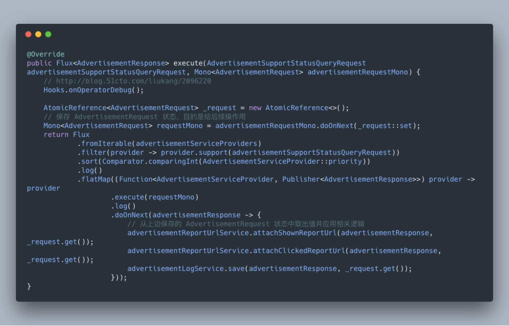</p><p>&nbsp;</p><p><span>➤ 问题解答</span></p><p>&nbsp;</p><p><span>[</span><strong><span>北京-后端-张帆</span></strong><span>] 反应式里 Mono</span><T><span> 是个 code publisher，如果想要在一个观察过程结束（也就是去获得响应的过程）后再次消费，可以再观察一遍 Mono</span><T><span> ，这样就不存在状态保存与传递。</span></p><p><strong><span>[上海-后端-知秋]</span></strong><span> 可以通过 Reactor 中的 Context 来实现。Context 在 Rxjava 中没有的，也就是 Reactor 专门提供给后端开发来应对这种情况的，因为在响应式调度的情况下，ThreadLocal 已经显得很鸡肋，而且很容易泄漏信息，所以响应式编程是禁用 ThreadLocal 的。</span></p><p>&nbsp;</p><h3><a name="**2.**%E4%B8%9A%E5%8A%A1%E4%B8%AD%E5%A6%82%E4%BD%95%E4%BD%BF%E7%94%A8%E5%88%86%E5%B8%83%E5%BC%8F%E4%BA%8B%E5%8A%A1%E6%9D%A5%E4%BF%9D%E8%AF%81%E6%95%B0%E6%8D%AE%E4%B8%80%E8%87%B4%E6%80%A7" class="md-header-anchor"></a><strong><span>2.</span></strong><span>业务中如何使用分布式事务来保证数据一致性</span></h3><blockquote><p><strong><span>Java</span></strong><span>   [2018-12-25]</span></p></blockquote><p>&nbsp;</p><p>[<strong><span>北京-java-西希家</span></strong>][**西安-java-夏夏xi**]<span> 业务中如何使用分布式事务来保证数据一致性？</span></p><p>&nbsp;</p><p><span>➤ 问题解答</span></p><p>&nbsp;</p><p><span>[</span><strong><span>杭州-后端-梁桂钊</span></strong><span>] 分布式事务可以分成强一致性和最终一致性两种方案。对于强一致性，可以了解下「二阶段提交协议」、「三阶段提交协议」。但是，强一致性存在一些问题，因此生产环境中更多的是利用最终一致性的方案。对于，TCC 和 saga 可以查阅一下相关材料。这里，想分享一下可靠消息投递的方案。</span></p><p>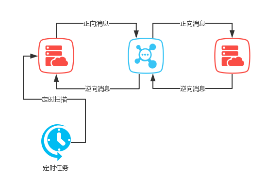</p><p>&nbsp;</p><p><span>消息队列发生消息后，可能消费者宕机而无法消费。绝大多数消息中间件对于这种情况，例如 RabbitMQ、RocketMQ 等引入了 ACK 机制。注意的是，默认的情况下，采用自动应答，这种方式中消息队列会发送消息后立即从消息队列中删除该消息。所以，为了确保消息的可靠投递，我们通过手动 ACK 方式，如果消费者因宕机等原因没有发送 ACK，消息队列会将消息重新发送，保证消息的可靠性。从业务服务处理完相关业务后通过手动 ACK 通知消息队列，消息队列才从消息队列中删除该持久化消息。那么，消息队列如果一直重试失败而无法投递，就会出现消息主动丢弃的情况，我们需要如何解决呢？主业务服务将要发送的消息持久化到本地数据库。从业务服务消费成功后，它也会向消息队列发送一个通知消息，此时它是一个消息的生产者。消费者接收到消息后，最终把本地的持久化消息标志状态为“完成”状态。说到这里，我们应该可以理解到使用“正反向消息机制”确保了消息队列可靠事件投递。当然，补偿机制也是必不可少的。定时任务会从数据库扫描在一定时间内未完成的消息并重新投递。</span></p><p>&nbsp;</p><blockquote><p><span>「研习小组」在探讨过程中，探讨到 RPC 的同异步方式、超时控制、TCC框架的设计等。篇幅有限，暂不展开。</span></p></blockquote><p>&nbsp;</p><h3><a name="**3.**%E6%80%8E%E4%B9%88%E7%90%86%E8%A7%A3%E5%8F%8C%E9%87%8D%E6%A3%80%E9%AA%8C%E9%94%81" class="md-header-anchor"></a><strong><span>3.</span></strong><span>怎么理解双重检验锁</span></h3><blockquote><p><strong><span>Java</span></strong><span>   [2018-12-24]</span></p></blockquote><p>&nbsp;</p><p><strong><span>[北京-打杂-火材]</span></strong><span>  怎么理解双重检验锁（Double Check）？</span></p><p>&nbsp;</p><p><span>➤ 问题解答</span></p><p>&nbsp;</p><p><strong><span>[西安-java-健]</span></strong><span> 缓存也用到双重锁校验，比如判断缓存是否存在， </span><code>if( user == null )</code><span>  如果空，去查数据库，然后准备赋值的时候可能已经被更新过了，因此在赋值之前就需要再检查下</span><code>if( user == null )</code><span>。</span></p><p><strong><span>[杭州-后端-梁桂钊</span></strong><span>][长沙-后端-陈同学]</span><strong><span>[北京-java-犀利豆]单例模式中经常看到，但是实际生产中也经常使用。</span></strong></p><p>&nbsp;</p><pre spellcheck="false" class="md-fences md-end-block ty-contain-cm modeLoaded" lang=""><div class="CodeMirror cm-s-inner CodeMirror-wrap" lang=""><div style="overflow: hidden; position: relative; width: 3px; height: 0px; top: 0px; left: 11.6667px;"><textarea autocorrect="off" autocapitalize="off" spellcheck="false" tabindex="0" style="position: absolute; bottom: -1em; padding: 0px; width: 1000px; height: 1em; outline: none;"></textarea></div><div class="CodeMirror-scrollbar-filler" cm-not-content="true"></div><div class="CodeMirror-gutter-filler" cm-not-content="true"></div><div class="CodeMirror-scroll" tabindex="-1"><div class="CodeMirror-sizer" style="margin-left: 0px; margin-bottom: 0px; border-right-width: 0px; padding-right: 0px; padding-bottom: 0px;"><div style="position: relative; top: 0px;"><div class="CodeMirror-lines" role="presentation"><div role="presentation" style="position: relative; outline: none;"><div class="CodeMirror-measure"></div><div class="CodeMirror-measure"></div><div style="position: relative; z-index: 1;"></div><div class="CodeMirror-code" role="presentation" style=""><div class="CodeMirror-activeline" style="position: relative;"><div class="CodeMirror-activeline-background CodeMirror-linebackground"></div><div class="CodeMirror-gutter-background CodeMirror-activeline-gutter" style="left: 0px; width: 0px;"></div><pre class=" CodeMirror-line " role="presentation"><span role="presentation" style="padding-right: 0.1px;">Cache&lt;Object, AtomicReference&lt;?&gt;&gt; cache = cacheMap.get(method);</span></pre></div><pre class=" CodeMirror-line " role="presentation"><span role="presentation" style="padding-right: 0.1px;">if (cache == null) {</span></pre><pre class=" CodeMirror-line " role="presentation"><span role="presentation" style="padding-right: 0.1px;">  synchronized (cacheMap) {</span></pre><pre class=" CodeMirror-line " role="presentation"><span role="presentation" style="padding-right: 0.1px;"> &nbsp;  cache = cacheMap.get(method);</span></pre><pre class=" CodeMirror-line " role="presentation"><span role="presentation" style="padding-right: 0.1px;">  }</span></pre><pre class=" CodeMirror-line " role="presentation"><span role="presentation" style="padding-right: 0.1px;">}</span></pre></div></div></div></div></div><div style="position: absolute; height: 0px; width: 1px; border-bottom: 0px solid transparent; top: 120px;"></div><div class="CodeMirror-gutters" style="display: none; height: 120px;"></div></div></div></pre><p>&nbsp;</p><h3><a name="**4.%E5%B9%B6%E5%8F%91%E8%AF%B7%E6%B1%82%E5%9C%A85000%E5%B7%A6%E5%8F%B3%E7%9A%84%E7%B3%BB%E7%BB%9F%E8%AF%A5%E5%A6%82%E4%BD%95%E8%AE%BE%E8%AE%A1**" class="md-header-anchor"></a><strong><span>4.并发请求在5000左右的系统该如何设计</span></strong></h3><blockquote><p><strong><span>架构</span></strong><span>   [2018-12-28]</span></p></blockquote><p>&nbsp;</p><p><span>[</span><strong><span>上海-后端-阿杰</span></strong><span>] 一个并发请求在 5000 左右的系统需要如何设计？</span></p><p>&nbsp;</p><p><span>➤ 相关讨论</span></p><p>&nbsp;</p><p><strong><span>[杭州-后端-梁桂钊</span></strong><span>][北京-java-犀利豆]** 本质上，这个问题探讨的是高并发系统怎么设计？这个问题比较范，我们暂时先不探讨业务复杂度和技术复杂度，纯粹的从技术层面来探讨问题。很多时候，数据存储是一个比较大的瓶颈，因此数据库层面需要支持分库分表，其次是读写分离。然后呢，通过引入缓存来减少数据库的压力，并且提高查询性能。</span></p><p><strong>[<span>杭州-后端-梁桂钊</span>][西安-java-夏夏xi]<span>[北京-java-犀利豆]</span></strong><span>从架构层面，必须要集群和负载均衡。例如，我们项目中经常通过 nginx + tomcat 来实现。</span></p><p><span>[</span><strong><span>上海-scala-面包</span></strong><span>] [</span><strong><span>深圳-Java-阿飞</span></strong><span>] 采用 MQ 进行解耦和销峰填谷，起到限流的作用。</span></p><p><strong><span>[杭州-后端-梁桂钊</span></strong><span>]**在高并发系统中，可用性（稳定性）也很重要。一般情况下，容量规划、自动伸缩，以及熔断+降级+限流+隔离都是需要考虑的。</span></p><p>&nbsp;</p><h3><a name="**5.%E5%85%B3%E4%BA%8Edubbo%E5%BC%82%E5%B8%B8%E5%A4%84%E7%90%86**" class="md-header-anchor"></a><strong><span>5.关于dubbo异常处理</span></strong></h3><blockquote><p><strong><span>Dubbo</span></strong><span>    [2018-12-29]</span></p></blockquote><p><span>[</span><strong><span>福州-Java-峰</span></strong><span>] 关于 dubbo 异常处理，「阿里巴巴 Java 开发手册」建议 RPC 使用 Result 进行封装，只返回错误码和简短错误信息。而 「dubbo 官网最佳实践」建议携带异常，可以查看更多信息。各位在工作中是怎么实践的？</span></p><blockquote><p><span>「阿里巴巴 Java 开发手册」：跨应用 RPC 调用优先考虑使用 isSuccess() 方法、“错误码”、“错误简短信息”。关于 RPC 方法返回方式使用 Result 方式的理由 : 1）使用抛异常返回方式，调用方如果没有捕获到，就会产生运行时错误。2）如果不加栈信息，只是 new 自定义异常，加入自己的理解的 error message，对于调用端解决问题的帮助不会太多。如果加了栈信息，在频繁调用出错的情况下，数据序列化和传输的性能损耗也是问题。</span></p><p><span>链接：</span><a href='https://book.douban.com/subject/27605355/' target='_blank' class='url'>https://book.douban.com/subject/27605355/</a></p></blockquote><p>&nbsp;</p><p><span>➤ 相关讨论</span></p><p>&nbsp;</p><p><strong><span>[北京-java-犀利豆]</span></strong><span> 我们的做法是自己封装了一组异常，其中，业务异常和运行时异常是分开的。对于，业务异常，我们用不是封装的 Result。对于，运行时异常，我们记录日志，然后返回一个统一的异常，不需要堆栈。自定义的业务异常直接抛出，代码运行时异常包装成一个统一的异常抛出，堆栈信息不包含在里面，通过日志输出定位问题时查看日志来确定。</span></p><p><strong><span>[杭州-后端-梁桂钊</span></strong><span>]**我们的做法是遵守「阿里巴巴 Java 开发手册」，调用优先考虑使用 isSuccess() 方法、“错误码”、“错误简短信息”。</span></p><ul><li></li></ul><pre spellcheck="false" class="md-fences md-end-block ty-contain-cm modeLoaded" lang=""><div class="CodeMirror cm-s-inner CodeMirror-wrap" lang=""><div style="overflow: hidden; position: relative; width: 3px; height: 0px; top: 0px; left: 11.6667px;"><textarea autocorrect="off" autocapitalize="off" spellcheck="false" tabindex="0" style="position: absolute; bottom: -1em; padding: 0px; width: 1000px; height: 1em; outline: none;"></textarea></div><div class="CodeMirror-scrollbar-filler" cm-not-content="true"></div><div class="CodeMirror-gutter-filler" cm-not-content="true"></div><div class="CodeMirror-scroll" tabindex="-1"><div class="CodeMirror-sizer" style="margin-left: 0px; margin-bottom: 0px; border-right-width: 0px; padding-right: 0px; padding-bottom: 0px;"><div style="position: relative; top: 0px;"><div class="CodeMirror-lines" role="presentation"><div role="presentation" style="position: relative; outline: none;"><div class="CodeMirror-measure"><pre><span>xxxxxxxxxx</span></pre></div><div class="CodeMirror-measure"></div><div style="position: relative; z-index: 1;"></div><div class="CodeMirror-code" role="presentation" style=""><div class="CodeMirror-activeline" style="position: relative;"><div class="CodeMirror-activeline-background CodeMirror-linebackground"></div><div class="CodeMirror-gutter-background CodeMirror-activeline-gutter" style="left: 0px; width: 0px;"></div><pre class=" CodeMirror-line " role="presentation"><span role="presentation" style="padding-right: 0.1px;">public Result&lt;XxxDTO&gt; getXxx(String param) {</span></pre></div><pre class=" CodeMirror-line " role="presentation"><span role="presentation" style="padding-right: 0.1px;"> &nbsp;  try {</span></pre><pre class=" CodeMirror-line " role="presentation"><span role="presentation" style="padding-right: 0.1px;"> &nbsp; &nbsp; &nbsp;  // ...</span></pre><pre class=" CodeMirror-line " role="presentation"><span role="presentation" style="padding-right: 0.1px;"> &nbsp; &nbsp; &nbsp;  return Result.create(xxxDTO);</span></pre><pre class=" CodeMirror-line " role="presentation"><span role="presentation" style="padding-right: 0.1px;"> &nbsp;  } catch (XxxException e) {</span></pre><pre class=" CodeMirror-line " role="presentation"><span role="presentation" style="padding-right: 0.1px;"> &nbsp; &nbsp; &nbsp;  log.error("...", e);</span></pre><pre class=" CodeMirror-line " role="presentation"><span role="presentation" style="padding-right: 0.1px;"> &nbsp; &nbsp; &nbsp;  return Result.createErrorResult(e.getErrorCode(), e.getErrorInfo(), true);</span></pre><pre class=" CodeMirror-line " role="presentation"><span role="presentation" style="padding-right: 0.1px;"> &nbsp;  }</span></pre><pre class=" CodeMirror-line " role="presentation"><span role="presentation" style="padding-right: 0.1px;">}</span></pre></div></div></div></div></div><div style="position: absolute; height: 0px; width: 1px; border-bottom: 0px solid transparent; top: 180px;"></div><div class="CodeMirror-gutters" style="display: none; height: 180px;"></div></div></div></pre><p>&nbsp;</p><p><strong><span>[杭州-后端-梁桂钊]</span></strong><span>分布式系统的日志查询，一般需要聚合查询，例如 ELK。此外，一个请求会涉及多个跨服务调要，而服务本身可能也会依赖其他服务，整个请求路径就构成了一个网状的调用链，而在整个调用链中一旦某个节点发生异常，整个调用链的稳定性就会受到影响 因此，分布式追踪功能必不可少，例如 SkyWalking。这里，特别推荐阅读：</span><a href='https://www.jianshu.com/p/e3d7c50651f6' target='_blank' class='url'>https://www.jianshu.com/p/e3d7c50651f6</a></p><p>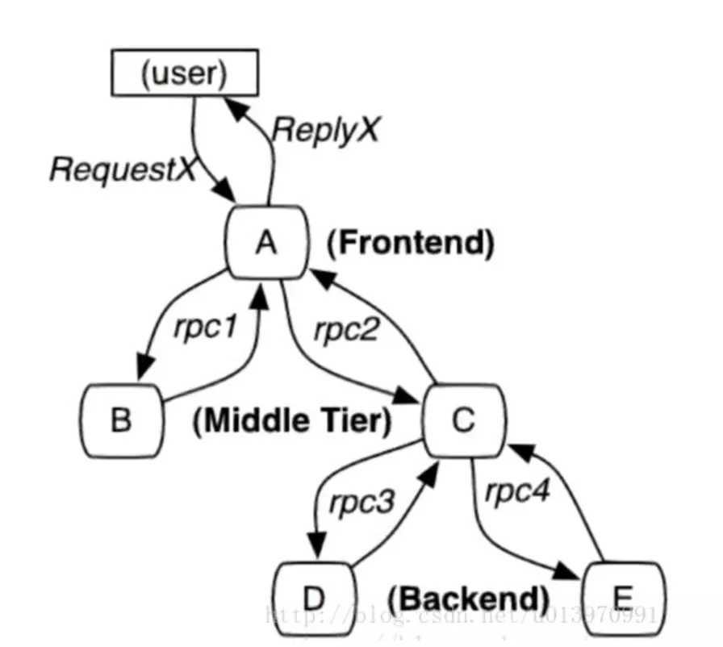</p><p>&nbsp;</p><hr /><p><span>非常感谢「后端圈」小伙伴们的高质量技术交流，以及「研习小组」成员们的聚焦交流。如果对您有帮助的话，可以帮忙转发与分享。同时，欢迎加入「后端圈」与「研习小组」共同探讨，一起交流、探讨，打破认知的局限。（PS ：如果参与分享的小伙伴，有相关博客、公众号、书籍，欢迎私信我添加和补充~）</span></p><p>&nbsp;</p><ul><li><span>✅</span><strong><span>北京-后端-张帆</span></strong><span> </span><strong><span>（博客</span></strong><span> </span><strong><span>：Since1986</span></strong><span> </span><a href='https://since1986.github.io/'><span>https://since1986.github.io</span></a><strong><span>）</span></strong></li><li><span>✅</span><strong><span>上海-Java-知秋（博客 ：一叶知秋</span></strong><span> </span><a href='https://muyinchen.github.io/'><span>https://muyinchen.github.io</span></a><strong><span>）</span></strong></li><li><span>✅</span><strong><span>北京-java-犀利豆（公众号 ：犀利豆的技术空间）</span></strong></li><li><span>✅</span><strong><span>北京-java-西希家</span></strong></li><li><span>✅</span><strong><span>西安-java-夏夏xi</span></strong></li><li><span>✅</span><strong><span>北京-补位-火柴</span></strong></li><li><span>✅</span><strong><span>长沙-后端-陈同学</span></strong></li><li><span>✅</span><strong><span>上海-scala-面包</span></strong></li><li><span>✅</span><strong><span>深圳-Java-阿飞（公众号 ：阿飞的博客）</span></strong></li><li><span>✅</span><strong><span>上海-后端-阿杰</span></strong></li><li><span>✅</span><strong><span>福州-Java-峰</span></strong></li><li><span>✅</span><strong><span>青南（书籍：《Python爬虫开发 从入门到实战》）</span></strong></li><li><span>✅</span><strong><span>杭州-后端-梁桂钊（公众号 ：服务端思维）</span></strong></li></ul><h2><a name="**%E5%91%A8%E6%8A%A5-no.53%EF%BC%882019%E5%B9%B4%EF%BC%89**" class="md-header-anchor"></a><strong><span>周报 No.53（2019年）</span></strong></h2><h3><a name="**1.%E4%BB%8E600%E4%B8%87%E4%B8%AA%E5%8F%A5%E5%AD%90%E9%87%8C%E7%A7%BB%E9%99%A4%E7%AC%A6%E5%90%88%E8%A6%81%E6%B1%82%E7%9A%84%E5%8F%A5%E5%AD%90%EF%BC%8C%E6%9C%80%E9%AB%98%E6%95%88%E7%9A%84%E5%8A%9E%E6%B3%95%E6%98%AF%E4%BB%80%E4%B9%88**" class="md-header-anchor"></a><strong><span>1.从600万个句子里移除符合要求的句子，最高效的办法是什么</span></strong></h3><blockquote><p><strong><span>实战</span></strong><span>    [2019-01-02]</span></p></blockquote><p>&nbsp;</p><p><span>[</span><strong><span>杭州-数据挖掘-青南</span></strong><span>]  在Python里面，用1万个正则表达式从600万个句子里面移除所有符合要求的句子。请问最高效的办法是什么？</span></p><p><span>类似于敏感词句子剔除</span></p><pre spellcheck="false" class="md-fences md-end-block ty-contain-cm modeLoaded" lang=""><div class="CodeMirror cm-s-inner CodeMirror-wrap" lang=""><div style="overflow: hidden; position: relative; width: 3px; height: 0px; top: 0px; left: 11.6667px;"><textarea autocorrect="off" autocapitalize="off" spellcheck="false" tabindex="0" style="position: absolute; bottom: -1em; padding: 0px; width: 1000px; height: 1em; outline: none;"></textarea></div><div class="CodeMirror-scrollbar-filler" cm-not-content="true"></div><div class="CodeMirror-gutter-filler" cm-not-content="true"></div><div class="CodeMirror-scroll" tabindex="-1"><div class="CodeMirror-sizer" style="margin-left: 0px; margin-bottom: 0px; border-right-width: 0px; padding-right: 0px; padding-bottom: 0px;"><div style="position: relative; top: 0px;"><div class="CodeMirror-lines" role="presentation"><div role="presentation" style="position: relative; outline: none;"><div class="CodeMirror-measure"><pre><span>xxxxxxxxxx</span></pre></div><div class="CodeMirror-measure"></div><div style="position: relative; z-index: 1;"></div><div class="CodeMirror-code" role="presentation"><div class="CodeMirror-activeline" style="position: relative;"><div class="CodeMirror-activeline-background CodeMirror-linebackground"></div><div class="CodeMirror-gutter-background CodeMirror-activeline-gutter" style="left: 0px; width: 0px;"></div><pre class=" CodeMirror-line " role="presentation"><span role="presentation" style="padding-right: 0.1px;">C.M</span></pre></div><pre class=" CodeMirror-line " role="presentation"><span role="presentation" style="padding-right: 0.1px;">M.*?P</span></pre></div></div></div></div></div><div style="position: absolute; height: 0px; width: 1px; border-bottom: 0px solid transparent; top: 40px;"></div><div class="CodeMirror-gutters" style="display: none; height: 40px;"></div></div></div></pre><p><span>这样的敏感词pattern有一万个。要从600万条句子里面把符合所有pattern的句子全部去掉，我现在用8个进程跑，半个小时还不到100万条。太慢了</span></p><p>&nbsp;</p><p><span>➤ 问题解答</span></p><p>&nbsp;</p><ul><li><span>[</span><strong><span>harry</span></strong><span>] 考虑下倒排索引</span></li><li><span>[</span><strong><span>杭州-数据挖掘-青南</span></strong><span>]  倒排索引非常有效。现在76秒就能把整个流程走完，速度提高了100万倍。</span></li></ul><hr /><h3><a name="**2.%E5%85%B3%E4%BA%8Einndb%E4%BA%8B%E5%8A%A1%E6%81%A2%E5%A4%8D**" class="md-header-anchor"></a><strong><span>2.关于InnDB事务恢复</span></strong></h3><blockquote><p><strong><span>MySQL</span></strong><span>    [2019-01-03]  </span></p></blockquote><p>&nbsp;</p><p><span>[</span><strong><span>杭州-java-菜鸟</span></strong><span>] 有个问题想请教下大家 默认redolog每次事务提交从log buffer写入os缓冲区再刷入磁盘 假如在事务没有提交时发生宕机 那么inndb怎么根据redolog恢复未完成的事务</span></p><p>&nbsp;</p><p><span>➤ 相关讨论</span></p><p>&nbsp;</p><ul><li><span>[</span><strong><span>harry</span></strong><span>]</span></li></ul><p><span>这个是可以配置的，有一个属性 sync on cimmit</span></p><p></p><blockquote><p><span>@</span><strong><span>harry</span></strong><span> 我查了 0是每秒写入os buffer 并刷盘 1是每次提交写入并刷盘 2是每次提交写入 每秒刷盘，默认是1  我不太明白的是在1的情况下如果事务没有提交发生了宕机 之后哪来的redolog恢复未完成的事务？</span></p><p>&nbsp;</p><p><span>@</span><strong><span>杭州-java-菜鸟</span></strong><span> 重试，我理解这时候会回滚，因为日志都是不完整的</span></p><p>&nbsp;</p><p><span>@</span><strong><span>harry</span></strong><span> 我认为是崩溃恢复之后事务重做然后回滚  但是又不知道刚刚我说的那种情况redolog从哪来</span></p><p>&nbsp;</p><p><span>@</span><strong><span>杭州-java-菜鸟</span></strong><span> 没提交就没有log啊</span></p><p>&nbsp;</p><p><span>@</span><strong><span>harry</span></strong><span> 我看这个阿里云的资料上这样描述的 感觉应该是能恢复当时未提交事务然后再回滚的</span></p></blockquote><blockquote><p></p></blockquote><p>&nbsp;</p><ul><li><span>[</span><strong><span>福州-Java-王波</span></strong><span>] 没有提交的话，事务就没有成功，redo log还在缓冲区并没有刷新到磁盘，崩溃了应该就丢了，不会恢复了。崩溃恢复说的应该是已经提交了事务，有日志文件，但后台线程还没来得及修改真实数据块。这时候可以根据事务日志来恢复。</span></li></ul><p>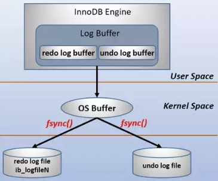</p><hr /><h3><a name="**3.%E7%94%9F%E6%88%90%E8%AE%A2%E5%8D%95%E5%90%8E%E8%A6%81%E5%8F%8A%E6%97%B6%E5%87%8F%E5%B0%91%E5%BA%93%E5%AD%98%EF%BC%8C%E8%BF%99%E4%B8%AA%E4%B8%9A%E5%8A%A1%E5%9C%BA%E6%99%AF%E8%AF%A5%E5%A6%82%E4%BD%95%E5%81%9A%E8%AE%BE%E8%AE%A1**" class="md-header-anchor"></a><strong><span>3.生成订单后要及时减少库存，这个业务场景该如何做设计</span></strong></h3><blockquote><p><strong><span>实战</span></strong><span>    [2019-01-03]</span></p></blockquote><p>&nbsp;</p><p><span>[</span><strong><span>北京-打杂-火柴</span></strong><span>] 生成订单后要及时减少库存？比如说库存只有20件，现在A和B同时下单，都要下单11个，怎么做？</span></p><p></p><p>&nbsp;</p><p><span>➤ 相关讨论</span></p><p>&nbsp;</p><ul><li><span>[</span><strong><span>北京-后端-Ayo</span></strong><span>] 你可以设定一个值，当库存只剩多少件的时候只能一件一件的买。</span></li><li><span>[</span><strong><span>深圳-Java-阿飞</span></strong><span>] 系统先生成订单号，然后用这个订单号去减库存，减库存成功后展示给用户，准备付款，如果购物车够选了多件商品，有一些库存不够，是下不了单的，双十一就是这样的，所以，提示用户支付的订单，一定是有库存，这是肯定的</span></li></ul><hr /><h3><a name="**4.%E5%A6%82%E4%BD%95%E8%8E%B7%E5%BE%97%E5%9C%A8%E8%BF%90%E8%A1%8C%E6%97%B6%E8%8E%B7%E5%BE%97%E6%B3%9B%E5%9E%8B%E7%9A%84%E7%9C%9F%E5%AE%9E%E7%B1%BB%E5%9E%8B**" class="md-header-anchor"></a><strong><span>4.如何获得在运行时获得泛型的真实类型</span></strong></h3><blockquote><p><strong><span>Java</span></strong><span>    [2019-01-04]  </span></p></blockquote><p>&nbsp;</p><p><span>[</span><strong><span>北京-打杂-火柴</span></strong><span>] 如下图，Java 泛型擦除，导致无法运行时获得真实类型，该如何更好的解决</span></p><p>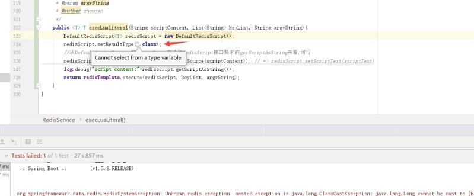</p><p>&nbsp;</p><p>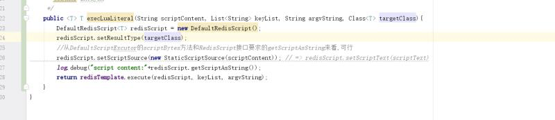</p><p>&nbsp;</p><p><span>➤ 问题解答</span></p><p>&nbsp;</p><ul><li><span>[</span><strong><span>北京-java-犀利豆</span></strong><span>] 可参考我的博客文章「</span><a href='https://xilidou.com/2017/11/28/%E6%9C%80%E8%BF%91%E9%81%87%E5%88%B0%E7%9A%84%E5%87%A0%E4%B8%AA%E5%B0%8F%E9%A2%98%E9%9B%86%E5%90%88/'><span>最近遇到的几个问题集合</span></a><span>」</span></li></ul><p>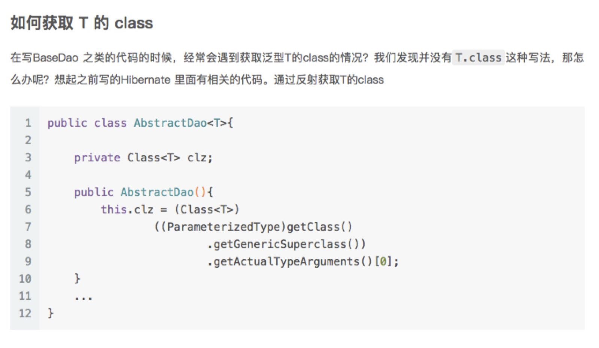</p><hr /><h3><a name="**5.**%E5%85%B3%E4%BA%8E%E5%BC%82%E5%B8%B8%E8%A1%A8" class="md-header-anchor"></a><strong><span>5.</span></strong><span>关于异常表</span></h3><blockquote><p><strong><span>JVM</span></strong><span>    [2019-01-04]</span></p></blockquote><p>&nbsp;</p><p><span>[</span><strong><span>上海</span><em><span>java</span></em><span>小星</span></strong><span>]</span></p><p>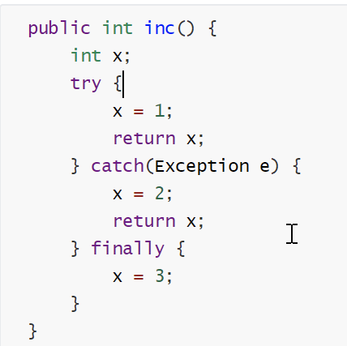</p><p><span>下图是根据上图这个代码生成的异常表信息</span></p><p></p><p>&nbsp;</p><p><span>异常表有4条记录，前三条我能理解。分别是：</span></p><p><span>\1. 如果try语句块中出现属于Exception或其子类的异常，则转到catch语句块处理。</span></p><p><span>\2. 如果try语句块中出现不属于Exception或其子类的异常，则转到finally语句块处理。</span></p><p><span>\3. 如果catch语句块中出现任何异常，则转到finally语句块处理。</span></p><p><span>这个第4条，我不太清楚，它是处理哪一种异常情况呢？我觉得第4条记录是多余的，这个例子是，深入理解jvm那本书的例子，可是书中提到的异常表只有前三条记录，但我编译出来有第4条，对于第4条，貌似是说在处理未声明异常时候，此时如果又抛出异常，就跳转到字节码17行的代码处理，我不太理解这个意思</span></p><p>&nbsp;</p><p>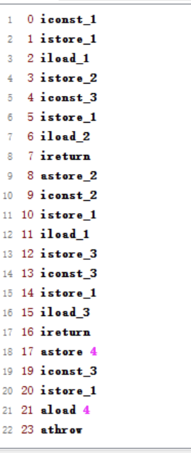</p><p>&nbsp;</p><p><span>17行指令-astore  4，是说把这个抛出的未声明异常的引用放到局部变量索引4的位置，貌似只有这一个动作，这个动作抛出异常，就跳到17行处，是这个意思吗？</span></p><p>&nbsp;</p><p><span>➤ 相关讨论</span></p><p>&nbsp;</p><ul><li><span>[</span><strong><span>兰小伟-《TypeScript实战》</span></strong><span>]</span></li></ul><blockquote><p><span>astore 4是将栈顶元素写入本地变量表的索引为4的位置，栈顶元素是ireturn指令push到栈顶的</span></p><p>&nbsp;</p><p><span>@兰小伟-《TypeScript实战》这个操作，jvm认为会抛异常？此时栈顶应该是那个异常对象的引用</span></p><p>&nbsp;</p><p><span>@上海</span><em><span>java</span></em><span>小星 19那个指令是把int 的3push到栈顶，也就是说return执行后也要执行finally，17跳到19是起这个作用</span></p><p>&nbsp;</p><p><span>@兰小伟-《TypeScript实战》应该不包含19，那个区间是左闭右开，异常表第4行，说得是指令17处，抛出异常的话，就跳转到17处再执行吧，这会循环吗</span></p><p>&nbsp;</p><p><span>@上海</span><em><span>java</span></em><span>小星 保证return后会执行到finally</span></p></blockquote><blockquote><p><span>@兰小伟-《TypeScript实战》那这样感觉怪怪的。如果真出现异常表第4条记录那样的情况，他不就是循环执行[17，19)那地方的代码了吗</span></p><p>&nbsp;</p><p><span>@上海</span><em><span>java</span></em><span>小星 对，你是对的，我理解错了，17-19如果出现任何异常，就跳到17，这是个死循环</span></p><p>&nbsp;</p><p><span>@兰小伟-《TypeScript实战》其实我有两个疑惑，一个就是上面的死循环的意义是什么；二就是[17，19)这个地方为什么还会抛异常</span></p><p>&nbsp;</p><p><span>@上海</span><em><span>java</span></em><span>小星 死循环意思是保证返回值写入本地变量表一定会写成功；第二个问题比如数组越界啊，后面有个索引4</span></p></blockquote><hr /><h3><a name="**6.mysql%E6%97%A0%E6%B3%95%E5%90%AF%E5%8A%A8**" class="md-header-anchor"></a><strong><span>6.MySQL无法启动</span></strong></h3><blockquote><p><strong><span>MySQL</span></strong><span>    [2019-01-05]</span></p></blockquote><p>&nbsp;</p><p><span>[</span><strong><span>上海-Java-同生</span></strong><span>] 下图这个异常该怎么解决</span></p><p></p><p><span>之前都好着的，今天要用时。就这样了</span></p><p></p><p>&nbsp;</p><p><span>➤ 问题解答</span></p><p>&nbsp;</p><ul><li><span>[</span><strong><span>南京-后端-祁晓波</span></strong><span>] 不用localhost啊，指定host，没指定server就是本机，mysql在localhost会特殊处理走socket，如果确定mysql是启动的，运行命令 -h </span><a href='https://www.yuque.com/server_mind/answer/127.0.0.1'><span>127.0.0.1</span></a><span> 试试看</span></li></ul><hr /><h3><a name="**%E5%85%B3%E9%94%AE%E5%AD%97**" class="md-header-anchor"></a><strong><span>关键字</span></strong></h3><p>&nbsp;</p><h3><a name="**redo-log%E3%80%81undo-log**" class="md-header-anchor"></a><strong><span>Redo Log、Undo Log</span></strong></h3><blockquote><p><span>redo日志、undo日志：</span></p><p>&nbsp;</p><p><span>存储引擎也会为redo undo日志开辟内存缓存空间，log buffer。磁盘上的日志文件称为log file，是顺序追加的，性能非常高，注：磁盘的顺序写性能比内存的写性能差不了多少。</span></p><p>&nbsp;</p><p><span>undo日志用于记录事务开始前的状态，用于事务失败时的回滚操作；redo日志记录事务执行后的状态，用来恢复未写入data file的已成功事务更新的数据。例如某一事务的事务序号为T1，其对数据X进行修改，设X的原值是5，修改后的值为15，那么Undo日志为&lt;T1, X, 5&gt;，Redo日志为&lt;T1, X, 15&gt;。</span></p></blockquote><p>&nbsp;</p><p><span>「</span><a href='https://zhuanlan.zhihu.com/p/34650908'><span>mysql事务、redo日志、undo日志、checkpoint详解</span></a><span>」</span></p><p>&nbsp;</p><hr /><p><span>非常感谢「后端圈」小伙伴们的高质量技术交流。 这里，我使用「知识星球」沉淀高质量的答疑内容。如果对您有帮助的话，可以帮忙转发与分享。同时，欢迎加入「后端群」与「知识星球」共同探讨，一起交流、探讨，打破认知的局限。</span></p><p>&nbsp;</p><ul><li><span>✅</span><strong><span>杭州-数据挖掘-青南（书籍：《Python爬虫开发 从入门到实战》）</span></strong></li><li><span>✅</span><strong><span>harry</span></strong></li><li><span>✅</span><strong><span>杭州-java-菜鸟</span></strong></li><li><span>✅</span><strong><span>福州-Java-王波</span></strong></li><li><span>✅</span><strong><span>北京-打杂-火柴</span></strong></li><li><span>✅</span><strong><span>北京-后端-Ayo</span></strong></li><li><span>✅</span><strong><span>深圳-Java-阿飞（公众号 ：阿飞的博客）</span></strong></li><li><span>✅</span><strong><span>北京-java-犀利豆（公众号 ：犀利豆的技术空间）</span></strong></li><li><span>✅</span><strong><span>上海</span><em><span>java</span></em><span>小星</span></strong></li><li><span>✅</span><strong><span>兰小伟-《TypeScript实战》（书籍：《TypeScript实战》）</span></strong></li><li><span>✅</span><strong><span>上海-Java-同生</span></strong></li><li><span>✅</span><strong><span>南京-后端-祁晓波（博客：后端之路</span></strong><span> </span><a href='https://qixiaobo.site/' target='_blank' class='url'>https://qixiaobo.site/</a><strong><span>）</span></strong></li></ul><h2><a name="**%E5%91%A8%E6%8A%A5-no.54%EF%BC%882019%E5%B9%B4%EF%BC%89**" class="md-header-anchor"></a><strong><span>周报 No.54（2019年）</span></strong></h2><h3><a name="**0.%E5%85%B3%E4%BA%8Eselectionkey**" class="md-header-anchor"></a><strong><span>0.关于SelectionKey</span></strong></h3><blockquote><p><strong><span>Java</span></strong><span>    [2019-01-06]</span></p></blockquote><p>&nbsp;</p><p><span>[</span><strong><span>北京-打杂-火柴</span></strong><span>] 下文中的 key 是做什么用的？代表的什么含义？文中只提到了key的生命周期 没提到他代表的意义和作用啊？表示的是状态，tcp这些请求的状态要我们自己控制，不是socket监控的，所以才需要主动register注册？既然如此，注册的意义是什么？ 就是有点不理解代码为什么要这么做？多路复用器 也要设置成不同的事件进行监听 对应的不通事件进行响应和通知?</span></p><p>&nbsp;</p><p>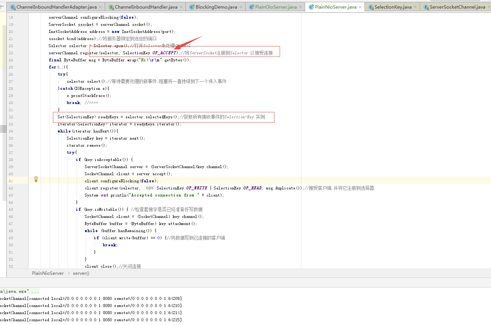</p><p>&nbsp;</p><p>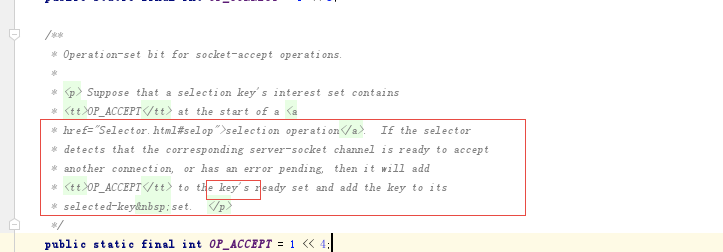</p><p>&nbsp;</p><p>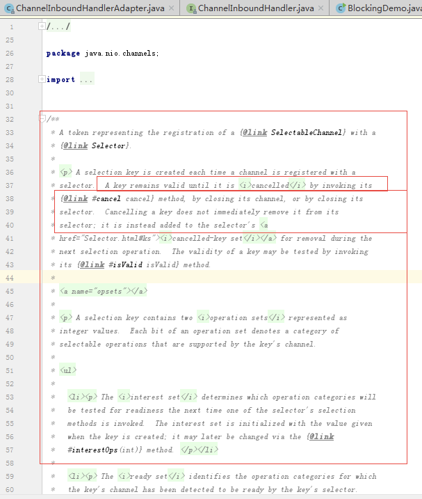</p><p>&nbsp;</p><p><span>➤ 问题解答</span></p><p>&nbsp;</p><ul><li><p><span>[</span><strong><span>北京-打杂-火柴</span></strong><span>] Java的Selector调用操作系统层的Multiplexing IO(多路复用模型),本身只是个API调用。而多路复用是这个样子的: </span></p><p></p><p><span>I/O multiplexing 这里面的 multiplexing 指的其实是在单个线程通过记录跟踪每一个Sock(I/O流)的状态(对应空管塔里面的Fight progress strip槽)来同时管理多个I/O流.  </span></p><p><span>而这段点代码</span><code>SelectionKey key = channel.register(selector, SelectionKey.OP_READ);</code><span> register()方法的第二个参数，这是一个”interest集合“，意思是在通过Selector监听Channel时对什么事件感兴趣.  </span></p><p><span>可以监听四种不同类型的事件：</span></p><p><span>Connect</span></p><p><span>Accept</span></p><p><span>Read</span></p><p><span>Write</span></p><p>&nbsp;</p><p><span>通道触发了一个事件意思是该事件已经就绪。所以，某个channel成功连接到另一个服务器称为”连接就绪“。一个server socket channel准备好接收新进入的连接称为”接收就绪“。一个有数据可读的通道可以说是”读就绪“。等代写数据的通道可以说是”写就绪“。  只要ServerSocketChannel及SocketChannel向Selector注册了特定的事件，Selector就会监控这些事件是否发生。SelectableChannel的register()方法返回一个SelectionKey对象，该对象是用于跟踪这些被注册事件的句柄。在执行Selector的select()方法时，如果与SelectionKey相关的事件发生了，这个SelectionKey就被加入到selected-keys集合中，程序直接调用selected-keys集合的remove()方法，或者调用它的iterator的remove()方法，都可以从selected-keys集合中删除一个SelectionKey对象。</span></p><p>&nbsp;</p><p><span>通过调用某个SelectionKey的cancel()方法，关闭其通道，或者通过关闭其选择器来取消该Key之前，它一直保持有效。取消某个Key之后不会立即从Selector中移除它，相反，会将该Key添加到Selector的已取消key set，以便在下一次进行选择操作的时候移除它。所以简单来说,上面的那个selectionKey就是一种注册事件,而每一种事件对应着这个连接的一种状态,多路复用模型会检查每个连接所对应的状态,如果达到其中的一种状态,就会触发对应的事件处理逻辑。</span></p></li></ul><hr /><h3><a name="**1.%E5%85%B3%E4%BA%8E%E9%95%BF%E9%93%BE%E6%8E%A5**" class="md-header-anchor"></a><strong><span>1.关于长链接</span></strong></h3><blockquote><p><strong><span>TCP</span></strong><span>    [2019-01-06]</span></p></blockquote><p>&nbsp;</p><p><span>[</span><strong><span>北京-打杂-火柴</span></strong><span>] 我这段代码如何改成长连接操作?这个心跳是怎么实现的？死循环开启多个线程，就是开启长连接？我倒觉得第二个靠谱一些，自己 setKeepAlived 还主动关闭了连接，毕竟心跳只是检测，长时间未连接，会主动关闭的。 但是另一个问题就是如果心跳通过死循环就能做到，这是我执行 telnet localhost 8080的结果：telnet发送一次后自然就停止了。是telnet命令的问题？只能维持一次请求，而不是一个连接？</span></p><p>&nbsp;</p><p>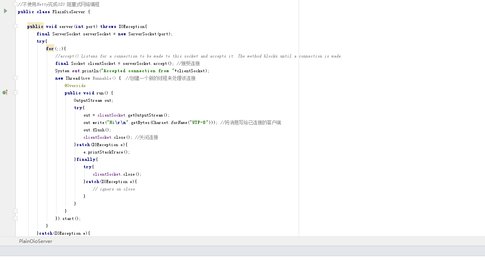</p><p>&nbsp;</p><p>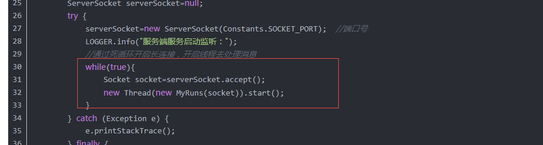</p><p>&nbsp;</p><p>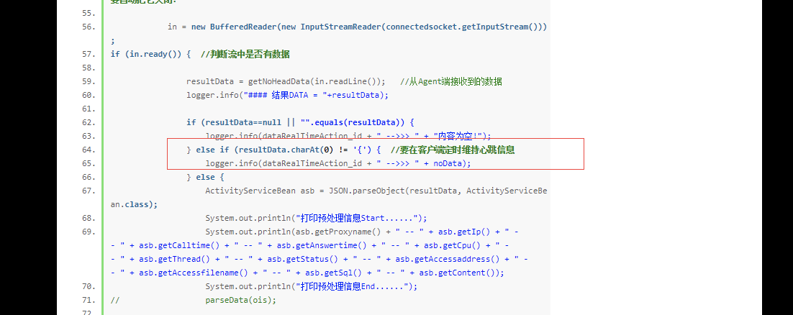</p><p>&nbsp;</p><p>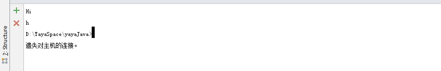</p><p>&nbsp;</p><p><span>➤ 问题解答</span></p><p>&nbsp;</p><ul><li><span>[</span><strong><span>北京-打杂-火柴</span></strong><span>] 首选,我们必须弄清楚一个概念问题,就是TCP的长连接问题，具体请参考徐靖峰的文章 「</span><a href='https://mp.weixin.qq.com/s?__biz=MzI0NzEyODIyOA==&mid=2247484251&idx=1&sn=c037f75bb6172fbad86f5e9c5ed22a77&chksm=e9b58a90dec203866bbe080b1ab795af4f19cae5815426fa40503e0ad01d3ec2a1aac94cb723&scene=0&xtrack=1#rd'><span>聊聊 TCP 长连接和心跳那些事</span></a><span>」</span></li></ul><p>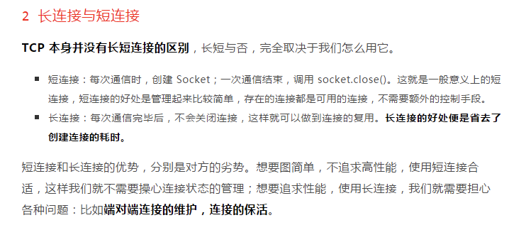</p><p>&nbsp;</p><p>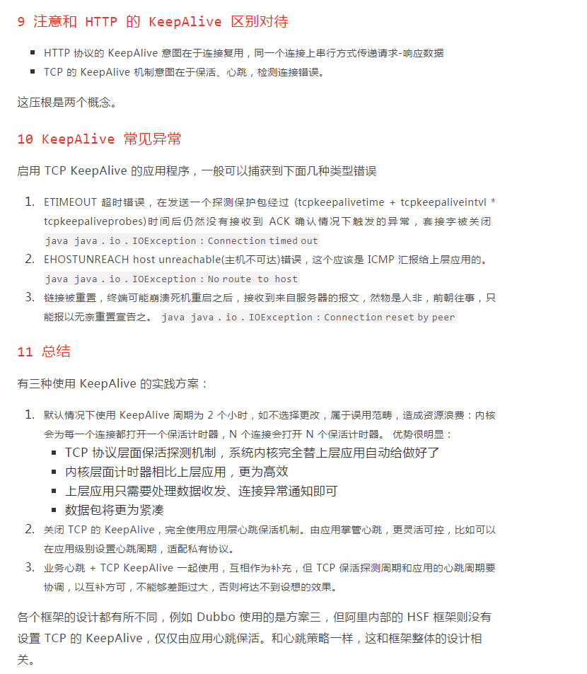</p><p>&nbsp;</p><p></p><p>&nbsp;</p><p><span>所以这个问题本身提问就存在一定问题，严格来讲，甚至不成立。Socket通信完全基于TCP处理的，而TCP不存在真正意义上的长连接</span></p><p>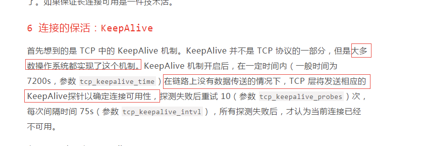</p><p><span>所以,如何实现该问题中所谓的”长连接”?只要每次请求，后台不进行主动即可关闭。而且这个demo如果测试只能使用telnet进行TCP连接，而长短连接都是在应用层协议上开启的，无法做出主动判断，只能后台自己进行相应的逻辑判断和处理，更何况TCP协议本身不存在长连接这一概念，只要维持活性即可。</span></p><hr /><h3><a name="**2.%E5%85%B3%E4%BA%8E%E9%94%81%E5%8D%87%E7%BA%A7**" class="md-header-anchor"></a><strong><span>2.关于锁升级</span></strong></h3><blockquote><p><strong><span>Java</span></strong><span>    [2019-01-07]</span></p></blockquote><p>&nbsp;</p><p><span>[</span><strong><span>南京-java-无瑕</span></strong><span>] 对方法/代码块加 synchronized 关键字后，jvm会根据当前所处的单线程或者多线程环境来进行不同的加锁操作对吗?</span></p><p>&nbsp;</p><p></p><p>&nbsp;</p><p><span>➤ 问题解答</span></p><p>&nbsp;</p><ul><li><span>[</span><strong><span>珠海-java-yellowb</span></strong><span>] 可以参考 「</span><a href='https://www.zhihu.com/question/39009953'><span>jvm从轻量级锁膨胀到重量级锁是在什么时候发生的？</span></a><span>」和「</span><a href='https://www.zhihu.com/question/53826114'><span>java偏向锁，轻量级锁与重量级锁为什么会相互膨胀?</span></a><span>」</span></li></ul><p><span>以下为第二篇问答的部分内容：</span></p><blockquote><p><span>作者：EnjoyMoving</span>
<span>链接：</span><a href='https://www.zhihu.com/question/53826114/answer/236363126' target='_blank' class='url'>https://www.zhihu.com/question/53826114/answer/236363126</a>
<span>来源：知乎</span>
<span>著作权归作者所有。商业转载请联系作者获得授权，非商业转载请注明出处。</span></p><p>&nbsp;</p><p><span>偏向所锁，轻量级锁都是乐观锁，重量级锁是悲观锁。</span>
<span>  一个对象刚开始实例化的时候，没有任何线程来访问它的时候。它是可偏向的，意味着，它现在认为只可能有一个线程来访问它，所以当第一个</span>
<span>线程来访问它的时候，它会偏向这个线程，此时，对象持有偏向锁。偏向第一个线程，这个线程在修改对象头成为偏向锁的时候使用CAS操作，并将</span>
<span>对象头中的ThreadID改成自己的ID，之后再次访问这个对象时，只需要对比ID，不需要再使用CAS在进行操作。</span>
<span>一旦有第二个线程访问这个对象，因为偏向锁不会主动释放，所以第二个线程可以看到对象时偏向状态，这时表明在这个对象上已经存在竞争了，检查原来持有该对象锁的线程是否依然存活，如果挂了，则可以将对象变为无锁状态，然后重新偏向新的线程，如果原来的线程依然存活，则马上执行那个线程的操作栈，检查该对象的使用情况，如果仍然需要持有偏向锁，则偏向锁升级为轻量级锁，（</span><strong><span>偏向锁就是这个时候升级为轻量级锁的</span></strong><span>）。如果不存在使用了，则可以将对象回复成无锁状态，然后重新偏向。</span>
<span>    轻量级锁认为竞争存在，但是竞争的程度很轻，一般两个线程对于同一个锁的操作都会错开，或者说稍微等待一下（自旋），另一个线程就会释放锁。 但是当自旋超过一定的次数，或者一个线程在持有锁，一个在自旋，又有第三个来访时，轻量级锁膨胀为重量级锁，重量级锁使除了拥有锁的线程以外的线程都阻塞，防止CPU空转。</span></p><p><span>来源：</span><a href='https://link.zhihu.com/?target=http%3A//blog.csdn.net/choukekai/article/details/63688332'><span>偏向锁，轻量级锁与重量级锁的区别与膨胀 - choukekai的博客 - CSDN博客</span></a></p></blockquote><hr /><h3><a name="**3.-sleep%E6%98%AF%E4%B8%8D%E6%98%AF%E5%8F%AA%E6%98%AF%E9%99%8D%E4%BD%8E%E4%BA%86cpu%E6%8D%9F%E8%80%97%EF%BC%8C%E5%B9%B6%E4%B8%8D%E6%98%AF%E5%AE%8C%E5%85%A8%E4%B8%8D%E5%8D%A0%E7%94%A8cpu%E8%B5%84%E6%BA%90**" class="md-header-anchor"></a><strong><span>3. sleep是不是只是降低了CPU损耗，并不是完全不占用CPU资源</span></strong></h3><blockquote><p><strong><span>Java</span></strong><span>    [2019-01-08]</span></p></blockquote><p>&nbsp;</p><p><span>[</span><strong><span>北京-打杂-火柴</span></strong><span>] 是不是可以这么理解： sleep只是降低CPU损耗，并不是不占用CPU资源？</span></p><p>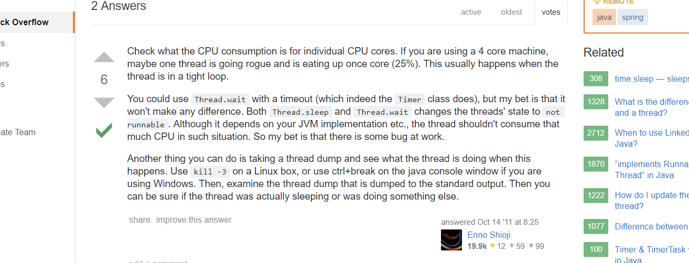</p><p>&nbsp;</p><p>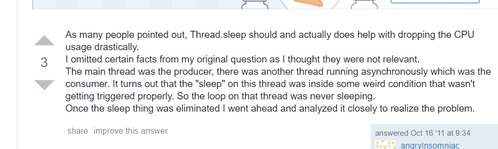</p><p>&nbsp;</p><p><span>➤ 相关讨论</span></p><p>&nbsp;</p><ul><li><span>[</span><strong><span>珠海-java-yellowb</span></strong><span>] sleep应该是会把线程变成block状态，然后os会把它给调度出去不运行</span></li></ul><p>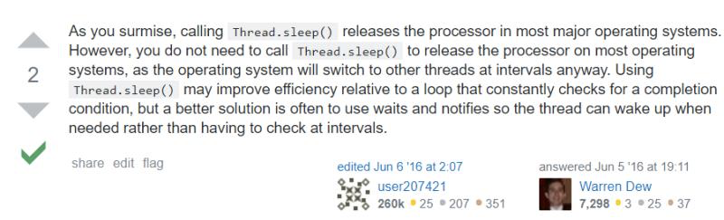</p><ul><li><span>[</span><strong><span>北京-打杂-火柴</span></strong><span>] 从各种实验结果和搜集到的资料来看，sleep并不是不会占用CPU，只是降低CPU的功耗，具体情况还不清楚，依然存疑。至于网大多数面经提到的sleep是否占用CPU也是人云亦云，说法不一。</span></li></ul><hr /><h3><a name="**4.%E4%B8%BA%E4%BB%80%E4%B9%88tomcat%E4%B8%AD%E8%B0%83%E7%94%A8catalina%E7%9A%84%E6%96%B9%E6%B3%95%E9%83%BD%E6%98%AF%E9%80%9A%E8%BF%87%E5%8F%8D%E5%B0%84%E8%B0%83%E7%94%A8%E7%9A%84**" class="md-header-anchor"></a><strong><span>4.为什么tomcat中调用Catalina的方法都是通过反射调用的</span></strong></h3><blockquote><p><strong><span>Java</span></strong><span>    [2019-01-08]</span></p></blockquote><p>&nbsp;</p><p><span>[</span><strong><span>南京-java-无瑕</span></strong><span>] 为什么tomcat中调用Catalina的方法都是通过反射调用的</span></p><p>&nbsp;</p><p><span>➤ 问题解答</span></p><p>&nbsp;</p><ul><li><span>[</span><strong><span>兰小伟-《TypeScript实战》</span></strong><span>] [</span><strong><span>杭州-蛋炒饭-java</span></strong><span>] 可参考 Bootstrap 类</span></li><li><span>[</span><strong><span>兰小伟-《TypeScript实战》</span></strong><span>] [</span><strong><span>南京-java-无瑕</span></strong><span>] 应用程序级别依赖的类与Server自身依赖的类进行隔离。</span></li></ul><p>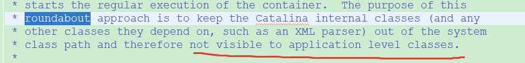</p><ul><li><span>[</span><strong><span>兰小伟-《TypeScript实战》</span></strong><span>] 如果两个类加载器之间没有父子关系，那么他们加载的类之间是完全隔离的。</span></li></ul><hr /><h3><a name="**5.%E5%85%B3%E4%BA%8Ejackson%E7%9A%84objectmapper**" class="md-header-anchor"></a><strong><span>5.关于Jackson的ObjectMapper</span></strong></h3><blockquote><p><strong><span>实战</span></strong><span>    [2019-01-10]</span></p></blockquote><p>&nbsp;</p><p><span>[</span><strong><span>西安-java-健</span></strong><span>] Jackson的 objectMapper 是每次都需要生成呢，还是说本身就是单例呢，我这样写会不会有线程安全性问题：</span></p><p>&nbsp;</p><p>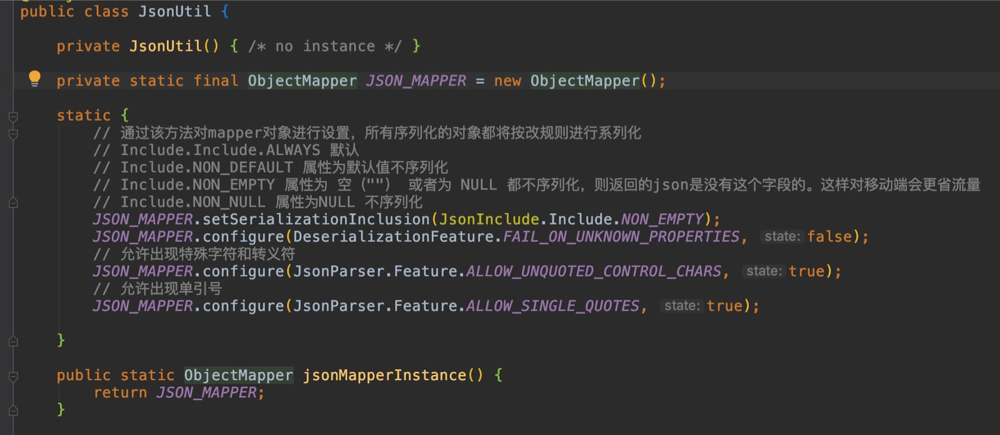</p><p>&nbsp;</p><p><span>我是这么个思路，因为jackson的配置应该是一开始就定义好了，后期不能再变，尤其在运行时候不能变。如果把jackson的配置放在yml文件里面，第一臃肿，第二就是误修改都不好。硬编码应该是最好的办法，然后我就把springboot jackson2HttpMessageCoverter 中ObjectMapper硬编码，最后我突然又想提出个Json工具类，全局配置应该统一，就这样做了。</span></p><p>&nbsp;</p><p><span>➤ 问题解答</span></p><p>&nbsp;</p><ul><li><span>[</span><strong><span>北京-java-犀利豆</span></strong><span>] [</span><strong><span>杭州-蛋炒饭-java</span></strong><span>] 是线程安全的，放心用 一个就够了</span></li><li><span>[</span><strong><span>珠海-java-yellowb</span></strong><span>] 可参考：「</span><a href='https://stackoverflow.com/questions/3907929/should-i-declare-jacksons-objectmapper-as-a-static-field'><span>Should I declare Jackson&#39;s ObjectMapper as a static field?</span></a><span>」</span></li></ul><p>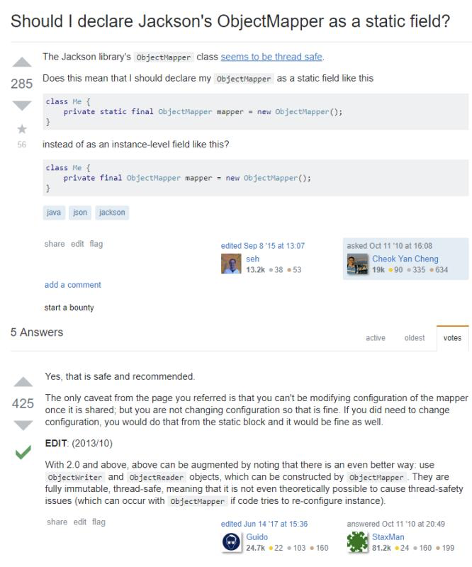</p><hr /><h3><a name="**6.@transactional%E5%AF%B9redis%E4%BA%8B%E5%8A%A1%E8%B5%B7%E4%BD%9C%E7%94%A8%E5%90%97**" class="md-header-anchor"></a><strong><span>6.@Transactional对Redis事务起作用吗</span></strong></h3><blockquote><p><strong><span>Spring</span></strong><span>    [2019-01-11]</span></p></blockquote><p>&nbsp;</p><p><span>[</span><strong><span>北京-打杂-火柴</span></strong><span>] @Transactional 对redis事务也好使吗? 博客千篇一律只给一个demo，有些不理解，是因为annotation只是个标记，在执行的时候，底层会判断是否方法含有这个annotation的标识再进行处理的？文档还是只提到了如何开启，没说这个事务能做到什么，我想知道的是，这个事务能做什么，比如说回滚？redis本身不支持回滚的，而且实现的都是伪原子性，只能保证transaction queue一次提交并执行，结果不进行保证</span></p><p>&nbsp;</p><p>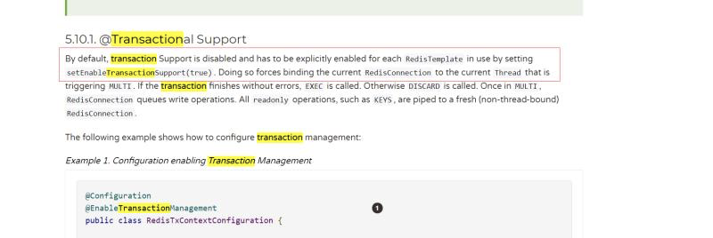</p><p>&nbsp;</p><p><span>➤ 相关讨论</span></p><p>&nbsp;</p><ul><li><p><span>[</span><strong><span>北京-java-犀利豆</span></strong><span>] 一般用redisson的lua保证原子性</span></p></li><li><p><span>[</span><strong><span>杭州-java-乐乐</span></strong><span>] </span></p></li><li><ul><li><span>redis的事务就是一次提交多个命令执行，中间有错误也不会回滚</span></li><li><span>这个事务应该就是把方法里的所有redis操作缓存起来，一次批量提交到redis执行，方法执行完没有错误，就会提交，有错误就不会提交</span></li></ul></li></ul><p>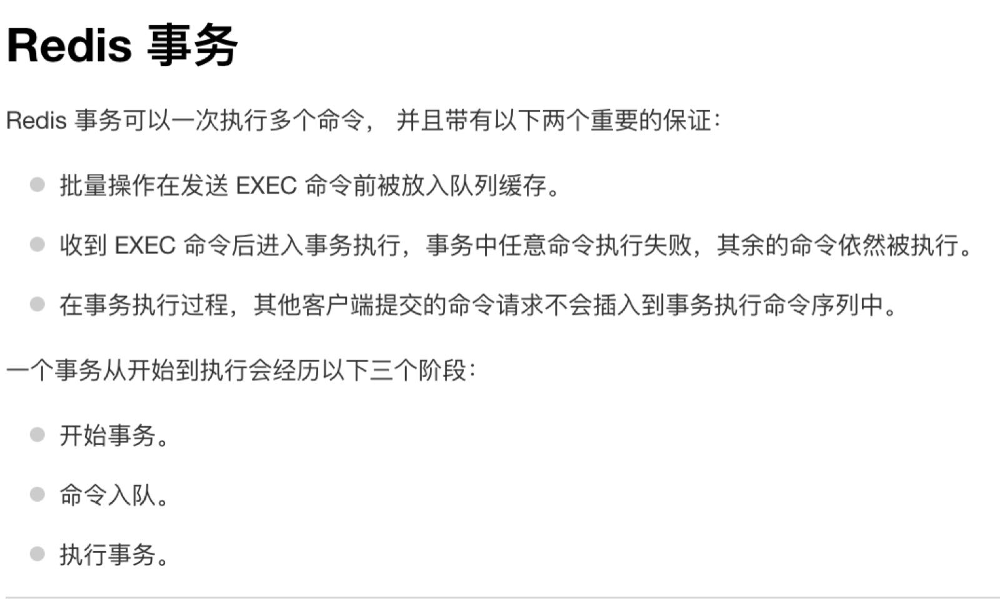</p><ul><li><ul><li><span>这个注解目的应该是让操作更方便</span></li></ul></li></ul><p>&nbsp;</p><hr /><h3><a name="**7.%E5%85%B3%E4%BA%8E%E5%AD%98%E5%82%A8%E7%B1%BB%E5%BA%94%E7%94%A8%E6%98%AF%E5%90%A6%E5%BA%94%E8%AF%A5%E9%83%A8%E7%BD%B2%E5%9C%A8%E5%AE%B9%E5%99%A8%E7%8E%AF%E5%A2%83%E7%9A%84%E8%AE%A8%E8%AE%BA**" class="md-header-anchor"></a><strong><span>7.关于存储类应用是否应该部署在容器环境的讨论</span></strong></h3><blockquote><p><strong><span>Docker</span></strong><span>    [2019-01-11]</span></p></blockquote><p>&nbsp;</p><p><span>[</span><strong><span>西安-java-健</span></strong><span>] 探讨个问题，我个人觉得 Mysql  Redis  Es hive 这些涉及数据存储的应用，不应该通过 docker + 挂载磁盘方式的启动。  应该就安装在宿主机上。  这种想法不知道是不是有失偏颇。</span></p><p><span>我认为安装在宿主机上的理由是：</span></p><ul><li><span>第一、挂载磁盘的方式可能出现未知BUG， 导致服务读取数据问题。 第二、例如mysql，redis，如果升级版本的话，也不应该直接通过新镜像关联旧的 bin.log 或者dump文件</span></li><li><span>再就是 使用docker是为了方便扩容和升级集群，mysql之类存储不会这样强行扩容。   如果给他们套层docker  感觉就是增加了复杂度和问题发生概率，带不来实际的好处</span></li></ul><p>&nbsp;</p><p><span>➤ 相关讨论</span></p><p>&nbsp;</p><ul><li><span>[</span><strong><span>北京-后端-可乐</span></strong><span>] 看业务场景了吧，如果没有数据迁移，又不经常扩容，可能就没必要使用docker或者用了也不用挂载盘。如果不挂载，docker会将日志都存在镜像里，你的镜像会越来越大。而且docker是aufs文件系统，容器太大大概率会出问题</span></li><li><span>[</span><strong><span>杭州-java-乐乐</span></strong><span>] 用了docker，就没必要用docker+挂载硬盘的方式了吧，可以用vol，数据库的数据都保存在vol中，备份没有问题，数据库升级也不需要关联binlog或dump，新的容器挂载数据vol就可以了吧</span></li></ul><hr /><h3><a name="**8.%E5%85%B3%E4%BA%8E%E9%A3%8E%E6%8E%A7%E7%B3%BB%E7%BB%9F%E7%9A%84%E8%AE%BE%E8%AE%A1**" class="md-header-anchor"></a><strong><span>8.关于风控系统的设计</span></strong></h3><blockquote><p><strong><span>设计</span></strong><span>    [2019-01-11]</span></p></blockquote><p>&nbsp;</p><p><span>[</span><strong><span>北京-后端-哈哈</span></strong><span>] 风控场景中，xx天限制xx条的限制规则如何设计，例如，一个月内一个支付账号支付超过3个用户，进行拦截？流水数据怎么处理，如何保证响应时间。(响应时间不能太慢，要不人家不愿接入)</span></p><p>&nbsp;</p><p><span>➤ 相关讨论</span></p><p>&nbsp;</p><ul><li><p><span>[</span><strong><span>上海-scala-面包</span></strong><span>] 就是个精简的订单表，然后SQL语句where里加上一个月，账号，支付账号，这三个去做count就好了哇。每天把一个月前的数据删掉或者放到历史表。</span></p></li><li><p><span>[</span><strong><span>杭州-后端-梁桂钊</span></strong><span>] </span></p></li><li><ul><li><span>这种风控场景，我们做过，某个时段最多多少笔。注意的是，这种，我们存数据库，但是你需要注意的是，并发场景是锁不住的，因为同时查的时候满足，但是并发场景可能同时触发风控。</span></li><li><span>风控，可以分为风控预警、风控熔断，准确性是首要的，其次才是性能，前期可以考虑做一次QPS的测试和性能评估</span></li><li><span>可以用数据库 count 冗余表</span></li></ul></li><li><p><span>[</span><strong><span>珠海-java-yellowb</span></strong><span>] 能不能用Flink来做？它支持在时间窗口上做聚合，问过一个在电商公司做过风控的同学，他们现在是基于redis zset来做的，之后打算切换到Flink </span></p><p>&nbsp;</p><p>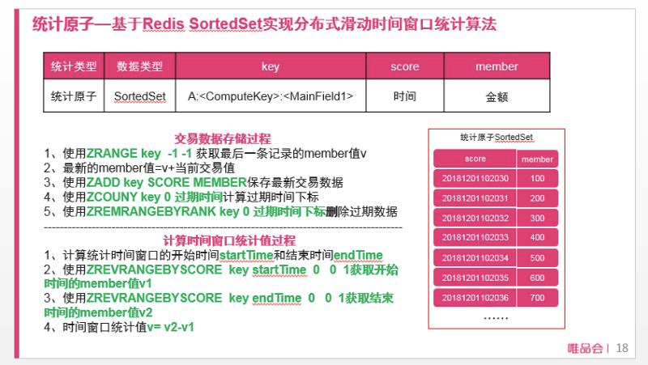</p><p>&nbsp;</p><p><span>「</span><a href='https://help.aliyun.com/document_detail/62511.html'><span>滚动窗口</span></a><span>」「</span><a href='https://www.zhihu.com/question/276693634?utm_source=wechat_session&utm_medium=social'><span>风控系统实时统计服务如何设计是最优的？</span></a><span>」</span></p></li><li><p><span>[</span><strong><span>研习小组讨论总结（总结人：上海-后端-spector）</span></strong><span>]</span></p></li></ul><p><span>风控预警：比如退款：触碰到熔断，导致资金出不了。</span></p><p><span>	</span></p><p><span>强业务的业务控制，最主要的是准确性，可扩展，可配置，灵活性和可扩展性，基于数据库，分库分表，数据量不是特别多，并且有索引，查询性能不会差很多。还需要考虑并发问题（并发量特别高，大促时，比如正常是3，并发极端情况下有可能是5，这个是无解的，需要提前跟PD说声）其次才是性能，性能要求特别高，建立count的冗余表，每次累加把这个表加1次，要求更高的话，使用redis二次缓存，把数据库的压力平摊到redis</span></p><p>&nbsp;</p><p><span>历史数据，比如按照季度，把历史数据分表，有声明周期的。</span></p><p><span>	</span></p><p><span>风控有前置和后置</span></p><p><span>前置：业务为了节约性能，像金额，在多少范围内，把这个流程熔断掉，不让流程继续执行。如果有的东西没有必要继续流程，就可以前置掉。</span></p><p><span>后置：业务有自己的风控，业务自己做一个兜底</span></p><p><span>	</span></p><p><span>业务风控，跟业务耦合特别紧，服务主业务链路的，可扩展、通用比较难，每个业务自己独特的。分库分表，使用shared jdbc，只要能路由到那个表，就不会存在什么问题。</span></p><p><span>	</span></p><p><span>业务划分，比如黑名单是业务本身和风控，都有的，有功能模块，该抽时就抽，该堆功能就堆功能。</span></p><p><span>	</span><span>耗时是索引建立不合理，或者线程池满了，导致查询慢，其他的时候一般不会慢。前期可以不用考虑性能，等到性能慢时，说明业务已经很成熟了，可以重构了。</span></p><p><span>	</span><span>前期可以考虑做一次QPS的测试和性能评估，做一次压测。（考虑半年内的数据大小）看一下QPS的测试报告，做一个评估。</span></p><p><span>	</span></p><p><span>查询两张表，比较慢</span></p><p>&nbsp;</p><p><span>	</span><span>1、做风控主体，月退款额，月放款的数据，一个月的数据，抽象为一个监控的主体。</span></p><p><span>	</span><span>2、主体有很多属性，有很多收发条件、范围，根据垂直条件，配置很多触发点。【规则点，条件，转账，同城达到多少分（做一个评分，量化），符合某一个大的模型，每一个大模型里又有很多小模型，当满多少分就认为触发风控，可能其他的大模型还无法触发的到就已经触发风控了】</span></p><p><span>	</span><span>3、根据这些触发点，数据不符合要求的，通过邮件、短信，触发业务性的操作，做一些具体的行为。</span></p><p><span>	</span><span>前期都是数据准备阶段。设计成一个通用的，设计一个要监控的主体。融了一笔钱（主体），金额，还款日期（模型属性），跟业务是一个强耦合的，风控数据采集。</span></p><p><span>	</span><span>风控模型的准确性、实时性很强，只能集成到业务里做一个强耦合，跟业务做成一起，同步的操作。根据不同的业务场景，做权衡。</span></p><p><span>	</span><span>业务、平台的规则和历史数据，做一个判断，风险的一个校验平台。比如一个账号最多转账给3个用户，超过那么就禁止转账。</span></p><hr /><h3><a name="**10.%E5%85%B3%E4%BA%8Eint-%E4%B8%8E-integer**" class="md-header-anchor"></a><strong><span>10.关于int 与 Integer</span></strong><span> </span></h3><blockquote><p><strong><span>Java</span></strong><span>    [2019-01-12]</span></p></blockquote><p>&nbsp;</p><p><span>[</span><strong><span>杭州-后端-梁桂钊</span></strong><span>] int 与 Integer 有什么区别？怎么理解包装类的装箱与拆箱？那么，这个拆箱过程中需要注意什么问题呢？</span></p><p>&nbsp;</p><p><span>➤ 相关讨论</span></p><p>&nbsp;</p><ul><li><span>[</span><strong><span>上海-后端-spector</span></strong><span>]  int是原生类型，而Integer是封装类型，对int做了一层包装，这个大家都知道。通过代码编译一下来比较看看</span></li></ul><p>&nbsp;</p><p><span> </span>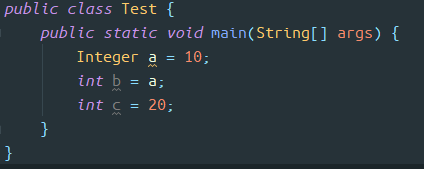</p><p>&nbsp;</p><p><span>通过javap -c Test反编译后：</span></p><p>&nbsp;</p><p></p><p>&nbsp;</p><p><span>所以包装类的装箱与拆箱操作，均在编译阶段已经完成了，装箱调用valueOf()方法，而拆箱，则调用intValue()方法。</span></p><p>&nbsp;</p><p><span>装箱源码解析</span></p><p>&nbsp;</p><p>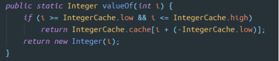</p><p>&nbsp;</p><p><span>valueOf调用了IntegerCache 内部类。当装箱的值</span><strong><span>大于cache.low值并且小于cache.high值</span></strong><span>时，直接从cache里获取已经初始化好的Integer对象，若是大于该范围，就直接实例化一个新对象出来。</span></p><p>&nbsp;</p><p><span>IntegerCache内部类中的实现：</span></p><p>&nbsp;</p><p>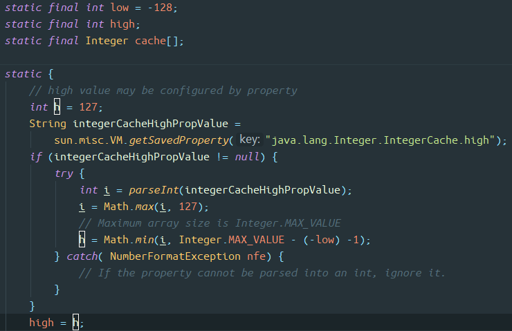</p><p>&nbsp;</p><p><span>可以看出，cache里的high值最小为127，而能提供的最大值为2^31-130，这里默认最大值是127，并且这个值可以通过环境变量来指定：</span></p><ol start='' ><li><span>一个就是上图中的变量来指定最大值：-Djava.lang.Integer.IntegerCache.high=</span><size></li><li><span>另外通过jvm参数来设定自动装箱最大值：-XX:AutoBoxCacheMax=</span><size></li></ol><p>&nbsp;</p><p><span>3)  当我们设定-Djava.lang.Integer.IntegerCache.high=128或者更大时</span></p><p>&nbsp;</p><ul><li><span>🔲</span>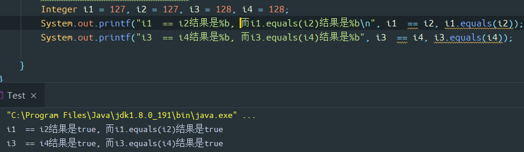</li></ul><p>&nbsp;</p><ul><li><span>🔲2)如果不设置或者设置为最小的127，情况如下：</span></li><li><span>🔲</span></li></ul><p>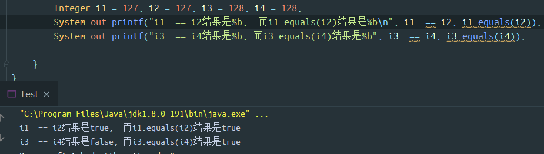</p><p>&nbsp;</p><p><span>比较可以看出，i1和i2是从缓存中获取的，而i3和i4是实例化出来的结果，对象的地址不一样导致结果不一样。</span></p><p>&nbsp;</p><p><span>而当进行equals比较时，是内部强制拆箱做的比较，不是对象与对象的比较</span></p><p>&nbsp;</p><p>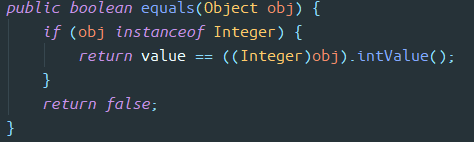</p><p>&nbsp;</p><p><span>所以，拆箱时，需要注意Integer内部缓存的范围，超过这个范围，对象就不再从缓存中获取了，而是直接实例化一个新的Integer对象出来。</span></p><ul><li><span>[</span><strong><span>研习小组讨论总结（总结人：上海-后端-spector）</span></strong><span>]</span></li></ul><p><span>为啥使用包装类，而不是使用基础数据类型。使用的时候，集合，map，如果是基础类型，就不支持，而必须是map。需要对象操作，包装类把对象给包装进来，比如序列化，基础数据类型是有默认值，而序列化需要null。</span></p><p>&nbsp;</p><pre spellcheck="false" class="md-fences md-end-block ty-contain-cm modeLoaded" lang=""><div class="CodeMirror cm-s-inner CodeMirror-wrap" lang=""><div style="overflow: hidden; position: relative; width: 3px; height: 0px; top: 0px; left: 11.6667px;"><textarea autocorrect="off" autocapitalize="off" spellcheck="false" tabindex="0" style="position: absolute; bottom: -1em; padding: 0px; width: 1000px; height: 1em; outline: none;"></textarea></div><div class="CodeMirror-scrollbar-filler" cm-not-content="true"></div><div class="CodeMirror-gutter-filler" cm-not-content="true"></div><div class="CodeMirror-scroll" tabindex="-1"><div class="CodeMirror-sizer" style="margin-left: 0px; margin-bottom: 0px; border-right-width: 0px; padding-right: 0px; padding-bottom: 0px;"><div style="position: relative; top: 0px;"><div class="CodeMirror-lines" role="presentation"><div role="presentation" style="position: relative; outline: none;"><div class="CodeMirror-measure"><span><span>​</span>x</span></div><div class="CodeMirror-measure"></div><div style="position: relative; z-index: 1;"></div><div class="CodeMirror-code" role="presentation" style=""><div class="CodeMirror-activeline" style="position: relative;"><div class="CodeMirror-activeline-background CodeMirror-linebackground"></div><div class="CodeMirror-gutter-background CodeMirror-activeline-gutter" style="left: 0px; width: 0px;"></div><pre class=" CodeMirror-line " role="presentation"><span role="presentation" style="padding-right: 0.1px;">public static Bollean isSuccess(Article article){</span></pre></div><pre class=" CodeMirror-line " role="presentation"><span role="presentation" style="padding-right: 0.1px;"> &nbsp;  return null;</span></pre><pre class=" CodeMirror-line " role="presentation"><span role="presentation" style="padding-right: 0.1px;">}</span></pre><pre class=" CodeMirror-line " role="presentation"><span role="presentation" style="padding-right: 0.1px;"><span cm-text="">​</span></span></pre><pre class=" CodeMirror-line " role="presentation"><span role="presentation" style="padding-right: 0.1px;">Integer[] arr = new Integer[]{1,2,3,4};</span></pre><pre class=" CodeMirror-line " role="presentation"><span role="presentation" style="padding-right: 0.1px;">int[] arr = new int[]{1,2,3,4};</span></pre><pre class=" CodeMirror-line " role="presentation"><span role="presentation" style="padding-right: 0.1px;">List&lt;Integer&gt; ints = Arrays.asList(arr);</span></pre><pre class=" CodeMirror-line " role="presentation"><span role="presentation" style="padding-right: 0.1px;"><span cm-text="">​</span></span></pre><pre class=" CodeMirror-line " role="presentation"><span role="presentation" style="padding-right: 0.1px;">//说明泛型不接受原生数据类型，对于封装类型，则可以转换，会认为Integer[]与Integer...是一样的，都是数组。</span></pre></div></div></div></div></div><div style="position: absolute; height: 0px; width: 1px; border-bottom: 0px solid transparent; top: 180px;"></div><div class="CodeMirror-gutters" style="display: none; height: 180px;"></div></div></div></pre><hr /><h3><a name="**11.%E6%80%8E%E4%B9%88%E5%A4%84%E7%90%86%E7%BA%BF%E4%B8%8A%E5%87%BA%E7%8E%B0%E4%BA%86%E6%B6%88%E6%81%AF%E5%A0%86%E7%A7%AF%E7%9A%84%E9%97%AE%E9%A2%98**" class="md-header-anchor"></a><strong><span>11.怎么处理线上出现了消息堆积的问题</span></strong></h3><blockquote><p><strong><span>实战</span></strong><span>    [2019-01-12]</span></p></blockquote><p>&nbsp;</p><p><span>[</span><strong><span>杭州-Java-阿涛啊</span></strong><span>] 怎么处理线上出现了消息堆积的问题？</span></p><p>&nbsp;</p><p><span>➤ 相关讨论</span></p><p>&nbsp;</p><ul><li><span>[</span><strong><span>研习小组讨论总结（总结人：上海-后端-spector）</span></strong><span>]</span></li></ul><p><span>思考过程：很多种场景。像大促，消息堆积是正常合理的，一段时间内是可以追平，熔断住了，然后提高消费能力。</span></p><p><span>消费能力太低，是不是网络抖动，消费者在部署，不能使用</span></p><p><span>消费能力太差了，代码有问题，那么处理代码问题</span></p><p><span>比如加机器，慢sql。</span></p><p><span>	</span><span>不是技术问题，而是业务问题，具体场景具体分析。</span></p><hr /><h3><a name="**12.dto-bo-vo%E8%BD%AC%E5%8C%96%E6%9C%89%E6%B2%A1%E6%9C%89%E4%BB%80%E4%B9%88%E5%A5%BD%E7%9A%84%E8%A7%A3%E5%86%B3%E5%8A%9E%E6%B3%95**" class="md-header-anchor"></a><strong><span>12.dto bo vo转化有没有什么好的解决办法</span></strong></h3><blockquote><p><strong><span>实战</span></strong><span>    [2019-01-12]</span></p></blockquote><p>&nbsp;</p><p><span>[</span><strong><span>北京-Java-犀利豆</span></strong><span>]  web service dao 里面 dto bo vo转化。很麻烦。有没有什么好的解决办法？</span></p><p>&nbsp;</p><p><span>➤ 相关讨论</span></p><p>&nbsp;</p><ul><li><span>[</span><strong><span>研习小组讨论总结（总结人：上海-后端-spector）</span></strong><span>]</span></li></ul><p><span>使用第三方库，声明式就可以解决mapstruct。</span></p><p><span>	</span><span>bo-&gt;vo 工厂方法，把具体的字段收敛到具体的方法里去，不要散落到各处。bean拷贝的性能开销特别小，可以忽略不计。</span></p><ul><li><p><span>[</span><strong><span>研习小组讨论总结（总结人：上海-后端-strongant）</span></strong><span>] </span></p></li><li><ul><li><span>瓶颈在消费吞吐量的时候，增加消费的批次和频率可以改善性能；</span></li><li><span>建议增加消费者线程。尽量 1 个消费者线程对应 1 个分区，从而发挥现有分区数下的最大并行度。</span></li></ul></li></ul><hr /><h3><a name="**13.%E5%85%B3%E4%BA%8E%E5%90%8C%E6%AD%A5**" class="md-header-anchor"></a><strong><span>13.关于同步</span></strong></h3><blockquote><p><strong><span>Java</span></strong><span>    [2019-01-12]</span></p></blockquote><p>&nbsp;</p><p><span>[</span><strong><span>上海-Java-strongant</span></strong><span>]  如果synchronized方法调用另一个非同步方法，那么非同步方法是否存在锁定？</span></p><p>&nbsp;</p><p><span>➤ 相关讨论</span></p><p>&nbsp;</p><ul><li><span>[</span><strong><span>研习小组讨论总结（总结人：上海-后端-strongant）</span></strong><span>]</span></li></ul><blockquote><p><span>如果线程 A 调用同步方法 M1 ，然后又调用非同步方法 M2，那么线程 B 仍然可以在不阻塞的情况下调用 M2 方法。</span></p><p><span>同步方法获取并释放调用它的对象的内部锁。 非同步方法不会尝试获取任何锁（除非在代码中明确完成）。</span></p><p><span>因此，如果需要确保 M1 方法与 M2 方法的互斥，不管 M1 是否同步，都应使 M2 方法保持同步。</span></p><p>&nbsp;</p><p><span>锁属于线程 ，而不属于方法（或更确切地说，属于其堆栈帧）。 如果 一个方法被 synchronized 修饰，则可以保证该线程在方法体开始之前拥有锁，在方法执行结束后释放锁。</span></p><p><span>另一个线程仍然可以调用第二个非同步方法。 任何线程都可以随时调用非同步方法。</span></p></blockquote><hr /><p><span>非常感谢「后端圈」小伙伴们的高质量技术交流。 这里，我使用「知识星球」沉淀高质量的答疑内容。如果对您有帮助的话，可以帮忙转发与分享。同时，欢迎加入「后端群」与「知识星球」共同探讨，一起交流、探讨，打破认知的局限。</span></p><p>&nbsp;</p><ul><li><span>✅</span><strong><span>北京-打杂-火柴</span></strong></li><li><span>✅</span><strong><span>南京-java-无瑕</span></strong></li><li><span>✅</span><strong><span>珠海-java-yellowb</span></strong></li><li><span>✅</span><strong><span>兰小伟-《TypeScript实战》（书籍：《TypeScript实战》）</span></strong></li><li><span>✅</span><strong><span>杭州-蛋炒饭-java</span></strong></li><li><span>✅</span><strong><span>北京-java-犀利豆（公众号 ：犀利豆的技术空间）</span></strong></li><li><span>✅</span><strong><span>西安-java-健</span></strong></li><li><span>✅</span><strong><span>杭州-java-乐乐</span></strong></li><li><span>✅</span><strong><span>北京-后端-可乐</span></strong></li><li><span>✅</span><strong><span>北京-后端-哈哈</span></strong></li><li><span>✅</span><strong><span>上海-scala-面包</span></strong></li><li><span>✅</span><strong><span>杭州-后端-梁桂钊（公众号 ：服务端思维）</span></strong></li><li><span>✅</span><strong><span>上海-后端-spector</span></strong></li><li><span>✅</span><strong><span>深圳-Java-阿飞（公众号 ：阿飞的博客）</span></strong></li><li><span>✅</span><strong><span>杭州-Java-阿涛啊</span></strong></li><li><span>✅</span><strong><span>上海-Java-strongant</span></strong></li></ul><h2><a name="**%E5%91%A8%E6%8A%A5-no.55%EF%BC%882019%E5%B9%B4%EF%BC%89**" class="md-header-anchor"></a><strong><span>周报 No.55（2019年）</span></strong></h2><h3><a name="**1.too-many-open-files-%E9%97%AE%E9%A2%98**" class="md-header-anchor"></a><strong><span>1.Too many open files 问题</span></strong></h3><blockquote><p><strong><span>Linux</span></strong><span>    [2019-01-14]  </span></p></blockquote><p>&nbsp;</p><p><span>[</span><strong><span>北京-Go-小于</span></strong><span>] Too many open files 问题常见原因和解决方案有哪些呢？</span></p><p>&nbsp;</p><p><span>➤ 问题解答</span></p><p>&nbsp;</p><ul><li><span>[</span><strong><span>杭州-后端-梁桂钊</span></strong><span>] linux配置下句柄。</span></li><li><span>[</span><strong><span>青南</span></strong><span>]  Kafka遇到过，给服务器开了40多万个句柄。</span></li><li><span>[</span><strong><span>北京-java-犀利豆</span></strong><span>]  一般是代码有Bug导致链接泄露，比如：流用完没有释放。如果不够用可以改系统配置。</span></li><li><span>[</span><strong><span>研习小组讨论总结（总结人：北京-后端-张帆</span></strong><span>）]</span></li></ul><blockquote><p><strong><span>1) What is ulimit in Linux?</span></strong>
<span>The ulimit command allows you to control the user resource limits in the system such as process data size, process virtual memory, and process file size, number of process etc.</span></p><p><strong><span>2) What happens when the settings in this command are not set up properly?</span></strong>
<span>Various issues happen like native OutOfMemory, Too Many Open files error, dump files are not being generated completely etc.</span></p><p><strong><span>3) How can you check current ulimit settings?</span></strong>
<span>There are various ways to check the current settings:</span></p><p><span>a) From the command prompt, issue</span>
<span>$ ulimit -a</span></p></blockquote><p><span>「</span><a href='https://www.ibm.com/developerworks/community/blogs/aimsupport/entry/resolve_too_many_open_files_error_and_native_outofmemory_due_to_failed_to_create_thread_issues_in_websphere_application_server_running_on_linux?lang=en'><span>Resolve &quot;Too Many Open files error&quot; and &quot;native OutOfMemory due to failed to create thread&quot; issues in WebSphere Application Server running on Linux</span></a><span>」</span></p><p><span>  </span></p><blockquote><p><span>子进程允许打开的最大文件数不能超过父进程的阈值限制</span></p></blockquote><p><span>「</span><a href='https://huoding.com/2015/08/02/460'><span>一次「Too many open files」故障</span></a><span>」</span></p><p>&nbsp;</p><h3><a name="**2.cap%E7%90%86%E8%AE%BA**" class="md-header-anchor"></a><strong><span>2.CAP理论</span></strong></h3><blockquote><p><strong><span>CAP</span></strong><span>    [2019-01-14]  </span></p></blockquote><p>&nbsp;</p><p><span>[</span><strong><span>广州-java-win7@loops</span></strong><span>] CAP中的P，分区容错怎么理解？</span></p><blockquote><p><span>编者注：Consistency（一致性）、 Availability（可用性）、Partition tolerance（分区容错性）</span></p></blockquote><p>&nbsp;</p><p><span>➤ 问题解答</span></p><p>&nbsp;</p><ul><li><span>[</span><strong><span>兰小伟-《TypeScript实战》</span></strong><span>] </span></li></ul><p><span>C强调数据的正确性一致性，即我要么返回失败给你，要么我返回最新数据给你</span></p><p><span>A强调我绝对不会返回失败给你，我一定会返回数据给你，但是我不保证数据一定是最新的。</span></p><p><span>P强调我会一直为你服务，绝对不会挂掉。(就是我集群挂了2台，依然不影响我为你正常服务)。强调自己是打不死的小强，即程序的健壮性。</span></p><p>&nbsp;</p><ul><li><span>[</span><strong><span>研习小组讨论总结（总结人：strongant</span></strong><span>）]</span></li></ul><p><span>分区容错性指“the system continues to operate despite arbitrary message loss or failure of part of the system”，即分布式系统在遇到某节点或网络分区故障的时候，仍然能够对外提供满足一致性和可用性的服务。</span></p><p><span>比如现在的分布式系统中有某一个或者几个机器宕掉了，其他剩下的机器还能够正常运转满足系统需求，或者是机器之间有网络异常，将分布式系统分隔未独立的几个部分，各个部分还能维持分布式系统的运作，这样就具有好的分区容错性。</span></p><p>&nbsp;</p><h3><a name="**3.jvm-%E7%B1%BB%E7%9A%84%E8%99%9A%E6%96%B9%E6%B3%95%E8%A1%A8**" class="md-header-anchor"></a><strong><span>3.JVM 类的虚方法表</span></strong></h3><blockquote><p><strong><span>JVM</span></strong><span>    [2019-01-18]  </span></p></blockquote><p>&nbsp;</p><p><span>[</span><strong><span>上海-java-小星</span></strong><span>] 类的虚方法表里放的是方法的直接地址，那对于那些父类的方法子类也没重写的方法，在子类的方法表里是怎么存的？是将父类那个方法的地址复制一份到子类方法表里？还是子类指向了父类的方法表？</span></p><p><span>截图来自《深入理解jvm》</span></p><p>&nbsp;</p><p>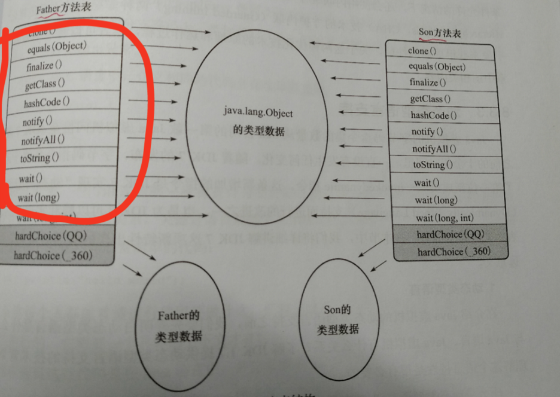</p><p>&nbsp;</p><p><span>➤ 问题解答</span></p><p>&nbsp;</p><ul><li><span>[</span><strong><span>杭州java正荣</span></strong><span>] 我认为是子类复制了一份父类方法表，同时两个类的数组中相同方法的索引也是一样的. 其实我觉得，只要知道子类与父类的相同方法在方法表中的索引值是一样就够了。</span></li><li><span>[</span><strong><span>兰小伟-《TypeScript实战》</span></strong><span>] </span></li></ul><p>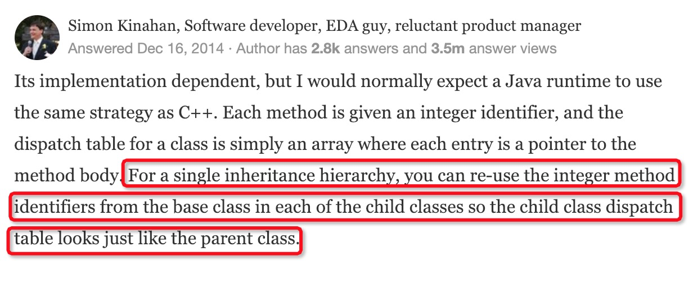</p><p><span> </span><strong><span>For a single inheritance hierarchy, you can re-use the integer method identifiers from the base class in each of the child classes so the child class dispatch table looks just like the parent class.</span></strong></p><p>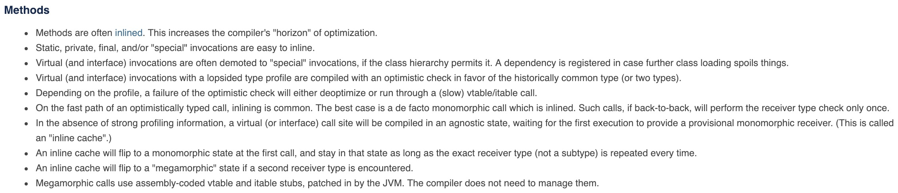</p><p>&nbsp;</p><p><span>并不是每次都会去查表，你可以去了解一下 inline cache of method。</span></p><ul><li><span>[</span><strong><span>上海-后端-知秋</span></strong><span>] 回复@上海-java-小星 的问题：如果子类复制父类方法表，同一个方法地址就可能会拷贝多份，岂不是浪费空间？</span></li></ul><p><span>回复：这个又占用不了多少空间，空间换时间就是，又不是对象，何必搞那么麻烦，消耗CPU资源按图索骥，直接把资源放锅里不是更好。兰大不是说了么，reuse，每个方法都是一个独立的管理，就是为方便继承管理。</span></p><hr /><p><span>非常感谢「后端圈」小伙伴们的高质量技术交流。 这里，我使用「知识星球」沉淀高质量的答疑内容。如果对您有帮助的话，可以帮忙转发与分享。同时，欢迎加入「后端群」与「知识星球」共同探讨，一起交流、探讨，打破认知的局限。（PS ：如果参与分享的小伙伴，有相关博客、公众号、书籍，欢迎私信我添加和补充~）</span></p><p>&nbsp;</p><ul><li><span>✅</span><strong><span>上海-Java-知秋（博客 ：</span></strong><a href='https://muyinchen.github.io/'><span>一叶知秋、</span></a><span> 视频：Java编程方法论-响应式编-RxJava </span><a href='https://www.bilibili.com/video/av34537840'><span>bilibili</span></a><span> 、</span><a href='https://www.youtube.com/playlist?list=PL95Ey4rht798MMCusPzIW7VYD1xaKJVjc'><span>油管</span></a><strong><span>）</span></strong></li><li><span>✅</span><strong><span>兰小伟 (书籍：《TypeScript实战》)</span></strong></li><li><span>✅</span><strong><span>strongant</span></strong></li><li><span>✅</span><strong><span>北京-java-犀利豆（公众号 ：犀利豆的技术空间）</span></strong></li><li><span>✅</span><strong><span>北京-后端-张帆（博客</span></strong><span> </span><strong><span>：Since1986</span></strong><span> </span><a href='https://since1986.github.io/'><span>https://since1986.github.io</span></a><strong><span>）</span></strong></li><li><span>✅</span><strong><span>青南（书籍：《Python爬虫开发 从入门到实战》）</span></strong></li><li><span>✅</span><strong><span>杭州-后端-梁桂钊（公众号 ：服务端思维）</span></strong></li></ul><h2><a name="**%E5%91%A8%E6%8A%A5-no.56%EF%BC%882019%E5%B9%B4%EF%BC%89**" class="md-header-anchor"></a><strong><span>周报 No.56（2019年）</span></strong></h2><h3><a name="**1.examplematcher.matching().withignorepaths-%E9%97%AE%E9%A2%98**" class="md-header-anchor"></a><strong><span>1.ExampleMatcher.matching().withIgnorePaths 问题</span></strong></h3><blockquote><p><strong><span>JPA</span></strong><span>  [2019-01-21]  </span></p></blockquote><p>&nbsp;</p><p><span>[</span><strong><span>武汉-Java-Mason</span></strong><span>] ExampleMatcher.matching().withIgnorePaths(“lastname”) 忽略lastname属性路径是啥意思？</span></p><p>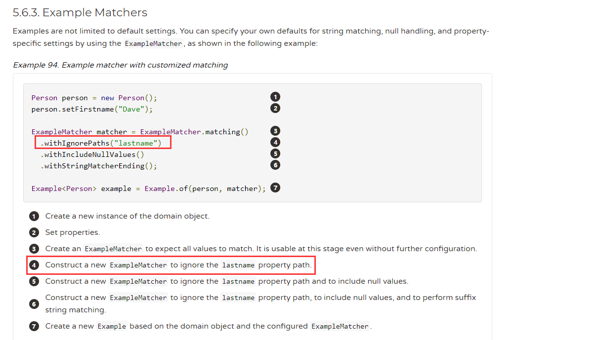</p><p>&nbsp;</p><p><span>➤ 问题解答</span></p><p>&nbsp;</p><ul><li><span>[</span><strong><span>北京-后端-张帆</span></strong><span>] findByExample 时，lastname属性不计入检索条件 比如你有一个 User 里面有 id firstname lastname 然后你构建了一个 Example 乎略掉了 lastname 这个属性，那么生成的语句里就不会带有 lastname。withIgnorePaths 会返回一个新的 ExampleMatcher 实例的，你下边 Example.of() 应该传这个新的实例。</span></li></ul><p>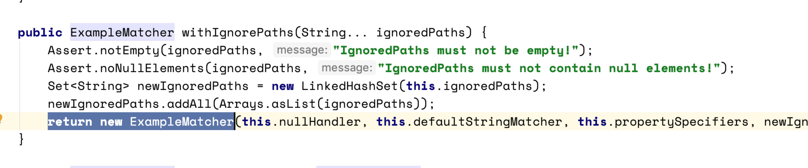</p><p>&nbsp;</p><p>&nbsp;</p><h3><a name="**2.%E5%8F%8D%E7%BC%96%E8%AF%91%E7%9A%84%E8%BD%AF%E4%BB%B6%E6%8E%A8%E8%8D%90**" class="md-header-anchor"></a><strong><span>2.反编译的软件推荐</span></strong></h3><blockquote><p><strong><span>编译</span></strong><span>  [2019-01-21]  </span></p></blockquote><p>&nbsp;</p><p><span>[</span><strong><span>福州-后端-BIN</span></strong><span>] 哪个反编译的软件好用？</span></p><p>&nbsp;</p><p><span>➤ 问题解答</span></p><p>&nbsp;</p><ul><li><span>[</span><strong><span>北京-后端-winner_0715</span></strong><span>] jd,只用过这个</span></li><li><span>[</span><strong><span>北京-后端-ren</span></strong><span>] </span><a href='https://www.cnblogs.com/renyuanwei/p/9849889.html'><span>Luyten，Jadx</span></a><span>，这两个比较好用</span></li><li><span>[</span><strong><span>杭州-java-蒋鑫燚</span></strong><span>] luyten支持jdk9以上的</span></li></ul><p>&nbsp;</p><h3><a name="**3.between-%E4%B8%8E-in-%E7%9A%84%E5%88%86%E6%9E%90**" class="md-header-anchor"></a><strong><span>3.between 与 in 的分析</span></strong></h3><blockquote><p><strong><span>Mysql</span></strong><span>  [2019-01-21]  </span></p></blockquote><p>&nbsp;</p><p><span>[</span><strong><span>长沙 java seven</span></strong><span>] 发现好多博客里有这样一篇谣言</span></p><p>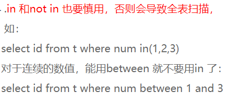</p><p>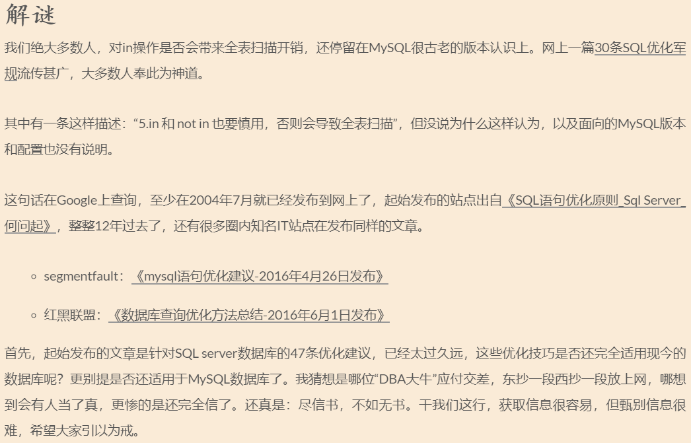</p><p>&nbsp;</p><p><span>➤ 问题解答</span></p><p>&nbsp;</p><ul><li><span>[西安-无业游民-小孩子] 其实理论上between的确比in好，between是一个区间，in是多个区间，in成本分析：</span></li></ul><p>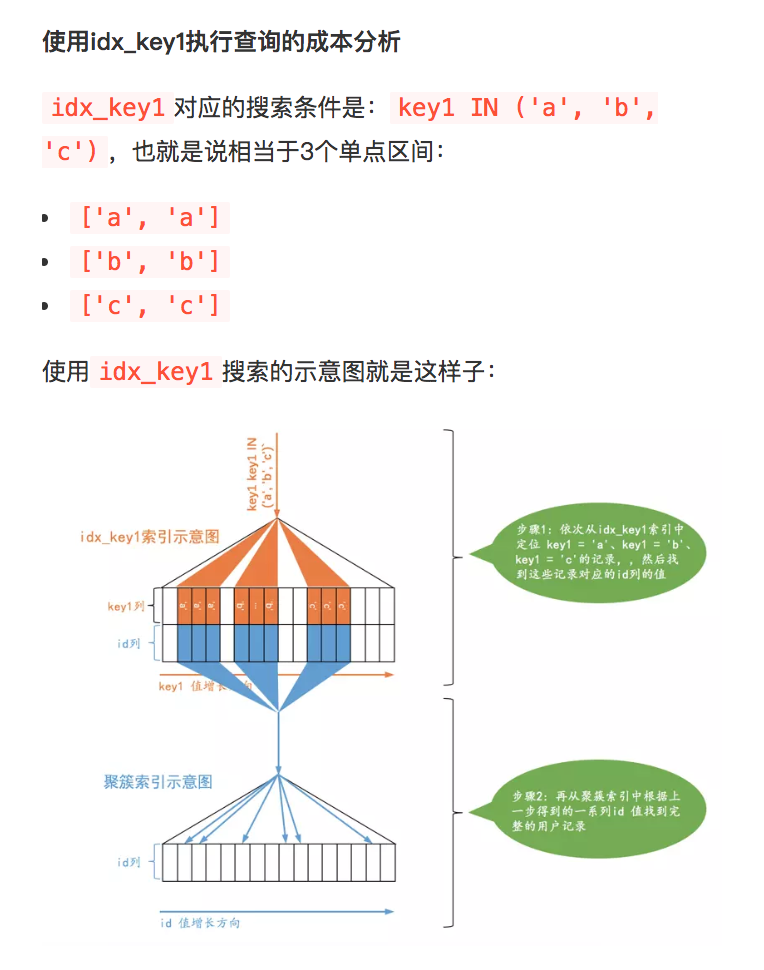</p><p>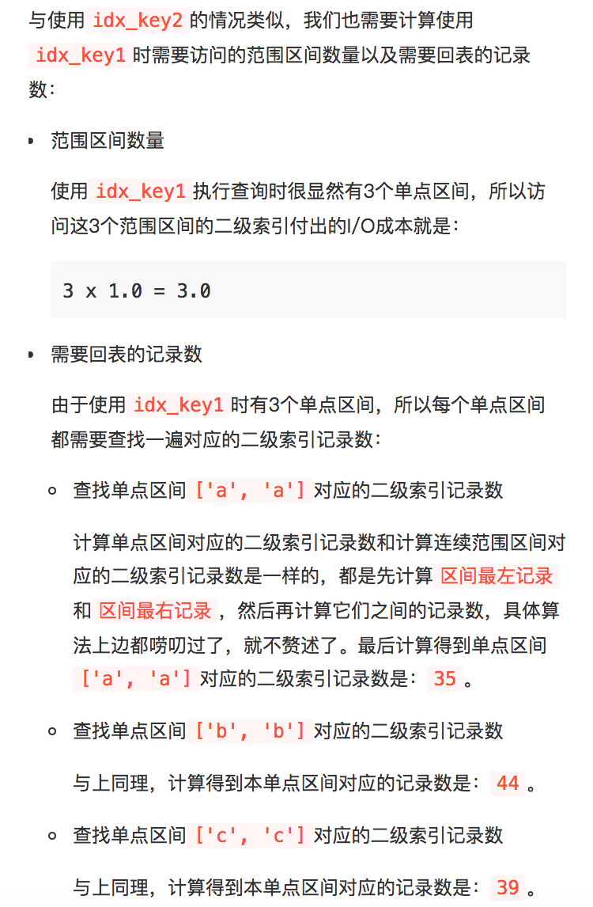</p><p><span>        </span>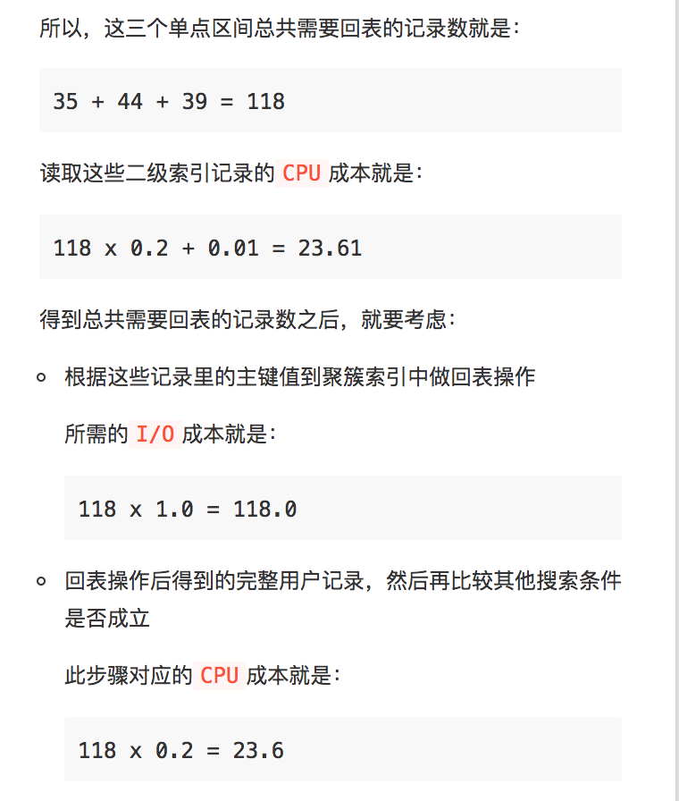</p><p><span>            </span>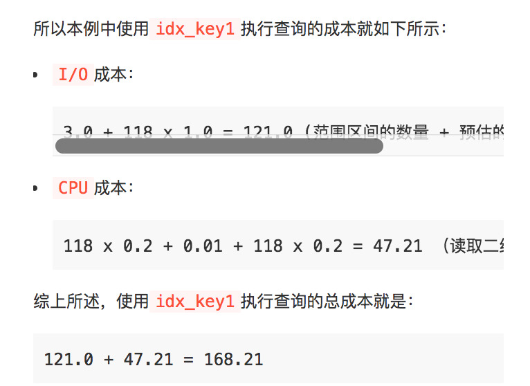</p><p>&nbsp;</p><p>&nbsp;</p><h3><a name="**4.%E7%B1%BB%E7%9A%84%E8%99%9A%E6%8B%9F%E6%96%B9%E6%B3%95%E8%A1%A8%E7%88%B6%E5%AD%90%E7%B1%BB%E5%BC%95%E7%94%A8%E5%85%B3%E7%B3%BB%E6%8E%A2%E8%AE%A8**" class="md-header-anchor"></a><strong><span>4.类的虚拟方法表父子类引用关系探讨</span></strong></h3><blockquote><p><strong><span>JVM</span></strong><span>  [2019-01-21]  </span></p></blockquote><p>&nbsp;</p><p><span>[</span><strong><span>上海</span><em><span>java</span></em><span>小星</span></strong><span>] 类的虚方法表里放的是方法的直接地址，那对于那些父类的方法子类也没重写的方法，在子类的方法表里是怎么存的？是将父类那个方法的地址复制一份到子类方法表里？还是子类指向了父类的方法表？我看视频说是后者，但我看《深入理解jvm》图是这样画的</span></p><p>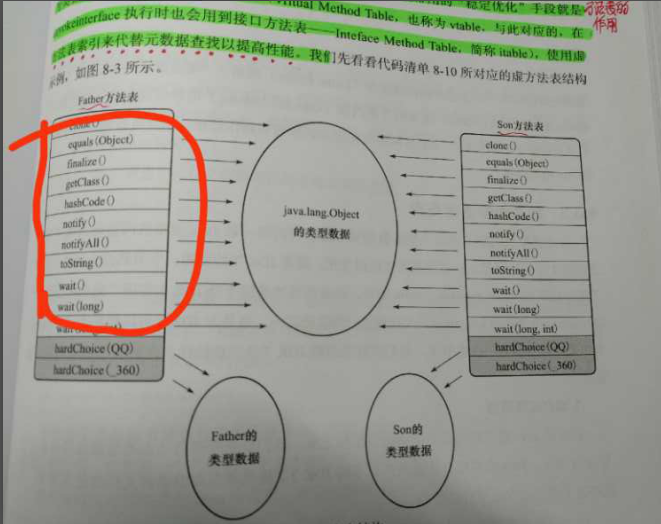</p><p>&nbsp;</p><p><span>➤ 问题解答</span></p><p>&nbsp;</p><ul><li><span>[</span><strong><span>杭州Java正荣</span></strong><span>] 我认为是子类复制了一份父类方法表，同时两个类的数组中相同方法的索引也是一样的，其实我觉得，只要知道子类与父类在相同方法在方法表中的索引值是一样就够了</span></li><li><span>[</span><strong><span>兰小伟-《TypeScript实战》]</span></strong><span> uncorrectly. 并不是每次都会去查表，你可以去了解一下 </span><strong><span>inline cache of method</span></strong></li></ul><p>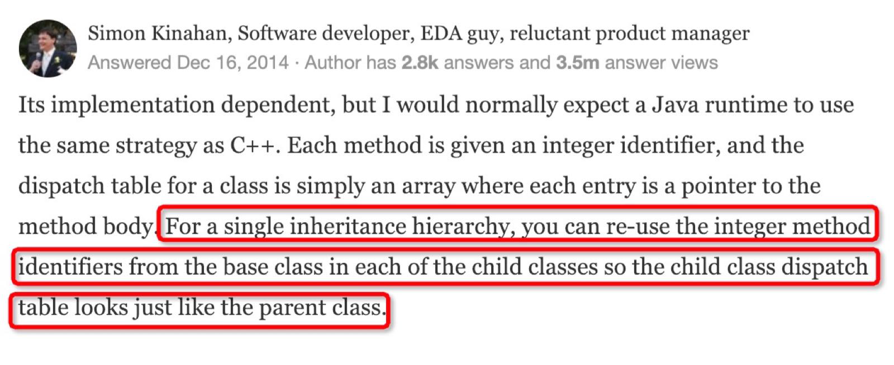</p><p></p><ul><li><span>[</span><strong><span>上海-后端-知秋]</span></strong><span> 这个又占用不了多少空间，空间换时间就是，何必搞那么麻烦，消耗CPU资源按图索骥，直接把资源放锅里不是更好。每个方法都是一个独立的管理，就是为方便继承管理。</span></li></ul><p>&nbsp;</p><h3><a name="**5.mysql%EF%BC%9Aon-update-current-timestamp%E6%97%B6%E9%97%B4%E7%82%B9%E9%97%AE%E9%A2%98**" class="md-header-anchor"></a><strong><span>5.mysql：on update current timestamp时间点问题</span></strong></h3><blockquote><p><strong><span>Mysql</span></strong><span>  [2019-01-22]  </span></p></blockquote><p>&nbsp;</p><p><span>[</span><strong><span>北京-java-犀利豆</span></strong><span>] mysql 时间设置的是 on update current timestamp, 那这个时间 是事务开始时间，还是语句执行时间，还是事务提交时间？</span></p><p>&nbsp;</p><p><span>➤ 问题解答</span></p><p>&nbsp;</p><ul><li><span>[</span><strong><span>后端-武汉-星星</span></strong><span>] 执行时间，应该是速度很快，基本同毫秒</span></li><li><span>[</span><strong><span>上海-后端-spector</span></strong><span>] 刚刚开启一个事物测过了，不管什么时候提交，还是记录当时的执行时间</span></li><li><span>[</span><strong><span>北京-java-犀利豆</span></strong><span>] 我写了一个demo ，update time 是sql 执行的时间</span></li></ul><p>&nbsp;</p><h3><a name="**6.netty-%E5%A0%86%E5%A4%96%E5%86%85%E5%AD%98%E5%A6%82%E4%BD%95%E5%A4%84%E7%90%86%EF%BC%9F**" class="md-header-anchor"></a><strong><span>6.netty 堆外内存如何处理？</span></strong></h3><blockquote><p><strong><span>Netty</span></strong><span>  [2019-01-22]  </span></p></blockquote><p>&nbsp;</p><p><span>[</span><strong><span>北京-打杂-火柴</span></strong><span>]  包括之前看到的netty涉及到一些对ByteBuff的内容涉及到堆外内存，是否可以理解为：netty 很多的内存管理不是通过JVM gc堆处理的，而更多是像是JNI这种，直接交给操作系统，放在堆外处理？</span></p><p>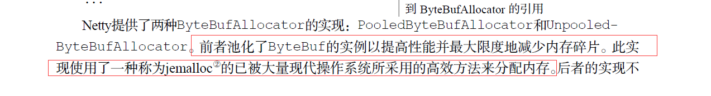</p><p>&nbsp;</p><p><span>➤ 问题解答</span></p><p>&nbsp;</p><ul><li><span>[</span><strong><span>珠海-java-yellowb</span></strong><span>] 对，它自己在堆外申请一大块内存，自己做分配和释放，基于引用计数，需要程序员用显式调用API来加一或减一，netty并不自动做计数，它只是在减到为0时把内存块归还到pool里去</span></li><li><span>[</span><strong><span>兰小伟-《TypeScript实战》</span></strong><span>] 可以这么理解，相当于再退化到C了</span></li></ul><p>&nbsp;</p><h3><a name="**7.netty-eventloopgroup-%E9%97%AE%E9%A2%98**" class="md-header-anchor"></a><strong><span>7.netty EventLoopGroup 问题</span></strong></h3><blockquote><p><strong><span>Netty</span></strong><span>  [2019-01-22]  </span></p></blockquote><p>&nbsp;</p><p><span>[</span><strong><span>北京-打杂-火柴</span></strong><span>]  netty 为何server端需要使用两个EventLoopGroup，而client 的只需要一个？还有为何要默认设置为 CPU双倍的线程，是因为默认为IO密集型 所以这么配置吗？</span></p><p>&nbsp;</p><p><span>➤ 问题解答</span></p><p>&nbsp;</p><ul><li><span>[</span><strong><span>成都-后端Java-陈十一</span></strong><span>] 这里定义了2个NioEventLoopGroup，实际上就是2个线程池，一个是用于监听客户端的连接，一个用户处理网络io，或者执行系统task等，</span><a href='https://blog.csdn.net/zxh87/article/details/73467873'><span>参考链接</span></a><span>。</span></li></ul><p><span>用于接收客户端请求的线程池职责如下：</span></p><p><span>1）接收客户端tcp请求，初始化Channel参数。</span></p><p><span>2）将链路状态变更事件通知给ChannelPipeline。</span></p><p><span>用于处理io操作的Reactor线程池职责如下：</span></p><p><span>1）异步读取通信端的数据，发送读事件到ChannelPipeline;</span></p><p><span>2）异步发送消息到通信对端，调用ChannelPipeline的消息发送接口；</span></p><p><span>3）执行系统调用Task；</span></p><p><span>4）执行定时任务Task，例如链路空闲状态监测定时任务；</span></p><ul><li><span>[</span><strong><span>珠海-java-yellowb</span></strong><span>] 大概是因为一个boss eventloop用来accept socket, 连上后丢给某个worker 去监听可读可写事件吧</span></li></ul><p>&nbsp;</p><h3><a name="**8.%E5%A4%9A%E7%BA%BF%E7%A8%8B%E5%B1%80%E9%83%A8%E5%8F%98%E9%87%8F%E5%AE%89%E5%85%A8%E6%80%A7%E9%97%AE%E9%A2%98%E6%8E%A2%E8%AE%A8**" class="md-header-anchor"></a><strong><span>8.多线程局部变量安全性问题探讨</span></strong></h3><blockquote><p><strong><span>多线程</span></strong><span>  [2019-01-24]  </span></p></blockquote><p>&nbsp;</p><p><span>[</span><strong><span>广州-java-win7@loops</span></strong><span>]  单例模式，多线程的环境下，局部变量应该也是线程安全的吧？</span></p><p>&nbsp;</p><p><span>➤ 问题解答</span></p><p>&nbsp;</p><ul><li><span>[</span><strong><span>北京-java后端-jijs2018</span></strong><span>] 局部变量，不逃逸出去，永远是安全的</span></li><li><span>[</span><strong><span>harry</span></strong><span>] 局部变量引用在栈里，是安全的，成员变量不安全。</span></li></ul><p>&nbsp;</p><hr /><p><span>非常感谢「后端圈」小伙伴们的高质量技术交流。 这里，我使用「知识星球」沉淀高质量的答疑内容。如果对您有帮助的话，可以帮忙转发与分享。同时，欢迎加入「后端群」与「知识星球」共同探讨，一起交流、探讨，打破认知的局限。（PS ：如果参与分享的小伙伴，有相关博客、公众号、书籍，欢迎私信我添加和补充~</span></p><p>&nbsp;</p><ul><li><span>✅上海-后端-spector</span></li><li><span>✅</span><strong><span>北京-后端-张帆（博客</span></strong><span> </span><strong><span>：Since1986</span></strong><span> </span><a href='https://since1986.github.io/'><span>https://since1986.github.io</span></a><strong><span>）</span></strong></li><li><span>✅</span><strong><span>西安-无业游民-小孩子（公众号 ：我们都是小青蛙）</span></strong></li><li><span>✅</span><strong><span>北京-java-犀利豆（公众号 ：犀利豆的技术空间）</span></strong></li><li><span>✅兰小伟 (书籍：《TypeScript实战》)</span></li><li><span>✅成都-后端Java-陈十一</span></li><li><span>✅北京-后端-winner_0715</span></li><li><span>✅北京-后端-ren</span></li><li><span>✅杭州-java-蒋鑫燚</span></li><li><span>✅杭州-Java-正荣</span></li><li><span>✅后端-武汉-星星</span></li><li><span>✅珠海-java-yellowb</span></li><li><span>✅北京-java后端-jijs2018</span></li><li><span>✅武汉-Java-Mason</span></li><li><span>✅福州-后端-BIN</span></li><li><span>✅长沙-java-seven</span></li><li><span>✅上海</span><em><span>java</span></em><span>小星</span></li><li><span>✅北京-打杂-火柴</span></li><li><span>✅广州-java-win7</span></li></ul><h2><a name="**%E5%91%A8%E6%8A%A5-no.57%EF%BC%882019%E5%B9%B4%EF%BC%89**" class="md-header-anchor"></a><strong><span>周报 No.57（2019年）</span></strong></h2><h3><a name="**1.%E7%B3%BB%E7%BB%9F%E7%9A%84%E6%8E%A7%E9%A2%91%E9%99%90%E6%B5%81%E7%9B%91%E6%8E%A7%E9%97%AE%E9%A2%98**" class="md-header-anchor"></a><strong><span>1.系统的控频限流监控问题</span></strong></h3><blockquote><p><strong><span>限流</span></strong><span>  [2019-02-01]  </span></p></blockquote><p><span>[</span><strong><span>南京-Java-林</span></strong><span>] 针对有恶意请求刷数据的行为，怎么能做好系统的控频限流监控？</span></p><p>&nbsp;</p><p><span>➤ 问题解答</span></p><p>&nbsp;</p><ul><li><p><span>[</span><strong><span>北京-java开发-黄大胖子</span></strong><span>] 用账号ip请求频率限制</span></p></li><li><p><span>[</span><strong><span>宁波-java-金鑫</span></strong><span>] 限制ip请求 </span></p></li><li><p><span>[</span><strong><span>上海-java-呆</span></strong><span>]  这是我在极客上看到的，鉴权和限流的开源项目，你可以研究一下代码思路</span></p></li><li><ul><li><a href='https://github.com/wangzheng0822/ratelimiter4j' target='_blank' class='url'>https://github.com/wangzheng0822/ratelimiter4j</a></li><li><a href='https://mp.weixin.qq.com/s?__biz=MzI4MTY5NTk4Ng==&mid=2247488993&idx=1&sn=4b9d5deedd0e626c456744f04b499bbb&source=41#wechat_redirect'><span>微服务接口限流的设计与思考（附GitHub框架源码）</span></a></li></ul></li></ul><p>&nbsp;</p><h3><a name="**2.-mysql-table_rows-%E7%9A%84%E9%97%AE%E9%A2%98**" class="md-header-anchor"></a><strong><span>2. MySQL table_rows 的问题</span></strong></h3><blockquote><p><strong><span>MySQL</span></strong><span>  [2019-02-14]  </span></p></blockquote><p>&nbsp;</p><p><span>[</span><strong><span>杭州-java-kugen</span></strong><span>] table_rows 只能预估某个表有多少数据量，和实际数据量有偏差的</span></p><p>&nbsp;</p><p><span>➤ 问题解答</span></p><p>&nbsp;</p><ul><li><span>[</span><strong><span>西安-无业游民-小孩子</span></strong><span>]  </span>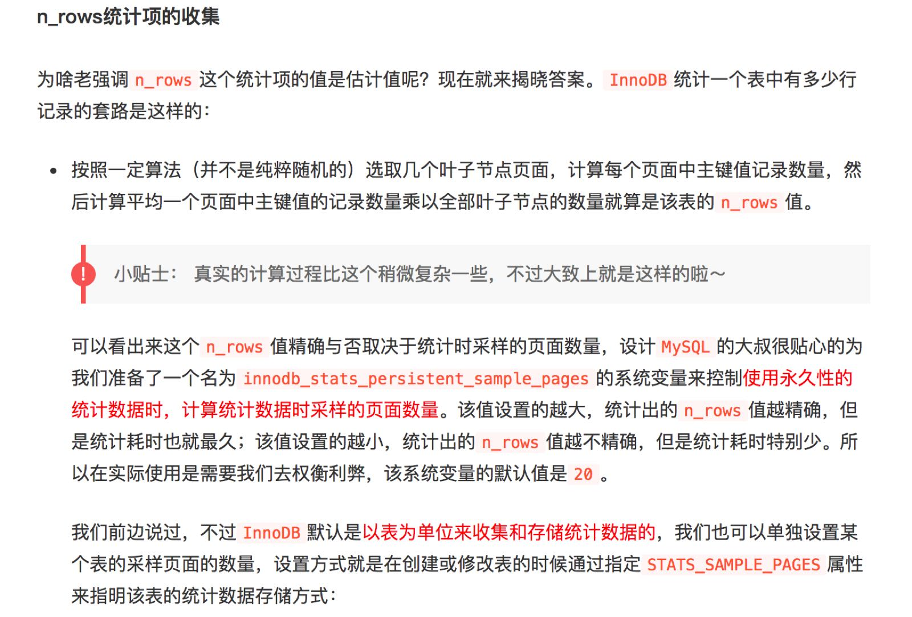</li></ul><p>&nbsp;</p><h3><a name="**3.-springboot-%E9%85%8D%E7%BD%AE-redis-%E7%BC%93%E5%AD%98**" class="md-header-anchor"></a><strong><span>3. SpringBoot 配置 Redis 缓存</span></strong></h3><blockquote><p><strong><span>redis</span></strong><span>  [2019-02-15]  </span></p></blockquote><p><span>[</span><strong><span>北京-后端-Rain</span></strong><span>] SpringBoot工程中做了redis缓存,怎么配置一下,让缓存的数据在过一定时间内清理掉?需要写定时任务吗? 我是这样写进去的</span></p><p><strong>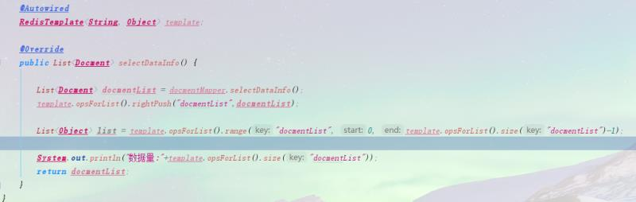</strong></p><p>&nbsp;</p><p><span>➤ 问题解答</span></p><ul><li><span>[</span><strong><span>北京-后端java-互联网</span></strong><span>]  过期时间设置下</span></li></ul><p><span>      </span></p><p>&nbsp;</p><ul><li><span>[</span><strong><span>北京-后端-yun</span></strong><span>] 缓存的时候就要设置过期时间</span></li><li><span>[</span><strong><span>深圳-后端-杀手</span></strong><span>]   可以这样</span></li></ul><p></p><p>&nbsp;</p><p>&nbsp;</p><hr /><p><span>非常感谢「后端圈」小伙伴们的高质量技术交流。 这里，我使用「知识星球」沉淀高质量的答疑内容。如果对您有帮助的话，可以帮忙转发与分享。同时，欢迎加入「后端群」与「知识星球」共同探讨，一起交流、探讨，打破认知的局限。（PS ：如果参与分享的小伙伴，有相关博客、公众号、书籍，欢迎私信我添加和补充~</span></p><p>&nbsp;</p><ul><li><span>✅北京-java开发-黄大胖子</span></li><li><span>✅ 宁波-java-金鑫</span></li><li><span>✅上海-java-呆</span></li><li><span>✅西安-无业游民-小孩子</span></li><li><span>✅北京-后端java-互联网</span></li><li><span>✅北京-后端-yun</span></li><li><span>✅深圳-后端-杀手</span></li></ul><p>&nbsp;</p><h2><a name="**%E5%91%A8%E6%8A%A5-no.58%EF%BC%882019%E5%B9%B4%EF%BC%89**" class="md-header-anchor"></a><strong><span>周报 No.58（2019年）</span></strong></h2><h3><a name="**1.%E7%8E%B0%E5%B7%B2%E6%9C%89%E6%9C%AA%E5%88%86%E5%8C%BA%E7%9A%84%E6%97%A5%E5%BF%97%E8%A1%A8,%E5%8D%A0%E7%94%A8%E6%95%B0%E6%8D%AE%E9%87%8F%E4%BA%A4%E5%A4%A7,%E5%A6%82%E4%BD%95%E4%BC%98%E5%8C%96%E7%A3%81%E7%9B%98?**" class="md-header-anchor"></a><strong><span>1.现已有未分区的日志表,占用数据量交大,如何优化磁盘?</span></strong></h3><p><span>Mysql [2019-02-18]  </span></p><p>&nbsp;</p><p><span>[</span><strong><span>北京-打杂-火柴</span></strong><span>] </span></p><p><span>大佬们 有一个问题 因为公司刚成立一年,早期开发某个项目的时候,这个项目当时没有使用elk这些管理日志,直接放入到mysql innodb表中,而且该日志表一直是写频繁,查询少,只有在出现问题情况的时候,才让业务人员登录系统进行查询.现在这个表,经过一年后,业务爆发增长,占用磁盘空间780GB,目前已经部分业务停止向该表写入数据了,但是用的是阿里云的服务器,光一个表780GB就要花费不少费用,所以初期目标是对该表执行delete+optimize table,删除掉不需要的数据.但是delete操作好办,但是optimize table会对全表产生共享锁,可能费时将近一天左右,无法写入数据,这个显然是不能接受的,所以弱弱的问一下大佬,这个该如何优化以节省磁盘空间.</span></p><p>&nbsp;</p><p><span>补充:delete操作好办,但是optimize table费时太大了.前者操作可以 直接基于MVCC 保证行锁,不影响业务写入.后者直接锁表,有点难.要短时间内能操作完,不要长时间停滞,导致升级费时太久.</span></p><p>&nbsp;</p><p><strong><span>[深圳-DBA-火箭]</span></strong></p><p><span>你可以设计一张新的分区表，把在线数据先写入新的表，然后再变更时间，把业务操作写入新的表，历史数据再慢慢迁移。等把需要的历史数据都迁移到新的分区表之后，直接把旧表备份后，drop掉就可以了</span></p><p>&nbsp;</p><p><strong><span>[福州-后端-叶平平]</span></strong></p><p><span>我之前也碰到这个问题，跟业务方沟通清楚，暂停服务，把旧表重命名，不写入旧表的业务功能，创建一个先的表来替代。</span></p><p><span>当然这个操作要看你的业务是否保证 7*24了。我之前的业务可以找个短时间暂停的。</span></p><p><span>会有业务查询问题，统计等等都会有影响，历史数据只能后续追回来，主要还是看业务逻辑。其他更好的方案目前没有接触过。</span></p><p>&nbsp;</p><h3><a name="**2.@jsonformat%E4%BC%9A%E4%BF%AE%E6%94%B9spring-boot--%E7%9A%84application.yml%E9%85%8D%E7%BD%AE%E6%96%87%E4%BB%B6?**" class="md-header-anchor"></a><strong><span>2.@JsonFormat会修改spring boot  的application.yml配置文件?</span></strong></h3><p><span>Spring boot [2019-02-20]  </span></p><p>&nbsp;</p><p><strong><span>[西安-后端-Byron]</span></strong></p><p><span>请教下各位关于SpringBoot 时区的一个问题 描述：两个服务都已经在application.ym 中设置jackson.time-zone 为GMT+8 但是传输的时间字段使用@JsonFormat 来格式化Date， 结果就是 B服务使用RestTemplate Post到B服务数据时，时间少了8个小时 </span></p><p>&nbsp;</p><p><strong><span>[西安-后端-Byron]</span></strong></p><p><span>解决：@JsonFormat 也设置time-zone，问题解决。</span></p><p>&nbsp;</p><p><strong><span>[西安-后端-Byron]</span></strong></p><p><span>另一个问题:@JsonFormat 我看源码，JsonFormat的时区默认不是GMT+8，所以 难道@JsonFormat 的时区优先级 会高于在 application中设置time-zone .</span></p><p><span>问题确实是：@JsonFormat 会 覆盖 application配置的time-zone</span></p><p>&nbsp;</p><h3><a name="**3.cpu%E4%BD%BF%E7%94%A8%E7%8E%87%E8%BF%87%E9%AB%98,young-gen%E7%9A%84%E6%97%A5%E5%BF%97%E6%9B%B2%E7%BA%BF%E5%90%8E%E6%9C%9F%E9%A2%91%E7%B9%81%E4%B8%8A%E4%B8%8B%E8%B7%B3%E5%8A%A8,%E5%8F%AF%E4%BB%A5%E8%AF%B4%E6%98%8Ecpu%E4%BD%BF%E7%94%A8%E7%8E%87%E8%BF%87%E9%AB%98%E5%92%8Cgc%E6%9C%89%E5%85%B3%E7%B3%BB%E5%90%97?**" class="md-header-anchor"></a><strong><span>3.CPU使用率过高,Young Gen的日志曲线后期频繁上下跳动,可以说明CPU使用率过高和GC有关系吗?</span></strong></h3><p><span>JVM [2019-02-18]</span></p><p>&nbsp;</p><p><strong><span>[紫鸿青衣]</span></strong></p><p><span>各位大佬，我这里有一个突发情况，在17点20的时候，CPU开始报警，提示使用率过高，当时的Young Gen的日志曲线是上图中的样子，这个图可以说明CPU使用率过高和gc有关系吗？</span></p><p></p><p></p><p><strong><span>[梁大]</span></strong></p><p><span>除了gc，还有其他异常情况吗</span></p><p>&nbsp;</p><p><strong><span>[紫鸿青衣]</span></strong></p><p><span>还有就是发生了两次full gc,这个好像还是gc的，别的我暂时还没有发现</span></p><p>&nbsp;</p><p><strong><span>[张帆]</span></strong></p><p><span>在这一段时间里记录了两次full gc 时间段大概十几分钟</span></p><p>&nbsp;</p><p><strong><span>[qixiaobo]</span></strong></p><p><span>你这个应该gc占用cpu太多了吧 换言之业务线程没怎么干活了</span></p><p>&nbsp;</p><p><strong><span>[张帆]</span></strong></p><p><span>这个配置的 1 个核的实例,我说的物理的内存,以前没问题 这几天做了个活动 流量峰值大概原来的1倍.</span></p><p><span>我们原来配的是一核,这个是不是会更加重了情况吧.现在改成两核了,这个服务原来估计的没这么大量 这几天公司做了做活动 app排名在app store上前20了 流量上来了1倍.</span></p><p>&nbsp;</p><p><strong><span>[qixiaobo]</span></strong></p><p><span>可以观察一下比如线程创建是否有剧烈变多啊,看上去是gc线程干的活太多导致业务线程占不到啥cpu.</span></p><p>&nbsp;</p><p><strong><span>[张帆]</span></strong></p><p><span>嗯 用土法调优三大件已经做出文件了 已经上传了分析网站了 明天去公司了再看看.</span></p><p><span>我们这个老年代倒是没有频繁 就是年轻代频繁了.</span></p><p>&nbsp;</p><p><strong><span>[qixiaobo]</span></strong></p><p><span>年轻频繁也说明不需要晋升就被回收了.短时间创建了大量的大对象,还可以被回收.</span></p><p>&nbsp;</p><p><span>--  后续 ing  ---------------------------------------------------------------------</span></p><p>&nbsp;</p><p><strong><span>[张帆]</span></strong></p><p><span>刚才看了这两篇文章，讲的从栈快照中发现的两种程序运行的表现形式，从而定为可能的问题 感觉学习了 </span><a href='https://blog.fastthread.io/2016/02/22/thread-dump-analysis-pattern-repetitive-strain-injury-rsi/' target='_blank' class='url'>https://blog.fastthread.io/2016/02/22/thread-dump-analysis-pattern-repetitive-strain-injury-rsi/</a><span> </span><a href='https://blog.fastthread.io/2016/06/23/really-running/' target='_blank' class='url'>https://blog.fastthread.io/2016/06/23/really-running/</a></p><p>&nbsp;</p><p><strong><span>[犀利豆]</span></strong></p><p><span>我有一个问题啊 cpu高好像比内存泄露好排查很多.hop一下 jstack一下.</span></p><p><span>就是jstack 看看线程。就知道为啥cpu高了</span></p><p>&nbsp;</p><p><strong><span>[qixiaobo]</span></strong></p><p><span>他是gc频繁吧 不是业务线程高吧 查看线程高我一般用这个指令.</span></p><p><span>curl -sLk &#39;</span><a href='https://raw.githubusercontent.com/superhj1987/awesome-scripts/master/java/bin/show-busy-java-threads' target='_blank' class='url'>https://raw.githubusercontent.com/superhj1987/awesome-scripts/master/java/bin/show-busy-java-threads</a><span>&#39; | bash</span></p><p><span>阿尔萨斯:</span><a href='https://github.com/superhj1987/awesome-scripts' target='_blank' class='url'>https://github.com/superhj1987/awesome-scripts</a></p><p></p><p>&nbsp;</p><p><strong><span>[犀利豆]</span></strong></p><p><span>整理了一下 思路，遇到现实cpu高怎么办。</span></p><p><span>1、top 看pid  </span></p><p><span>2、top -H -p pid 看看哪个线程高。</span></p><p><span>3、高的线程 装换为16进制以后，</span></p><p><span>4、jstack pid|grep 16进制的线程</span></p><p><span>5、多来几次定位 出问题的代码</span></p><p>&nbsp;</p><p><span>昨天排查线上问题，发现 jvm gc日志正常，堆内存正常。 怀疑是堆外内存有问题 就用了一下 那个阿尔萨斯。发现一切正常，确实很好用。</span></p><p>&nbsp;</p><p><strong><span>[张帆]</span></strong></p><p><a href='https://blog.fastthread.io/2016/03/07/thread-dump-analysis-pattern-ripple-effect/' target='_blank' class='url'>https://blog.fastthread.io/2016/03/07/thread-dump-analysis-pattern-ripple-effect/</a><span> 这篇也不错</span></p><p><a href='https://blog.fastthread.io/2015/09/02/thread-dump-analysis-pattern-several-scavengers/' target='_blank' class='url'>https://blog.fastthread.io/2015/09/02/thread-dump-analysis-pattern-several-scavengers/</a></p><p><a href='https://blog.fastthread.io/2015/11/20/thread-dump-analysis-pattern-leprechaun-trap/' target='_blank' class='url'>https://blog.fastthread.io/2015/11/20/thread-dump-analysis-pattern-leprechaun-trap/</a><span> 这篇文章讲了 Thread dump 里经常能看到的 Finalizer 线程的作用</span></p><h2><a name="%E5%91%A8%E6%8A%A5-no.59%EF%BC%882019%E5%B9%B4%EF%BC%89" class="md-header-anchor"></a><span>周报 No.59（2019年）</span></h2><h3><a name="1**.**%E9%9C%80%E8%A6%81-mysql-%E5%AD%97%E6%AE%B5%E6%95%B0%E6%8D%AE%E5%A4%A7%E5%B0%8F%E5%86%99%E4%B8%8D%E6%95%8F%E6%84%9F%E7%9A%84%E4%B8%9A%E5%8A%A1%E5%9C%BA%E6%99%AF" class="md-header-anchor"></a><span>1</span><strong><span>.</span></strong><span>需要 MySQL 字段数据大小写不敏感的业务场景</span></h3><blockquote><p><span>后端圈①</span></p><p><strong><span>Java</span></strong><span>   [2019-02-27] </span></p></blockquote><p>&nbsp;</p><p><span>[</span><strong><span>北京-java-黑暗泽</span></strong><span>]  大家有没有遇到过需要 MySQL 字段数据大小写不敏感的业务场景?</span></p><p>&nbsp;</p><p><span>➤ 问题解答</span></p><p>&nbsp;</p><p><strong><span>[龙童幽灵]</span></strong><span> 例如验证码，短信验证码和普通验证码是不一样的。</span></p><p><strong><span>[无锡-java-何大葱]</span></strong><span> 设计规范字段要求小写，下划线分割，就是为了屏蔽不同操作系统数据库大小敏感不一致的问题。</span></p><p>&nbsp;</p><h3><a name="**2.**%E4%BE%9D%E8%B5%96%E7%AC%AC%E4%B8%89%E6%96%B9%E5%A4%9A%E4%B8%AA-jar-%E5%8C%85-%E5%87%BA%E7%8E%B0%E5%90%8C%E8%B7%AF%E5%BE%84%E5%90%8C%E5%90%8D%E7%9A%84%E7%B1%BB-classload-%E4%BC%98%E5%85%88%E9%97%AE%E9%A2%98" class="md-header-anchor"></a><strong><span>2.</span></strong><span>依赖第三方多个 jar 包 出现同路径同名的类 ClassLoad 优先问题</span></h3><blockquote><p><span>后端圈①</span></p><p><strong><span>Java</span></strong><span>   [2019-02-28]</span></p></blockquote><p>&nbsp;</p><p><strong><span>[杭州-java-zhl] J</span></strong><span>ava 依赖第三方多个 jar 包 ，出现同路径同名的类 ClassLoad 优先使用哪个?</span></p><p>&nbsp;</p><p><span>➤ 问题解答</span></p><p>&nbsp;</p><p><strong><span>[深圳-Java-阿飞] </span>[<span>深圳-Java-eumji</span>][北京-后端-犀利豆]<span>遇到</span></strong><span>这种情况建议在 Maven 中 exclude 掉，很可能本地运行没问题，上线就报错。</span></p><p><strong><span>[上海-Java-知秋]</span></strong><span> jdk9+会提前检查这个错的。</span></p><p>&nbsp;</p><h3><a name="3.%E5%A4%9A%E4%B8%AA%E6%9C%8D%E5%8A%A1%EF%BC%8C%E4%B8%80%E4%B8%AA%E5%9F%9F%E5%90%8D" class="md-header-anchor"></a><span>3.多个服务，一个域名</span></h3><blockquote><p><span>后端圈②</span></p><p><span>Nginx   [2019-02-27]</span></p></blockquote><p>&nbsp;</p><p><strong><span>[重庆-java-小强]</span></strong><span>  服务器上有两个项目在跑，端口不一样，怎么把两个端口都解析到一个域名里面？</span></p><p>&nbsp;</p><p><span>➤ 问题解答</span></p><p>&nbsp;</p><p><strong><span>[太原-后端-赫先生]</span></strong><span> 可以使用 nginx 进行反向代理。</span></p><p>&nbsp;</p><h3><a name="4.mqtt-%E6%94%B6%E5%88%B0%E6%B6%88%E6%81%AF%E5%90%8E%EF%BC%8C%E6%80%8E%E4%B9%88%E7%AB%8B%E5%8D%B3%E6%8E%A8%E9%80%81%E5%88%B0-websocket-%E5%AE%A2%E6%88%B7%E7%AB%AF" class="md-header-anchor"></a><span>4.mqtt 收到消息后，怎么立即推送到 websocket 客户端</span></h3><blockquote><p><span>后端圈④</span></p><p><span>方案设计   [2019-02-26]</span></p></blockquote><p>&nbsp;</p><p><strong><span>[深圳-后端-黄西]</span></strong><span> mqtt 收到消息后，怎么立即推送到 websocket 客户端？我现在是将收到的消息放到队列中，然后在 websocket 后台代码死循环获取队列的值，死循环导致无法断开 websocket 连接？</span></p><p>&nbsp;</p><p><span>➤ 相关讨论</span></p><p>&nbsp;</p><p><strong><span>[广州-Java-荣杰]</span></strong><span> 可以考虑通过事件或定时器。我上回做是监听 Redis 事件，只要有个地方触发推送消息就可以了。收到消息消费时候去调用 websocket 推送试试。只要不用死循环就可以了。</span></p><p>&nbsp;</p><h3><a name="5.mysql-%E9%87%8C%E9%9D%A2%E5%A6%82%E4%BD%95%E7%BA%BF%E7%A8%8B%E5%AE%89%E5%85%A8%E5%9C%B0%E5%AE%9E%E7%8E%B0-query-and-update" class="md-header-anchor"></a><span>5.MySQL 里面如何线程安全地实现 query and update</span></h3><blockquote><p><span>后端圈④</span></p><p><span>方案设计   [2019-02-27]</span></p></blockquote><p><strong><span>[青南]</span></strong><span> MySQL 里面如何线程安全地实现 query and update？我有一个表里面记录了 100 条验证码，网站后端读取一条验证码，然后就把它设置为已读。如果先 select 再 update，就线程不安全，可能会出现两次请求读取同一条验证码的情况。但是如果用锁，会影响性能。</span></p><p>&nbsp;</p><p><span>➤ 相关讨论</span></p><p>&nbsp;</p><p><strong><span>[北京-java-犀利豆]</span></strong><span> 我们之前用过一个黑科技就是直接 update，如果影响行数大于 1 就更新成功。</span></p><p><strong><span>[杭州-后端-Alrt]</span></strong><span> 只用 MySQL 解决的话只能开启事务，然后 select for update。</span></p><p><strong><span>[青南]</span></strong><span> 我发现 Django 可以用这个问题，参考地址：</span><a href='https://docs.djangoproject.com/en/1.11/ref/models/querysets/#select-for-update' target='_blank' class='url'>https://docs.djangoproject.com/en/1.11/ref/models/querysets/#select-for-update</a></p><p><strong><span>[西安-java-健]</span></strong><span> 你先生成 1000 条入库，项目启动读到内存，每次验证从内存验证，验证通过发送 MQ，或者用多线程写库。只要在 Java 内存中， 而不是从库中判断逻辑，重复不重复其实都挺好判断的。</span><strong><span>我总结了一个规律，凡事一个业务需要特别复杂高深技术去实现的时候，大部分情况是业务思路跑偏了。找对方向，基本没有复杂的代码。</span></strong></p><p>&nbsp;</p><h3><a name="6.aop-%E5%88%87%E7%9A%84%E6%8E%A5%E5%8F%A3%E5%A4%AA%E5%A4%9A%E5%AF%BC%E8%87%B4%E5%86%85%E5%AD%98%E6%BA%A2%E5%87%BA" class="md-header-anchor"></a><span>6.AOP 切的接口太多导致内存溢出</span></h3><blockquote><p><span>后端圈④</span></p><p><span>Java   [2019-02-27]</span></p></blockquote><p><strong><span>[厦门-java-zwj]</span></strong><span> 有人遇到过 AOP 切的接口太多导致内存溢出，JVM 内存调到 4G 还是会溢出？</span></p><p>&nbsp;</p><p><span>➤ 相关讨论</span></p><p>&nbsp;</p><p><strong><span>[杭州-后端-梁桂钊]</span></strong><span> 我猜可能是代码问题吧，我之前遇到过，有一个场景在 aop 调用中每次调用都 new 对象，导致流量高的时候内存溢出。</span></p><p><strong><span>[上海-后端-myths]</span></strong><span> 可能是栈溢出，永久代调大就好了，类比较多有可能就是永久代不够，永久代放类的元信息吧，AOP 代理过的类都是一个新的类，这个新类的元信息就会扔到永久代，有可能会撑满。</span></p><p>&nbsp;</p><h3><a name="7.springmvc-controller-%E6%96%B9%E6%B3%95%E5%8F%82%E6%95%B0%E4%B8%BA%E4%BB%80%E4%B9%88%E4%B8%8D%E4%BD%BF%E7%94%A8%E5%A4%9A%E4%B8%AA%E7%9A%84-@requestbody" class="md-header-anchor"></a><span>7.SpringMVC controller 方法参数为什么不使用多个的 @RequestBody</span></h3><blockquote><p><span>后端圈（福州厦门圈）</span></p><p><span>Java   [2019-02-27]</span></p></blockquote><p><strong><span>[福州-后端-叶平平]</span></strong><span> SpringMVC controller 方法参数为什么不使用多个的 @RequestBody，例如</span></p><p>&nbsp;</p><pre spellcheck="false" class="md-fences md-end-block ty-contain-cm modeLoaded" lang=""><div class="CodeMirror cm-s-inner CodeMirror-wrap" lang=""><div style="overflow: hidden; position: relative; width: 3px; height: 0px; top: 0px; left: 11.6667px;"><textarea autocorrect="off" autocapitalize="off" spellcheck="false" tabindex="0" style="position: absolute; bottom: -1em; padding: 0px; width: 1000px; height: 1em; outline: none;"></textarea></div><div class="CodeMirror-scrollbar-filler" cm-not-content="true"></div><div class="CodeMirror-gutter-filler" cm-not-content="true"></div><div class="CodeMirror-scroll" tabindex="-1"><div class="CodeMirror-sizer" style="margin-left: 0px; margin-bottom: 0px; border-right-width: 0px; padding-right: 0px; padding-bottom: 0px;"><div style="position: relative; top: 0px;"><div class="CodeMirror-lines" role="presentation"><div role="presentation" style="position: relative; outline: none;"><div class="CodeMirror-measure"><pre><span>xxxxxxxxxx</span></pre></div><div class="CodeMirror-measure"></div><div style="position: relative; z-index: 1;"></div><div class="CodeMirror-code" role="presentation"><div class="CodeMirror-activeline" style="position: relative;"><div class="CodeMirror-activeline-background CodeMirror-linebackground"></div><div class="CodeMirror-gutter-background CodeMirror-activeline-gutter" style="left: 0px; width: 0px;"></div><pre class=" CodeMirror-line " role="presentation"><span role="presentation" style="padding-right: 0.1px;">add(@RequestBody Head head,@RequestBody Body body)</span></pre></div></div></div></div></div></div><div style="position: absolute; height: 0px; width: 1px; border-bottom: 0px solid transparent; top: 20px;"></div><div class="CodeMirror-gutters" style="display: none; height: 20px;"></div></div></div></pre><p>&nbsp;</p><p><span>➤ 相关讨论</span></p><p>&nbsp;</p><p><strong><span>[杭州-后端-梁桂钊]</span></strong><span> 正解。这个问题就是 Spring @RequestBody 单体限制。一个方法只能用一个 @RequestBody，不然好像会报错，我记得，可以试一下。因为它将输入流的 body 作为一个整体进行转换，解析完成之后会关闭输入流。</span></p><p><strong><span>[福州-后端-叶平平]</span></strong><span> Spring 多 @requestbody 支持，下午看到的解决办法。地址：</span><a href='https://github.com/chujianyun/Spring-MultiRequestBody' target='_blank' class='url'>https://github.com/chujianyun/Spring-MultiRequestBody</a><span> 。</span></p><hr /><p><span>非常感谢「后端圈」小伙伴们的高质量技术交流，以及「研习小组」成员们的聚焦交流。如果对您有帮助的话，可以帮忙转发与分享。同时，欢迎加入「后端圈」与「研习小组」共同探讨，一起交流、探讨，打破认知的局限。（PS ：如果参与分享的小伙伴，有相关博客、公众号、书籍，欢迎私信我添加和补充~）</span></p><p>&nbsp;</p><ul><li><span>✅北京-java-犀利豆（公众号 ：犀利豆的技术空间）</span></li><li><span>✅西安-java-健</span></li><li><span>✅上海-后端-myths（博客：</span><a href='https://blog.mythsman.com/' target='_blank' class='url'>https://blog.mythsman.com/</a><span>）</span></li><li><span>✅福州-后端-叶平平</span></li><li><span>✅上海-Java-知秋（博客 ：一叶知秋 </span><a href='https://muyinchen.github.io/'><span>https://muyinchen.github.io</span></a><span>）</span></li><li><span>✅深圳-Java-阿飞（公众号 ：阿飞的博客）</span></li><li><span>✅青南（书籍：《Python爬虫开发 从入门到实战》）</span></li><li><span>✅龙童幽灵</span></li><li><span>✅无锡-java-何大葱</span></li><li><span>✅深圳-Java-eumji</span></li><li><span>✅太原-后端-赫先生</span></li><li><span>✅广州-Java-荣杰</span></li><li><span>✅杭州-后端-Alrt</span></li><li><span>✅北京-java-黑暗泽</span></li><li><span>✅杭州-java-zhl</span></li><li><span>✅重庆-java-小强</span></li><li><span>✅深圳-后端-黄西</span></li><li><span>✅杭州-后端-梁桂钊（公众号 ：服务端思维）</span></li></ul><p>&nbsp;</p><h2><a name="**%E5%91%A8%E6%8A%A5-no.60%EF%BC%882019%E5%B9%B4%EF%BC%89**" class="md-header-anchor"></a><strong><span>周报 No.60（2019年）</span></strong></h2><h3><a name="1**.**-%E8%AF%B4%E5%88%B0%E6%9D%80%E8%BF%9B%E7%A8%8B%EF%BC%8C%E6%88%91%E4%B9%9F%E6%83%B3%E9%97%AE%E4%B8%80%E4%B8%AA%E9%97%AE%E9%A2%98%E5%9C%A8%E6%89%A7%E8%A1%8Ckill--9%E7%9A%84%E6%97%B6%E5%80%99%EF%BC%8C%E5%A6%82%E6%9E%9C%E6%9C%89%E5%A4%A7%E9%87%8F%E6%95%B0%E6%8D%AE%E8%BF%9B%E6%9D%A5%EF%BC%8C%E8%BF%99%E4%BA%9B%E6%95%B0%E6%8D%AE%E4%BC%9A%E4%B8%A2%E5%A4%B1%E5%90%97%EF%BC%9F" class="md-header-anchor"></a><span>1</span><strong><span>.</span></strong><span> 说到杀进程，我也想问一个问题在执行kill- 9的时候，如果有大量数据进来，这些数据会丢失吗？</span></h3><blockquote><p><span>后端圈</span></p><p><strong><span>Java</span></strong><span>   [2019-03-04] </span></p></blockquote><p>&nbsp;</p><p><span>[北京－Java－Mr.Xi] 说到杀进程，我也想问一个问题在执行kill- 9的时候，如果有大量数据进来，这些数据会丢失吗？</span></p><p>&nbsp;</p><p><span>➤ 问题解答</span></p><p>&nbsp;</p><p><strong><span>[北京-java-犀利豆]</span></strong><span> kill-9 是直接杀掉进程，无论进程在干什么，肯定会引起数据丢失。可以使用kill 15 如果java程序写的正确，就会不接受新的请求，然后把手上的处理完，再关闭。至于java 如何优雅的退出 可以看看 java.lang.Runtime.addShutdownHook(Thread hook) 这个方法。</span></p><p>&nbsp;</p><h3><a name="**2.**-%E8%AE%BE%E8%AE%A1%E7%A7%92%E6%9D%80%E7%B3%BB%E7%BB%9F%E4%B8%BA%E4%BB%80%E4%B9%88%E4%BD%BF%E7%94%A8%E6%B6%88%E6%81%AF%E9%98%9F%E5%88%97" class="md-header-anchor"></a><strong><span>2.</span></strong><span> 设计秒杀系统为什么使用消息队列</span></h3><blockquote><p><span>后端圈</span></p><p><strong><span>设计</span></strong><span>  [2019-03-05] </span></p></blockquote><p>&nbsp;</p><p><strong><span>[北京-打杂-火柴]</span></strong><span>很多博客为何设计秒杀系统都是用消息队列呢?使用消息队列的目的是什么?比如说某个商品我只卖100 份,那卖给对于商家而言都是一样的,根本不需要保证有序性,即便是前一百个人没有抢到,第二百个人抢到了也无所谓,用户不知道,商家也不关心,还是说用 mq 只是为了削峰填谷,避免短时间内并发量太高?如果是这个原因,除了使用消息队列,还有其他办法可以避免流量短期内突然暴增吗?</span></p><p>&nbsp;</p><p><span>➤ 问题解答</span></p><p>&nbsp;</p><p><strong><span>[北京-java-犀利豆]</span></strong><span>所以还有一种思路就是每层调用都随机抛弃很多请求，真正落到核心服务的流量很少。第二种思路就是先把数据记下来，我再慢慢分析谁秒杀到了。</span></p><p>&nbsp;</p><p><strong><span>[福州-SER-赤月]</span></strong><span>我觉得在秒杀场景下，消息队列的作用，更多是把并行处理化为串行处理。既可以排队处理，避免超售，也可以保证有序。重点更多在于排队处理后可以避免超售，个人见解。</span></p><p>&nbsp;</p><p><strong><span>[兰小伟-《TypeScript实战》]</span></strong><span>就是削峰+异步化，控制超卖，那是业务问题，不是技术问题。</span></p><p>&nbsp;</p><h3><a name="3.-%E4%B8%BA%E4%BB%80%E4%B9%88-private-%E6%96%B9%E6%B3%95%E6%97%A0%E6%B3%95%E6%B7%BB%E5%8A%A0%E4%BA%8B%E5%8A%A1%E7%AE%A1%E7%90%86%EF%BC%9F" class="md-header-anchor"></a><span>3. 为什么 private 方法无法添加事务管理？</span></h3><blockquote><p><span>后端圈</span></p><p><strong><span>Java</span></strong><span> [2019-03-08] </span></p></blockquote><p>&nbsp;</p><p><strong><span>[广州-学生-后端]</span></strong><span>为什么 private 方法无法添加事务管理</span></p><p>&nbsp;</p><p><span>➤ 问题解答</span></p><p>&nbsp;</p><p><strong><span>[上海-后端-知秋]</span></strong><span>动态代理基于反射机制进行。</span></p><p>&nbsp;</p><p><strong><span>[北京-java-犀利豆]</span></strong><span>反射非要调用private也行啊。</span></p><p>&nbsp;</p><p><strong><span>[上海-后端-知秋]</span></strong><span>你方法都设定 private 难道是想让人来反射调用的？</span></p><p>&nbsp;</p><p><strong><span>[北京-java-犀利豆]</span></strong><span>同理 junit test 的方法也是 public 的。</span></p><p>&nbsp;</p><p><strong><span>[上海-后端-知秋]</span></strong><span>源码里非要调用也是需要给权限的。</span></p><p>&nbsp;</p><p>&nbsp;</p><h3><a name="4.-%E5%A6%82%E4%BD%95%E6%8F%90%E9%AB%98%E7%9F%AD%E4%BF%A1%E5%8F%91%E9%80%81%E7%9A%84%E6%95%88%E7%8E%87%EF%BC%8C%E4%BB%A5%E5%8F%8A%E5%A6%82%E4%BD%95%E8%A7%A3%E5%86%B3%E5%B9%B6%E5%8F%91" class="md-header-anchor"></a><span>4. 如何提高短信发送的效率，以及如何解决并发</span></h3><blockquote><p><span>后端圈</span></p><p><strong><span>Java</span></strong><span> [2019-03-08] </span></p></blockquote><p>&nbsp;</p><p><span>[杭州-java-keven]</span></p><p>&nbsp;</p><p><span>➤ 问题解答</span></p><p>&nbsp;</p><p><strong><span>[广州-java-win7@loops]</span></strong><span>这个其实很简单，加多个冻结金额的概念，开始的时候就把预计要用到的钱冻结出去，这样另外一个任务就用不了了。 短信这个主要是批量，所以先把一批要用到的钱冻结。</span></p><p>&nbsp;</p><p><strong><span>[杭州-java-keven]</span></strong><span>嗯，先锁定,和扣库存一样的道理.</span></p><p>&nbsp;</p><hr /><p><span>非常感谢「后端圈」小伙伴们的高质量技术交流，以及「研习小组」成员们的聚焦交流。如果对您有帮助的话，可以帮忙转发与分享。同时，欢迎加入「后端圈」与「研习小组」共同探讨，一起交流、探讨，打破认知的局限。（PS ：如果参与分享的小伙伴，有相关博客、公众号、书籍，欢迎私信我添加和补充~）</span></p><p>&nbsp;</p><ul><li><span>✅北京-java-犀利豆（公众号 ：犀利豆的技术空间）</span></li><li><span>✅上海-Java-知秋（博客 ：一叶知秋 </span><a href='https://muyinchen.github.io/'><span>https://muyinchen.github.io</span></a><span>）</span></li><li><span>✅杭州-java-keven</span></li><li><span>✅兰小伟-《TypeScript实战》</span></li><li><span>✅</span><strong><span>福州-SER-赤月</span></strong></li><li><span>✅成都-JAVA后端-北极之北</span></li><li><span>✅广州-java-win7@loops</span></li><li><span>✅北京－Java－Mr.Xi</span></li></ul><h2><a name="**%E5%91%A8%E6%8A%A5-no.61%EF%BC%882019%E5%B9%B4%EF%BC%89**" class="md-header-anchor"></a><strong><span>周报 No.61（2019年）</span></strong></h2><h3><a name="1**.**--vert.x-%E5%92%8C-reactor-%E7%9A%84%E5%85%B3%E7%B3%BB%EF%BC%8C%E4%BB%A5%E5%8F%8A-jdbc-%E7%9A%84%E6%80%9D%E8%80%83" class="md-header-anchor"></a><span>1</span><strong><span>.</span></strong><span>  Vert.x 和 Reactor 的关系，以及 JDBC 的思考</span></h3><blockquote><p><span>后端圈①</span></p><p><strong><span>反应式编程</span></strong><span>   [2019-03-11] </span></p></blockquote><p>&nbsp;</p><p><strong><span>[北京-java-犀利豆]</span></strong><span> 我一直不太了解 Vert.x 和 Reactor 的关系，vertx 提供了 JDBC？</span></p><p>&nbsp;</p><p><span>➤ 问题解答</span></p><p>&nbsp;</p><p><strong><span>[上海-java-知秋]</span></strong><span> Vert.x 提供了 JDBC 是个半成品，性能不咋滴。Spring 的 Reactor 是基于 jdk8+ 的实现，加入了大量的新功能，这个 RxJava 库是根本不具备的。从很多代码设计的层面，Reactor 做了很大的变动。数据库从来都不是瓶颈，现在的开发而言，真正可以落到数据库的操作的，还是比较少的，未来我们会越来越多基于基础服务层面的二次开发，更多还是网络型 io。假如非要基于关系型数据库，其实，MySQL 的性能上限，Spring MVC 已经可以成功驾驭了，不过现在已经做好响应式 JDBC 同样可以利用大内存的优势做到性能的大幅度提高，主要还是 Reactor 可以将长时间有订阅关系但是没有元素处理的这些任务所占据的工作线程释放出来，交给急需处理的任务来使用</span></p><p><strong><span>[兰小伟-《TypeScript实战》] R</span></strong><span>eactor 反应式编程是一种编程模型，Vert.x 是该编程模型的具体实现。异步化编程，基于事件驱动的无锁化编程模型。学好 Vert.x，首先要理解透 Netty 的 Eventloop 概念以及 Reactor 设计模式。其他类似的反应式框架也一样。</span></p><p><strong><span>[上海-后端-sion]</span></strong><span> Reactor 和 JDBC 是没有必然关系， 只是一般来说 Reactor 配合 no blocking 服用效果更好， 没有的话,自己可以 wrapper。</span></p><p>&nbsp;</p><h3><a name="2.-%E6%95%B0%E6%8D%AE%E5%8A%A0%E5%AF%86%E6%96%B9%E6%A1%88%E6%8E%A8%E8%8D%90%E6%8E%A2%E8%AE%A8" class="md-header-anchor"></a><span>2. 数据加密方案推荐探讨</span></h3><blockquote><p><span>后端圈①</span></p><p><span>实战  [2019-03-11] </span></p></blockquote><p>&nbsp;</p><p><strong><span>[广州-后端-柴码]</span></strong><span> 有没什么数据加密方案推荐，我目前使用 RSA 加解密，发现效率有些低？</span></p><p>&nbsp;</p><p><span>➤ 问题解答</span></p><p>&nbsp;</p><p><strong><span>[北京-java-犀利豆]</span></strong><span>非对称效率低，安全。对称效率高不安全。HTTPS 的思路就是使用非对称方式交换密钥，然后用对称方式传输数据。</span></p><p>&nbsp;</p><h3><a name="3.-%E5%88%86%E5%B8%83%E5%BC%8F%E9%94%81%E4%B8%BB%E8%A6%81%E5%AE%9E%E9%99%85%E5%BA%94%E7%94%A8%E5%9C%A8%E5%93%AA%E4%BA%9B%E5%9C%B0%E6%96%B9" class="md-header-anchor"></a><span>3. 分布式锁主要实际应用在哪些地方</span></h3><blockquote><p><span>后端圈①</span></p><p><span>实战 [2019-03-16] </span></p></blockquote><p>&nbsp;</p><p><strong><span>[广州-java-win7@loops]</span></strong><span> 请教大家个问题，平时日常开发中，分布式锁用得多吗？主要实际应用在哪些地方？</span></p><p>&nbsp;</p><p><span>➤ 问题解答</span></p><p>&nbsp;</p><p><strong><span>[深圳-Java-Ryan]</span></strong><span> 多，主要多个服务共享数据或者，多线程共享数据。多个实例共享数据，多个实例的定时任务之类。</span></p><p><strong><span>[上海-后端-知秋]</span></strong><span> 看你具体需求，服务看做是线程，共享数据可以看成是 volatile 变量。</span></p><p><strong><span>[北京-后端-hxy]</span></strong><span> 场景多了,比如:定时任务，共享变量，接口幂等，防止缓存击穿，</span></p><p>&nbsp;</p><h3><a name="4.-rocketmq-%E6%B6%88%E8%B4%B9%E5%A0%86%E7%A7%AF%E4%B8%8Econsume_from_last_offset" class="md-header-anchor"></a><span>4. RocketMQ 消费堆积与CONSUME_FROM_LAST_OFFSET</span></h3><blockquote><p><span>后端圈②</span></p><p><span>RocketMQ [2019-03-12] </span></p></blockquote><p>&nbsp;</p><p><strong><span>[上海</span><em><span>java</span></em><span>呆]</span></strong><span> 请问一下问题，RocketMQ 消费堆积，配置的消费策略是 CONSUME_FROM_LAST_OFFSET，为什么新消息必须等堆积消息都消费了才会被消费到?</span></p><p>&nbsp;</p><p><span>➤ 问题解答</span></p><p>&nbsp;</p><p><strong><span>[上海</span><em><span>java</span></em><span>呆]</span></strong><span> 消息队列的消费是 FIFO 的，CONSUME_FROM_LAST_OFFSET 使用设置启动时的消费策略。</span></p><p>&nbsp;</p><h3><a name="5.-%E4%BB%8B%E7%BB%8D%E4%BD%A0%E5%81%9A%E8%BF%87%E6%9C%80%E5%A4%8D%E6%9D%82%E7%9A%84%E7%B3%BB%E7%BB%9F" class="md-header-anchor"></a><span>5. 介绍你做过最复杂的系统</span></h3><blockquote><p><span>后端圈②</span></p><p><span>Java [2019-03-14] </span></p></blockquote><p>&nbsp;</p><p><strong><span>[北京-后端-黄鹏飞]</span></strong><span> 你系统的难点和亮点是啥?</span></p><p>&nbsp;</p><p><span>➤ 问题解答</span></p><p>&nbsp;</p><p><strong><span>[杭州-后端-梁桂钊]</span></strong><span> 这个问题蛮好，可以探讨，说说你们自己的思考。比如，保障稳定性时如何做到业务无害性，如何立马定位问题，也是亮点啊！。。。这个很好啊，我觉得这个是很多人不具备的解决问题的能力。安利时间，系统的复杂性包括了技术复杂性和业务复杂性。参见：</span><a href='http://blog.720ui.com/2019/about_complex_system/' target='_blank' class='url'>http://blog.720ui.com/2019/about_complex_system/</a></p><p><span> </span></p><h3><a name="6.-es-%E6%8C%89%E5%AD%97%E6%AE%B5(%E6%95%B0%E7%BB%84%E7%B1%BB%E5%9E%8B)%E8%81%9A%E5%90%88" class="md-header-anchor"></a><span>6. ES 按字段(数组类型)聚合</span></h3><blockquote><p><span>后端圈④</span></p><p><span>实战 [2019-03-11] </span></p></blockquote><p>&nbsp;</p><p><strong><span>[北京-后端-kevin]</span></strong><span> 请教下 ES 按字段(数组类型)聚合，返回的结果是被数组被打散的结果聚合，这个有什么好的办法解决吗？</span></p><p>&nbsp;</p><p><span>➤ 问题解答</span></p><p>&nbsp;</p><p><strong><span>[杭州-后端-梁桂钊] 。。。</span></strong></p><p>&nbsp;</p><h3><a name="7.-%E9%9B%86%E7%BE%A4%E3%80%81%E8%B4%9F%E8%BD%BD%E5%9D%87%E8%A1%A1%E3%80%81%E5%88%86%E5%B8%83%E5%BC%8F%E7%9A%84%E7%90%86%E8%A7%A3" class="md-header-anchor"></a><span>7. 集群、负载均衡、分布式的理解</span></h3><blockquote><p><span>后端圈④</span></p><p><span>分布式 [2019-03-12] </span></p></blockquote><p>&nbsp;</p><p><strong><span>[成都-后端-陈十一]</span></strong><span> 集群、负载均衡是技术，分布式是概念，包含前两个，这样理解有问题吗？</span></p><p>&nbsp;</p><p><span>➤ 问题解答</span></p><p>&nbsp;</p><p><strong><span>[上海-后端-brucezhang]</span></strong><span> 分布式是指将不同的业务分布在不同的地方，集群指的是将几台服务器集中在一起，实现同一业务。在现有网络结构之上，负载均衡提供了一种廉价有效的方法扩展服务器带宽和增加吞吐量，加强网络数据处理能力，提高网络的灵活性和可用性。</span></p><p><strong><span>[北京-后端-G小调]</span></strong><span> 集群:多台机器跑一套代码 分布式:多台机器合起来跑才是一套完整代码。</span></p><p>&nbsp;</p><h3><a name="8.-%E6%80%8E%E4%B9%88%E7%90%86%E8%A7%A3%E5%88%86%E5%B8%83%E5%BC%8F%E5%92%8C%E5%BE%AE%E6%9C%8D%E5%8A%A1%EF%BC%8C%E4%BB%A5%E5%8F%8A%E9%9B%86%E7%BE%A4%E4%B9%8B%E9%97%B4%E7%9A%84%E5%85%B3%E7%B3%BB" class="md-header-anchor"></a><span>8. 怎么理解分布式和微服务，以及集群之间的关系</span></h3><blockquote><p><span>后端圈④</span></p><p><span>Java [2019-03-12] </span></p></blockquote><p>&nbsp;</p><p><strong><span>[杭州-后端-梁桂钊]</span></strong><span> 怎么理解分布式和微服务，以及集群之间的关系？</span></p><p>&nbsp;</p><p><span>➤ 问题解答</span></p><p>&nbsp;</p><p><strong><span>[北京-java-犀利豆]</span></strong><span> 微服务是实现分布式的一种手段。</span></p><p><strong><span>[广州-后端-陈树义]</span></strong><span> 垂直分割和水平复制的关系吧。微服务是一种实现方式。</span></p><p><strong><span>[上海-后端-brucezhang]</span></strong><span> 微服务是一种架构风格，和分布式类似，知识部署方式不一样。我理解的是微服务不一定部署在多台机器，也可以是同一台机器。</span></p><p><strong><span>[北京-后端-G小调]</span></strong><span> 我觉得微服务就是应用拆分粒度更小，职责更单一聚焦，然后就是服务治理，再加容器。</span></p><p><strong><span>[杭州-后端-梁桂钊]</span></strong><span> 随着业务的发展，我们势必会面临高访问流量，此时需要考虑服务器的负载能力，防止服务器过载而导致服务宕机不可用。因此，我们采取服务水平拆分。首先，我们引入集群和负载均衡来均分访问流量。其次，通过冗余机器来提高机器集群的负载能力。当我们将单体系统拆分成微服务（服务垂直拆分），我们也需要通过引入集群和负载均衡来提高每一个子服务系统的负载能力和容灾能力。事实上，很多单体系统已经具备了服务水平拆分（集群和负载均衡）的能力，而微服务的改造是一种服务垂直拆分方案。我们需要对业务梳理并模块拆分，保证拆分后的各个模块都是有价值的。服务水平拆分（集群和负载均衡）和微服务（服务垂直拆分）不是互斥关系，而是在高并发和分布式中的共存关系。</span></p><p><strong><span>[兰小伟-《TypeScript实战》]</span></strong><span> 集群跟代码无关，集群是从 server 端来看待问题，指的是多台服务器通过网络互连聚集在一起共同对外提供服务。分布式是从 client 端看待问题，指的是客户端的请求是通过分发给不同机器来处理的，至于是不是同一套代码不是重点啊，你提供的功能是一致的就行啊，一个用 Java 写的，一个用 Python 写的也可以啊，只要两者提供的功能从 client 端来看表象一致就行了。补充一下，集群和分布式跟代码层面关系不大，需要考虑代码的无状态，才便于分布式。</span></p><p>&nbsp;</p><h3><a name="9.-%E6%9C%8D%E5%8A%A1%E9%97%B4%E8%B0%83%E7%94%A8%E4%BC%9A%E4%BA%A7%E7%94%9F%E7%BD%91%E7%BB%9C%E5%BC%80%E9%94%80%EF%BC%8C%E4%B8%BA%E4%BB%80%E4%B9%88%E6%9C%8D%E5%8A%A1%E5%8C%96%E7%B3%BB%E7%BB%9F%E6%80%A7%E8%83%BD%E4%BC%9A%E6%8F%90%E9%AB%98" class="md-header-anchor"></a><span>9. 服务间调用会产生网络开销，为什么服务化系统性能会提高</span></h3><blockquote><p><span>后端圈④</span></p><p><span>分布式 [2019-03-12] </span></p></blockquote><p>&nbsp;</p><p><strong><span>[成都-后端-陈十一]</span></strong><span> 服务间调用会产生网络开销，为什么服务化改造之后 系统性能会提高？</span></p><p>&nbsp;</p><p><span>➤ 问题解答</span></p><p>&nbsp;</p><p><strong><span>[重庆-Java-crossoverJie]</span></strong><span> 负载呀，以前一个服务可以处理 1000 并发，现在 10 个服务就翻倍了。</span></p><p><strong><span>[杭州-后端-小糖人]</span></strong><span> 服务化就是加机器，服务化可以细粒度增加负载。</span>
<strong><span>[福州-java-龍]</span></strong><span> 之前是订单、商品、认证耦合在一起，要加服务器要一起加，现在根据负载，或许只要加订单服务器就好了。而且微服务是强制解耦，有的时候耦合在一起会偷懒。</span></p><p><strong><span>[杭州-后端-梁桂钊]</span></strong><span> 网络带宽只是冰山一角，单体应用能用的机器资源就那一些，传统的做法就是换更好的机器，是吧，为什么，就是因为它能提供更多的资源，比如cpu，内存等。如果集群，我就可以具有扩展能力，通过加机器来扩展负载能力。服务化，更多的考虑是独立自制和扩展的可能性。补充一下，微服务带来了很多不稳定性，所以我们要基于失败设计。</span></p><p>&nbsp;</p><h3><a name="10.-tomcat-%E5%9C%A8%E9%AB%98%E5%B9%B6%E5%8F%91%E6%83%85%E5%86%B5%E4%B8%8B%EF%BC%8C%E9%99%A4%E4%BA%86-io-%E7%93%B6%E9%A2%88%EF%BC%8C%E8%BF%98%E6%9C%89%E4%BB%80%E4%B9%88" class="md-header-anchor"></a><span>10. Tomcat 在高并发情况下，除了 IO 瓶颈，还有什么</span></h3><blockquote><p><span>后端圈④</span></p><p><span>Tomcat [2019-03-14] </span></p></blockquote><p>&nbsp;</p><p><strong><span>[广州-后端-学生]</span></strong><span> 请问 Tomcat 在高并发情况下，除了 IO 瓶颈，还有什么？</span></p><p>&nbsp;</p><p><span>➤ 问题解答</span></p><p><strong><span>[上海-java-知秋]</span></strong><span> servlet 设计的瓶颈决定了它终究难以满足需求，有些 api 它就是同步的。 </span><a href='https://juejin.im/post/5c653140518825625e4abfc6' target='_blank' class='url'>https://juejin.im/post/5c653140518825625e4abfc6</a><span> 里面有nio一系列的东西。</span></p><p>&nbsp;</p><h3><a name="11.-%E5%90%8E%E7%AB%AF%E5%BA%8F%E5%88%97%E5%8C%96%E6%97%B6%E9%97%B4%E6%8E%A2%E8%AE%A8" class="md-header-anchor"></a><span>11. 后端序列化时间探讨</span></h3><blockquote><p><span>后端圈⑤</span></p><p><span>Java [2019-03-11] </span></p></blockquote><p>&nbsp;</p><p><strong><span>[武汉-后端-小童]</span></strong><span> 谁知道如何后端序列化时间的时候，只显示yyyy-MM-dd？</span></p><p>&nbsp;</p><p><span>➤ 问题解答</span></p><p><strong><span>[上海-后端-钱杉杉]</span></strong><span> 我用的是 fastJson，所以在数据序列化的时候，全局配置里这样处理一下就ok了。当然也可以局部处理，比如在实体上做 @JsonFormat。</span></p><p></p><p><span>使用 jackson 的话，全局就这样配置一下。</span></p><p></p><p><span>局部配置：</span></p><p></p><p>&nbsp;</p><h3><a name="12.-%E7%B1%BB%E6%80%8E%E4%B9%88%E5%8A%A8%E6%80%81%E6%B7%BB%E5%8A%A0%E6%96%B0%E7%9A%84%E5%B1%9E%E6%80%A7" class="md-header-anchor"></a><span>12. 类怎么动态添加新的属性</span></h3><blockquote><p><span>后端圈(福州厦门圈)</span></p><p><span>Java [2019-03-12] </span></p></blockquote><p>&nbsp;</p><p><strong><span>[福州-后端-叶平平]</span></strong><span> 类怎么动态添加新的属性？ 我的想法是有这 Dict 注解的属性，能动态创建一个原来属性+Dict 的属性。 刚开始的时候我想反射 Field.set(&quot;xxDict&quot;,value) 直接添加，发现不行。之后有想用CgLib 来动态代理，但是代理后的是新对象。而且属性上有 $cglib_prop_ 。就是数据字典 codeToName 的想法。现在实行了直接在原属性的值替换，但是这样很不友好，想在动态创建一个新属性来存放name的值。</span></p><p>&nbsp;</p><p><span>➤ 问题解答</span></p><p><strong><span>[杭州-后端-梁桂钊]。。。</span></strong><span> </span></p><p>&nbsp;</p><hr /><p><strong><span>非常感谢「后端圈」小伙伴们的高质量技术交流。如果对您有帮助的话，可以帮忙转发与分享。同时，欢迎加入「后端圈」共同探讨，让所有孤军奋战的研发人员都找到属于自己的圈子，一起交流、探讨。在这里，我们可以认知升级，连接顶级的技术大牛，连接优秀的思维方式，连接解决问题的最短路径，连接一切优秀的方法，打破认知的局限，探索业务与技术交融下产生的无限可能。。</span></strong><span>（PS ：如果参与分享的小伙伴，有相关博客、公众号、书籍，欢迎私信我添加和补充~）</span></p><p>&nbsp;</p><ul><li><span>✅</span><strong><span>上海-Java-知秋（博客 ：一叶知秋</span></strong><span> </span><a href='https://muyinchen.github.io/'><strong><span>https://muyinchen.github.io</span></strong></a><strong><span>）</span></strong></li><li><span>✅</span><strong><span>兰小伟 (书籍：《TypeScript实战》)</span></strong></li><li><span>✅</span><strong><span>北京-java-犀利豆（公众号 ：犀利豆的技术空间）</span></strong></li><li><span>✅</span><strong><span>上海-后端-钱杉杉</span></strong></li><li><span>✅</span><strong><span>上海-后端-sion</span></strong></li><li><span>✅</span><strong><span>成都-后端-陈十一</span></strong></li><li><span>✅</span><strong><span>深圳-Java-Ryan</span></strong></li><li><span>✅</span><strong><span>上海</span><em><span>java</span></em><span>呆</span></strong></li><li><span>✅</span><strong><span>北京-后端-黄鹏飞</span></strong></li><li><span>✅</span><strong><span>上海-后端-brucezhang</span></strong></li><li><span>✅</span><strong><span>北京-后端-G小调</span></strong></li><li><span>✅</span><strong><span>北京-后端-hxy</span></strong></li><li><span>✅</span><strong><span>广州-后端-陈树义（公众号 ：Java技术精选）</span></strong></li><li><span>✅</span><strong><span>重庆-Java-crossoverJie（公众号 ：crossoverJie）</span></strong></li><li><span>✅</span><strong><span>杭州-后端-小糖人</span></strong></li><li><span>✅</span><strong><span>福州-java-龍</span></strong></li><li><span>✅</span><strong><span>福州-后端-叶平平</span></strong></li><li><span>✅</span><strong><span>北京-后端-kevin</span></strong></li><li><span>✅</span><strong><span>广州-后端-柴码</span></strong></li><li><span>✅</span><strong><span>广州-java-win7@loops</span></strong></li><li><span>✅</span><strong><span>武汉-后端-小童</span></strong></li><li><span>✅</span><strong><span>杭州-后端-梁桂钊（公众号 ：服务端思维）</span></strong></li></ul><p>&nbsp;</p><h2><a name="**%E5%91%A8%E6%8A%A5-no.62%EF%BC%882019%E5%B9%B4%EF%BC%89**" class="md-header-anchor"></a><strong><span>周报 No.62（2019年）</span></strong></h2><h3><a name="1.-%E5%A4%A7-sql-%E5%AF%BC%E8%87%B4%E6%95%B0%E6%8D%AE%E5%BA%93%E6%9C%8D%E5%8A%A1%E4%B8%8D%E5%8F%AF%E7%94%A8" class="md-header-anchor"></a><span>1. 大 SQL 导致数据库服务不可用</span></h3><p>&nbsp;</p><blockquote><p><span>后端圈① [2019-03-18]</span></p></blockquote><p>&nbsp;</p><p><strong><span>[北京-后端-hxy]</span></strong><span> 大 SQL 导致数据库服务不可用，表现：线上大面积反馈无法保存了，个别应用警告内存飚高，刚刚发生的线上问题，分享给大家。处理方法：查看慢 SQL，联系 dba 查看数据库服务器的运行状况，dba 发现大 SQL，kill掉，服务正常。主要由于 MyBatis 条件 bug，导致查了全表。</span></p><p>&nbsp;</p><p><span>➤ 问题解答</span></p><p>&nbsp;</p><p><strong><span>[杭州-后端-小黑]</span></strong><span> 这类问题一般是程序员写的时候没注意，条件没匹配上，导致了全表查询。</span></p><p><strong><span>[深圳-java-mike]</span></strong><span> 如果是程序员的问题，可以写一个进行静态检查工具，入参是表结构和 xml 文件，就可以分析出 SQL 是否走索引了。开发和测试阶段不用 SQL 的执行计划分析,线上会有 druid 分析执行过的 SQL 报告。就用 druid 的 AST 进行词法分析，我们还加了一些其他的 SQL 规范，就解析了一起过规则列表。</span></p><p>&nbsp;</p><h3><a name="2.-python-%E9%87%8C%E9%9D%A2%E4%BD%BF%E7%94%A8-elasticsearch-dsl-%E6%90%9C%E7%B4%A2-es" class="md-header-anchor"></a><span>2. Python 里面使用 elasticsearch-dsl 搜索 ES</span></h3><p>&nbsp;</p><blockquote><p><span>后端圈① [2019-03-20]</span></p></blockquote><p>&nbsp;</p><p><strong><span>[杭州-数据挖掘-青南]</span></strong><span> 请问有没有朋友在 Python 里面使用 elasticsearch-dsl 搜索 ES？</span></p><p>&nbsp;</p><p><span>➤ 问题解答</span></p><p>&nbsp;</p><p><strong><span>[上海-后端-墨菲]</span></strong><span> 用 term 搜索，多层。</span></p><p><strong><span>[杭州-数据挖掘-青南]</span></strong><span> 我发现了，还真的可以用 terms 来做。</span></p><p>&nbsp;</p><h3><a name="3.-%E6%95%B0%E6%8D%AE%E5%BA%93%E8%B7%91%E6%89%B9%E4%BB%BB%E5%8A%A1%EF%BC%8C%E5%88%86%E7%89%87%E5%8F%96%E6%A8%A1%E5%AE%9E%E7%8E%B0%EF%BC%8C%E5%A6%82%E6%9E%9C%E6%9C%89%E6%9C%BA%E5%99%A8%E6%8C%82%E4%BA%86%EF%BC%8C%E6%80%8E%E4%B9%88%E5%8A%9E" class="md-header-anchor"></a><span>3. 数据库跑批任务，分片取模实现，如果有机器挂了，怎么办</span></h3><p>&nbsp;</p><blockquote><p><span>后端圈① [2019-03-23]</span></p></blockquote><p>&nbsp;</p><p><strong><span>[北京-后端-hxy]</span></strong><span> 数据库跑批任务，分片取模实现，如果有机器挂了，怎么办？</span></p><p>&nbsp;</p><p><span>➤ 问题解答</span></p><p>&nbsp;</p><p><strong><span>[深圳-Java-阿飞]</span></strong><span> 记录位置，重启后重试。</span></p><p>&nbsp;</p><h3><a name="4.-http-1.1%E4%B8%AD%E5%A5%BD%E5%83%8F%E5%B9%B6%E6%B2%A1%E6%9C%89patch%E8%AF%B7%E6%B1%82%E6%96%B9%E6%B3%95%EF%BC%9F" class="md-header-anchor"></a><span>4. HTTP 1.1中好像并没有Patch请求方法？</span></h3><p>&nbsp;</p><blockquote><p><span>后端圈④ [2019-03-18]</span></p></blockquote><p>&nbsp;</p><p><strong><span>[上海-后端-阿杰]</span></strong><span> HTTP 1.1中好像并没有Patch请求方法，除了 doPatch 其他都有处理方法</span></p><p>&nbsp;</p><p><span>➤ 问题解答</span></p><p>&nbsp;</p><p><strong><span>[北京-java-犀利豆]</span></strong><span> </span><strong><span>[杭州-后端-梁桂钊]</span></strong><span> @上海-后端-阿杰 是的，所以要做兼容，Spring 是支持的，主要在过滤器那层要处理下。</span></p><p>&nbsp;</p><h3><a name="5.-%E5%A6%82%E4%BD%95%E6%AD%A3%E7%A1%AE%E7%9A%84%E7%9C%8B%E6%BA%90%E7%A0%81" class="md-header-anchor"></a><span>5. 如何正确的看源码</span></h3><p>&nbsp;</p><blockquote><p><span>后端圈④ [2019-03-18]</span></p></blockquote><p>&nbsp;</p><p><strong><span>[上海-后端-阿杰]</span></strong><span> 那如何正确的看源码，最近想看redis</span></p><p>&nbsp;</p><p><span>➤ 问题解答</span></p><p>&nbsp;</p><p><strong><span>[上海-后端-知秋]</span></strong><span> 你首先要知道你要看的源码做了什么，是你的话该如何做，带着这种思考再去看，从顶层的设计开始，摸清整体节奏，也就拿到了骨架，然后再丰富细节，也就是代码细节。我自己的话 现在是培养出了语感，基本上看到代码大概就知道对方下一步该怎么设计，怎么实现，偏差很小。不管怎样，还是要多看，不要怕，语言是用来表达的，代码就是最好的教程，很多优秀的代码库都是抄的，这个我在解读 reactor-netty 库的时候，有将它和 Reactor 的代码设计做对比，很明显的设计抄袭，Springcloud function 这个组件，说实在的也是函数式技法的总结使用，这些技法在 reactor reactor-netty webflux 中都有大量的实现，所以 Spring 才给抽取出来。撸代码就和写文章一样一样的，写之前列大纲，设定所描述场景的内在联系，表达的中心思想，然后融入各种技巧，比如比喻，拟人等等，最后也就是通过这些赋予文章的灵魂。 还有一点，我是觉得，读源码少用debug，这个是面向过程的读法，最好是面向场景，才能更好的面向对象，面向设计。debug从来都是用来做调试的，并非是看源码的最优选择。我的源码解读系列，感兴趣的可以看看，虽然都是关于响应式这块的，以后的话，会加入大家感兴趣的。最后，感谢微信群「后端圈」提供的良好的学习讨论的环境。同时，有对 Java 响应式编程感兴趣的同学可以加 qq 群 523409180 一起讨论的。阅读地址：</span><a href='https://juejin.im/post/5c8fbd6b6fb9a070e7635f78' target='_blank' class='url'>https://juejin.im/post/5c8fbd6b6fb9a070e7635f78</a></p><p>&nbsp;</p><h3><a name="6.-zk-%E5%8F%AF%E8%83%BD%E4%B8%80%E5%B9%B4%E4%B8%8D%E5%9D%8F%E4%B8%80%E6%AC%A1%EF%BC%8C%E6%8C%82%E7%9A%84%E5%8F%AF%E8%83%BD%E6%80%A7%E5%BE%AE%E4%B9%8E%E5%85%B6%E5%BE%AE" class="md-header-anchor"></a><span>6. zk 可能一年不坏一次，挂的可能性微乎其微</span></h3><p>&nbsp;</p><blockquote><p><span>后端圈④ [2019-03-19]</span></p></blockquote><p>&nbsp;</p><p><strong><span>[微笑]</span></strong><span> 面试进爱问这些，zk 可能一年不坏一次，挂的可能性微乎其微？</span></p><p>&nbsp;</p><p><span>➤ 问题解答</span></p><p>&nbsp;</p><p><strong><span>[杭州-后端-梁桂钊]</span></strong><span> 针对昨天的问题，我补充下，就是我们去实现业务不是要盯着正常的功能，我把这个功能实现了就好。而是要去基于失败设计，如果服务不可用要怎么去解决，微服务后，这种分布式脆弱性大大增加了。所以，不是说一年不出问题就万事大吉，而是如果这个灰犀牛出现了，我们怎么去应急，一般这种情况就是大故障，比如服务的可用性降低了，造成用户反弹，数据丢失了，甚至资损。</span></p><p>&nbsp;</p><h3><a name="7.-%E6%A0%91%E5%BD%A2%E7%BB%93%E6%9E%84%E4%B8%9A%E5%8A%A1%E6%9F%A5%E8%AF%A2%E8%AE%BE%E8%AE%A1%E6%8E%A2%E8%AE%A8" class="md-header-anchor"></a><span>7. 树形结构业务查询设计探讨</span></h3><p>&nbsp;</p><blockquote><p><span>后端圈④ [2019-03-20]</span></p></blockquote><p>&nbsp;</p><p><strong><span>[福州-java-龍]</span></strong><span> 请教下，在一个树形结构上，要求能在父节点查询到，关联到子节点的资源，子节点包括间接子节点，且间接子节点可能会比较多，且资源列表还要支持排序、分页，大家是怎么实现的？例如，A部门有B子部门，B子部门有C1 C2两个项目，在C1 C2项目下，关联了小明、小李两个员工，在A部门上关联了老王员工，现要求查询A部门关联的员工，要能把上述三个员工都查出来，并根据入职日期等条件排序、分页？</span></p><p>&nbsp;</p><p><span>➤ 问题解答</span></p><p>&nbsp;</p><p><strong><span>[北京-java-犀利豆]</span></strong><span> 存一个 path 字段，path 是 从 root 开始的，路径 id 查某个节点的子节点直接 like path%。</span></p><p>&nbsp;</p><h3><a name="8.-%E9%98%9F%E5%88%97%E4%B8%AD%E7%9A%84%E4%BB%BB%E5%8A%A1%E8%BE%BE%E5%88%B0-blockingqueue-%E7%9A%84%E4%B8%B4%E7%95%8C%E5%80%BC%EF%BC%8C%E7%9C%9F%E7%9A%84%E4%BC%9A%E8%A7%A6%E5%8F%91%E9%A5%B1%E5%92%8C%E7%AD%96%E7%95%A5%E5%90%97" class="md-header-anchor"></a><span>8. 队列中的任务达到 BlockingQueue 的临界值，真的会触发饱和策略吗</span></h3><p>&nbsp;</p><blockquote><p><span>后端圈④ [2019-03-20]</span></p></blockquote><p>&nbsp;</p><p><strong><span>[北京-打杂-火柴]</span></strong><span> 如果队列中的任务达到 BlockingQueue 的临界值，真的会触发饱和策略吗? 但是从判断是否是饱和策略的过程来看，怎么看都是池的大小，和任务没有任何关系啊？</span></p><p>&nbsp;</p><p><span>➤ 问题解答</span></p><p>&nbsp;</p><p><strong><span>[上海-后端-知秋]</span></strong><span> 将线程比做人，人都在干活了，任务没人来做了，那等就是了。我之前有分享过线程与任务的关系，千万不要混在一起，白白增加理解难度，线程池就好比一个小组，线程就好比人，任务就好比需求。</span></p><p><strong><span>[西安-JAVA-夏夏夏夏夏]</span></strong><span> 我记得是。饱和任务队列满了，再来任务应该会判断一下是否＞最大线程数，如果＜直接再启线程，如果＞则执行饱和策略，默认是抛异常。</span></p><p><strong><span>[重庆-Java-crossoverJie]</span></strong><span> 这个有误解的还不少 Worker 执行的时候调用的是 runnable 的 run 方法而不是 start。是咯！juc 最大的难处就是大家喜欢概念混淆，把抽象的东西更加抽象，反而学不到里面的设计，也就没办法在实际的使用场景中有效选择。</span></p><p>&nbsp;</p><h3><a name="9.-mybatis-generator-%E7%94%9F%E6%88%90-dao%EF%BC%8C%E8%87%AA%E5%8A%A8%E4%BF%AE%E6%94%B9%E7%9A%84%E5%8A%9E%E6%B3%95" class="md-header-anchor"></a><span>9. mybatis-generator 生成 dao，自动修改的办法</span></h3><p>&nbsp;</p><blockquote><p><span>后端圈④ [2019-03-21]</span></p></blockquote><p>&nbsp;</p><p><strong><span>[深圳-后端-小峰]</span></strong><span> 请问下，用 mybatis-generator 生成 dao 及其对应的 xml 实现，数据表定义的create_time 字段和 update_time 字段如果想交给 DB 管理，需要在 xml 中一条条地改为 now()，有没有自动修改的办法，或者其他的生成方法？</span></p><p>&nbsp;</p><p><span>➤ 问题解答</span></p><p>&nbsp;</p><p><strong><span>[深圳-后端-杀手]</span></strong><span> 用 aop，还有一种 MySQL 可以设置字段自动更新。</span></p><p><strong><span>[兰小伟-《TypeScript实战》]</span></strong><span> AOP 可以做啊。</span></p><p><strong><span>[上海-java-小星]</span></strong><span> 我一般在 MySQL 里定义 create_time 和 update_time 字段时候，给上默认值。</span></p><p>&nbsp;</p><h3><a name="10.-cpu%E6%A0%B8%E6%95%B0*2+1-%E6%98%AF%E6%A0%B9%E6%8D%AE%E4%BB%80%E4%B9%88%E8%AE%A1%E7%AE%97%E5%87%BA%E6%9D%A5%E7%9A%84" class="md-header-anchor"></a><span>10. CPU核数*2+1 是根据什么计算出来的</span></h3><p>&nbsp;</p><blockquote><p><span>后端圈④ [2019-03-22]</span></p></blockquote><p>&nbsp;</p><p><strong><span>[上海-java-达达]</span></strong><span> 之前看 HikariCP 给过一个公式:CPU核数*2+1，不明白这个公式是根据什么计算出来的？</span></p><p>&nbsp;</p><p><span>➤ 问题解答</span></p><p>&nbsp;</p><p><strong><span>[北京-打杂-火柴]</span></strong><span> io密集型</span></p><p>&nbsp;</p><h3><a name="10.-hashmap-%E5%88%9D%E5%A7%8B%E5%8C%96%E5%A4%9A%E5%B0%91%E6%AF%94%E8%BE%83%E5%90%88%E9%80%82" class="md-header-anchor"></a><span>10. HashMap 初始化多少比较合适</span></h3><p>&nbsp;</p><blockquote><p><span>后端圈⑤ [2019-03-18]</span></p></blockquote><p>&nbsp;</p><p><strong><span>[上海-后端-阿杰]</span></strong><span> HashMap 初始化的时候应该注意什么？存 1000 个数据的时候，HashMap 初始化多少比较合适？</span></p><p>&nbsp;</p><p><span>➤ 问题解答</span></p><p>&nbsp;</p><p><strong><span>[杭州-后端-梁桂钊]</span></strong><span> 如果是我，我会分场景分析。如果一开始明确数量，我会存 1000，是否预估出大概多少值怎么做，如果不确定，怎么做？建议阅读：[HashMap 动态扩容机制 | 梁桂钊的博客 : </span><a href='http://blog.720ui.com/2017/source_reading_map_dilatation/' target='_blank' class='url'>http://blog.720ui.com/2017/source_reading_map_dilatation/</a><span>]</span></p><p><strong><span>[北京-java-梁培]</span></strong><span> 负载因子 0.75，到 1000 个已经扩容了一次了吧。1000*0.75，也就说当存到 750 的时候就开始触发扩容了。记得应该是扩容一倍。存 1000 个，为了防止扩容，那应该最少初始化 1333.3333+1 个。</span></p><p>&nbsp;</p><h3><a name="11.-select-count(*)-%E5%92%8C%E4%BD%BF%E7%94%A8-select-count(1)-%E6%9C%89%E5%95%A5%E5%8C%BA%E5%88%AB%EF%BC%9F" class="md-header-anchor"></a><span>11. select count(*) 和使用 select count(1) 有啥区别？</span></h3><p>&nbsp;</p><blockquote><p><span>后端圈⑤ [2019-03-19]</span></p></blockquote><p>&nbsp;</p><p><strong><span>[广州-Java后端-李同学]</span></strong><span> 单表统计数据时，使用select count(*) 和使用select count(1)有啥区别？哪个效率高一点</span></p><p>&nbsp;</p><p><span>➤ 问题解答</span></p><p>&nbsp;</p><p><strong><span>[广州-Java后端-李同学]</span></strong><span> MySQL 5.7 中，两者在不同存储引擎下优化是不一样的，官方文档对于 count 的解述，在INNODB引擎里，count（1）跟count（*）是一样的，在 MYISAM 下两者就有区别了。官网文章：</span><a href='https://dev.mysql.com/doc/refman/5.7/en/group-by-functions.html#function_count' target='_blank' class='url'>https://dev.mysql.com/doc/refman/5.7/en/group-by-functions.html#function_count</a></p><p>&nbsp;</p><h3><a name="12.-%E8%AE%BE%E8%AE%A1%E6%A8%A1%E5%BC%8F%E6%8E%A2%E8%AE%A8" class="md-header-anchor"></a><span>12. 设计模式探讨</span></h3><p>&nbsp;</p><blockquote><p><span>后端圈⑤ [2019-03-23]</span></p></blockquote><p>&nbsp;</p><p><strong><span>[杭州-Java-无雨开]</span></strong><span> 有一个设计模式点想和大家讨论一下。比如我现在有 a,b,c 三个业务，在三个类中，业务处理过程大同小异。我现在是按照模板方法，建了一个父类 s,其他类都继承它，在 s 中编写 process 业务处理方法，按照业务流程执行的方式，其中调用一些差异性的东西使用抽象方法，让之类去实现。这样好处是大多数代码都集中在 s 类，流程也清晰。但不好的地是不够灵活，比如对于不同业务有不同的异常跳转流，需要提前 return，现在这样模板不是很好做，大家有什么好的建议吗？</span></p><p>&nbsp;</p><p><span>➤ 问题解答</span></p><p>&nbsp;</p><p><strong><span>[天津-开发组长-鲁鲁]</span></strong><span> 把异常处理也放子类去，s 类只是做流程控制。</span></p><p><strong><span>[上海-后端-钱杉杉]</span></strong><span> 因为模板是固定的，你这样 s 类就把模板给改乱了。切换成策略模式试试，其实他俩很相似，包装一下就成策略模式了，你可以把变化的流程交给子类去处理，s 类不固化流程，只要流程结果就行了。</span></p><p>&nbsp;</p><h3><a name="13.-spring-%E7%9A%84%E4%BA%8B%E5%8A%A1%E9%9A%94%E7%A6%BB%E6%9C%BA%E5%88%B6%E5%92%8C-mysql-%E7%9A%84%E4%BA%8B%E5%8A%A1%E9%9A%94%E7%A6%BB%E6%9C%BA%E5%88%B6" class="md-header-anchor"></a><span>13. Spring 的事务隔离机制和 MySQL 的事务隔离机制</span></h3><p>&nbsp;</p><blockquote><p><span>后端圈⑤ [2019-03-24]</span></p></blockquote><p>&nbsp;</p><p><strong><span>[广州-Java后端-李同学]</span></strong><span> Spring 的事务隔离机制和 MySQL 的事务隔离机制是两个相互独立的机制吗？或者换个说法，Spring 的事务隔离级别会覆盖 MySQL 的事务隔离级别吗？</span></p><p>&nbsp;</p><p><span>➤ 问题解答</span></p><p>&nbsp;</p><p><strong><span>[广州-java-乐]</span></strong><span> Spring 的是 session 级别的事物隔离，MySQL是全局的。</span></p><p><strong><span>[上海-后端-彭帅]</span></strong><span> Spring 的事务管理会映射到 MySQL 的事务管理，但是可以适配多种数据库，有自己的一层逻辑事务管理抽象如 begin transaction 等，提交给数据库执行的时候会转化为对应数据库的指令。阅读地址：</span><a href='https://dev.mysql.com/doc/connector-j/5.1/en/connector-j-usagenotes-spring-config-transactional.html' target='_blank' class='url'>https://dev.mysql.com/doc/connector-j/5.1/en/connector-j-usagenotes-spring-config-transactional.html</a></p><p>&nbsp;</p><hr /><p><strong><span>非常感谢「后端圈」小伙伴们的高质量技术交流。如果对您有帮助的话，可以帮忙转发与分享。同时，欢迎加入「后端圈」共同探讨，让所有孤军奋战的研发人员都找到属于自己的圈子，一起交流、探讨。在这里，我们可以认知升级，连接顶级的技术大牛，连接优秀的思维方式，连接解决问题的最短路径，连接一切优秀的方法，打破认知的局限，探索业务与技术交融下产生的无限可能。。</span></strong><span>（PS ：如果参与分享的小伙伴，有相关博客、公众号、书籍，欢迎私信我添加和补充~）</span></p><p>&nbsp;</p><ul><li><span>✅</span><strong><span>上海-Java-知秋（博客 ：一叶知秋 </span><a href='https://muyinchen.github.io' target='_blank' class='url'>https://muyinchen.github.io</a><span>）</span></strong></li><li><span>✅</span><strong><span>兰小伟-《TypeScript实战》（书籍：《TypeScript实战》）</span></strong></li><li><span>✅</span><strong><span>杭州-数据挖掘-青南（书籍：《Python爬虫开发 从入门到实战》）</span></strong></li><li><span>✅</span><strong><span>北京-java-犀利豆（公众号 ：犀利豆的技术空间）</span></strong></li><li><span>✅</span><strong><span>深圳-Java-阿飞（公众号 ：阿飞的博客）</span></strong></li><li><span>✅</span><strong><span>深圳-后端-杀手</span></strong></li><li><span>✅</span><strong><span>天津-开发组长-鲁鲁</span></strong></li><li><span>✅</span><strong><span>重庆-Java-crossoverJie</span></strong></li><li><span>✅</span><strong><span>深圳-后端-小峰</span></strong></li><li><span>✅</span><strong><span>深圳-java-mike</span></strong></li><li><span>✅</span><strong><span>北京-打杂-火柴</span></strong></li><li><span>✅</span><strong><span>广州-Java后端-李同学</span></strong></li><li><span>✅</span><strong><span>上海-java-小星</span></strong></li><li><span>✅</span><strong><span>广州-java-乐</span></strong></li><li><span>✅</span><strong><span>杭州-后端-小黑</span></strong></li><li><span>✅</span><strong><span>上海-后端-钱杉杉</span></strong></li><li><span>✅</span><strong><span>上海-后端-彭帅</span></strong></li><li><span>✅</span><strong><span>福州-java-龍</span></strong></li><li><span>✅</span><strong><span>北京-后端-hxy</span></strong></li><li><span>✅</span><strong><span>杭州-Java-无雨开</span></strong></li><li><span>✅</span><strong><span>上海-后端-阿杰</span></strong></li><li><span>✅</span><strong><span>北京-java-梁培</span></strong></li><li><span>✅</span><strong><span>西安-JAVA-夏夏夏夏夏</span></strong></li><li><span>✅</span><strong><span>上海-后端-墨菲</span></strong></li><li><span>✅</span><strong><span>上海-java-达达</span></strong></li><li><span>✅</span><strong><span>杭州-后端-梁桂钊（公众号 ：服务端思维）</span></strong></li></ul><h2><a name="**%E5%91%A8%E6%8A%A5-no.63%EF%BC%882019%E5%B9%B4%EF%BC%89**" class="md-header-anchor"></a><strong><span>周报 No.63（2019年）</span></strong></h2><h3><a name="1**.**--binlog-update-%E4%BA%8B%E4%BB%B6%EF%BC%8C%E6%9B%B4%E6%96%B0%E5%90%8E%EF%BC%8C%E4%B8%BB%E5%BA%93%E4%BE%9D%E7%84%B6%E4%B8%8D%E5%8F%98" class="md-header-anchor"></a><span>1</span><strong><span>.</span></strong><span>  Binlog update 事件，更新后，主库依然不变</span></h3><blockquote><p><span>后端圈①</span></p><p><strong><span>MySQL</span></strong><span>   [2019-03-26] </span></p></blockquote><p>&nbsp;</p><p><strong><span>[北京-Java-Soez]</span></strong><span> 接收到binlog的update事件(status 0 -&gt; 1)，但是程序查主库依然是老状态(status = 0)。读写都在主库，这种情况有人遇到过吗？</span></p><p>&nbsp;</p><p><span>➤ 问题解答</span></p><p>&nbsp;</p><p><strong><span>[北京-java-犀利豆]</span></strong><span> 我刚遇到一个case 是主从延迟的问题</span></p><p><strong><span>[南京-java-祁晓波]</span></strong></p><p><span>1、确定是否走的db；</span></p><p><span>2、如果有缓存，是否确定clear掉了；</span></p><p><span>3、mybatis缓存 这些是否都确定；</span></p><p><span>4、查询的库都确定是否正确；</span></p><p><span>5、是否是快照读，程序查询事务一直没提交？</span></p><p><span>6、如果有数据库权限，完全可以朝着长时间timeout的方向排查一下</span></p><p><strong><span>[南京-java-黄勇发]</span></strong><span> MySQL行缓存，innodb_buffer。事务提交没有，如果是RR，程序查出来就是老值</span></p><p>&nbsp;</p><h3><a name="2.-mysql%E6%97%B6%E9%97%B4%E8%8C%83%E5%9B%B4%E6%9F%A5%E8%AF%A2%E6%96%B9%E5%BC%8F" class="md-header-anchor"></a><span>2. MySQL时间范围查询方式</span></h3><blockquote><p><span>后端圈①</span></p><p><span>MySQL  [2019-03-27] </span></p></blockquote><p>&nbsp;</p><p><strong><span>[闵豪]</span></strong><span> 数据库里时间的比较你们用between and多一点还是用&gt;=,&lt;=多一点啊？我个人感觉&gt;=,&lt;=这个会更合适一点</span></p><p>&nbsp;</p><p><span>➤ 问题解答</span></p><p>&nbsp;</p><p><strong><span>[深圳-Java-阿飞]</span></strong><span> 大于小于</span></p><p><strong><span>[西安-Java-辰九]</span></strong><span> 时间范围喜欢用between，其他喜欢用ge le</span></p><p>&nbsp;</p><h3><a name="3.-mybatis%E6%97%A0%E6%B3%95%E4%BD%BF%E7%94%A8mysql%E5%86%85%E7%BD%AE%E5%87%BD%E6%95%B0%E9%97%AE%E9%A2%98" class="md-header-anchor"></a><span>3. MyBatis无法使用MySQL内置函数问题</span></h3><blockquote><p><span>后端圈①</span></p><p><span>MyBatis  [2019-03-27] </span></p></blockquote><p>&nbsp;</p><p><strong><span>[帝都-大数据-strongant]</span></strong><span> mybatis无法使用mysql的某些内置函数如concat，这个怎么解决？</span></p><p>&nbsp;</p><p><span>➤ 问题解答</span></p><p>&nbsp;</p><p><strong><span>[上海-Java-老三]</span></strong><span> 不用concat 你就拼接</span></p><p><span>    </span></p><p><span>    </span></p><p><strong><span>[广州-JAVA-小叶]</span></strong><span> 好像oracle不能 &#39;%&#39;aabb&#39;%&#39;才要用拼接函数</span></p><p>&nbsp;</p><h3><a name="4.-es%E6%89%A9%E5%AE%B9%E6%9C%8D%E5%8A%A1%E5%99%A8%E8%B4%9F%E8%BD%BD%E9%97%AE%E9%A2%98" class="md-header-anchor"></a><span>4. ES扩容服务器负载问题</span></h3><blockquote><p><span>后端圈①</span></p><p><span>实战  [2019-03-30] </span></p></blockquote><p>&nbsp;</p><p><strong><span>[广州-java-win7@loops]</span></strong><span> 请问ES扩容有人搞过吗？扩容的时候服务器负载高吗？对线上业务影响大吗？</span></p><p>&nbsp;</p><p><span>➤ 问题解答</span></p><p>&nbsp;</p><p><strong><span>[杭州-DBA 杨一]</span></strong><span> IO 和带宽会受到一定的影响 ，通常会控制速率</span></p><p>&nbsp;</p><h3><a name="5.-%E4%B8%BA%E4%BB%80%E4%B9%88java%E7%BC%96%E8%AF%91%E5%99%A8%E4%B8%8D%E7%9B%B4%E6%8E%A5%E7%BC%96%E8%AF%91%E6%88%90%E4%BA%8C%E8%BF%9B%E5%88%B6%E6%96%87%E4%BB%B6%EF%BC%9F" class="md-header-anchor"></a><span>5. 为什么Java编译器不直接编译成二进制文件？</span></h3><blockquote><p><span>后端圈②</span></p><p><span>Java  [2019-03-28] </span></p></blockquote><p>&nbsp;</p><p><strong><span>[王同勋]</span></strong><span> 我们在服务器上运行的代码，为什么不直接使用编译器编译成二进制（就在这台机器上进行编译，排除class的跨环境的特点），而是要编译成class，使用解释器一行一行的解释执行，虽然有了JIT，但是还是觉得直接编译成二进制更好一点</span></p><p>&nbsp;</p><p><span>➤ 问题解答</span></p><p>&nbsp;</p><p><strong><span>[北京-java-犀利豆]</span></strong><span> 为了一出编译 到处运行。还有一个是屏蔽操作系统的细节，专注写业务</span></p><p><strong><span>[北京-后端-菜鸟]</span></strong><span> 垃圾回收，跨平台应该具有很多特性的</span></p><p>&nbsp;</p><h3><a name="6.-%E5%AD%97%E7%AC%A6%E4%B8%B2%E7%BC%96%E7%A0%81%E9%97%AE%E9%A2%98" class="md-header-anchor"></a><span>6. 字符串编码问题</span></h3><blockquote><p><span>后端圈②</span></p><p><span>实战  [2019-03-29] </span></p></blockquote><p>&nbsp;</p><p><strong><span>[广州-Java-Thomas]</span></strong><span> 如何判断一个字符串中有哪些字符是非utf-8编码呢？我目前遇到一个问题的就是一个中文字符串，后面加2个&quot;??&quot;就给报Could not read JSON: Invalid UTF-8 start byte 0x8f</span></p><p>&nbsp;</p><p><span>➤ 问题解答</span></p><p>&nbsp;</p><p><strong><span>[杭州-后盾-梁桂钊]</span></strong><span> 很难，识别是否是utf8，或者其他编码，是基于概率学</span></p><p><strong><span>[长沙-后端-段十二]</span></strong><span> 建立一个UTF8的中文字符库，将字符通过utf8编码解码，如果库里有该字符，判定为utf8编码，代价很大</span></p><p><strong><span>[北京-java-王泽宇]</span></strong><span> 把数据库表设置成utf8，查询字符串的每个字符，如果报错就不是utf8</span></p><p><strong><span>[北京-java-犀利豆]</span></strong><span> 需要配置一下Jackson</span></p><p>&nbsp;</p><h3><a name="7.-%E7%BD%91%E7%AB%99%E8%A2%AB%E5%8A%AB%E6%8C%81%E5%BA%94%E5%A6%82%E4%BD%95%E5%A4%84%E7%90%86%EF%BC%9F" class="md-header-anchor"></a><span>7. 网站被劫持应如何处理？</span></h3><blockquote><p><span>后端圈④</span></p><p><span>实战  [2019-03-25] </span></p></blockquote><p>&nbsp;</p><p><strong><span>[合肥-java-freeter]</span></strong><span> 网站被劫持了如何处理？</span></p><p>&nbsp;</p><p><span>➤ 问题解答</span></p><p>&nbsp;</p><p><strong><span>[杭州-后端-梁桂钊]</span></strong><span> 运营商劫持的吧？先联系运营商，后面升级下。</span></p><p><strong><span>[北京-java-犀利豆] [上海-后端-知秋]</span></strong><span> 改成https</span></p><p>&nbsp;</p><h3><a name="8.-api%E6%8E%A5%E5%8F%A3%E9%98%B2%E6%AD%A2%E8%A2%AB%E9%9A%8F%E6%84%8F%E8%B0%83%E7%94%A8" class="md-header-anchor"></a><span>8. API接口防止被随意调用</span></h3><blockquote><p><span>后端圈④</span></p><p><span>实战  [2019-03-25] </span></p></blockquote><p>&nbsp;</p><p><strong><span>[济南-后端-释怀]</span></strong><span> 有没有什么办法可以做到禁止接口让别人随便调用呀</span></p><p>&nbsp;</p><p><span>➤ 问题解答</span></p><p>&nbsp;</p><p><strong><span>[上海-后端-知秋]</span></strong><span> 那你玩跳板机咯，通过对外暴露接口，传入自己设定的字典里的组合，然后解码获取真实接口并在后台调用得到对应结果，你这个字典不对外暴露，对方瞎调用是得不到什么结果的。这种需求，只需要权限控制就可以了</span></p><p>&nbsp;</p><h3><a name="9.-%E6%95%B0%E6%8D%AE%E5%BA%8F%E5%88%97%E5%8C%96%E6%97%B6%E5%BA%94%E8%80%83%E9%87%8F%E5%93%AA%E4%BA%9B%E6%8C%87%E6%A0%87%E5%91%A2%EF%BC%9F" class="md-header-anchor"></a><span>9. 数据序列化时应考量哪些指标呢？</span></h3><blockquote><p><span>后端圈④</span></p><p><span>实战  [2019-03-29] </span></p></blockquote><p>&nbsp;</p><p><strong><span>[珠海-java-yellowb]</span></strong><span> 关于在RPC或使用消息队列时，对于数据body是选文本形式（json）还是二进制形式（Protobuf、Thrift...），大家是怎么考量的？主要考量哪些方面和指标？</span></p><p>&nbsp;</p><p><span>➤ 问题解答</span></p><p>&nbsp;</p><p><strong><span>[北京-java-犀利豆]</span></strong><span> 一般不用json。考虑一下序列化反序列化的速度，还有序列化以后流的大小，跨语言的兼容性。我们用thrift 毕竟Facebook背书</span></p><p><strong><span>[福州-java-龍]</span></strong><span> 这边有项目用Protobuf 毕竟有google背书</span></p><p>&nbsp;</p><h3><a name="10.-spring%E4%B8%8Emysql%E4%BA%8B%E7%89%A9%E9%9A%94%E7%A6%BB%E6%9C%BA%E5%88%B6%E7%9A%84%E5%85%B3%E7%B3%BB%E6%98%AF%E6%80%8E%E6%A0%B7%E7%9A%84%EF%BC%9F" class="md-header-anchor"></a><span>10. Spring与MySQL事物隔离机制的关系是怎样的？</span></h3><blockquote><p><span>后端圈⑤</span></p><p><span>实战  [2019-03-24] </span></p></blockquote><p>&nbsp;</p><p><strong><span>[广州-Java后端-李同学]</span></strong><span> spring的事务隔离机制和mysql的事务隔离机制是两个相互独立的机制吗？或者换个说法，spring的事务隔离级别会覆盖mysql的事务隔离级别吗？</span></p><p>&nbsp;</p><p><span>➤ 问题解答</span></p><p>&nbsp;</p><p><strong><span>[广州-java-乐]</span></strong><span> Spring的是session级别的事物隔离，mysql是全局的</span></p><p><strong><span>[上海-后端-彭帅]</span></strong><span> Spring的事务管理会映射到mysql的事务管理，但是可以适配多种数据库，有自己的一层逻辑事务管理抽象如begin transaction等，提交给数据库执行的时候会转化为对应数据库的指令： 详见</span><a href='https://dev.mysql.com/doc/connector-j/5.1/en/connector-j-usagenotes-spring-config-transactional.html'><span>官方参考文档</span></a></p><p>&nbsp;</p><h3><a name="11.-%E5%BE%AE%E6%9C%8D%E5%8A%A1%E4%B9%8B%E9%97%B4%E9%80%9A%E8%BF%87%E6%B6%88%E6%81%AF%E5%A4%84%E7%90%86%E7%9A%84%E8%AF%9D%EF%BC%8C%E4%BA%8B%E7%89%A9%E5%BA%94%E8%AF%A5%E5%A6%82%E4%BD%95%E5%81%9A%E5%91%A2%EF%BC%9F" class="md-header-anchor"></a><span>11. 微服务之间通过消息处理的话，事物应该如何做呢？</span></h3><blockquote><p><span>后端圈⑤</span></p><p><span>实战  [2019-03-24] </span></p></blockquote><p>&nbsp;</p><p><strong><span>[西安-Java-Pano]</span></strong><span> 微服务之间调用全用消息订阅的话， 事务这边该怎么做？</span></p><p>&nbsp;</p><p><span>➤ 问题解答</span></p><p>&nbsp;</p><p><strong><span>[天津-开发组长-鲁鲁]</span></strong><span> 消息本地 或消息中间件支持事务</span></p><p><strong><span>[杭州-后端-梁桂钊]</span></strong><span> 两个注意点，一个参考下rocketmq这种事务机制，保证本地执行完一定发消息，另外还有一点就是还有双向确认ack机制。</span></p><p>&nbsp;</p><h3><a name="12.-%E5%A6%82%E4%BD%95%E9%80%9A%E8%BF%87%E6%B6%88%E6%81%AF%E5%AE%9E%E7%8E%B0%E5%88%86%E5%B8%83%E5%BC%8F%E4%BA%8B%E7%89%A9%E5%91%A2%EF%BC%9F" class="md-header-anchor"></a><span>12. 如何通过消息实现分布式事物呢？</span></h3><blockquote><p><span>后端圈⑤</span></p><p><span>实战  [2019-03-27] </span></p></blockquote><p>&nbsp;</p><p><strong><span>[成都-Java-October]</span></strong><span> 用消息实现分布式事务？边该怎么做？</span></p><p>&nbsp;</p><p><span>➤ 问题解答</span></p><p>&nbsp;</p><p><strong><span>[杭州-后端-梁桂钊]</span></strong><span> 消息队列发生消息后，可能消费者宕机而无法消费。绝大多数消息中间件对于这种情况，例如 RabbitMQ、RocketMQ 等引入了 ACK 机制。注意的是，默认的情况下，采用自动应答，这种方式中消息队列会发送消息后立即从消息队列中删除该消息。所以，为了确保消息的可靠投递，我们通过手动 ACK 方式，如果消费者因宕机等原因没有发送 ACK，消息队列会将消息重新发送，保证消息的可靠性。从业务服务处理完相关业务后通过手动 ACK 通知消息队列，消息队列才从消息队列中删除该持久化消息。那么，消息队列如果一直重试失败而无法投递，就会出现消息主动丢弃的情况，我们需要如何解决呢？主业务服务将要发送的消息持久化到本地数据库。从业务服务消费成功后，它也会向消息队列发送一个通知消息，此时它是一个消息的生产者。消费者接收到消息后，最终把本地的持久化消息标志状态为“完成”状态。说到这里，我们应该可以理解到使用“正反向消息机制”确保了消息队列可靠事件投递。当然，补偿机制也是必不可少的。定时任务会从数据库扫描在一定时间内未完成的消息并重新投递。</span></p><p><strong><span>[成都-Java-October]</span></strong><span> 设计一个消息表，先写表，然后定时任务去做重发。要做幂等。这个表，如果用在关系型数据库，量大。这个表也能追溯系统数据变化。</span></p><p><strong><span>[上海-后端-钱杉杉]</span></strong><span> 发送方如果发送成功后，可以删掉，也可以用状态标识</span></p><p><strong><span>[成都-Java-October]</span></strong><span> 删掉的话，就没办法能追溯整个系统的数据变化。 不删除的话，通过状态标识，能追溯，但就是量大。</span></p><p><strong><span>[杭州-后端-梁桂钊]</span></strong><span> 做一个通用组建比如，监控binlog，把统一收敛到一个溯源平台去记录。数据大，可以通过hbase，或者时序数据库</span></p><p>&nbsp;</p><h3><a name="13.-dubbo%E5%90%AF%E5%8A%A8%E6%97%B6%E8%B0%83%E7%94%A8%E7%94%9F%E4%BA%A7%E8%80%85%E4%B8%BAnull%E7%9A%84%E9%97%AE%E9%A2%98" class="md-header-anchor"></a><span>13. dubbo启动时调用生产者为null的问题</span></h3><blockquote><p><span>后端圈⑤</span></p><p><span>Dubbo  [2019-03-27] </span></p></blockquote><p>&nbsp;</p><p><strong><span>[上海-后端-兰峰]</span></strong><span> dubbo消费者先启动，生产者没有启动，如果这时候在启动生产者，调用消费中，请求生产者的接口时，为Null，我查了dubbo的文档，里面也有人提这个问题，现在还没有找到解决方案做？</span></p><p>&nbsp;</p><p><span>➤ 问题解答</span></p><p>&nbsp;</p><p><strong><span>[杭州-后端-梁桂钊]</span></strong><span> Dubbo 会在启动时检查依赖的服务是否可用，不可用时会抛出异常，默认check=true，你的Spring容器是懒加载的，请关闭check，否则服务临时不可用时，会抛出异常，拿到null引用</span></p><p>&nbsp;</p><h3><a name="14.-mysql%E5%94%AF%E4%B8%80%E7%B4%A2%E5%BC%95%E4%BC%98%E5%8C%96%E9%97%AE%E9%A2%98" class="md-header-anchor"></a><span>14. MySQL唯一索引优化问题</span></h3><blockquote><p><span>后端圈⑤</span></p><p><span>MySQL  [2019-03-28] </span></p></blockquote><p>&nbsp;</p><p><strong><span>[广州-JAVA-clkbkb]</span></strong><span> mysql unique key 是否和index 一样起到查询优化的效果？</span></p><p>&nbsp;</p><p><span>➤ 问题解答</span></p><p>&nbsp;</p><p><strong><span>[杭州-后端-梁桂钊]</span></strong><span> 可以</span></p><p>&nbsp;</p><hr /><p><strong><span>非常感谢「后端圈」小伙伴们的高质量技术交流。如果对您有帮助的话，可以帮忙转发与分享。同时，欢迎加入「后端圈」共同探讨，让所有孤军奋战的研发人员都找到属于自己的圈子，一起交流、探讨。在这里，我们可以认知升级，连接顶级的技术大牛，连接优秀的思维方式，连接解决问题的最短路径，连接一切优秀的方法，打破认知的局限，探索业务与技术交融下产生的无限可能。。</span></strong><span>（PS ：如果参与分享的小伙伴，有相关博客、公众号、书籍，欢迎私信我添加和补充~）</span></p><p>&nbsp;</p><ul><li><span>✅</span><strong><span>上海-Java-知秋（博客 ：一叶知秋</span></strong><span> </span><a href='https://muyinchen.github.io/'><strong><span>https://muyinchen.github.io</span></strong></a><strong><span>）</span></strong></li><li><span>✅</span><strong><span>兰小伟 (书籍：《TypeScript实战》)</span></strong></li><li><span>✅</span><strong><span>北京-java-犀利豆（公众号 ：犀利豆的技术空间）</span></strong></li><li><span>✅</span><strong><span>南京-java-祁晓波</span></strong></li><li><span>✅</span><strong><span>上海-后端-钱杉杉</span></strong></li><li><span>✅</span><strong><span>北京-Java-Soez</span></strong></li><li><span>✅</span><strong><span>南京-java-黄勇发</span></strong></li><li><span>✅</span><strong><span>杭州-DBA 杨一</span></strong></li><li><span>✅</span><strong><span>深圳-Java-阿飞</span></strong></li><li><span>✅</span><strong><span>西安-Java-辰九</span></strong></li><li><span>✅</span><strong><span>帝都-大数据-strongant</span></strong></li><li><span>✅</span><strong><span>上海-Java-老三</span></strong></li><li><span>✅</span><strong><span>广州-JAVA-小叶</span></strong></li><li><span>✅</span><strong><span>北京-后端-菜鸟</span></strong></li><li><span>✅</span><strong><span>广州-Java-Thomas</span></strong></li><li><span>✅</span><strong><span>长沙-后端-段十二</span></strong></li><li><span>✅</span><strong><span>北京-java-王泽宇</span></strong></li><li><span>✅</span><strong><span>合肥-java-freeter</span></strong></li><li><span>✅</span><strong><span>济南-后端-释怀</span></strong></li><li><span>✅</span><strong><span>珠海-java-yellowb</span></strong></li><li><span>✅</span><strong><span>福州-java-龍</span></strong></li><li><span>✅</span><strong><span>广州-Java后端-李同学</span></strong></li><li><span>✅</span><strong><span>广州-java-乐</span></strong></li><li><span>✅</span><strong><span>西安-Java-Pano</span></strong></li><li><span>✅</span><strong><span>天津-开发组长-鲁鲁</span></strong></li><li><span>✅</span><strong><span>成都-Java-October</span></strong></li><li><span>✅</span><strong><span>上海-后端-兰峰</span></strong></li><li><span>✅</span><strong><span>广州-JAVA-clkbkb</span></strong></li><li><span>✅</span><strong><span>广州-java-win7@loops</span></strong></li><li><span>✅</span><strong><span>杭州-后端-梁桂钊（公众号 ：服务端思维）</span></strong></li></ul><h2><a name="**%E5%91%A8%E6%8A%A5-no.64%EF%BC%882019%E5%B9%B4%EF%BC%89**" class="md-header-anchor"></a><strong><span>周报 No.64（2019年）</span></strong></h2><h3><a name="1.--%E5%90%8C%E9%99%90%E5%AE%9A%E5%90%8D%E7%B1%BB%E5%BC%BA%E8%BD%AC%E5%BC%82%E5%B8%B8%E9%97%AE%E9%A2%98" class="md-header-anchor"></a><span>1.  同限定名类强转异常问题</span></h3><blockquote><p><span>后端圈④  [2019-04-08] </span></p></blockquote><p>&nbsp;</p><p><strong><span>[北京-java-中中]</span></strong><span> 遇到一个诡异的ClassCastException，通过memcachedClient.get(key)从memcache中取到的值和接收的值是同一个类，且实现了Serializable接口，指定了序列化ID，但是却出现强转异常</span></p><p>&nbsp;</p><p><span>➤ 问题解答</span></p><p>&nbsp;</p><p><strong><span>[珠海-java-yellob]</span></strong><span> 我以前遇到过的一个诡异的ClassCastException是同一个class如果分别由两个不同的classloader加载的话，那么是不能互相赋值的。同名同类加载器才认为是同一个类，猜测应该是安全的考虑吧。</span></p><p><strong><span>[北京-后端-sjh]</span></strong><span> 我以前json序列化的时候碰到过范型丢失的情况，添加了TypeReference以后没问题。</span></p><p><strong><span>[北京-后端-张帆]</span></strong><span> 同事遇到过这个情况，原因是用不同的类加载器加载的，因此不认定是同一个类，即便限定名相同，也并不是一个类，Java里好像认定是同一个类必须类加载器实例相同并且限定名相同。</span></p><p>&nbsp;</p><p><span>经 </span><strong><span>北京-java-中中</span></strong><span> 最后核查，确认为 由不同类加载器加载导致。一个类的加载器是webclassloader，一个是urlclassloader，好像一个用的是tomcat的加载器，一个是jvm的加载器，通过把jar包都放在了项目web的lib下解决了该问题。</span></p><p>&nbsp;</p><h3><a name="2.--map.entryset-%E5%85%83%E7%B4%A0%E6%B3%9B%E5%9E%8B%E9%97%AE%E9%A2%98" class="md-header-anchor"></a><span>2.  Map.entrySet 元素泛型问题</span></h3><blockquote><p><span>后端圈④  [2019-04-10] </span></p></blockquote><p>&nbsp;</p><p><strong><span>[北京-打杂-火柴]</span></strong><span> entrySet返回的不就是一个Map.Entry吗？为何会说类型不一致?</span></p><p></p><p>&nbsp;</p><p><span>➤ 问题解答</span></p><p>&nbsp;</p><p><strong><span>[北京-后端-张帆]</span></strong><span> 感觉因为for-each等效于iterator循环，要是你不加泛型那么iterator的next()是返回Object，而不是Map.Entry。</span></p><p><span>IDEA字节码工具位于：View -&gt; Bytecode</span></p><p></p><p>&nbsp;</p><p>&nbsp;</p><h3><a name="3.--redis-key-%E4%B8%A2%E5%A4%B1%E9%97%AE%E9%A2%98" class="md-header-anchor"></a><span>3.  Redis key 丢失问题</span></h3><blockquote><p><span>后端圈④  [2019-04-10] </span></p></blockquote><p>&nbsp;</p><p><strong><span>[北京-打杂-哈哈]</span></strong><span> 我们线上服务连续2天，同一个3年有效期的 hash key丢失，showlog也没看到删除。今天目前还没丢失，真诡异，但是 升级4G 升 8G 也就是第二天又发生了。</span></p><p>&nbsp;</p><p><span>➤ 问题解答</span></p><p>&nbsp;</p><p><strong><span>[福建-王波-Java]</span></strong><span> 一个就是时间设置错了，一个就是淘汰了。可以看看那个key活多久，如果在存活时间内被删除了，一个就是哪里代码有问题被手动删除，还有一个就是内存不够触发了自动删除。</span></p><p>&nbsp;</p><h3><a name="4.--%E8%A1%A8%E5%81%9A%E5%9E%82%E7%9B%B4%E6%8B%86%E5%88%86" class="md-header-anchor"></a><span>4.  表做垂直拆分</span></h3><blockquote><p><span>后端圈①  [2019-04-10] </span></p></blockquote><p>&nbsp;</p><p><strong><span>[闵豪]</span></strong><span> 大家对订单主表做垂直拆分，大部分系统中的sql都和这张表有关联，拆出去字段后肯定要改大量的sql,有什么建议能尽量少的影响减少拆分之后的影响？</span></p><p>&nbsp;</p><p><span>➤ 问题解答</span></p><p>&nbsp;</p><p><strong><span>[杭州-后端-小聂]</span></strong><span> 如果真的要垂直拆分，应该有一个过度期，实现双写，然后业务方再改sql。不过不建议啊，可能初期的时候，设计的不周全，导致后期出现这种情况。</span></p><p>&nbsp;</p><hr /><p><strong><span>非常感谢「后端圈」小伙伴们的高质量技术交流。如果对您有帮助的话，可以帮忙转发与分享。同时，欢迎加入「后端圈」共同探讨，让所有孤军奋战的研发人员都找到属于自己的圈子，一起交流、探讨。在这里，我们可以认知升级，连接顶级的技术大牛，连接优秀的思维方式，连接解决问题的最短路径，连接一切优秀的方法，打破认知的局限，探索业务与技术交融下产生的无限可能。。</span></strong><span>（PS ：如果参与分享的小伙伴，有相关博客、公众号、书籍，欢迎私信我添加和补充~）</span></p><p>&nbsp;</p><ul><li><span>✅</span><strong><span>北京-后端-张帆（博客</span></strong><span> </span><strong><span>：Since1986</span></strong><span> </span><a href='https://since1986.github.io/'><span>https://since1986.github.io</span></a><strong><span>）</span></strong></li><li><span>✅珠海-java-yellob</span></li><li><span>✅北京-后端-sjh</span></li><li><span>✅福建-王波-Java</span></li><li><span>✅杭州-后端-小聂</span></li><li><span>✅北京-java-中中</span></li><li><span>✅北京-打杂-火柴</span></li><li><span>✅北京-打杂-哈哈</span></li><li><span>✅闵豪</span></li></ul><h2><a name="**%E5%91%A8%E6%8A%A5-no.65%EF%BC%882019%E5%B9%B4%EF%BC%89**" class="md-header-anchor"></a><strong><span>周报 No.65（2019年）</span></strong></h2><h3><a name="**1.%E5%85%B3%E4%BA%8E%E5%88%86%E8%A1%A8**" class="md-header-anchor"></a><strong><span>1.关于分表</span></strong></h3><blockquote><p><span>后端圈④  [2019-04-16] </span></p></blockquote><p>&nbsp;</p><p><strong><span>[重庆-Java-crossoverJie]</span></strong><span> 分享了一篇关于分表实践的文章 「</span><a href='https://mp.weixin.qq.com/s/2txWBSZDr6A-pjue5g4X5Q'><span>一次分表踩坑实践的探讨</span></a><span>」</span></p><blockquote><p><strong><span>临时方案</span></strong></p><p><span>由于需求紧、人手缺的情况下，整个处理的过程分为几个阶段。</span></p><p>&nbsp;</p><p><span>第一阶段应该是去年底，当时运维反应 </span><code>MySQL</code><span> 所在的主机内存占用很高，整体负载也居高不下，导致整个 MySQL 的吞吐量明显降低（写入、查询数据都明显减慢）。</span></p><p>&nbsp;</p><p><span>为此我们找出了数据量最大的几张表，发现大部分数据量在7/8000W 左右，少数的已经突破一亿。</span></p><p>&nbsp;</p><p><span>通过业务层面进行分析发现，这些数据多数都是用户产生的一些</span><strong><span>日志型数据</span></strong><span>，而且这些数据在业务上并不是强相关的，甚至两三个月前的数据其实已经不需要实时查询了。</span></p><p>&nbsp;</p><p><span>因为接近年底，尽可能的不想去动应用，考虑是否可以在运维层面缓解压力；主要的目的就是把单表的数据量降低。</span></p><p>&nbsp;</p><p><span>原本是想把两个月之前的数据直接迁移出来放到备份表中，但在准备实施的过程中发现一个大坑。</span></p><p>&nbsp;</p><p><span>表中没有一个可以排序的索引，导致我们无法快速的筛选出一部分数据！这真是一个深坑，为后面的一些优化埋了个地雷；即便是加索引也需要花几个小时（具体多久没敢在生产测试）。</span></p><p>&nbsp;</p><p><span>如果我们强行按照时间进行筛选，可能查询出 4000W 的数据就得花上好几个小时；这显然是行不通的。</span></p><p><span>于是我们便想到了一个大胆的想法：这部分数据是否可以直接不要了？</span></p><p>&nbsp;</p><p><span>这可能是最有效及最快的方式了，和产品沟通后得知这部分数据真的只是日志型的数据，即便是报表出不来今后补上也是可以的。</span></p><p>&nbsp;</p><p><span>于是我们就简单粗暴的做了以下事情：</span></p><ul><li><span>修改原有表的表名，比如加上( </span><code>_190416bak</code><span>)。</span></li><li><span>再新建一张和原有表名称相同的表。</span></li></ul><p>&nbsp;</p><p><span>这样新的数据就写到了新表，同时业务上也是使用的这个数据量较小的新表。</span></p><p><span>虽说过程不太优雅，但至少是解决了问题同时也给我们做技术改造预留了时间。</span></p></blockquote><p>&nbsp;</p><p><span>➤ 相关讨论</span></p><p>&nbsp;</p><p><strong><span>[杭州-后端-梁桂钊]</span></strong><span> </span></p><p><span>写得好，我补充一下，上亿的数据加索引用不了几个小时，几分钟就可以了，即使出现表锁，但是日志表还是可以接受的。另外，日志表采取mysql分析可能也是过渡方案，后面真的要做一些报表，可能性能上需要考虑下。</span></p><p>&nbsp;</p><p><strong><span>[北京-后端-望重]</span></strong><span> </span></p><p><span>几个小时不需要，不过几分钟好像也不止。但是确实不像想象的费时——前提是像作者说的，直接改名去折腾，总体策略还是挺赞成的，具体场景具体分析吧。 mysql上亿没试过，oracle不慢，不过在线表的话，因为冲突问题就慢了。</span></p><p>&nbsp;</p><p><strong><span>[深圳-Java-阿飞]</span></strong><span> </span></p><p><span>取决于服务器性能，如果是32核&amp;64G这种云主机顶配，应该不会超过10分钟。</span></p><p>&nbsp;</p><p><strong><span>[北京-java-犀利豆]</span></strong><span> </span></p><p><span>主要是io吧。之前加过大索引特别怕，和dba沟通了以后，dba说ssd的硬盘。不会很慢。</span></p><hr /><h3><a name="**2.%E5%85%B3%E4%BA%8E%E5%90%8C%E6%AD%A5%E9%9D%9E%E9%98%BB%E5%A1%9E**" class="md-header-anchor"></a><strong><span>2.关于同步非阻塞</span></strong></h3><blockquote><p><span>后端圈④  [2019-04-16] </span></p></blockquote><p>&nbsp;</p><p><strong><span>[北京-后端-乔志勇] 同步非阻塞 io 是针对客户端还是服务端来说的？</span></strong></p><p>&nbsp;</p><p><span>➤ 问题解答</span></p><p>&nbsp;</p><p><strong><span>[兰小伟-《TypeScript实战》]</span></strong>
<span>同步异步是针对Server端而言，阻塞or非阻塞指的是Client端而言。</span></p><p>&nbsp;</p><p><span>异步同步指的是服务提供者提供服务的方式，是立马服务，还是先接待，慢慢做，做完了，再通知你，客户无法立马得到服务。同步是 你要啥，当场就拿给你，异步是 你要啥，我记下了，我慢慢做，做好了，我通知你。</span></p><p><span>比如，饭店里一般都是异步的，你下单后，是先给你个号，做好了再通知你（通知有好几种方式，我放到你指定的位置，你自己去拿，一种是我通知你做好了，你自己过来拿，一种是自己主动不停的问：做好了吗？），不是立马为你服务。</span></p><p>&nbsp;</p><p><span>阻塞非阻塞说的是服务需求者在得到服务反馈之前需不需要等待。</span></p><p>&nbsp;</p><p><span>Reactor模型</span></p><p><span>一个Accptor线程，专门用来负责与Client建立连接，你可以类比到饭店门外的揽客的服务员，专门拉客进去消费的。</span></p><p><span>一个或多个EventLoop，用来负责接待顾客，你可以类比到饭店里服务接待顾客下单的服务员，你点菜，她会记录下来，然后把下单请求记录到系统，系统再把订单分派给厨师去异步处理。处理线程：就是真正干活的，类比饭店里的厨师。(</span><strong><span>*{</span></strong><span>江苏-互联网-零度}*** </span><em><span>Reactor模型很多，可以是单线程模型、可以是多线程模型，也可以是主从多线程模型。)</span></em><span>单线程模型就是同时只有一个厨师干活，干完了，下一个订单再派个厨师上来接着干。</span></p><p>&nbsp;</p><p><strong><span>[dandy-深圳]</span></strong><span> </span><strong><span>[</span><em><span>江苏-互联网-零度</span></em><span>]</span></strong><span> </span></p><p><span>redis底层就是用epoll实现，所以它是同步io，为什么说是非阻塞是因为创建fd的时候，就设置为非阻塞模式，内核通知就绪的fd时候，才去处理</span></p><p>&nbsp;</p><p><span>可参考「</span><a href='http://www.jiangxinlingdu.com/thought/2017/12/26/nio3.html'><span>NIO相关基础篇三</span></a><span>」「</span><a href='http://gee.cs.oswego.edu/dl/cpjslides/nio.pdf'><span>Scalable IO in Java</span></a><span>」</span>
</p><p><strong><span>[上海</span><em><span>java</span></em><span>小星]</span></strong><span> 可参考 「</span><a href='http://gee.cs.oswego.edu/dl/cpjslides/nio.pdf'><span>Scalable IO in Java</span></a><span>」「</span><a href='https://www.yuque.com/lianggzone-coreuser/rpx746/twgd3p/edit'><span>Reactor</span></a></p><p><a href='https://pdfs.semanticscholar.org/5b2d/55303860cbaafc911c08a51f38c5c8f9580f.pdf?_ga=2.207892688.373785767.1555675706-213900980.1555675706'><span>An Object Behavioral Pattern for Demultiplexing and Dispatching Handles for Synchronous Events</span></a><span>」</span></p><hr /><h3><a name="**3.%22%E9%98%BB%E5%A1%9E%22%E7%9A%84%E6%9C%AC%E8%B4%A8%E6%98%AF%E4%BB%80%E4%B9%88**" class="md-header-anchor"></a><strong><span>3.“阻塞”的本质是什么</span></strong></h3><blockquote><p><span>后端圈④  [2019-04-16] </span></p></blockquote><p>&nbsp;</p><p><strong><span>[珠海-java-yellowb]</span></strong><span> “阻塞”的本质是什么呢？或者阻塞的根本原因是什么呢？个人理解对于socket read来说，是因为内核socket read buffer还没有数据进来，所以要“阻塞”等待数据到来。不知道这个理解对不对？</span></p><p>&nbsp;</p><p><span>➤ 问题解答</span></p><p>&nbsp;</p><p><strong><span>[</span><em><span>江苏-互联网-零度</span></em><span>]</span></strong><span>  </span></p><p><span>1 等待数据准备 (Waiting for the data to be ready)</span></p><p><span>2 将数据从内核拷贝到进程中 (Copying the data from the kernel to the process)</span></p><p><span>可参考「</span><a href='http://www.jiangxinlingdu.com/thought/2017/12/26/nio3.html'><span>NIO相关基础篇三</span></a><span>」</span></p><p></p><hr /><h3><a name="**4.%E5%A6%82%E4%BD%95%E5%8F%91%E7%8E%B0redis%E7%83%AD%E7%82%B9key**" class="md-header-anchor"></a><strong><span>4.如何发现Redis热点Key</span></strong></h3><blockquote><p><span>后端圈④  [2019-04-17] </span></p></blockquote><p>&nbsp;</p><p><strong><span>[成都-后端-北极之北]</span></strong><span> 大家是怎么来发现redis的热点key的呢，除了在业务层来做统计，redis本身有没有提供一些插件来统计呢？</span></p><p>&nbsp;</p><p><span>➤ 问题解答</span></p><p>&nbsp;</p><p><strong><span>[珠海-java-yellowb]</span></strong></p><p><strong></strong></p><p><strong></strong></p><p>&nbsp;</p><blockquote><p><span>[</span><a href='https://github.com/antirez/redis/issues/4554'><span>Feature</span><span>]</span><span> redis can support a HOTKEYS command like SLOWLOG which record top N hot keys in memory，N is configurable </span></a><a href='https://github.com/antirez/redis/issues/4554'><span>#4554</span></a></p></blockquote><p><strong><span>{西安-java-健}</span></strong><span> </span><em><span>hotkeys会不会像keys一样，在大数据量时候造成堵塞了?</span></em></p><p><span>看源码里的注释可能会</span></p><p></p><p>&nbsp;</p><hr /><h3><a name="**5.%E5%A4%9A%E7%A7%9F%E6%88%B7%E4%B8%8E%E6%95%B0%E6%8D%AE%E6%9D%83%E9%99%90%E7%9A%84%E5%8C%BA%E5%88%AB%E6%98%AF%E4%BB%80%E4%B9%88**" class="md-header-anchor"></a><strong><span>5.多租户与数据权限的区别是什么</span></strong></h3><blockquote><p><span>后端圈⑤  [2019-04-17] </span></p></blockquote><p>&nbsp;</p><p><strong><span>[北京-后端~顾小白]</span></strong><span> 大家对多租户都是怎么理解的，他和数据权限的实质区别</span></p><p>&nbsp;</p><p><span>➤ 问题解答</span></p><p>&nbsp;</p><p><strong><span>[杭州-后端-梁桂钊]</span></strong>
<span>看怎么实现，如果是私有化那么就没有数据权限一说。如果是一个产品中根据租户隔离，那么我们就需要数据隔离，这个时候数据权限很重要，需要鉴权。比如，我的业务中租户就是商家，那么这种情况，角色，权限，数据都是隔离的。</span></p><hr /><h3><a name="**6.%E5%85%B3%E4%BA%8Espring%E7%9A%84%E4%BA%8B%E4%BB%B6%E7%9B%91%E5%90%AC**" class="md-header-anchor"></a><strong><span>6.关于Spring的事件监听</span></strong></h3><blockquote><p><span>后端圈④  [2019-04-20] </span></p></blockquote><p>&nbsp;</p><p><strong><span>[合肥-后端–kewen]</span></strong><span> 我利用spring 的事件监听机制监听容器启动完成事件，然后在onApplicationEvent方法中启动netty websocket服务，但目前有个问题netty websocket服务可以启动并进行正常访问，但我的spring boot http服务不能访问了，有遇到的吗？</span></p><p></p><p>&nbsp;</p><p><span>➤ 问题解答</span></p><p>&nbsp;</p><p><strong><span>[杭州-后端-hexsmith]</span></strong></p><p><span>你把监听事件改一下，改成</span><a href='https://www.jianshu.com/p/1864f8277a1d'><span>ApplicationReadyEvent</span></a></p><hr /><p><strong><span>非常感谢「后端圈」小伙伴们的高质量技术交流。如果对您有帮助的话，可以帮忙转发与分享。同时，欢迎加入「后端圈」共同探讨，让所有孤军奋战的研发人员都找到属于自己的圈子，一起交流、探讨。在这里，我们可以认知升级，连接顶级的技术大牛，连接优秀的思维方式，连接解决问题的最短路径，连接一切优秀的方法，打破认知的局限，探索业务与技术交融下产生的无限可能。。</span></strong><span>（PS ：如果参与分享的小伙伴，有相关博客、公众号、书籍，欢迎私信我添加和补充~）</span></p><p>&nbsp;</p><ul><li><span>✅</span><strong><span>重庆-Java-crossoverJie（公众号 ：</span></strong><span>crossoverJie</span><strong><span>）</span></strong></li><li><span>✅</span><strong><span>杭州-后端-梁桂钊（公众号 ：</span></strong><span>服务端思维</span><strong><span>）</span></strong></li><li><span>✅</span><strong><span>北京-后端-望重</span></strong></li><li><span>✅</span><strong><span>深圳-Java-阿飞（公众号 ：阿飞的博客）</span></strong></li><li><span>✅</span><strong><span>北京-java-犀利豆（公众号 ：犀利豆的技术空间）</span></strong></li><li><span>✅</span><strong><span>北京-后端-乔志勇</span></strong></li><li><span>✅</span><strong><span>兰小伟-《TypeScript实战》（书籍：《TypeScript实战》）</span></strong></li><li><span>✅</span><strong><span>dandy-深圳</span></strong></li><li><span>✅</span><strong><em><span>江苏-互联网-零度</span></em><span>（公众号 ：匠心零度）</span></strong></li><li><span>✅</span><strong><span>上海</span><em><span>java</span></em><span>小星</span></strong></li><li><span>✅</span><strong><span>珠海-java-yellowb</span></strong></li><li><span>✅</span><strong><span>成都-后端-北极之北</span></strong></li><li><span>✅</span><strong><span>西安-java-健</span></strong></li><li><span>✅</span><strong><span>北京-后端~顾小白</span></strong></li><li><span>✅</span><strong><span>合肥-后端–kewen</span></strong></li><li><span>✅</span><strong><span>杭州-后端-hexsmith</span></strong></li></ul><h2><a name="**%E5%91%A8%E6%8A%A5-no.66%EF%BC%882019%E5%B9%B4%EF%BC%89**" class="md-header-anchor"></a><strong><span>周报 No.66（2019年）</span></strong></h2><h3><a name="**1.**%E5%A6%82%E4%BD%95%E4%BF%9D%E6%8C%81mysql%E5%92%8Credis%E4%B8%AD%E6%95%B0%E6%8D%AE%E7%9A%84%E4%B8%80%E8%87%B4%E6%80%A7%EF%BC%9F" class="md-header-anchor"></a><strong><span>1.</span></strong><span>如何保持mysql和redis中数据的一致性？</span></h3><p>&nbsp;</p><p><strong><span>[北京-后端-望重]</span></strong><span>  如何保持mysql和redis中数据的一致性？</span></p><p>&nbsp;</p><p><span>➤ 问题解答</span></p><p><strong><span>[北京-后端-望重]</span></strong><span> </span><a href='https://www.zhihu.com/question/319817091/answer/653985863' target='_blank' class='url'>https://www.zhihu.com/question/319817091/answer/653985863</a><span>  </span></p><p>&nbsp;</p><p><strong><span>[福州-SRE-赤月]</span></strong><span> 那么在分布式条件下就要牺牲A。比如访问一个Cache，Cache知道自己的数据不是最新的，就要和DB去Sync</span></p><p>&nbsp;</p><p><strong><span>[北京-后端-望重]</span></strong><span>就是有几种策略，redis定时失效，或者更新数据库时候删除redis，常见这2种策略吧</span></p><p><span>所以要一致，直接单点到db，但是失去了高可用和高性能，总归是看业务的选择</span></p><p>&nbsp;</p><p><strong><span>[北京-java-犀利豆]</span></strong><span> </span><a href='https://coolshell.cn/articles/17416.html' target='_blank' class='url'>https://coolshell.cn/articles/17416.html</a><span> </span></p><hr /><h3><a name="**2.spring-cloud-%E7%9A%84feign**" class="md-header-anchor"></a><strong><span>2.Spring Cloud 的Feign</span></strong></h3><p>&nbsp;</p><p><strong><span>[北京-后端-火柴]</span></strong><span> @FeignClient 调用其他服务 为什么偶尔会莫名其妙的返回一个 LinkedHashMap类型?</span></p><p>&nbsp;</p><p><span>➤ 问题解答</span></p><p><strong><span>[北京-后端-火柴]</span></strong><span> </span></p><p><strong></strong></p><p><strong></strong></p><p><span>需要自己控制泛型,进行处理.</span></p><p><a href='https://blog.csdn.net/qq_20746277/article/details/80923207' target='_blank' class='url'>https://blog.csdn.net/qq_20746277/article/details/80923207</a></p><hr /><h3><a name="**3.jpa%E4%B8%8E%E5%8A%A8%E6%80%81sql%E5%85%B3%E7%B3%BB**" class="md-header-anchor"></a><strong><span>3.JPA与动态SQL关系</span></strong></h3><p>&nbsp;</p><p><strong><span>[北京-java-water]</span></strong><span> .请问JPA适合写复杂sql么？比如动态sql，我感觉支持的不是很好  </span></p><p>&nbsp;</p><p><span>➤ 问题解答</span></p><p>&nbsp;</p><p><strong><span>[福州-java-龍]</span></strong><span>  调研的时候有个，不过save实现的比较无语，save之就调用刷新索引接口进行索引强制刷新</span></p><p><span>jpa不是银弹，解决简单的查询就好了 我的想法</span></p><p><span>复杂点的，可以用findbyexample 或则Specification 处理</span></p><p>&nbsp;</p><p><strong><span>[北京-java-water]</span></strong><span> 但感觉Specification还是有一点不方便，我想像mybatis那样写动态sql能实现么?</span></p><p>&nbsp;</p><p><strong><span>[杭州-Java-Jeffpan]</span></strong><span>  不可以，JPA 的设计思想就是面向 Domain 来的，不是为了解决查询问题而生</span></p><p>&nbsp;</p><p><strong><span>[上海-后端-知秋]</span></strong><span>  搞不定的地方就写sql，不要被过于被概念束缚,又不是不支持</span></p><hr /><h3><a name="**4.%E4%B8%9A%E5%8A%A1%E7%90%86%E8%A7%A3%E5%92%8C%E5%88%86%E6%9E%90%E8%83%BD%E5%8A%9B**" class="md-header-anchor"></a><strong><span>4.业务理解和分析能力</span></strong></h3><p>&nbsp;</p><p><strong><span>[北京-后端-火柴]</span></strong><span> 如何提高自己的业务理解能力?自己业务理解能力太弱了</span></p><p>&nbsp;</p><p><span>➤ 问题解答</span></p><p>&nbsp;</p><p><strong><span>[杭州-Java-独玄]</span></strong><span>业务流程图，uml ,理解上下游,如果刚进去可以找同事review下自己画得怎样 </span></p><p>&nbsp;</p><p><strong><span>[北京-后端-望重]</span></strong><span> 慢慢思考呗，我也觉得一开始做新业务比较难入手，这时候从上到下，或者从一个模块开始画，懂的画，这样一个个分支就慢慢挖掘开了</span></p><p>&nbsp;</p><p><strong><span>[上海-后端-知秋]</span></strong><span>从整体到局部，你做保险就要对保险这个行业的产品套路多了解，而不应该仅仅是停留在代码层面,行业之间看似差别很大，其实本质上大同小异   </span></p><p>&nbsp;</p><hr /><p><strong><span>非常感谢「后端圈」小伙伴们的高质量技术交流。如果对您有帮助的话，可以帮忙转发与分享。同时，欢迎加入「后端圈」共同探讨，让所有孤军奋战的研发人员都找到属于自己的圈子，一起交流、探讨。在这里，我们可以认知升级，连接顶级的技术大牛，连接优秀的思维方式，连接解决问题的最短路径，连接一切优秀的方法，打破认知的局限，探索业务与技术交融下产生的无限可能。。</span></strong><span>（PS ：如果参与分享的小伙伴，有相关博客、公众号、书籍，欢迎私信我添加和补充~）</span></p><p>&nbsp;</p><ul><li><span>✅</span><strong><span>北京-后端-火柴</span></strong></li><li><span>✅</span><strong><span>北京-后端-望重</span></strong></li><li><span>✅</span><strong><span>上海-Java-知秋（博客 ：一叶知秋</span></strong><span> </span><a href='https://muyinchen.github.io/'><strong><span>https://muyinchen.github.io</span></strong></a><strong><span>）</span></strong></li><li><span>✅</span><strong><span>北京-java-犀利豆（公众号 ：犀利豆的技术空间）</span></strong></li><li><span>✅</span><strong><span>福州-SRE-赤月</span></strong></li><li><span>✅</span><strong><span>北京-java-water</span></strong></li><li><span>✅</span><strong><span>福州-java-龍</span></strong></li><li><span>✅</span><strong><span>杭州-Java-Jeffpan</span></strong></li><li><span>✅</span><strong><span>杭州-Java-独玄</span></strong></li></ul><h2><a name="**%E5%91%A8%E6%8A%A5-no.67%EF%BC%882019%E5%B9%B4%EF%BC%89**" class="md-header-anchor"></a><strong><span>周报 No.67（2019年）</span></strong></h2><h3><a name="1.-%E5%BE%AE%E6%9C%8D%E5%8A%A1%E7%9A%84%E5%A4%9A%E7%B3%BB%E7%BB%9F%E8%B0%83%E7%94%A8" class="md-header-anchor"></a><span>1. 微服务的多系统调用</span></h3><p>&nbsp;</p><blockquote><p><span>后端圈① [2019-05-09]</span></p></blockquote><p>&nbsp;</p><p><strong><span>[福州-服务端-蒋峰]</span></strong><span> 问个问题，如果 A 系统要用到 B 系统的数据，是 B 系统推送过去 A 系统，A 系统冗余保存一份好，还是 A 系统每次都调用 B 系统的接口去获取好啊。数据不会变了的。如果除了 A 之外，还有 C、D 系统要用到 B 系统的数据呢？</span></p><p>&nbsp;</p><p><span>➤ 问题解答</span></p><p>&nbsp;</p><p><strong><span>[广州-java-win7@loops]</span></strong></p><p><span>方式1、接口去业务库读取</span></p><p><span>方式2、数据库冗余数据</span></p><p><span>方式3、数据冗余到专门的中间库读（数据仓库），接口去数据仓库读，不直接去业务库读。</span></p><p>&nbsp;</p><p><strong><span>[福州-服务端-蒋峰]</span></strong><span> 我是打算用共享内核模式去做。不同的限界上下文通过一个公共的服务去获取基础数据。这个概念出自领域驱动设计方法，</span><a href='https://www.jianshu.com/p/3af5f7c0ec7c' target='_blank' class='url'>https://www.jianshu.com/p/3af5f7c0ec7c</a></p><p>&nbsp;</p><p><strong><span>[杭州-后端-董鹏]</span></strong><span> 这种一般还是 a 系统调用 b 系统接口吧，毕竟是两个系统两个领域，一次网络调用也没有太大开销，至于读主库还是从库可以通过b系统的接口来控制。</span></p><p>&nbsp;</p><p><strong><span>[杭州-后端-Viggox]</span></strong><span> 如果是那种需要调其他接口调万年不变数据的情形，可以考虑设计一个类似于配置中心的系统，初始化时配置中心调用 rpc 拉取指定数据并存储，订阅 provider 的增量变更，然后消费方只需要从配置中心集中获取数据就可以了。</span></p><p>&nbsp;</p><p><strong><span>[无锡-java-何大葱]</span></strong><span> 数据不会变的情况可以走消息队列或者集中式缓存。</span></p><p>&nbsp;</p><h3><a name="2.-rocketmq-%E5%A4%9A%E6%AC%A1%E5%8F%91%E9%80%81%E6%9C%AA%E6%B6%88%E8%B4%B9" class="md-header-anchor"></a><span>2. RocketMQ 多次发送未消费</span></h3><p>&nbsp;</p><blockquote><p><span>后端圈① [2019-05-10]</span></p></blockquote><p>&nbsp;</p><p><strong><span>[Snake]</span></strong><span> 我的 RocketMQ 发一个消息，一个客户端会拉三次，消费三次，为啥？</span></p><p>&nbsp;</p><p><span>➤ 问题解答</span></p><p>&nbsp;</p><p><strong><span>[上海-后端-田守枝]</span></strong><span> 不保证 exactly once 语义，即不保证只消费一次，需要业务自己做幂等。RocketMQ 发送方的默认重试次数刚好是 3 次。发送一条消息时，超时时间内，如果失败了，会自动重试。第一次发送，加上 2 次重试，总共是 3 次。3 秒内，如果第一次发送失败，则进行重试，最多重试 2 次。如果 3 秒内成功了，不会抛出异常。所以虽然看起来调用了一次，实际上可能不止一次。每次重试可能是发送到不同的 broker，比较难查，如果是线上业务，一直有数据发送的话，更不容易确定。如果只是自己搭建个 broker，写个 demo 玩的话，可以通过 console，看一下发送一条消息，有几个 partition 的 offset 增加了。正常只会有一个 partition 的 offset 增加 1，这个时候说明，只发送了一次，生产者没有重复发送。以为默认大家都说的使用 consumer group。使用 consumer group 的情况下，消费者判断消息是否重复发送，可以根据 UNIQ_KEY 来判断，如果消息内容相同，UNIQ_KEY 不同，则说明可能是重复发送了。</span></p><p>&nbsp;</p><p><strong><span>[南京-后端-零度]</span></strong><span> 这种问题排查就排除法就行了，先看看 broker 这个数据到底有几份，看看是 p 问题还是 c 问题，还根据情况查一会就查出来了。</span></p><p>&nbsp;</p><h3><a name="3.-%E5%A6%82%E4%BD%95%E8%A7%A3%E5%86%B3%E6%B6%88%E6%81%AF%E9%87%8D%E5%A4%8D%E5%8F%91%E9%80%81%E7%9A%84%E9%97%AE%E9%A2%98" class="md-header-anchor"></a><span>3. 如何解决消息重复发送的问题</span></h3><p>&nbsp;</p><blockquote><p><span>后端圈① [2019-05-11]</span></p></blockquote><p>&nbsp;</p><p><strong><span>[上海-Java-老三]</span></strong><span> 那么问题来了，如何解决消息重复发送的问题？</span></p><p>&nbsp;</p><p><span>➤ 问题解答</span></p><p>&nbsp;</p><p><strong><span>[杭州-后端-董鹏]</span></strong><span> 消息重复的问题，没办法解决的，只要在网络传输，中间件解决不了，可以在消费端存储消息 id 来去重。</span></p><p>&nbsp;</p><p><strong><span>[上海-后端-sion]</span></strong><span> producer 到 broker 为了保证不丢，那么需要重复发送等应答，这样就可能出现重复，同时 consumer 从 broker 获取消息，为了不丢失 也需要等应答或重新获取，也可能会重复。一般来说，是需要在 consumer 端的业务逻辑里去重。</span></p><p>&nbsp;</p><h3><a name="4.-rocketmq-%E6%98%AF%E5%90%A6%E5%8F%AF%E4%BB%A5%E6%94%AF%E6%8C%81%E8%87%AA%E5%AE%9A%E4%B9%89%E6%97%B6%E9%97%B4" class="md-header-anchor"></a><span>4. RocketMQ 是否可以支持自定义时间</span></h3><p>&nbsp;</p><blockquote><p><span>后端圈① [2019-05-12]</span></p></blockquote><p>&nbsp;</p><p><strong><span>[杭州-后端-梁桂钊]</span></strong><span> RocketMQ 是否可以支持自定义时间？</span></p><p>&nbsp;</p><p><span>➤ 问题解答</span></p><p>&nbsp;</p><p><strong><span>[杭州-后端-梁桂钊]</span></strong><span> 忘记是谁之前问的 RocketMQ 是否可以支持自定义时间，我正好看了下，阿里云的 RocketMQ 是支持使用定时消息的，msg.setStartDeliverTime 参数可设置40天内的任何时刻（单位毫秒），超过40天消息发送将失败。当然，开源版是不支持的。</span></p><p>&nbsp;</p><h3><a name="5.-jib-%E6%9E%84%E5%BB%BA%E8%B6%85%E6%97%B6" class="md-header-anchor"></a><span>5. jib 构建超时</span></h3><p>&nbsp;</p><blockquote><p><span>后端圈② [2019-05-09]</span></p></blockquote><p>&nbsp;</p><p><strong><span>[大南京-大后端-Tayl0r]</span></strong><span>  请问下 jib 构建时，base 镜像太大导致 Read timed out？</span></p><p>&nbsp;</p><p><span>➤ 问题解答</span></p><p>&nbsp;</p><p><strong><span>[上海-Java-老三]</span></strong><span> setting 设置大点吧。</span></p><p>&nbsp;</p><p><strong><span>[大南京-大后端-Tayl0r]</span></strong><span> 搞定！新增了 jib.httpTimeout=0 参数。</span></p><p>&nbsp;</p><h3><a name="6.-netty%E8%87%AA%E5%8A%A8%E5%88%86%E9%85%8D%E7%AB%AF%E5%8F%A3%E5%8F%B7" class="md-header-anchor"></a><span>6. netty自动分配端口号</span></h3><p>&nbsp;</p><blockquote><p><span>后端圈② [2019-05-10]</span></p></blockquote><p>&nbsp;</p><p><strong><span>[北京－Java－Mr.Xi]</span></strong><span> netty自动分配端口号，怎么搞？</span></p><p>&nbsp;</p><p><span>➤ 问题解答</span></p><p>&nbsp;</p><p><strong><span>[合肥-后端–kewen]</span></strong><span> 利用事件监听，那个绑定方法本身是个异步方法，这样我们就可以通过事件监听的方式进行处理。</span></p><p>&nbsp;</p><h3><a name="7.-%E9%AA%8C%E8%AF%81%E8%A7%84%E5%88%99%E7%9A%84%E5%AE%9E%E7%8E%B0" class="md-header-anchor"></a><span>7. 验证规则的实现</span></h3><p>&nbsp;</p><blockquote><p><span>后端圈⑤ [2019-05-07]</span></p></blockquote><p>&nbsp;</p><p><strong><span>[重庆-后端-谭鹏]</span></strong><span> 验证一个 word 文档的内容填写是否规范，通过预定的 5000 条文字规则去跑这一篇文档(就是说每一条数据进来都需要通过这 5000 条数据进行验证，如果不规范，要返回为什么不规范的原因)，各位有什么好的建议呀？或者相关的库？因为我们现在有一个基础版本的，规则校验都是通过大量的遍历判断，来做的，对规则的频繁变更和学习行为不能满足。</span></p><p>&nbsp;</p><p><span>➤ 问题解答</span></p><p>&nbsp;</p><p><strong><span>[杭州-后端-梁桂钊]</span></strong><span> 规则不多，基于模版方法模式固化流程，然后实现类就是一个个规则策略。如果规则很多，优先考虑规则引擎。</span></p><p>&nbsp;</p><p><strong><span>[重庆-后端-谭鹏]</span></strong><span> 使用规则引擎就不需要我们在业务代码中循环遍历去做规则匹配了，大大简化了业务代码，现在我们只需要关心，如何制定规则。</span></p><p>&nbsp;</p><h3><a name="8.-offer-%E6%93%8D%E4%BD%9C%E4%B8%BA%E4%BB%80%E4%B9%88%E6%98%AF%E9%9D%9E%E9%98%BB%E5%A1%9E%E7%9A%84" class="md-header-anchor"></a><span>8. offer 操作为什么是非阻塞的</span></h3><p>&nbsp;</p><blockquote><p><span>后端圈⑤ [2019-05-09]</span></p></blockquote><p>&nbsp;</p><p><strong><span>[西安-后端-刘欢]</span></strong><span> 我看的是翟陆续的《java并发编程之美》，offer 操作为什么是非阻塞的？</span></p><p>&nbsp;</p><p></p><p>&nbsp;</p><p><span>➤ 问题解答</span></p><p>&nbsp;</p><p><strong><span>[上海-后端-知秋]</span></strong><span> 觉得写并发文章作者没必要犯如此低级的错误。</span></p><p>&nbsp;</p><p><strong><span>[上海-java-阿飞]</span></strong><span> 我觉得是在队列满时put阻塞、offer操作满时返回false，作者想表达这个意思。</span></p><p>&nbsp;</p><p><strong><span>[西安-后端-刘欢]</span></strong><span> 加 ReentrantLock 锁时一定是阻塞吧？</span></p><p>&nbsp;</p><p><strong><span>[上海-后端-知秋]</span></strong><span> 这个理由不成立的。不满的时候可能会阻塞的。</span></p><p>&nbsp;</p><p><strong><span>[上海-java-阿飞]</span></strong><span> 具体来讲是条件上不满足才阻塞，不满也阻塞也是的。</span></p><p>&nbsp;</p><p><strong><span>[上海-后端-知秋]</span></strong><span> 除非提前返回 future 的这种方法，你可以认为是非阻塞，把阻塞操作放在子线程中进行。</span></p><p>&nbsp;</p><p><strong><span>[西安-后端-刘欢]</span></strong><span> 对应 put 方法满了的时候 wait 这个阻塞可以理解。</span></p><p>&nbsp;</p><p><strong><span>[上海-后端-知秋]</span></strong><span>  请理解好方法非阻塞这个概念，这也是为什么会设定 future 以及 nio 中 selector 这些角色的存在。</span></p><p>&nbsp;</p><p><strong><span>[西安-后端-刘欢]</span></strong><span> offer阻塞，但是在队列满的时候，直接返回失败，put 也是阻塞，但是满的时候会等待，在队列有空位时再加入列尾。</span></p><p>&nbsp;</p><p><strong><span>[上海-后端-知秋]</span></strong><span> put 结合了 condition 锁的用法。即是重入锁和 condition 锁搭配实现类似协程效果，保留了当前锁程度的状态。</span></p><p>&nbsp;</p><hr /><p><strong><span>非常感谢「后端圈」小伙伴们的高质量技术交流。如果对您有帮助的话，可以帮忙转发与分享。同时，欢迎加入「后端圈」共同探讨，让所有孤军奋战的研发人员都找到属于自己的圈子，一起交流、探讨。在这里，我们可以认知升级，连接顶级的技术大牛，连接优秀的思维方式，连接解决问题的最短路径，连接一切优秀的方法，打破认知的局限，探索业务与技术交融下产生的无限可能。。</span></strong><span>（PS ：如果参与分享的小伙伴，有相关博客、公众号、书籍，欢迎私信我添加和补充~）</span></p><p>&nbsp;</p><ul><li><span>✅</span><strong><span>上海-Java-知秋（博客 ：一叶知秋 </span><a href='https://muyinchen.github.io' target='_blank' class='url'>https://muyinchen.github.io</a><span>）</span></strong></li><li><span>✅</span><strong><span>杭州-后端-董鹏（公众号 ：内核小王子）</span></strong></li><li><span>✅</span><strong><span>南京-后端-零度（公众号 ：匠心零度）</span></strong></li><li><span>✅</span><strong><span>上海-后端-田守枝（公众号 ：田守枝的技术博客）</span></strong></li><li><span>✅</span><strong><span>上海-Java-老三</span></strong></li><li><span>✅</span><strong><span>重庆-后端-谭鹏</span></strong></li><li><span>✅</span><strong><span>合肥-后端–kewen</span></strong></li><li><span>✅</span><strong><span>西安-后端-刘欢</span></strong></li><li><span>✅</span><strong><span>杭州-后端-Viggox</span></strong></li><li><span>✅</span><strong><span>Snake</span></strong></li><li><span>✅</span><strong><span>北京－Java－Mr.Xi</span></strong></li><li><span>✅</span><strong><span>上海-后端-sion</span></strong></li><li><span>✅</span><strong><span>无锡-java-何大葱</span></strong></li><li><span>✅</span><strong><span>大南京-大后端-Tayl0r</span></strong></li><li><span>✅</span><strong><span>广州-java-win7@loops</span></strong><span>  </span></li><li><span>✅</span><strong><span>宁波-java-金鑫</span></strong></li><li><span>✅</span><strong><span>福州-服务端-蒋峰</span></strong></li><li><span>✅</span><strong><span>上海-java-阿飞</span></strong></li><li><span>✅</span><strong><span>杭州-后端-梁桂钊（公众号 ：服务端思维）</span></strong></li></ul><h2><a name="**%E5%91%A8%E6%8A%A5-no.68%EF%BC%882019%E5%B9%B4%EF%BC%89**" class="md-header-anchor"></a><strong><span>周报 No.68（2019年）</span></strong></h2><h3><a name="1.-%E5%A5%BD%E7%9A%84%E8%A1%A8%E5%8D%95%E6%A0%A1%E9%AA%8C%E6%8F%92%E4%BB%B6" class="md-header-anchor"></a><span>1. 好的表单校验插件</span></h3><blockquote><p><span>后端圈① [2019-05-14]</span></p></blockquote><p>&nbsp;</p><p><strong><span>[西安-java-心程]</span></strong><span> 谁有好的表单校验插件，推荐一个。引入js 就可以用的那种</span></p><p>&nbsp;</p><p><span>➤ 问题解答</span></p><p>&nbsp;</p><p><strong><span>[杭州-后端-梁桂钊]</span></strong><span> 纯前端校验有风险吧</span></p><p><strong><span>[上海-Java-老三]</span></strong><span> 风险系数很大, 前后端双重校验才是完美。一些判空，格式，范围之类的，前端做掉也很好，前端检验就是给普通用户看的，提高体验。</span></p><p><strong><span>[上海-后端-知秋]</span></strong><span> 后端检验是为了安全。</span></p><p><strong><span>[北京-后端-张帆]</span></strong><span> 可以用 “front end validation” 去搜一下，我看结果里有个 parsleyjs 排名比较靠前你可以参考，个人觉得前端验证去做前端的事（交互）后端验证做后端的事（保证数据安全一致），后段的验证大可以抛异常自己知道就好了，可以给前段提供专门用于验证的API，和主逻辑分离开，麻烦一点但是灵活。</span></p><p>&nbsp;</p><h3><a name="2.-%E5%A2%9E%E5%BC%BA-resttemplate" class="md-header-anchor"></a><span>2. 增强 RestTemplate</span></h3><blockquote><p><span>后端圈① [2019-05-14]</span></p></blockquote><p>&nbsp;</p><p><strong><span>[上海-后端-宝宝]</span></strong><span> 现在我想在调用 RestTemplate 封装的 get，post 等方法，可以在调用方法前后打印时间戳，我要怎么通过aop去增强这个 RestTemplate？</span></p><p>&nbsp;</p><p><span>➤ 问题解答</span></p><p>&nbsp;</p><p><strong><span>[厦门-java-無式]</span></strong><span> resttemplate interceptor</span></p><p><strong><span>[上海-Java-carl]</span></strong><span> 自己写个代理类，代理一个 RestTemplate 不就行了。</span></p><p><strong><span>[上海-Java-老三]</span></strong><span> aop 的 before 能满足你。aop 的 pointcut 是 resttamplate 全路径的限定啊。</span></p><p>&nbsp;</p><h3><a name="3.-redis-%E7%9A%84-setnx-%E5%AE%9E%E7%8E%B0%E7%9A%84%E5%88%86%E5%B8%83%E5%BC%8F%E9%94%81" class="md-header-anchor"></a><span>3. redis 的 setnx 实现的分布式锁</span></h3><blockquote><p><span>后端圈① [2019-05-15]</span></p></blockquote><p>&nbsp;</p><p><strong><span>[北京-后端-hxy]</span></strong><span> 各位大佬，redis 的 setnx 是怎么实现的分布式锁？</span></p><p>&nbsp;</p><p><span>➤ 问题解答</span></p><p>&nbsp;</p><p><strong><span>[上海-Java-老三]</span></strong><span> set not exist 在一条线程完成的动作。</span></p><p><strong><span>[杭州-java-菜鸟]</span></strong><span> 可以去看下 redission 的原理</span></p><p><strong><span>[北京-java-犀利豆]</span></strong><span> 我理解就是 Redis 是单线程。一次命令自然是原子的。可以阅读：</span><a href='https://xilidou.com/tags/redis/' target='_blank' class='url'>https://xilidou.com/tags/redis/</a></p><p><strong><span>[Jack]</span></strong><span> redisson 底层不是通过 setnx 处理，因为考虑到重入问题，底层是 hash 实现。</span></p><p>&nbsp;</p><h3><a name="4.-insert-into-%E5%9C%A8%E6%95%B0%E6%8D%AE%E9%87%8F%E5%BE%88%E5%A4%A7%E7%9A%84%E6%83%85%E5%86%B5%E4%B8%8B%E4%BC%9A%E4%B8%A2%E6%95%B0%E6%8D%AE%E5%90%97" class="md-header-anchor"></a><span>4. insert into 在数据量很大的情况下会丢数据吗</span></h3><blockquote><p><span>后端圈① [2019-05-16]</span></p></blockquote><p>&nbsp;</p><p><strong><span>[深圳-后端-忍者]</span></strong><span> 大佬们，insert into 在数据量很大的情况下会丢数据吗？</span></p><p>&nbsp;</p><p><span>➤ 问题解答</span></p><p>&nbsp;</p><p><strong><span>[杭州-后端-梁桂钊]</span></strong><span> 我记得 MySQL 对 SQL 语句大小有限制，可以调整 max_allowed_packet 来调整。</span></p><p>&nbsp;</p><h3><a name="5.-%E8%AE%BE%E7%BD%AE%E6%95%B0%E6%8D%AE%E5%BA%93%E8%BF%9E%E6%8E%A5%E6%B1%A0%E7%9A%84%E6%A0%B8%E5%BF%83%E8%BF%9E%E6%8E%A5%E6%95%B0" class="md-header-anchor"></a><span>5. 设置数据库连接池的核心连接数</span></h3><blockquote><p><span>后端圈① [2019-05-17]</span></p></blockquote><p>&nbsp;</p><p><strong><span>[上海-后端-宝宝]</span></strong><span> 大家好，linux 的 backlog 是 128。那我设置数据库连接池的核心连接数是 200，会不会不合理？我理解是数据库连接池的 connection 是 tcp 连接，握手成功的都会保存到 accept queue 里。我觉得我理解错了，但是不知道错在哪。</span></p><p>&nbsp;</p><p><span>➤ 问题解答</span></p><p>&nbsp;</p><p><strong><span>[上海-JAVA-涤生]</span></strong><span> 没有关系，backlog 配置的大小只是缓冲。 Accept之后会从 queue 删掉。</span></p><p><strong><span>[上海-后端-sion]</span></strong><span> backlog 是 tcp 栈里把新连接交给上层应用处理时，在排队等待处理的新进连接，仅仅只是处理新连接的排队。连接池 200。如果你担心，那应该担心最大文件数问题。嗯，accept 后就逃出升天了，不受 tcp backlog限制。</span></p><p>&nbsp;</p><h3><a name="6.-%E7%BB%8F%E5%B8%B8%E5%AF%B9%E6%95%B0%E6%8D%AE%E8%BF%9B%E8%A1%8C-update-%E6%93%8D%E4%BD%9C" class="md-header-anchor"></a><span>6. 经常对数据进行 update 操作</span></h3><blockquote><p><span>后端圈① [2019-05-18]</span></p></blockquote><p>&nbsp;</p><p><strong><span>[广州-java-森明]</span></strong><span> 我有一个库存表，要经常对数据进行update操作？有可能几个线程都是 update 同一行数据，有没有什么优化思路？</span></p><p>&nbsp;</p><p><span>➤ 问题解答</span></p><p>&nbsp;</p><p><strong><span>[深圳-Java-eumji]</span></strong><span> 多线程 update 同一行，我觉得最好避免。</span></p><p><strong><span>[福州-Java-王波]</span></strong><span> 考虑异步吗，丢到消息队列去做。</span></p><p><strong><span>[广州-后端-CJ]</span></strong><span> 发货为什么会并发修改，这种并发会很大？</span></p><p><strong><span>[广州-java-森明]</span></strong><span> 多线程去跑发货，发货减库存。</span></p><p><strong><span>[福州-Java-王波]</span></strong><span> 修改应该是修改单个货物的库存，单个货物有这么大发货量。</span></p><p><strong><span>[广州-后端-CJ]</span></strong><span> 可以先申请一批，发完货统一扣减数量，而不是一个一个扣减。</span></p><p><strong><span>[北京-后端-hxy]</span></strong><span> 你这有点像秒杀啊。</span></p><p><strong><span>[广州-java-森明]</span></strong><span> 但是又存在仓库入库加库存的问题。</span></p><p><strong><span>[深圳-Java-eumji]</span></strong><span> 其实还是的看你对库存的精确度有没有什么限制。都通过mq消费了，应该相对来说竞争没那么激烈。</span></p><p><strong><span>[杭州-java-阿涛啊]</span></strong><span> 是一个商品多次发货，导致多次更新了同一个商品的对应的库存记录么？</span></p><p><strong><span>[广州-java-森明]</span></strong><span> 我想了一下，用银行记流水的方式貌似不错。</span></p><p>&nbsp;</p><h3><a name="7.-%E5%AF%BC%E5%87%BAcsv%E6%96%87%E4%BB%B6%E7%9A%84%E6%A0%B7%E5%BC%8F%E5%8C%96" class="md-header-anchor"></a><span>7. 导出csv文件的样式化</span></h3><blockquote><p><span>后端圈② [2019-05-14]</span></p></blockquote><p>&nbsp;</p><p><strong><span>[北京－Java－Mr.Xi]</span></strong><span> 导出 csv 文件里面有重复的内容，怎么把重复的内容进行合并单元格？</span></p><p>&nbsp;</p><p><span>➤ 问题解答</span></p><p>&nbsp;</p><p><strong><span>[杭州-后端-梁桂钊]</span></strong><span> csv貌似不能处理样式吧</span></p><p><strong><span>[广州-JAVA-蝴蝶落于指尖]</span></strong><span> csv本质只是文本而已，没有样式的。</span></p><p><strong><span>[北京-Java-小信]</span></strong><span> 处理数据的,为啥不是事先处理好了,等到导出 csv 的时候再处理...</span></p><p><strong><span>[广州-后端-anker]</span></strong><span> 选 xls了。csv 没有格式一说。</span></p><p>&nbsp;</p><h3><a name="8.-%E5%90%84%E4%B8%AA%E6%9C%8D%E5%8A%A1%E4%B9%8B%E9%97%B4%E5%85%B3%E4%BA%8E%E5%BC%82%E5%B8%B8%E9%9C%80%E8%A6%81%E4%BC%A0%E9%80%92%E5%90%97%EF%BC%9F" class="md-header-anchor"></a><span>8. 各个服务之间关于异常需要传递吗？</span></h3><blockquote><p><span>后端圈② [2019-05-15]</span></p></blockquote><p>&nbsp;</p><p><strong><span>[杭州-后端-ZMM]</span></strong><span> 请教一下，各个服务之间关于异常需要传递吗？比如 a 调用 b，b 出了问题，异常应该传递给 a 吗，还是自己处理？</span></p><p>&nbsp;</p><p><span>➤ 问题解答</span></p><p>&nbsp;</p><p><strong><span>[杭州-后端-梁桂钊]</span></strong><span> 我的建议是转换成状态码。</span></p><p><strong><span>[杭州-java开发-forever]</span></strong><span> 转换成状态码，调用者看到异常状态码，降级或者限流。</span></p><p><strong><span>[南京-JAVA-曹炜]</span></strong><span> 用 dubbo 是直接传递，用 sc 就得通过状态了。如果是 dubbo，更加接近与本地方法的模式，保留异常，通过强类型去传递，你自己 controller 里调用 service 方法总不至于 service 方法无异常声明，通过返回值的状态码去识别吧。统一耦合异常，让正常逻辑和异常逻辑隔离，统一有个异常收集点去返回错误信息。如果是sc，你想保留异常都困难，得调用者去封装。</span></p><p><strong><span>[杭州-后端-ZMM]</span></strong><span> 这样可以由服务提供者来处理信息，不然由调用来处理的话不合理。</span></p><p>&nbsp;</p><h3><a name="9.-%E8%A7%86%E5%9B%BE%E5%9C%A8%E9%A1%B9%E7%9B%AE%E9%87%8C%E9%9D%A2%E7%9A%84%E4%BD%BF%E7%94%A8" class="md-header-anchor"></a><span>9. 视图在项目里面的使用</span></h3><blockquote><p><span>后端圈② [2019-05-15]</span></p></blockquote><p>&nbsp;</p><p><strong><span>[武汉-java-千年]</span></strong><span> 请问大佬们一个问题。视图项目里面用的多么？</span></p><p>&nbsp;</p><p><span>➤ 问题解答</span></p><p>&nbsp;</p><p><strong><span>[广州-后端-anker]</span></strong><span> 最好不用，如果视图性能有问题，那么后面的查询性能都有问题。</span></p><p><strong><span>[深圳-Java-深秋]</span></strong><span> 视图只是将数据简单化吧。真正的速度还得看 sql 执行效率，除非你的视图有缓存功能。</span></p><p><strong><span>[武汉-java-千年]</span></strong><span> 那如果我新建了一个视图。如果在对视图里查询的表数据进行修改，那么视图还有意义么？</span></p><p><strong><span>[南京-JAVA-曹炜]</span></strong><span> 会同步的，视图不局限于数据库里的视图，只是查询和操作分离的一种手段。同步也可以自己玩。</span></p><p><strong><span>[武汉-java-千年]</span></strong><span> 谢谢大佬们，我就是今天想着为啥不把慢的查询都建立视图，然后直接查。因为感觉视图不就是为了避免重复查询，节约时间么。</span></p><p><strong><span>[南京-JAVA-曹炜]</span></strong><span> 有几种情况下，可以考虑视图：数据量大，查询性能慢，可以考虑通过 es 构建视图；数据来源的表太多，组装起来比较复杂，或者是查询条件分散在多张表里。视图是为了应对查询，不是为了数据简单化，相反，会复杂化。还有一层含义就是 cqrs 里的操作和读取分离，分离的好处就是不让查询的复杂度污染业务逻辑。</span></p><p><strong><span>[深圳-Java-深秋]</span></strong><span> 你把复杂的查询组合成一个视图不就操作简单了，如果你的查询过于庞大，复杂可以整成一个视图。</span></p><p><strong><span>[长沙-后端-陈同学]</span></strong><span> 视图一用，就停不下来，各种查询都想偷懒用视图。如果存在跨库查询，最后会把整个db的依赖搞的错综复杂。如果要克隆新环境，就存在执行顺序的问题。</span></p><p>&nbsp;</p><h3><a name="10.-%E4%BB%BB%E5%8A%A1%E5%88%86%E6%B4%BE%E7%B3%BB%E7%BB%9F%E8%AE%BE%E8%AE%A1" class="md-header-anchor"></a><span>10. 任务分派系统设计</span></h3><blockquote><p><span>后端圈④ [2019-05-14]</span></p></blockquote><p>&nbsp;</p><p><strong><span>[珠海-java-yellowb]</span></strong><span> 现在想设计一个任务分派系统，当前有n个客服P1Pn，任务种类T1Tm，假设我已经通过统计等方式知道了每一个客服做每一种任务需要的时间（比如P4这个客服-&gt;做T8这个任务 = 60s）,那么应该如何设计这个系统，使得整个客服团队完成任务的效率最高？（可能考虑单个任务的平均完成时间 or 一天整个团队完成的任务量）。简单假设1个客服不会同时做2个或以上的任务，任务是流式源源不断地进入系统的？</span></p><p>&nbsp;</p><p><span>➤ 问题解答</span></p><p>&nbsp;</p><p><strong><span>[To0R𓃰]</span></strong><span> 是指派还是系统分配，那你需要定义的东西还挺多。比如优先级，任务级别，客服级别等。</span></p><p><strong><span>[Tomy_Rich]</span></strong><span> 效率高，是不是说就意味着，如果A团队处理T任务比B团队快的话，那么以后就会将所有的T任务交给A来处理。感觉你这个目前最主要的是算法，不是设计。</span></p><p><strong><span>[王波]</span></strong><span> 加权轮训，能者多劳的意思。</span></p><p><strong><span>[上海-后端-知秋]</span></strong><span> 这些细节可以留待以后做业务优化，先实现主要的，能用上才是正道。前期没必要给自己加需求，要敏捷开发干嘛，你可以做成一期二期三期任务不就好了。</span></p><p><strong><span>[珠海-java-yellowb]</span></strong><span> 先从一个最小可用的 demo 做起，就算做出来了，也不打算立刻就替换掉人工分派，估计只是会小范围试用或只是给出分配建议，分配还是人工，然后用这些人工分配记录再做分析优化模型。</span></p><p>&nbsp;</p><h3><a name="11.-oracle-%E5%B9%B6%E5%8F%91%E6%89%A7%E8%A1%8C-for-update-%E8%AF%AD%E5%8F%A5%E9%81%87%E5%88%B0%E9%98%BB%E5%A1%9E%E9%97%AE%E9%A2%98" class="md-header-anchor"></a><span>11. oracle 并发执行 for update 语句遇到阻塞问题</span></h3><blockquote><p><span>后端圈④ [2019-05-14]</span></p></blockquote><p>&nbsp;</p><p><strong><span>[广州-后端-张乘辉]</span></strong><span> 各位有没有遇到过 oracle 并发执行 for update 语句遇到阻塞问题？</span></p><p>&nbsp;</p><blockquote><p><span>后端圈④ [2019-05-14]</span></p></blockquote><p>&nbsp;</p><p><strong><span>[广州-后端-张乘辉]</span></strong><span> 按道理，一条 sql 语句 commit 或 rollback 了会释放数据库资源。autocommit 可以在三个地方设置，第一层框架层 mybatis，第二层数据库连接池，第三层数据库，而我看过一些 Spring 的事务管理器以及 Spring 整合 Mybatis 的 jdbc 事务管理器，发现数据库连接池的 autocommit 设置会覆盖掉框架层 mybatis 的 autocommit 设置，而 mybatis 的 autocommit 默认为 false，mybatis 的底层源码 commit 方法，会首先判断 connection 对象是否已提交，如果提交了就不再重复提交。从上面的分析得出，如果我们用了 mybatis，默认情况下执行一条 sql 都会帮我们 commit，也即是如果不加 spring 的事务，每条 sql 都是一个事务。基于上面的分析我试过了 mysql 数据的 autocommit 为 true 和 false 的并发执行，发现并不会阻塞，都会提交。oracle 数据库 autocommit 默认为 false，我试过了并发执行，发现 sql 如果在同一个 connection 对象（ID相同）执行，不会阻塞，如果并发执行时，有两个 connection（ID不同）对象，就会发生阻塞。按道理，mybatis执行每条sql都会自动帮我们commit了，也就是执行完for update语句之后就会释放，不存在阻塞。但现在就出现了mysql不会阻塞，而oracle会发生阻塞。基于上面的实战分析，我有将for update语句外面包装一层spring事务，这种情况下发现oracle并不会阻塞。按道理说，如果不加spring事务，mybatis会为每条sql commit，如果数据库连接池的autocommit=true，那么也就是连接对象帮我们提交了，mybatis不会重复提交。spring整个mybatis下的SpringManagedTransaction事务管理器。不加spring事务，mybatis同样会commit。虽然for update平时很少用，但是公司有些地方用，按照常识来说，我们一般都会将for update丢到spring事务里面，先for update锁住资源，然后执行一些涉及事务的操作，最后才通过spring事务提交commit，而我们公司有些人忘记将for update语句丢到spring事务了，导致了并发时发生阻塞，按照我的常规理解，这应该是for update语句此时不生效，应为执行完立马被mybatis给commit掉了，此时发生并发脏数据才是正常。然后我用mysql来测试，发现如我想的一毛一样，这时候for update不会有锁住资源，执行完就被commit释放掉了。是不是因为oracle并不会马上commit？导致了如果出现两个connection对象时会发生阻塞。</span></p><p><strong><span>[广州-后端-张乘辉]</span></strong><span> 由for update引发的血案 : </span><a href='http://mp.weixin.qq.com/s?__biz=MzU3MjQ1ODcwNQ==&mid=2247483878&idx=1&sn=468f284550961e28a2f036b5e88e88f8&chksm=fcd1d258cba65b4e86100016bf6595682f1df06f56b304c0b21b16039c6d9a824a53e167bc2b&mpshare=1&scene=1&srcid=#rd' target='_blank' class='url'>http://mp.weixin.qq.com/s?__biz=MzU3MjQ1ODcwNQ==&mid=2247483878&idx=1&sn=468f284550961e28a2f036b5e88e88f8&chksm=fcd1d258cba65b4e86100016bf6595682f1df06f56b304c0b21b16039c6d9a824a53e167bc2b&mpshare=1&scene=1&srcid=#rd</a></p><p><strong><span>[广州-后端-张乘辉]</span></strong><span> 关于前天 for update 遇到阻塞的问题，我自己总结了一波，分析了应用层相关的源码之后，也对比了 MySQL，大概总结出是因为，连接池 autocommit=true 设置对 oracle for update 语句无效，不会显示发出 commit 命令，反复跟公司 DBA 调试查日志得出。欢迎大佬们一起讨论。</span></p><p>&nbsp;</p><h3><a name="12.-%E5%86%85%E7%BD%91%E5%90%84%E4%B8%AA-service-%E4%B9%8B%E9%97%B4%E7%9A%84%E8%B0%83%E7%94%A8" class="md-header-anchor"></a><span>12. 内网各个 service 之间的调用</span></h3><blockquote><p><span>后端圈④ [2019-05-16]</span></p></blockquote><p>&nbsp;</p><p><strong><span>[珠海-java-yellowb]</span></strong><span> 各位大佬，一般公司内网各个 service 之间的调用，API是走 restful json 的形式，还是用 protobuf 之类的东西序列化成二进制再传输？</span></p><p>&nbsp;</p><p><span>➤ 问题解答</span></p><p>&nbsp;</p><p><strong><span>[杭州-后端-梁桂钊]</span></strong><span> 其实都可以，就看公司内部的规范了，有的是全栈 restful api，有的内部 rpc，对外 http。pb，多用于性能要求高的，比如我们之前做直播业务，就是用 pb 传输。</span></p><p><strong><span>[北京-后端-望重]</span></strong><span> 内部调用看性能要求吧，不过反过来说，大部分公司的需求，json格式没啥问题。</span></p><p><strong><span>[北京-java-西希家]</span></strong><span> 我们内部就是 rpc，对外 https。</span></p><p><strong><span>[上海-后端-知秋]</span></strong><span> 性能这个东西是多方面的，木桶效应。比如 web 服务，当下最大的瓶颈还是在于传统的 servlet 服务器，对系统资源的利用和 netty 服务器确实差了很多。jdk 版本同样是，未来大家全面走向 jdk11 时就会发现，新版本比 jdk8 快很多。这个是平台因素，自己项目的代码质量，也是一个很重要的方面。很多时候并不是性能高我们就选择它，这就好比编程语言的选择一样，为什么 JAVA 这么流行，就在于我们用起来很舒服，有 jvm 的存在，开发者的一个原则就是选择自己最熟悉的，驾驭的住的，不要盲目追新，自己平时可以多玩一些新事物，提前准备。</span></p><p>&nbsp;</p><h3><a name="13.-%E6%B5%81%E7%A8%8B%E8%B0%83%E5%BA%A6%E4%B8%80%E8%88%AC%E7%94%A8%E4%BB%80%E4%B9%88%E5%BC%95%E6%93%8E" class="md-header-anchor"></a><span>13. 流程调度一般用什么引擎</span></h3><blockquote><p><span>后端圈④ [2019-05-16]</span></p></blockquote><p>&nbsp;</p><p><strong><span>[北京-后端-望重]</span></strong><span> 也抛个话题：大家流程调度一般用什么引擎？《大数据平台基础架构指南》这本书提到的开源流程引擎我觉得都偏简单了。。可能还不如 Easy Scheduler 来的方便。我自己的经历，其实一般都是自研流程引擎的。话题是：目前开源软件中，哪些流程引擎功能上比较强？</span></p><p>&nbsp;</p><p><span>➤ 问题解答</span></p><p>&nbsp;</p><p><strong><span>[广州_java_wen头]</span></strong><span> 流程引擎功能这个要针对居然业务吧.</span></p><p><strong><span>[北京-后端-望重]</span></strong><span> 流程引擎这块我觉得算是挺常见的需求，算是和分布式任务调度结合起来吧，目前分布式任务调度我知道有3个，阿里一个，elastic-job xxl-job，应该实现都挺好了。但是流程引擎我看了下，大多比较粗糙。。我们国产的Easy Scheduler感觉还算是最好的？</span></p><p>&nbsp;</p><h3><a name="14.-%E5%A6%82%E4%BD%95%E6%8F%90%E9%AB%98%E8%AE%BE%E8%AE%A1%E6%80%9D%E6%83%B3" class="md-header-anchor"></a><span>14. 如何提高设计思想</span></h3><blockquote><p><span>后端圈④ [2019-05-20]</span></p></blockquote><p>&nbsp;</p><p><strong><span>[上海-java-小石头]</span></strong><span> 能问问大佬，如何提高设计思想这方面的东西吗</span></p><p>&nbsp;</p><p><span>➤ 问题解答</span></p><p>&nbsp;</p><p><strong><span>[北京-后端-望重]</span></strong><span> 这个没有捷径，只有把该看的书都看了，在项目中积累经验呗。而且所谓设计思想，在现实工作中很难直观的说明一个人设计水平高。填多了也有心得了，另外碰到坑可以多查查资料，看看其他人是怎么解决的，其实就是多看看其他的思路，太阳底下没新鲜事，看多了，你会发现，其实大牛的思路总体是差不多的。就是所谓的最佳实践。。</span></p><p>&nbsp;</p><h3><a name="15.-hibernate-%E7%9A%84%E5%A4%96%E9%94%AE%E9%85%8D%E7%BD%AE" class="md-header-anchor"></a><span>15. hibernate 的外键配置</span></h3><blockquote><p><span>后端圈⑤ [2019-05-15]</span></p></blockquote><p>&nbsp;</p><p><strong><span>[西安-后端-刘欢]</span></strong><span> 我现在有个需求将一张大表分为一个主表，三个从表，使用 hibernate 的懒加载。为什么一定要 id 相同才能查找成功，是不是需要添加外键约束？</span></p><p>&nbsp;</p><p><span>➤ 问题解答</span></p><p>&nbsp;</p><p><strong><span>[广州-后端java-阿涩]</span></strong><span> 对于单项配置，如果从表里面没有与主表关联的 id，你那样配置应该就会报。No row with the given identifier exists。配置加 not-found=ignore，实体上加 @NotFound(action=NotFoundAction.IGNORE) ？看有没有用。</span></p><p>&nbsp;</p><h3><a name="16.-jvm-%E6%80%8E%E4%B9%88%E7%9F%A5%E9%81%93%E4%B8%8D%E4%BC%9A%E5%9B%9E%E6%94%B6-spring-%E4%B8%AD%E7%9A%84-bean" class="md-header-anchor"></a><span>16. jvm 怎么知道不会回收 spring 中的 bean</span></h3><blockquote><p><span>后端圈⑤ [2019-05-17]</span></p></blockquote><p>&nbsp;</p><p><strong><span>[厦门-java-张3]</span></strong><span> jvm 怎么知道不会回收 spring 中的 bean</span></p><p>&nbsp;</p><p><span>➤ 问题解答</span></p><p>&nbsp;</p><p><strong><span>[上海-后端-知秋]</span></strong><span> Spring 自我管理的 bean 是放在一个容器中管理的，你可以认为是一个 list 或者 map，剩下的没有强引用的，该被咔嚓就会被咔嚓掉的。</span></p><p><strong><span>[杭州-后端-梁桂钊]</span></strong><span> spring 的对象放在 map 中，强引用 ，这样创建的对象存在 map 中和 GC Roots 对象相连，所以不会被回收。</span></p><p>&nbsp;</p><hr /><p><strong><span>非常感谢「后端圈」小伙伴们的高质量技术交流。如果对您有帮助的话，可以帮忙转发与分享。同时，欢迎加入「后端圈」共同探讨，让所有孤军奋战的研发人员都找到属于自己的圈子，一起交流、探讨。在这里，我们可以认知升级，连接顶级的技术大牛，连接优秀的思维方式，连接解决问题的最短路径，连接一切优秀的方法，打破认知的局限，探索业务与技术交融下产生的无限可能。。</span></strong><span>（PS ：如果参与分享的小伙伴，有相关博客、公众号、书籍，欢迎私信我添加和补充~）</span></p><p>&nbsp;</p><ul><li><span>✅</span><strong><span>上海-Java-知秋（博客 ：一叶知秋 </span><a href='https://muyinchen.github.io' target='_blank' class='url'>https://muyinchen.github.io</a><span>）</span></strong></li><li><span>✅</span><strong><span>上海-JAVA-涤生（公众号 ：涤生的博客）</span></strong></li><li><span>✅</span><strong><span>广州-后端-张乘辉</span></strong></li><li><span>✅</span><strong><span>北京-后端-望重</span></strong></li><li><span>✅</span><strong><span>北京-后端-张帆 （博客 ：Since1986 </span><a href='https://since1986.github.io' target='_blank' class='url'>https://since1986.github.io</a><span>）</span></strong></li><li><span>✅</span><strong><span>北京-java-犀利豆（公众号 ：犀利豆的技术空间）</span></strong></li><li><span>✅</span><strong><span>长沙-后端-陈同学（博客 ：码代码的陈同学 </span><a href='https://chenyongjun.vip/' target='_blank' class='url'>https://chenyongjun.vip/</a><span>）</span></strong></li><li><span>✅</span><strong><span>上海-后端-sion</span></strong></li><li><span>✅</span><strong><span>福州-Java-王波</span></strong></li><li><span>✅</span><strong><span>上海-后端-宝宝</span></strong></li><li><span>✅</span><strong><span>花程阳</span></strong></li><li><span>✅</span><strong><span>广州-后端-CJ</span></strong></li><li><span>✅</span><strong><span>杭州-java-阿涛啊</span></strong></li><li><span>✅</span><strong><span>北京－Java－Mr.Xi</span></strong></li><li><span>✅</span><strong><span>上海-java-小石头</span></strong></li><li><span>✅</span><strong><span>深圳-Java-年年</span></strong></li><li><span>✅</span><strong><span>广州-后台-hone</span></strong></li><li><span>✅</span><strong><span>杭州-java-菜鸟</span></strong></li><li><span>✅</span><strong><span>广州-java-森明</span></strong></li><li><span>✅</span><strong><span>北京-打杂-火柴</span></strong></li><li><span>✅</span><strong><span>深圳-后端-忍者</span></strong></li><li><span>✅</span><strong><span>杭州-java开发-forever</span></strong></li><li><span>✅</span><strong><span>深圳-Java-eumji</span></strong></li><li><span>✅</span><strong><span>广州-JAVA-蝴蝶落于指尖</span></strong></li><li><span>✅</span><strong><span>西安-后端-刘欢</span></strong></li><li><span>✅</span><strong><span>上海-Java-carl</span></strong></li><li><span>✅</span><strong><span>珠海-java-yellowb</span></strong></li><li><span>✅</span><strong><span>北京-java-西希家</span></strong></li><li><span>✅</span><strong><span>北京-Java-小信</span></strong></li><li><span>✅</span><strong><span>南京-java-黄勇发</span></strong></li><li><span>✅</span><strong><span>上海-Java-老三</span></strong></li><li><span>✅</span><strong><span>厦门-java-张3</span></strong></li><li><span>✅</span><strong><span>北京-研发-鲍尔</span></strong></li><li><span>✅</span><strong><span>杭州-后端-ZMM</span></strong></li><li><span>✅</span><strong><span>杭州-java半年-浪里个浪</span></strong></li><li><span>✅</span><strong><span>广州_java_wen头</span></strong></li><li><span>✅</span><strong><span>南京-JAVA-曹炜</span></strong></li><li><span>✅</span><strong><span>厦门-java-無式</span></strong></li><li><span>✅</span><strong><span>广州-后端-anker</span></strong></li><li><span>✅</span><strong><span>广州-后端java-阿涩</span></strong></li><li><span>✅</span><strong><span>西安-java-心程</span></strong></li><li><span>✅</span><strong><span>北京-后端-hxy</span></strong></li><li><span>✅</span><strong><span>南京-java-戴强</span></strong></li><li><span>✅</span><strong><span>深圳-Java-深秋</span></strong></li><li><span>✅</span><strong><span>石家庄-Java-高俭</span></strong></li><li><span>✅</span><strong><span>武汉-java-千年</span></strong></li><li><span>✅</span><strong><span>北京-后端-青松</span></strong></li><li><span>✅</span><strong><span>杭州-后端-梁桂钊（公众号 ：服务端思维）</span></strong></li></ul><h2><a name="%E5%91%A8%E6%8A%A5-no.69%EF%BC%882019%E5%B9%B4%EF%BC%89" class="md-header-anchor"></a><span>周报 No.69（2019年）</span></h2><h3><a name="1.--%E7%B1%BB%E6%B2%A1%E6%9C%89%E8%A2%AB%E5%8A%A0%E8%BD%BD%EF%BC%8C%E8%83%BD%E8%AE%BF%E9%97%AE%E5%AF%B9%E5%BA%94%E7%9A%84annotation%E4%BF%A1%E6%81%AF%E5%90%97%EF%BC%9F" class="md-header-anchor"></a><span>1.  类没有被加载，能访问对应的Annotation信息吗？ </span></h3><blockquote><p><span>后端圈①</span></p><p><span>Java  [2019-05-20] </span></p></blockquote><p>&nbsp;</p><p><strong><span>[北京-后端-Better]</span></strong><span>  类没有被加载，能访问对应的Annotation信息吗？</span></p><p>&nbsp;</p><p><span>➤ 问题解答</span></p><p>&nbsp;</p><p><strong><span>[杭州-后端-小马哥]</span></strong><span>  可以的，自我推荐我的书籍</span><a href='https://item.jd.com/12570242.html'><span>《</span></a><a href='https://item.jd.com/12570242.html'><span>Spring Boot编程思想（核心篇）</span></a><a href='https://item.jd.com/12570242.html'><span>》</span></a><span>有写到，它是通过 ASM 读取字节码来操作的</span></p><p>&nbsp;</p><h3><a name="2.--%E6%94%AF%E6%8C%81%E4%BB%BB%E6%84%8F%E6%97%B6%E5%BB%B6%E7%9A%84%E5%BB%B6%E8%BF%9F%E9%98%9F%E5%88%97%EF%BC%8C%E6%88%91%E4%BB%AC%E7%8E%B0%E5%9C%A8%E5%87%86%E5%A4%87%E8%87%AA%E5%B7%B1%E7%94%A8%E5%A4%9A%E7%BA%A7%E6%97%B6%E9%97%B4%E8%BD%AEleveldb%EF%BC%8C%E5%BC%80%E6%BA%90%E7%89%88%E6%9C%AC%E7%9A%84rocketmq-%E5%9C%A8%E5%AE%9E%E7%8E%B0%EF%BC%8C%E4%B8%8D%E7%9F%A5%E9%81%93%E6%9C%89%E6%B2%A1%E6%9C%89%E4%BB%80%E4%B9%88%E6%9B%B4%E5%A5%BD%E7%9A%84%E6%80%9D%E8%B7%AF%EF%BC%8C%E9%99%A4%E4%BA%86%E7%94%A8-redis-zset-%E5%92%8C-rabbitmq-%E4%BB%A5%E5%A4%96%E3%80%82" class="md-header-anchor"></a><span>2.  支持任意时延的延迟队列，我们现在准备自己用多级时间轮leveldb，开源版本的rocketmq 在实现，不知道有没有什么更好的思路，除了用 redis zset 和 rabbitmq 以外。 </span></h3><blockquote><p><span>后端圈①</span></p><p><span>MQ  [2019-05-21] </span></p></blockquote><p>&nbsp;</p><p><strong><span>[广州-Java-挖坑的张师傅]</span></strong><span>  支持任意时延的延迟队列我们现在准备自己用多级时间轮leveldb，开源版本的rocketmq 在实现，不知道有没有什么更好的思路，除了用 redis zset 和 rabbitmq 以外。用来做订单失效、支付网关回调业务接口等场景</span></p><p>&nbsp;</p><p><span>➤ 问题解答</span></p><p>&nbsp;</p><p><strong><span>[杭州-后端-梁桂钊]</span></strong><span>  多级时间轮，应用蛮广的，目前应该算比较好的方案。哈哈，同求，大家还有没有其他好的思路。</span></p><p><strong><span>[北京-后端-程超]</span></strong><span>  时间轮到是一个通用方案，但是需要将队列的任务能持久化恢复，其实可以考虑分布式调度的思路，我把时间轮的数据会持久到表中，当重启的时候会从表中重新加载时间轮的数据，但不用的是时间轮格子中的队列。我是放到表中的，利用时间轮来帮我做定时，利用数据表帮我做持久，但用时间轮也有复杂的情况，就是我的定时有很多种场景，我要定1秒的，要定1分钟的，要定1天的，要定一周的，这种场景，时间轮的算法就复杂的多了，那要分N级了。我做的可以持久化到多个版本，可以持久到redis，也可以放到es，也可以放到mysql，根据并发情况自己决定。还要做到分片和集群的场景，还有客户端多通道的场景，可以有广播，first，random等。这个自己造轮子的话不容易，需要考虑的多些。</span></p><p><strong><span>[上海-Java-知秋]</span></strong><span>  自己不要轻易造中间件轮子。你会发现后期维护全是大坑，如果紧紧是为了自己的业务，实在需要写，那么，功能越简单越好。摒弃花哨</span></p><p><strong><span>[北京-后端-程超]</span></strong><span>  嗯 ，根据自己的需要考虑吧，我是想做个通用的。这里我有一个定时任务，布到了五个实例中，到底要通知哪一个，这个就是客户端多通道的问题，是说每次只通知那一台服务器，还是轮询，或者随机，但每次只通知一台的话，一旦这台服务器重启或者宕机，就会出现问题。所以就有一个路由策略和一个失败重试策略</span></p><p>&nbsp;</p><h3><a name="3.--%E8%AF%B7%E6%95%99%E4%B8%8Bspring%E5%A4%A7%E7%A5%9E%EF%BC%9A(%E7%8E%AF%E5%A2%83%EF%BC%9Aspring-boot-2.0-,-spring-framework-5.0.12)%E6%88%91%E8%BF%99%E8%BE%B9%E8%87%AA%E5%AE%9A%E4%B9%89httpmessageconverter%E4%B8%8D%E7%94%9F%E6%95%88%EF%BC%8C%E5%88%9D%E6%AD%A5%E6%8E%92%E6%9F%A5%E6%98%AF%E7%94%B1%E4%BA%8E%EF%BC%9A%E5%85%88%E5%88%9D%E5%A7%8B%E5%8C%96requestmappinghandleradapter%E5%AE%8C%E6%AF%95%EF%BC%8C%E6%89%8D%E8%A3%85%E8%BD%BD%E8%87%AA%E5%AE%9A%E4%B9%89%E7%9A%84httpmessageconverter-%E6%89%80%E5%AF%BC%E8%87%B4%E8%87%AA%E5%AE%9A%E4%B9%89%E7%9A%84%E6%9C%AA%E5%8A%A0%E8%BD%BD%E5%88%B0requestmappinghandleradapter%E4%B8%AD%E3%80%82%E5%A6%82%E4%BD%95%E8%A7%A3%E5%86%B3%E8%87%AA%E5%AE%9A%E4%B9%89%E4%B8%8D%E7%94%9F%E6%95%88%E6%83%85%E5%86%B5" class="md-header-anchor"></a><span>3.  请教下Spring大神：(环境：Spring boot 2.0 , spring framework 5.0.12)我这边自定义HttpMessageConverter不生效，初步排查是由于：先初始化RequestMappingHandlerAdapter完毕，才装载自定义的HttpMessageConverter 所导致自定义的未加载到RequestMappingHandlerAdapter中。如何解决自定义不生效情况 </span></h3><blockquote><p><span>后端圈①</span></p><p><span>Spring  [2019-05-21] </span></p></blockquote><p>&nbsp;</p><p><strong><span>[广州-后端－柴码]</span></strong><span>  请教下Spring大神：(环境：Spring boot 2.0 , spring framework 5.0.12)我这边自定义HttpMessageConverter不生效，初步排查是由于：先初始化RequestMappingHandlerAdapter完毕，才装载自定义的HttpMessageConverter 所导致自定义的未加载到RequestMappingHandlerAdapter中。如何解决自定义不生效情况</span></p><p>&nbsp;</p><p><span>➤ 问题解答</span></p><p>&nbsp;</p><p><strong><span>[深圳-Java-eumji]</span></strong><span>  实现WebMvcConfigurer，重写extendMessageConverters方法，加进去就可以了</span></p><p>&nbsp;</p><h3><a name="4.--%E8%AF%B7%E9%97%AE%EF%BC%8C%E4%B8%BA%E4%BB%80%E4%B9%88-hashmap-%E6%89%A9%E5%AE%B9%E4%B9%8B%E5%90%8E%EF%BC%8Chashtable-%E6%98%AF%E5%8E%9F%E6%9D%A5%E7%9A%84%E4%B8%A4%E5%80%8D%EF%BC%8C%E8%80%8C%E4%B8%8D%E6%98%AF1.5%E5%80%8D%E5%91%A2%EF%BC%9F%E8%B7%9F%E8%AE%A1%E7%AE%97-hash-%E5%80%BC%E6%9C%89%E4%BB%80%E4%B9%88%E7%9B%B4%E6%8E%A5%E5%8E%9F%E5%9B%A0%E5%90%97%EF%BC%9F%E8%BF%99%E4%B8%AA%E6%98%AF-hash-%E5%87%BD%E6%95%B0" class="md-header-anchor"></a><span>4.  请问，为什么 HashMap 扩容之后，hashtable 是原来的两倍，而不是1.5倍呢？跟计算 hash 值有什么直接原因吗？这个是 hash 函数 </span></h3><blockquote><p><span>后端圈①</span></p><p><span>Java [2019-05-22] </span></p></blockquote><p>&nbsp;</p><p><strong><span>[深圳-后端-lyning]</span></strong><span>  请问，为什么 HashMap 扩容之后，hashtable 是原来的两倍，而不是1.5倍呢？跟计算 hash 值有什么直接原因吗？这个是 hash 函数</span></p><p>&nbsp;</p><p><span>➤ 问题解答</span></p><p>&nbsp;</p><p><strong><span>[深圳-后端-lyning]</span></strong><span>  还是为了刚好可以扩容到 2^31 - 1，避免出现内存溢出？</span></p><p><strong><span>[深圳-JAVA-Null]</span></strong><span>  要保证数组的大小是2的次方，所以不能是1.5倍</span></p><p><strong><span>[深圳-后端-lyning]</span></strong><span>  为什么要保证是2的次方呢？</span></p><p><strong><span>[江苏-java-匠心零度]</span></strong><span>  本质map扩容一次代价要大些</span></p><p><strong><span>[深圳-JAVA-Null]</span></strong><span>  方便找到对应的索引啊，而且也会让Entry分布得更均匀。如果不是2的次方，hash又是随机分布得话，就会造成某些索引位置的链表很长，查找性能受到影响</span></p><p><strong><span>[上海-Java-知秋]</span></strong><span>  2的n次方CPU计算起来最快</span></p><p><strong><span>[福州-Java-王波]</span></strong><span>  取下标的方式，根据位运算来的，2的次幂减去1 刚好二进制表示全部都是1，做与运算，结果完全取决于key的哈希值</span></p><p><strong><span>[北京-后端-每天晒白牙]</span></strong><span>  </span><a href='https://www.yuque.com/server_mind/answer/question69'><span>https://blog.csdn.net/dam454450872/article/details/80376661</span></a></p><p><strong><span>[闵豪]</span></strong><span>  方便resize</span></p><p>&nbsp;</p><h3><a name="5.--hystrixcommand-%E6%89%A7%E8%A1%8C%E5%90%8C%E6%AD%A5%E6%96%B9%E6%B3%95%E6%97%B6-%E6%84%9F%E8%A7%89%E5%B0%B1%E6%98%AF%E7%B1%BB%E4%BC%BC-completablefuture.supplyasync(()-%3E%7B%7D).get()%EF%BC%8C%E8%BF%99%E6%A0%B7%E5%88%9B%E5%BB%BA%E4%B8%80%E4%B8%AAfuture-%E7%84%B6%E5%90%8E%E7%AB%8B%E9%A9%AC%E9%98%BB%E5%A1%9E%E8%8E%B7%E5%8F%96%E7%9A%84%E6%84%8F%E4%B9%89%E4%BD%95%E5%9C%A8%E5%95%8A%EF%BC%8C%E4%B8%AA%E4%BA%BA%E7%90%86%E8%A7%A3%E8%BF%99%E6%A0%B7%E8%BF%98%E4%BC%9A%E6%B6%89%E5%8F%8A%E5%88%B0%E7%BA%BF%E7%A8%8B%E5%88%87%E6%8D%A2" class="md-header-anchor"></a><span>5.  hystrixCommand 执行同步方法时 感觉就是类似 CompletableFuture.supplyAsync(()-&gt;{}).get()，这样创建一个future 然后立马阻塞获取的意义何在啊，个人理解这样还会涉及到线程切换 </span></h3><blockquote><p><span>后端圈②</span></p><p><span>框架  [2019-05-23] </span></p></blockquote><p>&nbsp;</p><p><strong><span>[北京-后端-安然]</span></strong><span>  hystrixCommand 执行同步方法时 感觉就是类似 CompletableFuture.supplyAsync(()-&gt;{}).get()，这样创建一个future 然后立马阻塞获取的意义何在啊，个人理解这样还会涉及到线程切换</span></p><p>&nbsp;</p><p><span>➤ 问题解答</span></p><p>&nbsp;</p><p><strong><span>[长沙-后端-陈同学]</span></strong><span>  在hystrix线程池隔离下，可以隔离流量，例如A服务响应速度很慢，在不隔离情况下访问A，当前应用线程很快就消耗殆尽，然后无法响应任何请求。但隔离后，对A服务的访问都交给了专门的线程组(可以设置最大线程数)来处理，可以使用熔断、降级等策略，不会拖垮当前应用(例如网关)</span></p><p><strong><span>[北京-后端-安然]</span></strong><span>  嗯，明白了，是为了搭配使用hystrix的线程池隔离所以才这么写，如果不考虑这种情况，这样写是不是就很诡异了</span></p><p><strong><span>[长沙-后端-陈同学]</span></strong><span>  hystrix的信号量模式和你说的类似，两种不同的隔离策略</span></p><p>&nbsp;</p><h3><a name="6.--%E8%83%BD%E9%97%AE%E9%97%AE%E5%A4%A7%E4%BD%AC-%E5%A6%82%E4%BD%95%E6%8F%90%E9%AB%98%E8%AE%BE%E8%AE%A1%E6%80%9D%E6%83%B3%E8%BF%99%E6%96%B9%E9%9D%A2%E7%9A%84%E4%B8%9C%E8%A5%BF%E5%90%97" class="md-header-anchor"></a><span>6.  能问问大佬 如何提高设计思想这方面的东西吗 </span></h3><blockquote><p><span>后端圈④</span></p><p><span>设计  [2019-05-20] </span></p></blockquote><p>&nbsp;</p><p><strong><span>[上海-java-小石头]</span></strong><span>  能问问大佬 如何提高设计思想这方面的东西吗，在思想这一块 感觉好捉急 不是在填坑就是在埋坑的路上</span></p><p>&nbsp;</p><p><span>➤ 问题解答</span></p><p>&nbsp;</p><p><strong><span>[福建-后端-望重]</span></strong><span>  这个没有捷径，只有把该看的书都看了，在项目中积累经验呗，而且所谓设计思想，在现实工作中很难直观的说明一个人设计水平高，填多了也有心得了。</span></p><p><span>另外碰到坑可以多查查资料，看看其他人是怎么解决的，其实就是多看看其他的思路，太阳底下没新鲜事，看多了，你会发现，其实大牛的思路总体是差不多的，就是所谓的最佳实践。</span></p><p>&nbsp;</p><h3><a name="7.--%E8%AF%9D%E8%AF%B4%E6%88%91%E6%9B%B4%E6%83%B3%E7%9F%A5%E9%81%93%E5%A4%A7%E5%AE%B6%E6%98%AF%E6%80%8E%E4%B9%88%E5%AD%A6%E5%89%8D%E7%AB%AF%E7%9A%84" class="md-header-anchor"></a><span>7.  话说我更想知道大家是怎么学前端的</span></h3><blockquote><p><span>后端圈④</span></p><p><span>MyBatis  [2019-05-21] </span></p></blockquote><p>&nbsp;</p><p><strong><span>[福建-后端-望重]</span></strong><span>  话说我更想知道大家是怎么学前端的[呲牙]</span></p><p>&nbsp;</p><p><span>➤ 问题解答</span></p><p>&nbsp;</p><p><strong><span>[上海-Java-知秋]</span></strong><span>  你直接刷前端视频就好，书都是落后的，更注重系统学习和实操，这些很多书根本就做不到，我自己带前端就是给他们视频，然后大量练习，扒不错的项目代码</span></p><p><strong><span>[福建-后端-望重]</span></strong><span>  其实看书效率会高一些，不过前端和后端不太一样的地方是，前端视频也好，看书也好，经常是告诉你这样做就好了，按着写也能写出来，但是为啥这么写很多时候莫名其妙。 jsp时代或者还在使用jquery时候，我们是搞的明白的 。用amd cmd之后我就开始搞不懂了</span></p><p>&nbsp;</p><h3><a name="8.--%E9%97%AE%E4%B8%80%E4%B8%8B%E5%A4%A7%E5%AE%B6-%E5%A6%82%E6%9E%9C%E4%BD%BF%E7%94%A8dubbo-+-jpa-%E5%A6%82%E6%9E%9C%E6%98%AF%E8%87%AA%E5%8A%A8%E7%94%9F%E6%88%90%E8%A1%A8%E7%9A%84%E6%83%85%E5%86%B5-%E8%BF%99%E4%B8%AA-domain%E5%A6%82%E4%BD%95%E5%85%B1%E4%BA%AB%E5%87%BA%E6%9D%A5" class="md-header-anchor"></a><span>8.  问一下大家 如果使用dubbo + Jpa 如果是自动生成表的情况 这个 domain如何共享出来</span></h3><blockquote><p><span>后端圈④</span></p><p><span>Dubbo [2019-05-22] </span></p></blockquote><p>&nbsp;</p><p><strong><span>[上海-java-小石头]</span></strong><span>  问一下大家 如果使用dubbo + Jpa 如果是自动生成表的情况 这个 domain如何共享出来</span></p><p>&nbsp;</p><p><span>➤ 问题解答</span></p><p>&nbsp;</p><p><strong><span>[福建-后端-望重]</span></strong><span>  我的理解就是把这个pojo分发出去，当然另外再封装下细节再分发更好？处于安全性考虑，rpc嘛，目的是为了远程调用和本地调用感觉是没区别存在的，所以你按照本地调用理解就行了，本地调用时候该这么做，rpc其实也差不多</span></p><p><strong><span>[北京-java-犀利豆]</span></strong><span>  我理解最好封装一层再向外提供，否则你的表结构和下游绑定了。发生表结构变化的时候需要调用方一起调整。</span></p><p>&nbsp;</p><h3><a name="9.--%E4%B8%BA%E4%BB%80%E4%B9%88%E8%A6%81%E7%94%A8rpc%E5%91%A2%EF%BC%9F" class="md-header-anchor"></a><span>9.  为什么要用rpc呢？ </span></h3><blockquote><p><span>后端圈④</span></p><p><span>RPC  [2019-05-22] </span></p></blockquote><p>&nbsp;</p><p><strong><span>[上海</span><em><span>java</span></em><span>小星]</span></strong><span>  为什么要用rpc呢？我在项目中用http，他们之间比较，有啥优势？</span></p><p>&nbsp;</p><p><span>➤ 问题解答</span></p><p>&nbsp;</p><p><strong><span>[济南~java~modificial]</span></strong><span>  Rpc效率高于HTTP，并且Rpc基于tcp/ip</span></p><p><strong><span>[福建-后端-望重]</span></strong><span>  不是同一类，不过我觉得把，使用这些目的差不多。。另外rpc外网调用有问题的，考虑公网调用当然就http简单了</span></p><p><strong><span>[深圳-后端-lin]</span></strong><span>  rpc不是可以通过多种协议实现吗，异构系统要调，最好还是http接口吧</span></p><p><strong><span>[福建-后端-望重]</span></strong><span>  是，扔个json报文给对方，省事多了</span></p><p><strong><span>[福建-王波-Java]</span></strong><span>  rpc只是一个概念，具体实现方式很多啊，http方式也可以当做是rpc的一种实现，spring cloud的rpc方案不就是http的？</span></p><p><strong><span>[深圳-后端-lin]</span></strong><span>  协议层面的性能差异基本可以忽略的</span></p><p><strong><span>[福建-后端-望重]</span></strong><span>  嗯，对于普通系统来说可以忽略这个问题</span></p><p><strong><span>[福建-王波-Java]</span></strong><span>  反正不是什么顶级性能要求的业务场景，http简单又使用方便。</span></p><p><strong><span>[上海-Java-知秋]</span></strong><span>  @福建-王波-Java 一个明白人，rpc只是一个概念，可是很多人非要将这个概念定式</span></p><p><strong><span>[杭州-java-健]</span></strong><span>  别人面试问我 rpc是啥。 我说是个架构风格，项目分为 consumer api provider , 消费端调用 服务端提供的api，可以实现像调用本地方法的效果，底层支持的协议可以使 rmi dubbo http 等。 但是感觉他们都认为rpc是个协议</span></p><p>&nbsp;</p><h3><a name="10.--%E4%B8%80%E4%B8%AAnetty%E6%A1%86%E6%9E%B6%E8%AE%BE%E5%A4%87%E8%BF%9E%E6%8E%A5%E5%A4%9A%E4%BA%86%EF%BC%8C%E5%B0%B1%E5%AE%B9%E6%98%93%E5%87%BA%E7%8E%B0%E8%AE%BE%E5%A4%87%E6%96%AD%E7%BD%91%E6%96%AD%E8%BF%9E%E7%8A%B6%E6%80%81%EF%BC%8C%E8%BF%99%E4%B8%AA%E6%80%8E%E4%B9%88%E5%A4%84%E7%90%86%E5%91%A2%EF%BC%9F%EF%BC%88200%E5%8F%B0%EF%BC%89%EF%BC%8Clinux%E5%8F%A5%E6%9F%84%E5%B7%B2%E9%85%8D%E7%BD%AE%E5%A5%BD%E4%BA%86" class="md-header-anchor"></a><span>10.  一个netty框架设备连接多了，就容易出现设备断网断连状态，这个怎么处理呢？（200台），Linux句柄已配置好了 </span></h3><blockquote><p><span>后端圈⑤</span></p><p><span>Netty [2019-05-22] </span></p></blockquote><p>&nbsp;</p><p><strong><span>[北京-Java-小磊]</span></strong><span>  一个netty框架设备连接多了，就容易出现设备断网断连状态，这个怎么处理呢？（200台），Linux句柄已配置好了</span></p><p>&nbsp;</p><p><span>➤ 问题解答</span></p><p>&nbsp;</p><p><strong><span>[上海-Java-知秋]</span></strong><span>  如何创建的连接，有没有复用，有没有做好释放，是因为gc问题还是什么，有没有日志。设备间因为gc时间过长，同样会出现所谓的断连。你最好看下gc日志，因为我之前有给一家企业解决过类似问题，就是我讲到的gc时间过长</span></p><p>&nbsp;</p><h3><a name="11.--mysql%E7%9A%84%E6%89%B9%E9%87%8F%E6%8F%92%E5%85%A5%EF%BC%8C%E5%A6%82%E6%9E%9C%E4%BD%BF%E7%94%A8insert-ignore-into%EF%BC%8C%E6%80%8E%E6%A0%B7%E6%89%8D%E8%83%BD%E7%9F%A5%E9%81%93%E5%93%AA%E4%BA%9B%E6%95%B0%E6%8D%AE%E8%A2%ABignore%E4%BA%86%EF%BC%9F" class="md-header-anchor"></a><span>11.  mysql的批量插入，如果使用insert ignore into，怎样才能知道哪些数据被ignore了？ </span></h3><blockquote><p><span>后端圈④</span></p><p><span>MySQL  [2019-05-23] </span></p></blockquote><p>&nbsp;</p><p><strong><span>[北京-java-z]</span></strong><span>  mysql的批量插入，如果使用insert ignore into，怎样才能知道哪些数据被ignore了？</span></p><p>&nbsp;</p><p><span>➤ 问题解答</span></p><p>&nbsp;</p><p><strong><span>[兰小伟-《TypeScript实战》]</span></strong><span>  查询show warning可知，show warnings语句实际查询的是mysql的错误日志，mysql的错误日志本质是一个csv文件，对应于mysql的CSV存储引擎，你的数据存在于错误日志表中message字段中，你需要自己处理字符串即可提取出你想要的数据，这并不难做到。</span></p><p><span>你insert ignore之后并不是不报错，只是报错信息改为写入错误日志CSV文件中，看起来对用户更友好，但CSV文件数据没有任何压缩，所以高并发场景下错误日志文件体积会迅速膨胀，浪费硬盘空间，要定时归档清理，所以慎用。</span></p><p>&nbsp;</p><h3><a name="12.--mysql%E4%B8%ADwhere%E6%9D%A1%E4%BB%B6%E5%8F%AA%E6%9C%89%E4%BA%8C%E7%BA%A7%E7%B4%A2%E5%BC%95-%E6%98%AFupdate%E8%AF%AD%E5%8F%A5-%E5%8A%A0%E9%94%81%E5%BE%97%E8%AF%9D-%E6%98%AF%E5%85%88%E5%8A%A0%E4%BA%8C%E7%BA%A7%E7%B4%A2%E5%BC%95%E5%86%8D%E5%8A%A0%E4%B8%80%E7%BA%A7%E7%B4%A2%E5%BC%95%E5%BE%97%E5%90%A7%EF%BC%9F" class="md-header-anchor"></a><span>12.  mysql中where条件只有二级索引 是update语句 加锁得话 是先加二级索引再加一级索引得吧？ </span></h3><blockquote><p><span>后端圈⑤</span></p><p><span>MySQL  [2019-05-23] </span></p></blockquote><p>&nbsp;</p><p><strong><span>[南京</span><em><span>java</span></em><span>戴强]</span></strong><span>  mysql中where条件只有二级索引 是update语句 加锁得话 是先加二级索引再加一级索引得吧？</span></p><p>&nbsp;</p><p><span>➤ 问题解答</span></p><p>&nbsp;</p><p><strong><span>[广州-java-阿涩]</span></strong><span>  如果用到了非主键索引，msyql会先锁定非主键索引，再锁定主键索引。 如果两条sql执行间隔时间非常短的话，会出现资源争夺的情况，可能死锁， 做update的话，（并发量高的情况？）先把update的数据先条件查询出来，再做主键id的更新</span></p><p>&nbsp;</p><h3><a name="13.--maven%E4%BE%9D%E8%B5%96%E6%8A%A5%E9%94%99%E6%80%8E%E4%B9%88%E8%A7%A3%E5%86%B3%EF%BC%9F" class="md-header-anchor"></a><span>13.  maven依赖报错怎么解决？</span></h3><blockquote><p><span>后端圈⑤</span></p><p><span>Maven  [2019-05-23] </span></p></blockquote><p>&nbsp;</p><p><strong><span>[北京-Java-小强]</span></strong><span>  maven依赖报错怎么解决？排除后，我在启动项目时报错 redisTemplate不能用</span></p><p></p><p>&nbsp;</p><p><span>➤ 问题解答</span></p><p>&nbsp;</p><p><strong><span>[上海-基础架构-luiz]</span></strong><span>  本地仓库删除掉这个依赖 重新刷一下，mvn dependency:tree -Dverbose -Dincludes=asm:asm，Maven类包冲突终极三大解决技巧 </span><a href='https://blog.csdn.net/sun_wangdong/article/details/51852113'><span>mvn dependency:tree</span></a></p><p><strong><span>[武汉-后端-危大可]</span></strong><span>  用Maven Helper 这个idea插件, 最简单，还可以右键直接排, 都不用写exclude代码</span></p><p>&nbsp;</p><h3><a name="14.--%E6%9C%89%E6%B2%A1%E6%9C%89%E4%BA%BA%E9%81%87%E5%88%B0%E8%BF%87%E8%BF%99%E7%A7%8D%E6%83%85%E5%86%B5%EF%BC%8C-%E9%80%9A%E8%BF%87jmap%E8%A7%82%E5%AF%9F%E5%A0%86%E5%87%A0%E4%B9%8E%E6%B2%A1%E6%80%8E%E4%B9%88%E4%BD%BF%E7%94%A8%EF%BC%8C-%E4%BD%86%E6%98%AFtop%E5%91%BD%E4%BB%A4%E7%9C%8B%E5%88%B0java%E8%BF%9B%E7%A8%8B%E5%8D%A0%E7%94%A8%E4%BA%8612%25%E5%86%85%E5%AD%98%EF%BC%8C%E6%80%BB%E5%86%85%E5%AD%9864g%E3%80%82-java%E8%BF%9B%E7%A8%8B%E5%90%AF%E5%8A%A8%E7%9A%84%E6%97%B6%E5%80%99%E6%B2%A1%E6%9C%89%E9%85%8D%E7%BD%AE%E6%9C%80%E5%A4%A7%E6%9C%80%E5%B0%8F%E5%A0%86%E5%86%85%E5%AD%98%E3%80%82" class="md-header-anchor"></a><span>14.  有没有人遇到过这种情况， 通过jmap观察堆几乎没怎么使用， 但是top命令看到java进程占用了12%内存，总内存64G。 java进程启动的时候没有配置最大最小堆内存。 </span></h3><blockquote><p><span>后端圈⑤</span></p><p><span>Java  [2019-05-22] </span></p></blockquote><p>&nbsp;</p><p><strong><span>[西安-java-行政]</span></strong><span>  有没有人遇到过这种情况， 通过jmap观察堆几乎没怎么使用， 但是top命令看到java进程占用了12%内存，总内存64G。 java进程启动的时候没有配置最大最小堆内存。</span></p><p>&nbsp;</p><p><span>➤ 问题解答</span></p><p>&nbsp;</p><p><strong><span>[上海-大数据java-木公]</span></strong><span>  看下有没有输出日志文件，Tomcat输出日志文件会占用内存不释放，你看有没有这种情况</span></p><p><strong><span>[上海-JAVA开发]</span></strong><span>  是不是用了nio大量网络读写产生大量堆外内存。这个用jmap看不出来的</span></p><p>&nbsp;</p><h3><a name="15.--%E5%81%87%E8%AE%BE%E6%88%91%E7%94%A8%E7%89%88%E6%9C%AC%E5%8F%B7%E5%AF%B9%E6%AF%94%E5%8D%95%E6%9D%A1%E6%95%B0%E6%8D%AE%EF%BC%8C%E4%BD%86%E6%98%AF%E5%A6%82%E6%9E%9C%E9%92%89%E9%92%89%E8%BF%99%E4%B8%8B%E6%96%B0%E5%A2%9E%E4%BF%AE%E6%94%B9%E4%BA%86%E6%AF%94%E8%BE%83%E5%A4%9A%E7%9A%84%E6%95%B0%E6%8D%AE%EF%BC%8C%E9%82%A3%E6%88%91%E6%9C%AC%E5%9C%B0%E7%9A%84%E6%95%B0%E6%8D%AE%E5%BA%93%E5%BA%94%E8%AF%A5%E5%A6%82%E4%BD%95%E5%92%8C%E9%92%89%E9%92%89%E7%9A%84%E5%90%8C%E6%AD%A5%E5%91%A2%EF%BC%8C%E6%8A%8A%E9%92%89%E9%92%89%E7%9A%84%E6%95%B0%E6%8D%AE%E5%85%A8%E9%83%A8%E8%A6%86%E7%9B%96%E6%8E%89%E6%88%91%E7%9A%84%E6%95%B0%E6%8D%AE%E5%BA%93%EF%BC%9F%E8%BF%99%E4%B8%AA%E5%A5%BD%E5%83%8F%E4%B8%8D%E5%A5%BD%E5%90%A7" class="md-header-anchor"></a><span>15.  假设我用版本号对比单条数据，但是如果钉钉这下新增修改了比较多的数据，那我本地的数据库应该如何和钉钉的同步呢，把钉钉的数据全部覆盖掉我的数据库？这个好像不好吧 </span></h3><blockquote><p><span>后端圈⑤</span></p><p><span>解决方案  [2019-05-22] </span></p></blockquote><p>&nbsp;</p><p><strong><span>[广州-java-阿涩]</span></strong><span>  假设我用版本号对比单条数据，但是如果钉钉这下新增修改了比较多的数据，那我本地的数据库应该如何和钉钉的同步呢，把钉钉的数据全部覆盖掉我的数据库？这个好像不好吧</span></p><p>&nbsp;</p><p><span>➤ 问题解答</span></p><p>&nbsp;</p><p><strong><span>[北京-Java-小磊]</span></strong><span>  你这个要看业务需求</span></p><p><strong><span>[上海-Java-知秋]</span></strong><span>  参加git设计</span></p><hr /><p><strong><span>非常感谢「后端圈」小伙伴们的高质量技术交流。如果对您有帮助的话，可以帮忙转发与分享。同时，欢迎加入「后端圈」共同探讨，让所有孤军奋战的研发人员都找到属于自己的圈子，一起交流、探讨。在这里，我们可以认知升级，连接顶级的技术大牛，连接优秀的思维方式，连接解决问题的最短路径，连接一切优秀的方法，打破认知的局限，探索业务与技术交融下产生的无限可能。。</span></strong><span>（PS ：如果参与分享的小伙伴，有相关博客、公众号、书籍，欢迎私信我添加和补充~）</span></p><p>&nbsp;</p><ul><li><span>✅</span><strong><span>北京-后端-程超（书籍：《可伸缩高可用微服务架构》）</span></strong></li><li><span>✅</span><strong><span>上海-Java-知秋（书籍：《</span></strong><span>Java编程方法论：响应式RxJava与代码设计实战</span><strong><span>》）</span></strong></li><li><span>✅</span><strong><span>杭州-后端-小马哥（书籍：《</span></strong><span>Spring Boot编程思想（核心篇）</span><strong><span>》）</span></strong></li><li><span>✅</span><strong><span>兰小伟 (书籍：《TypeScript实战》)</span></strong></li><li><span>✅</span><strong><span>北京-java-犀利豆（公众号 ：犀利豆的技术空间）</span></strong></li><li><span>✅</span><strong><span>杭州-后端-梁桂钊</span></strong></li><li><span>✅</span><strong><span>北京-后端-张帆</span></strong></li><li><span>✅</span><strong><span>长沙-后端-陈同学</span></strong></li><li><span>✅</span><strong><span>南京-后端-祁晓波</span></strong></li><li><span>✅</span><strong><span>江苏-java-匠心零度</span></strong></li><li><span>✅</span><strong><span>北京-后端-Better</span></strong></li><li><span>✅</span><strong><span>广州-Java-挖坑的张师傅</span></strong></li><li><span>✅</span><strong><span>广州-后端－柴码</span></strong></li><li><span>✅</span><strong><span>深圳-Java-eumji</span></strong></li><li><span>✅</span><strong><span>深圳-后端-lyning</span></strong></li><li><span>✅</span><strong><span>深圳-JAVA-Null</span></strong></li><li><span>✅</span><strong><span>上海-java-小石头</span></strong></li><li><span>✅</span><strong><span>福州-Java-王波</span></strong></li><li><span>✅</span><strong><span>北京-后端-每天晒白牙</span></strong></li><li><span>✅</span><strong><span>闵豪</span></strong></li><li><span>✅</span><strong><span>北京-后端-安然</span></strong></li><li><span>✅</span><strong><span>福建-后端-望重</span></strong></li><li><span>✅</span><strong><span>上海java小星</span></strong></li><li><span>✅</span><strong><span>济南javamodificial</span></strong></li><li><span>✅</span><strong><span>深圳-后端-lin</span></strong></li><li><span>✅</span><strong><span>福建-王波-Java</span></strong></li><li><span>✅</span><strong><span>杭州-java-健</span></strong></li><li><span>✅</span><strong><span>北京-java-z</span></strong></li><li><span>✅</span><strong><span>北京-Java-小磊</span></strong></li><li><span>✅</span><strong><span>北京-Java-小强</span></strong></li><li><span>✅</span><strong><span>武汉-后端-危大可</span></strong></li><li><span>✅</span><strong><span>上海-基础架构-luiz</span></strong></li><li><span>✅</span><strong><span>广州-java-阿涩</span></strong></li><li><span>✅</span><strong><span>南京java戴强</span></strong></li><li><span>✅</span><strong><span>上海-大数据java-木公</span></strong></li><li><span>✅</span><strong><span>西安-java-行政</span></strong></li><li><span>✅</span><strong><span>上海-JAVA开发</span></strong></li></ul><h2><a name="%E5%91%A8%E6%8A%A5-no.70%EF%BC%882019%E5%B9%B4%EF%BC%89" class="md-header-anchor"></a><span>周报 No.70（2019年）</span></h2><h3><a name="1.-%E5%8D%95%E4%B8%80%E8%81%8C%E8%B4%A3%E5%8E%9F%E5%88%99" class="md-header-anchor"></a><span>1. 单一职责原则</span></h3><blockquote><p><span>后端圈①  [2019-06-03] </span></p></blockquote><p>&nbsp;</p><p><strong><span>[后端-宝宝]</span></strong><span> mybatis是在什么时候去解析entity上标注的注解？我想自定义一个加密的注解，标注在password等敏感字段上，然后在mybatis上去做加密。例如：</span></p><pre spellcheck="false" class="md-fences md-end-block ty-contain-cm modeLoaded" lang=""><div class="CodeMirror cm-s-inner CodeMirror-wrap" lang=""><div style="overflow: hidden; position: relative; width: 3px; height: 0px; top: 0px; left: 11.6667px;"><textarea autocorrect="off" autocapitalize="off" spellcheck="false" tabindex="0" style="position: absolute; bottom: -1em; padding: 0px; width: 1000px; height: 1em; outline: none;"></textarea></div><div class="CodeMirror-scrollbar-filler" cm-not-content="true"></div><div class="CodeMirror-gutter-filler" cm-not-content="true"></div><div class="CodeMirror-scroll" tabindex="-1"><div class="CodeMirror-sizer" style="margin-left: 0px; margin-bottom: 0px; border-right-width: 0px; padding-right: 0px; padding-bottom: 0px;"><div style="position: relative; top: 0px;"><div class="CodeMirror-lines" role="presentation"><div role="presentation" style="position: relative; outline: none;"><div class="CodeMirror-measure"><pre><span>xxxxxxxxxx</span></pre></div><div class="CodeMirror-measure"></div><div style="position: relative; z-index: 1;"></div><div class="CodeMirror-code" role="presentation"><div class="CodeMirror-activeline" style="position: relative;"><div class="CodeMirror-activeline-background CodeMirror-linebackground"></div><div class="CodeMirror-gutter-background CodeMirror-activeline-gutter" style="left: 0px; width: 0px;"></div><pre class=" CodeMirror-line " role="presentation"><span role="presentation" style="padding-right: 0.1px;">@TableField(select = false, update = "%s")</span></pre></div><pre class=" CodeMirror-line " role="presentation"><span role="presentation" style="padding-right: 0.1px;">private String password;</span></pre></div></div></div></div></div><div style="position: absolute; height: 0px; width: 1px; border-bottom: 0px solid transparent; top: 40px;"></div><div class="CodeMirror-gutters" style="display: none; height: 40px;"></div></div></div></pre><p>&nbsp;</p><p><span>➤ 问题解答</span></p><p>&nbsp;</p><p><strong><span>[上海-java-金河]</span></strong><span> 可以自定义注解，然后写个拦截器去解析。</span></p><p><strong><span>[深圳-Java-xcb]</span></strong><span> 也可以在spring mvc前置做。</span></p><p><strong><span>[深圳-JAVA-Null]</span></strong><span> 没有必要耦合在mybatis这层做，加密属于业务层的。我是用Advisor拦截Mapper接口，匹配方法入参带有这个注解的Method，然后给这个字段加密，查询的时候，如果需要可以做解密</span></p><p><strong><span>[上海-Java-知秋]</span></strong><span> 不要做超出自己职能的东西，其实你的代码很容易就能反映出你的管理水平。如果你喜欢在不合时宜的地方写不属于这块儿管理的东西，那就说明你这个人喜欢多管闲事，很是随意。</span></p><p>&nbsp;</p><h3><a name="2.-%E5%B8%B8%E7%94%A8%E7%9A%84httpclient" class="md-header-anchor"></a><span>2. 常用的HttpClient</span></h3><blockquote><p><span>后端圈①  [2019-06-07] </span></p></blockquote><p>&nbsp;</p><p><strong><span>[北京-JAVA-孙大圣]</span></strong><span> HTTP 网络请求大家都是怎么处理的？目前项目代码有 HttpClient、HttpUrlConnection，想要统一化。HttpUrlConnection是JDK自带的，用它的话灵活度应该是最高的，但是需要写很多代码。</span></p><p><span> OkHttp、HttpClient版本升级经常不兼容，但是屏蔽掉了很多内部实现细节。</span></p><p>&nbsp;</p><p><span>➤ 问题解答</span></p><p>&nbsp;</p><p><strong><span>[北京-java-犀利豆]</span></strong><span> RestTemplate，RestTemplate是基于HttpClient的封装。</span></p><p><strong><span>[杭州-后端-小聂]</span></strong><span> Feign是解决http服务调用，任何使用httpClient 和OKhttp的地方，均可以替换为feign 。</span></p><p><strong><span>[杭州-后端-梁桂钊]</span></strong><span> vert.x也很不错，可以实现异步。</span></p><p><span>附：关于响应式的交流。</span></p><p><strong><span>[上海-后端-sion]</span></strong><span> 提到vertx 那么大家怎么看vertx 和 project reactor，spring默认reactor ，那vertx 会流行起来吗？</span></p><p><strong><span>[杭州-后端-梁桂钊]</span></strong><span> vertx+rxjava，我觉得也会流行。事实上，我觉得不冲突，verxt定位是工具集，不是框架，我们可以利用它做一些能力扩展。</span></p><p><strong><span>[上海-Java-知秋]</span></strong><span> RxJava2之后我推荐2.2以后的，这之前有些地方的小bug也比较明显，我与开发者沟通过，对方并没有改，只是改了代码注释。</span></p><p><span>不过我更建议Reactor3 各种新增的功能特性，它的拓展库里也有很多新奇的工具，reactor-core将很难的东西都移到扩展库里了。</span></p><p><span>主要还是看jdk版本，jdk8之后，推荐reactor，里面的很多代码比较简洁，拓展库也多，而且结合Spring可以有更多的收益，看个人选择吧，Spring基础库反正也已经支持Rxjava2了，以后也不需要单独引Rxjava和Reactor的包了。</span></p><p>&nbsp;</p><h3><a name="3.-jdk%E6%BA%90%E7%A0%81%E6%96%B9%E6%B3%95%E5%91%BD%E5%90%8D%E4%B8%AD0%E7%9A%84%E5%90%AB%E4%B9%89" class="md-header-anchor"></a><span>3. JDK源码方法命名中0的含义</span></h3><blockquote><p><span>后端圈②  [2019-06-06] </span></p></blockquote><p>&nbsp;</p><p><strong><span>[北京-后端-long]</span></strong><span> 我看jdk源码里面有不少方法后面带个0，这是出于什么目的呢？例如：</span></p><pre spellcheck="false" class="md-fences md-end-block ty-contain-cm modeLoaded" lang=""><div class="CodeMirror cm-s-inner CodeMirror-wrap" lang=""><div style="overflow: hidden; position: relative; width: 3px; height: 0px; top: 0px; left: 11.6667px;"><textarea autocorrect="off" autocapitalize="off" spellcheck="false" tabindex="0" style="position: absolute; bottom: -1em; padding: 0px; width: 1000px; height: 1em; outline: none;"></textarea></div><div class="CodeMirror-scrollbar-filler" cm-not-content="true"></div><div class="CodeMirror-gutter-filler" cm-not-content="true"></div><div class="CodeMirror-scroll" tabindex="-1"><div class="CodeMirror-sizer" style="margin-left: 0px; margin-bottom: 0px; border-right-width: 0px; padding-right: 0px; padding-bottom: 0px;"><div style="position: relative; top: 0px;"><div class="CodeMirror-lines" role="presentation"><div role="presentation" style="position: relative; outline: none;"><div class="CodeMirror-measure"><pre><span>xxxxxxxxxx</span></pre></div><div class="CodeMirror-measure"></div><div style="position: relative; z-index: 1;"></div><div class="CodeMirror-code" role="presentation"><div class="CodeMirror-activeline" style="position: relative;"><div class="CodeMirror-activeline-background CodeMirror-linebackground"></div><div class="CodeMirror-gutter-background CodeMirror-activeline-gutter" style="left: 0px; width: 0px;"></div><pre class=" CodeMirror-line " role="presentation"><span role="presentation" style="padding-right: 0.1px;">private static synchronized void setSecurityManager0() {}</span></pre></div></div></div></div></div></div><div style="position: absolute; height: 0px; width: 1px; border-bottom: 0px solid transparent; top: 20px;"></div><div class="CodeMirror-gutters" style="display: none; height: 20px;"></div></div></div></pre><p>&nbsp;</p><p><span>➤ 问题解答</span></p><p>&nbsp;</p><p><strong><span>[上海-Java-知秋]</span></strong><span> 其实我觉得这东西+个0你更能知道它是什么意思，这个0更代表是核心逻辑，是需要我们注意的地方。因为synchronized 代码块的原因，实在是没办法抽取出一个同用方法，否则，就好产生多个操作因为同一个封装而造成阻塞，但还想做特殊抽取，就使用了xxx0来做这个特殊操作。</span></p><p></p><p><span>比如这个addFirst，我们更关心的是它的核心添加逻辑。</span></p><p>&nbsp;</p><h3><a name="4.-%E6%9E%B6%E6%9E%84%E5%9B%BE%E7%9A%84%E5%B1%82%E6%AC%A1" class="md-header-anchor"></a><span>4. 架构图的层次</span></h3><blockquote><p><span>后端圈④  [2019-06-04] </span></p></blockquote><p>&nbsp;</p><p><strong><span>[广州-后端-张乘辉]</span></strong><span> 分享支付平台架构设计的一些思考，</span><a href='https://mp.weixin.qq.com/s?__biz=MzU3MjQ1ODcwNQ==&mid=2247483952&idx=1&sn=4f9bab36798bbcbc7839e898097563f1'><span>原文链接</span></a></p><p></p><p>&nbsp;</p><p><span>➤ 问题解答</span></p><p>&nbsp;</p><p><strong><span>[程超]</span></strong><span> 这个图可以再美化下，前面是类、中间是模块，后面就是服务了。</span></p><p><span>支付平台架构图需要层次，这个图看似流程画出来了，但缺乏分层，比如支付前端，交易，核心，路由渠道，对账，分润，分账，结算。</span></p><p><span>还有聚合支付属于哪个分层、收银台在哪里，第三方支付不仅有退款，支付，鉴权，差错，冲正，代付代发等。</span></p><p>&nbsp;</p><h3><a name="5.-%E6%8E%A5%E5%8F%A3%E6%8E%92%E5%BA%8F%E5%8F%82%E6%95%B0%E8%AE%BE%E8%AE%A1" class="md-header-anchor"></a><span>5. 接口排序参数设计</span></h3><blockquote><p><span>后端圈④  [2019-06-05] </span></p></blockquote><p>&nbsp;</p><p><strong><span>[杭州-java-健]</span></strong><span> 大家平时设计接口时候，遇到某些字段需要传到后台升序降序的，怎样设计这个请求实体呢</span></p><p>&nbsp;</p><p><span>➤ 问题解答</span></p><p>&nbsp;</p><p><strong><span>[福建-后端-望重]</span></strong><span> 扔json结构里，例如：</span></p><pre spellcheck="false" class="md-fences md-end-block ty-contain-cm modeLoaded" lang=""><div class="CodeMirror cm-s-inner CodeMirror-wrap" lang=""><div style="overflow: hidden; position: relative; width: 3px; height: 0px; top: 0px; left: 11.6667px;"><textarea autocorrect="off" autocapitalize="off" spellcheck="false" tabindex="0" style="position: absolute; bottom: -1em; padding: 0px; width: 1000px; height: 1em; outline: none;"></textarea></div><div class="CodeMirror-scrollbar-filler" cm-not-content="true"></div><div class="CodeMirror-gutter-filler" cm-not-content="true"></div><div class="CodeMirror-scroll" tabindex="-1"><div class="CodeMirror-sizer" style="margin-left: 0px; margin-bottom: 0px; border-right-width: 0px; padding-right: 0px; padding-bottom: 0px;"><div style="position: relative; top: 0px;"><div class="CodeMirror-lines" role="presentation"><div role="presentation" style="position: relative; outline: none;"><div class="CodeMirror-measure"><pre><span>xxxxxxxxxx</span></pre></div><div class="CodeMirror-measure"></div><div style="position: relative; z-index: 1;"></div><div class="CodeMirror-code" role="presentation"><div class="CodeMirror-activeline" style="position: relative;"><div class="CodeMirror-activeline-background CodeMirror-linebackground"></div><div class="CodeMirror-gutter-background CodeMirror-activeline-gutter" style="left: 0px; width: 0px;"></div><pre class=" CodeMirror-line " role="presentation"><span role="presentation" style="padding-right: 0.1px;">{ "sort": [ {"field1":"asc"}, {"field2":"desc"}] }</span></pre></div></div></div></div></div></div><div style="position: absolute; height: 0px; width: 1px; border-bottom: 0px solid transparent; top: 20px;"></div><div class="CodeMirror-gutters" style="display: none; height: 20px;"></div></div></div></pre><p><span>接口上是这么设计，至于后台如何识别是后台的问题，后台需要考虑，前端传递给后端的数据是否足够能识别根据那个表的哪个字段排序。</span></p><p><span>一般来说，我们提供给前端的数据会按照主要业务逻辑来排序，比如日期倒序等等。</span></p><p><strong><span>[杭州-后端-梁桂钊]</span></strong><span> 我个人觉得唷，接口设计的灵活是必须的。但是，绝大多数自定义排序是伪需求，这个能卡需求就卡需求，让产品先把业务需求说清楚了，毕竟不合理的排序也是影响性能的。</span></p><p>&nbsp;</p><hr /><p><strong><span>非常感谢「后端圈」小伙伴们的高质量技术交流。如果对您有帮助的话，可以帮忙转发与分享。同时，欢迎加入「后端圈」共同探讨，让所有孤军奋战的研发人员都找到属于自己的圈子，一起交流、探讨。在这里，我们可以认知升级，连接顶级的技术大牛，连接优秀的思维方式，连接解决问题的最短路径，连接一切优秀的方法，打破认知的局限，探索业务与技术交融下产生的无限可能。。</span></strong><span>（PS ：如果参与分享的小伙伴，有相关博客、公众号、书籍，欢迎私信我添加和补充~）</span></p><p>&nbsp;</p><ul><li><span>✅北京-后端-程超（书籍：《可伸缩高可用微服务架构》）</span></li><li><span>✅上海-Java-知秋（书籍：《Java编程方法论：响应式RxJava与代码设计实战》）</span></li><li><span>✅北京-java-犀利豆（公众号 ：犀利豆的技术空间）</span></li><li><span>✅后端-宝宝</span></li><li><span>✅上海-java-金河</span></li><li><span>✅深圳-Java-xcb</span></li><li><span>✅深圳-JAVA-Null</span></li><li><span>✅北京-JAVA-孙大圣</span></li><li><span>✅杭州-后端-小聂</span></li><li><span>✅上海-后端-sion</span></li><li><span>✅北京-后端-long</span></li><li><span>✅广州-后端-张乘辉</span></li><li><span>✅杭州-java-健</span></li><li><span>✅福建-后端-望重</span></li><li><span>✅杭州-后端-梁桂钊（公众号 ：服务端思维）</span></li></ul><h2><a name="**%E5%91%A8%E6%8A%A5-no.71%EF%BC%882019%E5%B9%B4%EF%BC%89**" class="md-header-anchor"></a><strong><span>周报 No.71（2019年）</span></strong></h2><h3><a name="1.--%E5%85%B3%E4%BA%8Erx%E7%9A%84%E8%90%BD%E5%9C%B0" class="md-header-anchor"></a><span>1.  关于Rx的落地</span></h3><blockquote><p><span>后端圈①  [2019-06-11] </span></p></blockquote><p>&nbsp;</p><p><strong><span>[北京-java-犀利豆]</span></strong><span> 知秋大佬，最近研究了一下 </span><a href='https://vertx.io/'><span>vertx</span></a><span>，发现基于 rxjava 似乎没有一个一个很好的 orm 框架。开发效率不高。如果在 vertx 里面用上 hibernate，好像性能优势不大。不知道我理解的对不对。我的理解是：现在 api 接口是阻塞的，jdbc 也是阻塞的，主流数据库也是阻塞的。要把rxjava 用起来，场景有限。</span></p><p>&nbsp;</p><p><span>➤ 问题解答</span></p><p>&nbsp;</p><p><strong><span>[上海-java-知秋]</span></strong><span> </span></p><ul><li><span>有 orm 框架的，就是都不开源，17年底我有参与过一个，本来打算去年自己也撸一个开源版的，想想还是算了，自己辛辛苦苦一年，可能也没什么人用，还不如推广知识了。</span></li><li><span>其实 rxjava 不是特别适合后端开发的，以前没有接触 spring reactor 倒还没觉得有什么，在接触之后，顿时觉得 reactor 太良心，提供了大量新特性。代码设计也更加简洁，细节处理上更加完善，而不是和 rxjava 一样，提的问题更多在注释上提醒大家注意。使用rx(此处指反应式，并非指rxjava)进行编程，就意味着我们要抛弃ThreadLocal的玩法，Rxjava并没有提供一个很好的解决方案，但</span><a href='https://projectreactor.io/'><span>Spring Reactor</span></a><span>给出了，并基于此方案演化出了现在的Spring 的响应式事务处理。</span></li><li><span>rx(此处指反应式，并非指rxjava)国外用的很成熟的就数netflix了，一套完整的解决方案。当下reactor-netty真的是做了极大的努力，对架构设计做了极大的调整，新版本下的 </span><a href='https://github.com/reactor/reactor-netty'><span>reactor-netty</span></a><span> 已经做到了性能的大幅优化，rx在使用上的落地请参考我6.6的分享</span><strong><span>「</span></strong><a href='https://www.bilibili.com/video/av53280864/?p=7'><span>Java编程方法论 Reactor解读补充</span></a><strong><span>」(</span></strong><span>2019-06-06 我的一些项目开发感悟以及如何将响应式与函数式落地到我们的开发中</span><strong><span>)</span></strong></li></ul><p>&nbsp;</p><h3><a name="2.--%E4%B8%BA%E4%BB%80%E4%B9%88tomcat%E8%A6%81%E7%94%A8%E5%90%8C%E6%AD%A5%E7%9A%84nio" class="md-header-anchor"></a><span>2.  为什么Tomcat要用同步的nio</span></h3><blockquote><p><span>后端圈④  [2019-06-11] </span></p></blockquote><p>&nbsp;</p><p><strong><span>[To0R]</span></strong><span> 为什么Tomcat要用同步的nio？</span></p><p>&nbsp;</p><p><span>➤ 问题解答</span></p><p>&nbsp;</p><p><strong><span>[上海-java-知秋]</span></strong><span> 可参考我的文章</span><strong><span>「</span></strong><a href='https://juejin.im/post/5c244cf4e51d457454699505#heading-16'><span>tomcat从启动到接轨Servlet二三事</span></a><strong><span>」</span></strong></p><p>&nbsp;</p><h3><a name="3.--%E5%85%B3%E4%BA%8E%E6%BA%90%E7%A0%81%E9%98%85%E8%AF%BB" class="md-header-anchor"></a><span>3.  关于源码阅读</span></h3><blockquote><p><span>后端圈⑤  [2019-06-11] </span></p></blockquote><p>&nbsp;</p><p><strong><span>[大二-剑主]</span></strong><span> hashmap是不是分析增删改查就好了，平常工作也就用到这些？2千行源码看得我是心累。</span></p><p><strong><span>[北京-Java-小强]</span></strong><span> 想要读懂源码，应该怎么搞？</span></p><p>&nbsp;</p><p><span>➤ 问题解答</span></p><p>&nbsp;</p><p><strong><span>[大二-剑主]</span></strong><span> </span><strong><span>@北京-Java-小强</span></strong><span> 我会分三步走，首先了解这个类所涉及的相关知识，先了解这些知识，然后就对这个类做个大概的了解，了解所需要学习的方面，包括面试问到的知识点，最后在做细一步的分析，然后就可以阅读分析源码了</span></p><p></p><p><span>以hashmap为例：</span></p><p></p><p></p><p></p><p><span>分析完这三步，下一步才开始分析源码去了。</span></p><p><strong><span>[上海-java-知秋]</span></strong><span> 你有没有想过为什么要设计这个类呢。我自己撸源码从来不为面试为出发点，而以生活为出发点，以需求为出发点，和写文章首先要确定中心思想，然后大纲走起，确立上下文关系，然后丰富血肉是一个道理</span></p><p><strong><span>[大二-剑主]</span></strong><span> </span><strong><span>@上海-java-知秋 👍</span></strong><span>阅读源码能学习算法思想，设计模式等。我有个毛病，没行代码都要填上注释，除非是非常简单的</span></p><p></p><p><strong><span>[上海-java-知秋]</span></strong><span> </span></p><ul><li><strong><span>@大二-剑主</span></strong><span> 这个就很有问题了，我读源码更多是把握脉络，抓主线，以自己的思维去抓作者的思路，注释很少，因为英文类名字和方法名字已经表达的很清楚了，不需要我来做这些事情。</span></li></ul><p></p><ul><li><span>我带了好多大学生了，很多接触的时候都是为了读源码而读源码，纯粹为了应付面试，而不是从里面吸收思想。以一个过来人的经验，读源码这个事情确实是需要一直坚持下去的，慢慢就会发现，你是在玩源码，接近作者的思想，更多是一种思想的交流。就好比我下图这里的一个小细节，对于</span><code>outboundHttpMessage()</code><span>是不是要派生实现，其实就是基于netty两端对于消息的认定不同：</span></li></ul><p></p><p>&nbsp;</p><p></p><p><span>当你对于netty真的玩的很6的时候，自然就想到这些而不需要刻意去思考它为什么要这么做，包括我上面源码截图里的那一句注释，其实就是在强调做事要前后照应</span></p><p></p><p><span>从接口层就设定了Mono.empty()，那么它在做与之相关的都应该基于这个方式进行 </span></p><p></p><ul><li><span>我的源码解读分享系列：</span><strong><span>「</span></strong><a href='https://juejin.im/post/5cbedf2b5188250a5224677c'><span>知秋源码解读分享系列</span></a><strong><span>」</span></strong></li></ul><p>&nbsp;</p><h3><a name="4.--%E5%85%B3%E4%BA%8E%E6%8A%80%E6%9C%AF%E6%A0%88%E8%BF%81%E7%A7%BB" class="md-header-anchor"></a><span>4.  关于技术栈迁移</span></h3><blockquote><p><span>后端圈①  [2019-06-13] </span></p></blockquote><p>&nbsp;</p><p><strong><span>[北京-java-张颖康-马蜂窝]</span></strong><span> </span></p><p><strong><span>分享了一篇文章「</span></strong><a href='https://mp.weixin.qq.com/s/Enr2It-3jCToej71TcdUQQ'><span>马蜂窝大交通业务质量体系建设初步实践</span></a><strong><span>」</span></strong></p><p><strong><span>我们进行了技术栈迁移，</span></strong><span>之前是php的，去年开始进行java的尝试 现在已经有一定规模。</span></p><p>&nbsp;</p><p><span>➤ 相关讨论</span></p><p>&nbsp;</p><p><strong><span>[上海-java-知秋]</span></strong><span> 转起来很快，表基本不需要动，可以上微服务架构了</span></p><p><strong><span>[杭州-后端-梁桂钊]</span></strong><span> </span><strong><span>@上海-java-知秋</span></strong><span> 其实不那么简单，这种技术栈重构成本还是非常非常高的</span></p><p><strong><span>[北京-java-张颖康-马蜂窝]</span></strong><span> </span><strong><span>@杭州-后端-梁桂钊</span></strong><span>是的 交通业务还是很复杂的，表设计、状态机、交易消息解耦、搜索聚合，都要做微服务。迁移过程中业务一致性保证，还是费了一番功夫的。</span></p><p><strong><span>[北京-java-犀利豆] “</span></strong><span>迁移过程中业务一致性保证，还是费了一番功夫的”相当费劲 </span><strong><span>@北京-java-张颖康-马蜂窝</span></strong></p><p><strong><span>[上海-java-知秋]</span></strong><span> 你转JAVA，说明业务量确实到瓶颈，业务复杂程度需要你做些改变了，但是也是要抽的，釜底抽薪也不行，只能慢慢弱化主线，使用新线来替代，微服务架构完全可以进行一个过渡</span></p><p><strong><span>[北京-java-犀利豆]</span></strong><span> </span><strong><span>@上海-java-知秋</span></strong><span> 老业务都乱麻了，这个服务难拆</span></p><p><strong><span>[北京-java-张颖康-马蜂窝]</span></strong><span> </span><strong><span>@北京-java-犀利豆</span></strong><span> 是的，是一个慢慢抽的过程</span></p><p><strong><span>[上海-java-知秋]</span></strong><span> 这其实比在老项目上面开发相对简单了，老代码已经不行了</span></p><p><strong><span>[北京-java-张颖康-马蜂窝]</span></strong><span> 搜索类服务还好些，基本可以重写。交易场景的服务，由于设计数据完整性和业务完整性的问题，需要结合业务本身的特性和原有系统的架构一点点地进行剥离，改造老代码还有新代码。同时一些老的功能也可以抹掉，新的业务功能也可以考虑着加进去。兼顾着业务本身的发展需要</span></p><p><strong><span>[上海-java-知秋]</span></strong><span> 么办法，慢慢来了，阵痛的过程肯定的，但收获也是很多的</span></p><p><strong><span>[北京-java-犀利豆]</span></strong><span> 最麻烦的是业务不能停，边迭代边重构</span></p><p><strong><span>[北京-java-张颖康-马蜂窝]</span></strong><span> 是的，还有很多业务线要改，注定是个大工程。业务不能停，很多时候这是老板允许重构的大前提。这是一个重要约束</span></p><p><strong><span>[北京-java-犀利豆]</span></strong><span> 还有一个比较蛋疼的是，团队之间节奏不一致。不合理的接口，没法改变。明知不合理，还是要实现</span></p><p><strong><span>[北京-java-张颖康-马蜂窝]</span></strong><span> 是啊 如果再需要其它团队配合，那就更头疼了</span></p><p><strong><span>[上海-java-知秋]</span></strong><span> 基础微服务以表为基础进行设计，微服务内可以紧耦合，不要一直强调松耦合</span></p><p>&nbsp;</p><h3><a name="5.--%E5%85%B3%E4%BA%8E%E5%A4%8F%E4%BB%A4%E6%97%B6" class="md-header-anchor"></a><span>5.  关于夏令时</span></h3><blockquote><p><span>后端圈④  [2019-06-13] </span></p></blockquote><p>&nbsp;</p><p><strong><span>[厦门-Java-蓝梦]</span></strong><span> 请教个问题，mysql数据库有个date类型字段，发现一个诡异情况：例如有个值是1988-08-16， 通过 binlog 转出来的时间戳是 587660400000，这个时间戳通过 Java（东八区）转出来后少了一个小时，初步判断数据库可能是东九区的，但是不是所有行都存在这个问题，这个是什么原因导致的呢？</span></p><p>&nbsp;</p><p><span>➤ 问题解答</span></p><p>&nbsp;</p><p><strong><span>[北京-java-犀利豆]</span></strong><span> 差一个小时，是不是可能是夏冬令时</span></p><p><strong><span>[北京-后端-可乐]</span></strong><span> 夏令时比冬令时（标准时）快一个小时。</span></p><p><strong><span>[南京-后端-祁晓波]</span></strong><span> </span></p><p><span>我记得国内实行过夏令时92年之后停掉的。之前碰到js和java转出来时间有差距</span></p><blockquote><p><span>1986年4月，中国中央有关部门发出“在全国范围内实行夏时制的通知”，具体作法是：每年从四月中旬第一个星期日的凌晨2时整（北京时间），将时钟拨快一小时，即将表针由2时拨至3时，夏令时开始；到九月中旬第一个星期日的凌晨2时整（北京夏令时），再将时钟拨回一小时，即将表针由2时拨至1时，夏令时结束。从1986年到1991年的六个年度，除1986年因是实行夏时制的第一年，从5月4日开始到9月14日结束外，其它年份均按规定的时段施行。在夏令时开始和结束前几天，新闻媒体均刊登有关部门的通告。1992年起，夏令时暂停实行。</span></p></blockquote><p><strong><span>[北京-java-犀利豆]</span></strong><span> @南京-后端-祁晓波 是中国没有了。但是比如mysql 的默认时间cst就是有冬夏零时的。我的意思只是提供一个思路，主要是只差一个小时就很有可能是冬夏令时的问题</span></p><p><strong><span>[南京-后端-祁晓波]</span></strong><span> @北京-java-犀利豆 赞，我之前碰到过js和java时差的，也是86年到92年的一个时间</span></p><p><strong><span>[厦门-Java-蓝梦]</span></strong><span> @南京-后端-祁晓波 是的，确实是时令问题。</span></p><p><strong><span>[北京-java-犀利豆] 可参考「</span></strong><a href='https://juejin.im/post/5902e087da2f60005df05c3d'><span>一次 JDBC 与 MySQL 因 “CST” 时区协商误解导致时间差了 14 或 13 小时的排错经历</span></a><strong><span>」</span></strong></p><p>&nbsp;</p><h3><a name="6.--dubbo%E6%89%BE%E4%B8%8D%E5%88%B0%E6%8E%A5%E5%8F%A3" class="md-header-anchor"></a><span>6.  Dubbo找不到接口</span></h3><blockquote><p><span>后端圈④  [2019-06-13] </span></p></blockquote><p>&nbsp;</p><p><strong><span>[北京-java-西希家]</span></strong><span> 问个问题，我的接口已经注册到zookeeper上了，为啥调用的时候说找不到。这是完整的错误：</span></p><p>&nbsp;</p><pre spellcheck="false" class="md-fences md-end-block ty-contain-cm modeLoaded" lang=""><div class="CodeMirror cm-s-inner CodeMirror-wrap" lang=""><div style="overflow: hidden; position: relative; width: 3px; height: 0px; top: 0px; left: 11.6667px;"><textarea autocorrect="off" autocapitalize="off" spellcheck="false" tabindex="0" style="position: absolute; bottom: -1em; padding: 0px; width: 1000px; height: 1em; outline: none;"></textarea></div><div class="CodeMirror-scrollbar-filler" cm-not-content="true"></div><div class="CodeMirror-gutter-filler" cm-not-content="true"></div><div class="CodeMirror-scroll" tabindex="-1"><div class="CodeMirror-sizer" style="margin-left: 0px; margin-bottom: 0px; border-right-width: 0px; padding-right: 0px; padding-bottom: 0px;"><div style="position: relative; top: 0px;"><div class="CodeMirror-lines" role="presentation"><div role="presentation" style="position: relative; outline: none;"><div class="CodeMirror-measure"><pre><span>xxxxxxxxxx</span></pre></div><div class="CodeMirror-measure"></div><div style="position: relative; z-index: 1;"></div><div class="CodeMirror-code" role="presentation"><div class="CodeMirror-activeline" style="position: relative;"><div class="CodeMirror-activeline-background CodeMirror-linebackground"></div><div class="CodeMirror-gutter-background CodeMirror-activeline-gutter" style="left: 0px; width: 0px;"></div><pre class=" CodeMirror-line " role="presentation"><span role="presentation" style="padding-right: 0.1px;">java.lang.IllegalStateException: Failed to check the status of the service com.tynet.api.PlatToHisApiInterface. No provider available for the service client_11454545/com.tynet.api.PlatToHisApiInterface:1.0 from the url zookeeper://127.0.0.1:2181/com.alibaba.dubbo.registry.RegistryService?application=jyjc_provider&amp;dubbo=2.5.3&amp;group=client_11454545&amp;interface=com.tynet.api.PlatToHisApiInterface&amp;methods=bizExec&amp;organization=hztywl&amp;owner=yup&amp;pid=1956&amp;revision=1.0.0-SNAPSHOT&amp;side=consumer&amp;timeout=10000&amp;timestamp=1560426601714&amp;version=1.0 to the consumer 192.168.227.1 use dubbo version 2.5.3</span></pre></div></div></div></div></div></div><div style="position: absolute; height: 0px; width: 1px; border-bottom: 0px solid transparent; top: 160px;"></div><div class="CodeMirror-gutters" style="display: none; height: 160px;"></div></div></div></pre><p>&nbsp;</p><p><span>➤ 问题解答</span></p><p>&nbsp;</p><p><strong><span>[南京-后端-祁晓波]</span></strong><span> 看看你的注册中心有没有设置group，zk如果设置了 group也要一样设置，因为注册中心的group影响查找的路径，都不设置没问题 不要一边设置一边没设置就行</span></p><p>&nbsp;</p><h3><a name="7.--%E5%85%B3%E4%BA%8Eredis%E4%BA%8B%E5%8A%A1" class="md-header-anchor"></a><span>7.  关于Redis事务</span></h3><blockquote><p><span>后端圈④  [2019-06-14] </span></p></blockquote><p>&nbsp;</p><p><strong><span>[福州-后端-叶平平]</span></strong><span> Redis 事务和关系数据库事务相结合 和预想的不太一样。方法有开启事物 redis会空指针，没有开启事物的方法 可以正常。是否有人碰到类似的，有解决方案吗？ </span></p><p>&nbsp;</p><p><span>➤ 问题解答</span></p><p>&nbsp;</p><p><strong><span>[深圳-Java-阿飞]</span></strong><span> 为什么要用redis事务？redis事务又不能回滚~</span></p><p><strong><span>[北京-打杂-火柴]</span></strong><span> @福州-后端-叶平平 空指针异常，是redisTemplate吗？我觉得，redis事务只是个无语法错误才能有序运行的队列吧，配合上 </span><a href='https://www.jianshu.com/p/361cb9cd13d5'><span>watch</span></a><span> 也勉强算是事务。只要数据库没有 </span><a href='http://www.importnew.com/28039.html'><span>redo log 和 undo log</span></a><span> 都无法称为真正的原子。</span></p><p>&nbsp;</p><hr /><p><strong><span>非常感谢「后端圈」小伙伴们的高质量技术交流。如果对您有帮助的话，可以帮忙转发与分享。同时，欢迎加入「后端圈」共同探讨，让所有孤军奋战的研发人员都找到属于自己的圈子，一起交流、探讨。在这里，我们可以认知升级，连接顶级的技术大牛，连接优秀的思维方式，连接解决问题的最短路径，连接一切优秀的方法，打破认知的局限，探索业务与技术交融下产生的无限可能。。</span></strong><span>（PS ：如果参与分享的小伙伴，有相关博客、公众号、书籍，欢迎私信我添加和补充~）</span></p><p>&nbsp;</p><ul><li><span>✅</span><strong><span>北京-java-犀利豆（公众号 ：犀利豆的技术空间）</span></strong></li><li><span>✅</span><strong><span>上海-Java-知秋（书籍：《Java编程方法论：响应式RxJava与代码设计实战》）</span></strong></li><li><span>✅</span><strong><span>To0R</span></strong></li><li><span>✅</span><strong><span>大二-剑主</span></strong></li><li><span>✅</span><strong><span>北京-Java-小强</span></strong></li><li><span>✅</span><strong><span>北京-java-张颖康-马蜂窝</span></strong></li><li><span>✅</span><strong><span>杭州-后端-梁桂钊（公众号 ：服务端思维）</span></strong></li><li><span>✅</span><strong><span>厦门-Java-蓝梦</span></strong></li><li><span>✅</span><strong><span>北京-后端-可乐</span></strong></li><li><span>✅</span><strong><span>南京-后端-祁晓波</span></strong></li><li><span>✅</span><strong><span>北京-java-西希家</span></strong></li><li><span>✅</span><strong><span>福州-后端-叶平平</span></strong></li><li><span>✅</span><strong><span>深圳-Java-阿飞（公众号 ：阿飞的博客）</span></strong></li><li><span>✅</span><strong><span>北京-打杂-火柴</span></strong></li></ul><h2><a name="%E5%91%A8%E6%8A%A5-no.72%EF%BC%882019%E5%B9%B4%EF%BC%89" class="md-header-anchor"></a><span>周报 No.72（2019年）</span></h2><h3><a name="1.--redis%E5%BA%94%E7%94%A8" class="md-header-anchor"></a><span>1.  redis应用</span></h3><p>&nbsp;</p><p><strong><span>[武汉-java-前年]</span></strong><span> 请问各位大佬们 假设在并发量大的情况下我要统计一个网站中所有文章的点击量，并且做排行和分页，我直接使用redis 的有序set存一个set集合 将文章信息id作为member 然后将文章点击量作为score 然后每次文章被点击时使用zsetincreby方法自增这样的形式好吗</span></p><p>&nbsp;</p><p><span>➤ 问题解答</span></p><p>&nbsp;</p><p><strong><span>[上海-开发-张南南]</span></strong><span> hyperloglog了解一下</span></p><p></p><p>&nbsp;</p><h3><a name="2.--%E5%A4%A7%E6%95%B0%E6%8D%AE%E9%87%8F%E8%AE%BE%E8%AE%A1%E6%96%B9%E6%A1%88" class="md-header-anchor"></a><span>2.  大数据量设计方案</span></h3><p>&nbsp;</p><p><strong><span>[武汉-java-hopkins]</span></strong><span> 我有一个需求  需要从10亿的照片数据中，获取指定的10个坐标信息，让你设计一个api，照片数据包括有拍摄坐标信息，和拍摄时间，拍摄人，设备号等。这个该如何设计啊？用什么</span></p><p>&nbsp;</p><p><span>➤ 问题解答</span></p><p><strong><span>[无锡-java-何大葱]</span></strong><span> 先从照片文件头信息里提取信息，然后存起来，然后做个查询接口,难点是怎么快速提取</span></p><p><strong><span>[武汉-java-hopkins]</span></strong><span> 数据量这么大，直接查询 会不会挂 还有10亿数据怎么存储比较合理可以搞个程序提取照片的头信息然后只存储照片的头信息，不需要存所有的照片数据 </span></p><p><span>分解成三个问题</span></p><p><span>1快速提取头信息</span></p><p><span>2存储头信息</span></p><p><span>3查询</span></p><p><span>光保存坐标信息和文件名的映射的话存储就会少很多</span></p><p>&nbsp;</p><h3><a name="3.--spring-annotation" class="md-header-anchor"></a><span>3.  Spring Annotation</span></h3><p>&nbsp;</p><p><strong><span>[北京-java-aspen]</span></strong><span> 大佬们，有人在项目中，使用过spring定义的全局异常处理吗？这个是给controller层使用的吧？还需要自己定义一个handler去处理吗？就是捕获异常以后，打印日志或者做其他的业务处理</span></p><p>&nbsp;</p><p><span>➤ 问题解答</span></p><p><strong><span>[成都-后端-陈十一]</span></strong><span>是给Controller用的,你写一个handler处理，处理类加上这个注解,controller抛出异常后就会到那个handler去了</span></p><p></p><p><strong><span>[杭州-java-健]</span></strong><span>先用 ControllerAdvice 标记是个 controller层的切面。   RestControllerAdvice 是说明这个切面所有方法返回值都是json。    切面里面你通过 ExceptionHandler 捕获不同异常就行，从子类捕获，假如你有   RuntimeException和 Throwable 会默认执行 runtimeException逻辑</span></p><p>&nbsp;</p><h3><a name="4.--%E7%89%A9%E8%81%94%E7%BD%91" class="md-header-anchor"></a><span>4.  物联网</span></h3><p>&nbsp;</p><p><strong><span>[合肥-java-freeter]</span></strong><span> 物联网需要一般研究什么 动环监控  服务器设备的温度 电压</span></p><p>&nbsp;</p><p><span>➤ 问题解答</span></p><p><strong><span>[广州-java-wen头]</span></strong><span>看你们业务咯 你们实际业务有哪些硬件设备 mqtt了解一下</span></p><p><strong><span>[上海-开发-老三]</span></strong><span>你说的这些早就有了 现在的设备都具备温度 湿度 电压之类的 最具特色的 就是火车上的 连接处的监控 坐火车不知道你注意到没有</span></p><p><strong><span>[重庆-java-crossoverjie]</span></strong><span>mqtt可以保证协议层的低耗稳定 应用层的扩展还是得要自己做</span></p><p>&nbsp;</p><h3><a name="5.--spring%E6%BA%90%E4%BB%A3%E7%A0%81" class="md-header-anchor"></a><span>5.  Spring源代码</span></h3><p>&nbsp;</p><p><strong><span>[杭州-java-健]</span></strong><span> 今天遇到了个问题，就是spring 注入的。启动的时候，服务一直启动不起来，貌似是循环依赖。  后来找了下代码里面有多个InitlizeBean，怀疑可能是在这里面有问题。  搜了下 ，网上说推荐 set方法注入，这样就可以避免这种问题的产生</span></p><p>&nbsp;</p><p><span>➤ 问题解答</span></p><p><strong><span>[上海-java-神驱一梦]</span></strong></p><p><span>尽量避免用构造方法注入…… 构造方法是最容易产生依赖循环的 现在不是都习惯直接在field上注入么？用构造方法注入，对象正在实例化的发现自己需要另一个对象 然后去实例化B对象，结果B对象在构造时发现自己又需要A对象 A和B在构造的过程中互相依赖，最后就是两个都构造不出来  这个就成死依赖了 field和set我试过，普通情况下不会产生依赖循环的问题，我测试过的  2个bean到多个bean互相循环依赖都没事。因为它注入的时候对象已经构造好了，就不会出现构造方法注入同样的问题 我用springboot 2.0.1测试过</span></p><p><strong><span>[成都-找工作中-懒癌正患者]</span></strong></p><p></p><p><span>Spring 推荐使用构造方法注入 Idea 提示得很清楚</span></p><p><strong><span>[上海-后端-李威]</span></strong></p><p><span>你看spring的代码就知道了哇，field 的注入用空构造方法帮你搞定了，构造器注入如果循环依赖了就直接挂了</span></p><p><strong><span>[杭州-java-健]</span></strong><span>我们也在 field上面注入的，  结果循环依赖。  那应该是spring版本太低吧。  我们才3.+</span></p><p><strong><span>[上海-java-神驱一梦]</span></strong><span>field上面注入也有问题？我想起了spring 哪个版本加入了依赖循环的检查验证 哪个版本忘了，就是可以解决set和field的依赖循环问题</span></p><p><span>我记得我debug过源码，它好像会在容器初始化的时候，构造一张map，里面记录了bean之间的依赖关系</span></p><p><strong><span>[成都-找工作中-懒癌正患者]</span></strong><a href='https://www.vojtechruzicka.com/field-dependency-injection-considered-harmful/' target='_blank' class='url'>https://www.vojtechruzicka.com/field-dependency-injection-considered-harmful/</a></p><p></p><p><strong><span>[上海-java-神驱一梦]</span></strong><span>官方的考虑应该是直接在field上注入，侵入性太大了吧 </span></p><p><strong><span>[北京-java-犀利豆]</span></strong><span>我记得 避免 field injection是为了避免 迁移 依赖注入框架造成的成本。 问题在于 我们基本不会不用spring的  lombok @Data  我的做法就是默默的关掉了 idea 的警告，继续用 field inject</span></p><p><strong><span>[北京-后端-张帆]</span></strong><span>知乎上有这个的讨论 </span><a href='https://www.zhihu.com/question/52220502' target='_blank' class='url'>https://www.zhihu.com/question/52220502</a></p><p>&nbsp;</p><ul><li><span>✅杭州-java-健</span></li><li><span>✅北京-java-犀利豆</span></li><li><span>✅北京-后端-张帆</span></li><li><span>✅上海-java-神驱一梦</span></li><li><span>✅无锡-java-何大葱</span></li><li><span>✅上海-开发-张南南</span></li><li><span>✅武汉-java-hopkins</span></li><li><span>✅成都-后端-陈十一</span></li><li><span>✅广州-java-wen头</span></li><li><span>✅上海-开发-老三</span></li><li><span>✅重庆-java-crossoverjie</span></li><li><span>✅上海-后端-李威</span></li><li><span>✅成都-找工作中-懒癌正患者</span></li><li><span>✅武汉-java-前年</span></li><li><span>✅北京-java-aspen</span></li><li><span>✅合肥-java-freeter</span></li></ul><h2><a name="%E5%91%A8%E6%8A%A5-no.73%EF%BC%882019%E5%B9%B4%EF%BC%89" class="md-header-anchor"></a><span>周报 No.73（2019年）</span></h2><h3><a name="1.--api%E6%8E%A5%E5%8F%A3%E5%AE%89%E5%85%A8%E6%80%A7" class="md-header-anchor"></a><span>1.  api接口安全性</span></h3><p>&nbsp;</p><p><strong><span>[</span></strong><span>深圳-后端-lyning</span><strong><span>]</span></strong><span> 想使用一些 api 接口管理平台或框架，考虑接口的安全性，有什么推荐?</span></p><p>&nbsp;</p><p><span>➤ 问题解答</span></p><p>&nbsp;</p><p><strong><span>[</span></strong><span>深圳-后端-忍者</span><strong><span>]</span></strong><span> 接口的安全可以借助网关。</span></p><p><strong><span>[杭州-后端-梁桂钊</span></strong><span>] 鉴权需要自己做，网易的 NEI 可能比较适合你。</span><a href='https://github.com/NEYouFan/nei-toolkit' target='_blank' class='url'>https://github.com/NEYouFan/nei-toolkit</a></p><p>&nbsp;</p><h3><a name="2.--query-%E8%B6%85%E8%BF%87%E4%B8%A4%E4%B8%AA%E5%8F%82%E6%95%B0%E7%9A%84%E6%9F%A5%E8%AF%A2%E7%A6%81%E6%AD%A2%E7%94%A8map%E6%9D%A5%E4%BC%A0%E8%BE%93" class="md-header-anchor"></a><span>2.  Query 超过两个参数的查询禁止用Map来传输</span></h3><p>&nbsp;</p><p><strong><span>[</span></strong><span>厦门-NLP&amp;Java-AK48</span><strong><span>]</span></strong><span> 为啥 Query 超过两个参数的查询禁止用 Map 来传输？</span></p><p>&nbsp;</p><p><span>➤ 问题解答</span></p><p>&nbsp;</p><p><strong><span>[</span></strong><span>北京-后端-Qzzz</span><strong><span>]</span></strong><span> Map 的 key 很容易写错，也没有编译检查。</span></p><p><strong><span>[杭州-后端-梁桂钊] 补充，作为 API 的设计者，这个对外接口的友好性特别差，对于调用方就是一个黑盒子。</span></strong></p><p>&nbsp;</p><h3><a name="3.--docker-%E7%9A%84%E4%B8%80%E4%B8%AA%E9%97%AE%E9%A2%98" class="md-header-anchor"></a><span>3.  Docker 的一个问题</span></h3><p>&nbsp;</p><p><strong><span>[</span></strong><span>深圳-后端-lyning </span><strong><span>]</span></strong><span> 假设我要 copy 的 jar 在 /a/b/c 中，实际上 docker 去了 /dockerData/xxx/xxx/xxx 中去找了，加了相对路径也找不到，路径前面 + / 也是定位到 /dockerData/xxx/xxx/a/b/c 去找了，排查后确定 docker copy 的路径确实是不对的，就是不知道怎么解决</span></p><p>&nbsp;</p><p><span>➤ 问题解答</span></p><p><strong><span>[</span></strong><span>深圳-Java-Ryan</span><strong><span>]</span></strong><span> docker copy 根目录的是 context，就是最后的那个点,使用 copy --from=build 。</span></p><p>&nbsp;</p><h3><a name="4.--rest-doc-%E6%9C%89%E4%BB%80%E4%B9%88%E5%80%BC%E5%BE%97%E6%8E%A8%E8%8D%90%E7%9A%84%E5%9C%B0%E6%96%B9" class="md-header-anchor"></a><span>4.  rest doc 有什么值得推荐的地方</span></h3><p>&nbsp;</p><p><strong><span>[</span></strong><span>深圳-Java-Ryan</span><strong><span>]</span></strong><span>  rest doc有什么值得推荐的地方吗。比swagger</span></p><p>&nbsp;</p><p><span>➤ 问题解答</span></p><p><strong><span>[</span></strong><span>深圳-后端-lyning</span><strong><span>]</span></strong><span> 定位不一样，spring rest doc 是测试驱动 API 文档，接口发布之前，必须通过API测试，测试通过了才会生成 API 文档，这样可以达成一种契约——接口格式是准确的，接口是通过测试的，可以放心使用；swagger 是配置什么就是什么，无法保障一部分接口契约，例如无法保证接口调用没问题。</span></p><p>&nbsp;</p><h3><a name="5.--vo%E7%9A%84%E5%BA%8F%E5%88%97%E5%8C%96" class="md-header-anchor"></a><span>5.  VO的序列化</span></h3><p>&nbsp;</p><p><strong><span>[</span></strong><span>杭州-Java-hexsmith</span><strong><span>]</span></strong><span> 返回给前端的那种 VO 你们会实现 serializable 接口吗？</span></p><p>&nbsp;</p><p><span>➤ 问题解答</span></p><p><strong><span>[</span></strong><span>北京-补位-火柴</span><strong><span>]</span></strong><span> 需要用的时候，实现呗。JDK大部分的类，都已经实现了序列化接口。</span></p><p><strong><span>[</span></strong><span>深圳-Java-深秋</span><strong><span>]</span></strong><span>实现序列化是有安全问题的，没必要就不用实现它。</span></p><p><strong><span>[</span></strong><span>杭州-后端-咸鱼</span><strong><span>]</span></strong><span> 而且序列化的使用场景是需要反序列化吧，返回给前端也不需要反序列化成对象。</span></p><p><strong><span>[</span></strong><span>北京-java-犀利豆</span><strong><span>]</span></strong><span>现在基本不 jdk 的序列化了,现在的工程里面，序列化基本都是会用 json、protobuf,又跨语言，又快。所以基本不太实用 jdk 的序列化了。</span></p><p><strong><span>[</span></strong><span>太原-后端-郝先生</span><strong><span>]</span></strong><span> </span><a href='https://cloud.tencent.com/developer/news/240756' target='_blank' class='url'>https://cloud.tencent.com/developer/news/240756</a></p><p><strong><span>[杭州-后端-梁桂钊] json 就是序列化的一种方式。</span></strong></p><p>&nbsp;</p><h3><a name="6.--%E5%88%86%E5%B8%83%E5%BC%8F%E4%BA%8B%E5%8A%A1" class="md-header-anchor"></a><span>6.  分布式事务</span></h3><p>&nbsp;</p><p><strong><span>[</span></strong><span>北京-后端java-互联网</span><strong><span>]</span></strong><span> 分布式事务怎么解决（多个项目之间，不同库（IP不同）的数据一致性解决方案）</span></p><p>&nbsp;</p><p><span>➤ 问题解答</span></p><p>&nbsp;</p><p><strong><span>[</span></strong><span>厦门-后端-罗号</span><strong><span>]</span></strong><span>最终一致性是王道</span></p><p><strong><span>[</span></strong><span>杭州+开发+undefined</span><strong><span>]</span></strong><span> 蚂蚁有开源的！</span></p><p><strong><span>[杭州-后端-梁桂钊]</span></strong><span> 消息队列发生消息后，可能消费者宕机而无法消费。绝大多数消息中间件对于这种情况，例如 RabbitMQ、RocketMQ 等引入了 ACK 机制。注意的是，默认的情况下，采用自动应答，这种方式中消息队列会发送消息后立即从消息队列中删除该消息。所以，为了确保消息的可靠投递，我们通过手动 ACK 方式，如果消费者因宕机等原因没有发送 ACK，消息队列会将消息重新发送，保证消息的可靠性。从业务服务处理完相关业务后通过手动 ACK 通知消息队列，消息队列才从消息队列中删除该持久化消息。那么，消息队列如果一直重试失败而无法投递，就会出现消息主动丢弃的情况，我们需要如何解决呢？主业务服务将要发送的消息持久化到本地数据库。从业务服务消费成功后，它也会向消息队列发送一个通知消息，此时它是一个消息的生产者。消费者接收到消息后，最终把本地的持久化消息标志状态为“完成”状态。说到这里，我们应该可以理解到使用“正反向消息机制”确保了消息队列可靠事件投递。当然，补偿机制也是必不可少的。定时任务会从数据库扫描在一定时间内未完成的消息并重新投递。</span></p><p>&nbsp;</p><h3><a name="7.--hashmap-%E7%9A%84%E6%BA%90%E7%A0%81%E5%AE%9E%E7%8E%B0" class="md-header-anchor"></a><span>7.  HashMap 的源码实现</span></h3><p>&nbsp;</p><p><strong><span>[</span></strong><span>北京-Java-Julian</span><strong><span>]</span></strong><span> jdk1.8 起 hashmap 中链表长度大于 8 时，为啥是红黑树，不是平衡二叉树,  64 是怎么起作用。不是超过 8 就变红黑树了？</span></p><p>&nbsp;</p><p><span>➤ 问题解答</span></p><p>&nbsp;</p><p><strong><span>[北京-java-犀利豆]</span></strong><span> 红黑树 插入的时候，最多翻转两次,最差是 全部都要翻转,红黑树的增删改查的复杂度显然是O(logn)级别的，通常说红黑树是统计性能更优的树结构。为什么说统计性能更优呢？因为若是单纯的读操作，AVL树的性能比红黑树强一些，红黑树不是严格的平衡树，它是保持“黑平衡”的树。对于红黑树，最坏的情况，是树中最左侧的节点的左子树都是红色的节点，即对应2-3树中的“3节点”，所以这时红黑树的高度就是2logn（除了logn个黑色节点外，还有logn个红色节点），红黑树要比AVL树要高一些。所以从单纯的查询性能来说，红黑树的性能并没有AVL树强。对于插入删除操作来说，红黑树相比于AVL树减少了左旋转或右旋转的次数，所以红黑树的插入删除的性能比AVL树强一些。综合增删改查各方面的性能，红黑树的综合性能比较高。</span></p><p><strong><span>[杭州-后端-梁桂钊]</span></strong><span> 减少写冲突的等待时间,如果桶数量小于 64，直接扩容而不用树化，扩容之后，链表会分化成两个链表，达到减少元素的作用。</span></p><p><span>[杭州-java-健] 我记得 hashmap 的时间复杂度，在链表情况下是n/2 红黑树情况下是log2n。 只有8的时候，性能大幅度增加，6的时候变化不大，如果转换还需要时间，不划算。其次就是链表长度超过6的概率是10万分之一，超过8的概率是千万分之一，8的话也不会频繁变树和恢复。 具体数值记不太清了，可以看下hashmap类上注解,而且不光长度8啊，还有个64; 数据结构式红黑树，是因为不管插入删除，通过左旋和右旋，至多不超过三次还是四次就可以实现平衡。 性能稳定。</span></p><p><strong><span>[上海-后端-知秋]</span></strong><span> 还有一点，树的容量还是要和hashMap的容量做综合考虑的，所以要进行table容量的阈值设定,也是有hash策略的考虑的。</span></p><p>&nbsp;</p><h3><a name="8.-aop%E6%8B%A6%E6%88%AA%E9%97%AE%E9%A2%98" class="md-header-anchor"></a><span>8. aop拦截问题</span></h3><p>&nbsp;</p><p><strong><span>[北京-JAVA-Waters]</span></strong><span>什么原因导致的 jdk 代理的情况，使得 controller 注入失败呢？</span></p><p>&nbsp;</p><p><span>➤ 问题解答</span></p><p>&nbsp;</p><p><strong><span>[北京-java-犀利豆]</span></strong><span> jdk的代理要实现接口,记得spring是自动选择的，有接口用jdk没有用cglib</span></p><p></p><p></p><p></p><p>&nbsp;</p><p>&nbsp;</p><h3><a name="9.-%E5%A6%82%E4%BD%95%E7%9F%A5%E9%81%93%E7%BF%BB%E8%AF%91%E4%B8%AD%E9%83%A8%E5%88%86%E6%96%87%E5%AD%97%E5%92%8C%E5%8E%9F%E6%96%87%E7%9A%84%E5%AF%B9%E5%BA%94%E5%85%B3%E7%B3%BB" class="md-header-anchor"></a><span>9. 如何知道翻译中部分文字和原文的对应关系</span></h3><p>&nbsp;</p><p><strong><span>[</span></strong><span>福州-java-龍</span><strong><span>]</span></strong><span>有没有办法知道翻译中部分文字和原文的对应关系？比如截图中，英文翻译哪些对应的是 西北干旱半干旱区 的翻译。</span></p><p></p><p>&nbsp;</p><p><span>➤ 问题解答</span></p><p>&nbsp;</p><p><strong><span>[</span></strong><span>上海-java-神驱一梦</span><strong><span>]</span></strong><span>翻译的过程就生成一个映射啊, A端对应翻译出来的A`段,非要用外部接口的话，我想到可以自己做个词法分析器拆词，然后将拆散的词组一个个传过去单独翻译，最后将整体翻译结果和词组的翻译结果对照。</span></p><p>&nbsp;</p><h3><a name="10.-%E5%89%8D%E5%90%8E%E7%AB%AF%E5%88%86%E7%A6%BB%E6%8A%8A%E7%94%A8%E6%88%B7%E5%AD%98%E5%93%AA%E5%8E%BB%E5%91%80%EF%BC%8C%E6%80%8E%E4%B9%88%E5%88%A4%E6%96%AD%E7%99%BB%E9%99%86%E4%B8%8D%E7%99%BB%E9%99%86" class="md-header-anchor"></a><span>10. 前后端分离把用户存哪去呀，怎么判断登陆不登陆</span></h3><p>&nbsp;</p><p><strong><span>[</span></strong><span>济南—后端—释怀</span><strong><span>]</span></strong><span>前后端分离把用户存哪去呀，怎么判断登陆不登陆呀。前台纯静态的页面, jwt 如何续约？</span></p><p>&nbsp;</p><p><span>➤ 问题解答</span></p><p>&nbsp;</p><p><strong><span>[杭州-后端-梁桂钊]</span></strong><span>用户中心，然后，通过 token, 如果用现有的框架，你看下 spring security oauth 框架,不然，就自己实现; 无非就是 token 存在 redis 里面，去 redis 里面修改超时时间啦。每次请求都分配一份新的 token，这种是mac token 的设计;一般，我们用的是bearer token; spring security oauth也是基于 后者; 前者主要是为了解决防重防请求。</span></p><p>&nbsp;</p><p><strong><span>[</span></strong><span>上海-开发-老三</span><strong><span>]</span></strong><span> token就行, 就是要搞一个凭证 ,证明 你来过 我还要记住你;不断续约 不续约 对不起 过期作废; 主要修改过期时间就行,你的凭证就是会员卡号; 过期了 要给你重新开卡号 ; 你每次来我都要给你开新会员卡。累死我</span></p><p><span>前端存 用cookie 用其他都行; 过期不过期 后端判断的; 所有的可靠验证都是后端判断。</span></p><p>&nbsp;</p><h3><a name="11.-mysql%E6%9F%A5%E8%AF%A2%E9%97%AE%E9%A2%98" class="md-header-anchor"></a><span>11. mysql查询问题</span></h3><p>&nbsp;</p><p><strong><span>[</span></strong><span>西安-后端-刘欢</span><strong><span>]</span></strong><span> 如何查找任意连续30天的数据，只要不间断就好(三月份入住的商户到现在 只要有连续30天交易 就可以t+0提现 ,任意一段时间满足连续三十天)</span></p><p>&nbsp;</p><p><span>➤ 问题解答</span></p><p>&nbsp;</p><p><strong><span>[</span></strong><span>南京-java-山丘</span><strong><span>]</span></strong><span>一个笨的方法是 随机数 生成年月日 再+ 30天。</span></p><p><strong><span>[</span></strong><span>武漢-JAVA-花卷</span><strong><span>]</span></strong><span>感觉你们有这个业务，应该在数据表中多加一个字段就搞定了。</span></p><p><strong><span>[</span></strong><span>北京-Java后端-cxwang</span><strong><span>]</span></strong><span> 存储一个连续天数,考虑下起始时间减去截止时间等于30天了。</span></p><p><strong><span>[</span></strong><span>北京</span><em><span>程序员</span></em><span>冷咖啡</span><strong><span>]</span></strong><span> 从3月份开始日期第增，每个日期往后30天，日期去重再count，虽然比较麻烦，但也能查到;</span></p><p><span>每个月化整为30天，取个位数拼接，拿正则表达式匹配或截取都行，可以得到断点，31号的几个月单独判断，逻辑放在java里，数据库只要取数就行，会比较快如果要长期使用的话就加个字段，然后写个存储加工一下数据，如果只是临时的，就用java，sql写逻辑运算能搞死。</span></p><p><strong><span>[</span></strong><span>广州-java-柳健</span><strong><span>]</span></strong><span> 算最小日期与最大日期距离天数当中随机选一个，然后向前推或者向后推，随便够30天就行了,date_add()函数可以随意加减天数。</span></p><p><strong><span>[</span></strong><span>珠海-java-z4zr</span><strong><span>]</span></strong><span> 增加一个字段 m，类型number 问题限定了每月为30天 m默认值为0。每次取当前用户前一次记录的m字段，将前一次的日期到今日日期之间的标志位置零 然后当前日标志位置1 。这样查询时查询每个用户在某个时间点前的的最后记录，如果数值是30位都为1 即30日签到满。sql 查询 指定日期 m字段数值为1,073,741,823 即为符合的记录。</span></p><p><strong><span>[</span></strong><span>上海-java-董董</span><strong><span>]</span></strong><span> 打标记法 ; 31未二进制，有交易至1, 没有交易算不位至0, 全部位。</span></p><p><strong><span>[</span></strong><span>上海-开发-老三</span><strong><span>]</span></strong><span>Java计算开始 结束日期 between and一下，group by 日期和商户 id 的统计，sql 写不出来 那就 Java代码处理。</span></p><p>&nbsp;</p><h3><a name="12.-preparedstatement%E9%A2%84%E7%BC%96%E8%AF%91%E6%98%AF%E5%8F%AA%E8%83%BD%E6%8F%90%E9%AB%98%E6%9F%A5%E8%AF%A2%E6%80%A7%E8%83%BD%E5%90%97" class="md-header-anchor"></a><span>12. PreparedStatement预编译是只能提高查询性能吗</span></h3><p>&nbsp;</p><p><strong><span>[</span></strong><span>上海-大数据-酸菜鱼</span><strong><span>]</span></strong><span> PreparedStatement预编译是只能提高查询性能吗</span></p><p><span>➤ 问题解答</span></p><p>&nbsp;</p><p><strong><span>[</span></strong><span>上海-后端-</span><strong><span>表情]</span></strong><span> 最主要的是能预防sql注入的问题 将参数与SQL语句分离出来，这样就可以方便对程序的更改和延续，同样，也可以减少不必要的错误。</span></p><p><strong><span>[</span></strong><span>java-刘锦</span><strong><span>]</span></strong><span> 他只是在查询只编译一次，不管你是多次执行的。这个和查询性能没有太大关系吧。性能还是主要优化sql 语句和所以它能够减少掉对同一句sql解析成查询逻辑的时间吧, 我试了一万条数据i/u耗时并没减少, select快了一倍, 就在想这玩意是不是就只对查询有用。</span></p><p><strong><span>[</span></strong><span>北京</span><em><span>程序员</span></em><span>冷咖啡</span><strong><span>]</span></strong><span> 可以提高查询效率，性能得从 SQL 优化入手。</span></p><p>&nbsp;</p><h3><a name="13.-springcloud-%E4%B8%AD-feign-%E7%9A%84%E9%80%9A%E8%AE%AF%E9%87%87%E7%94%A8%E7%9A%84%E6%98%AF-rpc-%E4%B9%88" class="md-header-anchor"></a><span>13. springcloud 中 feign 的通讯采用的是 RPC 么</span></h3><p>&nbsp;</p><p><strong><span>[</span></strong><span>武漢-JAVA-花卷</span><strong><span>]</span></strong><span> springcloud 中 feign 的通讯采用的是 RPC 么？</span></p><p><span>➤ 问题解答</span></p><p>&nbsp;</p><p><strong><span>[</span></strong><span>上海-后端-钱杉杉</span><strong><span>]</span></strong><span> 是http请求。TCP 和 HTTP 是网络传输协议，而 RPC 远程调用，不区分协议。</span></p><p><strong><span>[</span></strong><span>武汉-小童</span><strong><span>]</span></strong><span> http是基于tcp的上层封装。http是应用层协议，tcp是传输层协议，osi七层模型springcloud不是resful吗？</span></p><p><strong><span>[</span></strong><span>南京-java-戴强</span><strong><span>]</span></strong><span> 这两天也在看RPC和rest的区别 rest一般都是基于http协议 直接调用服务端 看一下RPC 这是一个简单的RPC框架 </span><a href='https://juejin.im/post/5a0ae97d6fb9a0450a66df2e' target='_blank' class='url'>https://juejin.im/post/5a0ae97d6fb9a0450a66df2e</a><span> 直接利用Socket去通信。可以说http rest是RPC的一种 基于http协议 但是我感觉在说RPc的时候 更倾向于底层一点 直接和Socket tcp打交道。</span></p><p><strong><span>[</span></strong><span>南京-Java-节奏</span><strong><span>]</span></strong><span>  我理解远程过程调用都可以叫RPC和用什么协议是无关的，根据公司情况和业务来选择吧。RPC需要做到服务注册发现，负载均衡，限流等等面向服务的。</span></p><p><strong><span>[</span></strong><span>上海-JAVA-知秋</span><strong><span>]</span></strong><span>  有什么可底层的，本来你一家人在家，一起决定一件事，不需要这么多麻烦，现在分开到各个地方了，同样是这一件事，就需要远程调用一下，这个远程就需要一个协议，你用微信还是QQ，还是电话还是短信，全都随你对比到项目中，原本在一个大项目里快乐生活的小伙伴。逐渐长大，因体量复杂度的原因，被拆分到别的地方去了，各自还离不开彼此，只能找个三方交流工具，没事交流一波心得</span></p><p><strong><span>[</span></strong><span>北京-Java-威虎山王政委</span><strong><span>]</span></strong><span>  所谓的协议就是协商、讨论做一件事儿的规范、规则。目的就是大家做事时，效率更高。</span></p><p>&nbsp;</p><ul><li><span>✅北京-java-犀利豆（公众号 ：犀利豆的技术空间）</span></li><li><span>✅上海-Java-知秋（书籍：《Java编程方法论：响应式RxJava与代码设计实战》）</span></li><li><span>✅上海-开发-老三</span></li><li><span>✅深圳-Java-Ryan</span></li><li><span>✅杭州-java-健</span></li><li><span>✅深圳-后端-lyning</span></li><li><span>✅上海-后端-钱杉杉</span></li><li><span>✅深圳-后端-忍者</span></li><li><span>✅北京-后端-Qzzz</span></li><li><span>✅北京-补位-火柴</span></li><li><span>✅深圳-Java-深秋</span></li><li><span>✅杭州-后端-咸鱼</span></li><li><span>✅太原-后端-郝先生</span></li><li><span>✅厦门-后端-罗号</span></li><li><span>✅杭州+开发+undefined</span></li><li><span>✅上海-java-神驱一梦</span></li><li><span>✅南京-java-山丘</span></li><li><span>✅武漢-JAVA-花卷</span></li><li><span>✅北京-Java后端-cxwang</span></li><li><span>✅北京</span><em><span>程序员</span></em><span>冷咖啡</span></li><li><span>✅广州-java-柳健</span></li><li><span>✅珠海-java-z4zr</span></li><li><span>✅上海-java-董董</span></li><li><span>✅上海-后端-表情</span></li><li><span>✅java-刘锦</span></li><li><span>✅南京-java-戴强</span></li><li><span>✅南京-Java-节奏</span></li><li><span>✅北京-Java-威虎山王政委</span></li><li><span>✅厦门-NLP&amp;Java-AK48</span></li><li><span>✅杭州-Java-hexsmith</span></li><li><span>✅北京-后端java-互联网</span></li><li><span>✅北京-Java-Julian</span></li><li><span>✅北京-JAVA-Waters</span></li><li><span>✅福州-java-龍</span></li><li><span>✅济南—后端—释怀</span></li><li><span>✅西安-后端-刘欢</span></li><li><span>✅上海-大数据-酸菜鱼</span></li><li><span>✅杭州-后端-梁桂钊（公众号 ：服务端思维）</span></li></ul><h2><a name="**%E5%91%A8%E6%8A%A5-no.74%EF%BC%882019%E5%B9%B4%EF%BC%89**" class="md-header-anchor"></a><strong><span>周报 No.74（2019年）</span></strong></h2><p><strong><span>[深圳-后端-lyning]</span></strong><span> 请教一个问题，很多类型的系统都会有地址管理，地址包含了省市区，可能还提供了通过关键字查询等，通常这些数据应该是自己创建并管理，还是通过一些第三方的渠道获取呢？而且这个地址组件，可能很多功能还会用得上，更像是一个全局通用的组件?</span></p><p>&nbsp;</p><p><span>➤ 问题解答</span></p><p>&nbsp;</p><p><strong><span>[杭州-后端-梁桂钊]</span></strong><span> 第三方绝大多数是付费的，因为省市区会略有变化，所以是动态更新的。不过，一般变化不大的。一般是做法还得自己维护居多。</span></p><p><strong><span>[广州-Java-挖坑的张师傅]</span></strong><span> 我们是从国家统计局爬取的。</span></p><p><strong><span>[北京-java-犀利豆]</span></strong><span> 先找地图api看看？</span></p><p><strong><span>[深圳-后端-lyning]</span></strong><span> 我以前都是这么做的，现在觉得，那样子有点傻，换个项目或产品，又得重新导一次数据，难到做成微服务比较方便。</span></p><p><strong><span>[杭州-后端-梁桂钊]</span></strong><span> 可以考虑做成富客户端。就是你把核心能力抽离出二方包，由这个二方包去屏蔽业务细节，底层可以去自己读数据库或者接口调用，利用宿主服务的计算资源。也不一定就是数据库，如果内容固定不变，你自己生存本地的json文件就好。</span></p><p><strong><span>[厦门-后端-石头]</span></strong><span> 前端缓存要考虑更新问题，如果前端更新简单，直接改数据文件；如果前端更新成本高（比如app），那就要考虑弄个更新接口</span></p><p><strong><span>[北京-java-犀利豆]</span></strong><span> 富客服端，指的应该是服务的调用方是富的，不是前端。先用起来，等不满足了再自己搞。</span></p><p>&nbsp;</p><h3><a name="2.-%E5%8D%95%E5%85%83%E6%B5%8B%E8%AF%95%E6%8E%A2%E8%AE%A8" class="md-header-anchor"></a><span>2. 单元测试探讨</span></h3><p>&nbsp;</p><blockquote><p><span>后端圈① [2019-07-09]</span></p></blockquote><p>&nbsp;</p><p><strong><span>[深圳-后端-lyning]</span></strong><span> 做一个小调查，大家在开发过程中，有写单元测试，且单元测试没有荒废的，举手？</span></p><p>&nbsp;</p><p><span>➤ 问题解答</span></p><p>&nbsp;</p><p><strong><span>[上海-后端-知秋]</span></strong><span> 如果需求变动过多，测试驱动直接无视。需求频繁变动，那就不要讲测试，浪费感情。同时，团队的协作度，很多人是没有这种培训机会的。绝大多数团队的需求分析阶段太短，导致他们的需求变动十分频繁，单测只会让团队觉得鸡肋。测试用例是我们的开发工具，而不是我们的负担，是我们提高代码质量的一道保障。我们开发过程中往往会衍生出一些新的需求，这些需求加入敏捷管理里面，而不是随便接收外来需求，敏捷动的是小手术。当下已经是微服务，模块化开发了，灵活性很足，假如你的需求依然变动很大，真的要想想自己对这个项目的认知了。</span></p><p><strong><span>[广州-后端-米豆腐]</span></strong><span> 维护成本高，而且接口设计不规范的话。测试一个方法光 Mock 都得大半天。测试会跑自动回归代码。所以开发接口变动，测试的自动化代码也得维护一遍</span></p><p><strong><span>[北京-java-犀利豆]</span></strong><span> 单测的左右，就发挥在，改代码的时候，能够收敛测试的时间。我有一个观点就是强制单测，可以强迫 rd 写小类，小方法，写可测的代码。历史原因，以前没有单测，要慢慢加，我们逼着中台开发了一个功能就是统计增量代码的单测覆盖率。改有单测覆盖的代码，心智负担小很多。也减少 qa 回归到工作量。</span></p><p><strong><span>[深圳-Java-Ryan]</span></strong><span> 以前，单元覆盖率必须达到80，然后不行就打回，大概一天写一个 API 吧。现在，几乎不写单测，一会儿写一个 API 吧。是的，但是很多时候变成政治性任务了，所以我是提倡分阶段分场景考虑这个问题。</span></p><p><strong><span>[杭州-后端-梁桂钊]</span></strong><span> 大家有考虑实现或者使用第三方单元测试代码生成吗，然后自己再补一补？其实，市面上有这样的工具，不过是付费的。底层h2，外部mock，搞起来。</span></p><p><strong><span>[福州-后端-郑臣]</span></strong><span> 单测和 API 文档也经常列入，开发计划时间评估里面，就是有时候时候容易被砍掉时间。认真写单测和文档的程序员都是业界良心，前人栽树后人乘凉，接手的兄弟可能就不会哭着喊着背锅侠了。</span></p><p><strong><span>[Snake]</span></strong><span> 我觉得单元测试，在互联网企业里，dao 层如果写 sql，是有必要加。到时候切换数据库，比如oracle -&gt; mysql ， 可以起很大作用。</span></p><p><strong><span>[北京-后端-张帆]</span></strong><span> 单测不单测放一边，反正 spring-data-jpa 真心好用，简单的 crud 不用写，复杂的可以 QBC Spring 封装的清晰简洁，写起来也不容易出错。</span></p><p>&nbsp;</p><h3><a name="3.-spring-data-r2dbc-%E6%8E%A2%E8%AE%A8" class="md-header-anchor"></a><span>3. spring data r2dbc 探讨</span></h3><p>&nbsp;</p><blockquote><p><span>后端圈① [2019-07-09]</span></p></blockquote><p>&nbsp;</p><p><strong><span>[上海-后端-知秋]</span></strong><span> </span><a href='https://docs.spring.io/spring-data/r2dbc/docs/1.0.x/reference/html/#reference' target='_blank' class='url'>https://docs.spring.io/spring-data/r2dbc/docs/1.0.x/reference/html/#reference</a></p><p>&nbsp;</p><p><span>➤ 问题解答</span></p><p>&nbsp;</p><p><strong><span>[小马哥]</span></strong><span> 就是典型的 Rx API 封装。其实流式编程，还是要在网络层做，数据部分推送部分操作。它这个还是通过 ResultSet 来实现，数据已经 ready。相当于把 Iterator 变成了 Stream。</span></p><p><strong><span>[上海-后端-知秋]</span></strong><span> Spring webflux 只是针对 Spring web 在 Reactor-Netty 上做的妥协的产物。不够精简，反而拖累了系统。</span></p><p><strong><span>[北京-java-犀利豆]</span></strong><span> 后端应用最耗时的在数据库调用，结果这一步却是阻塞的。所以用上了rx，提升不明显。这样理解对不对</span></p><p><strong><span>[小马哥]</span></strong><span> 差不多，主要的症结在于客户端需要等待服务端的结果。</span></p><p><strong><span>[上海-后端-知秋]</span></strong><span> 阻塞不可避免，但在全局来看它是异步就成，将必要的资源用在对的地方，这就是调度存在的意义。</span></p><p><strong><span>[小马哥]</span></strong><span> 只要是同步，所有的套路都没用。</span></p><p><strong><span>[上海-后端-知秋]</span></strong><span> 假如你使用的是同步，而且访问量又不大，用 webflux 没什么意义，而且还会有拖累。在 Spring Framework 5.2 发行版出来前，更是不建议，没有一个好的事务管理机制在保护。</span></p><p>&nbsp;</p><h3><a name="4.-mysql-%E6%95%B0%E6%8D%AE%E5%BA%93%E7%9A%84-wait_timeout-%E5%8F%82%E6%95%B0" class="md-header-anchor"></a><span>4. mysql 数据库的 wait_timeout 参数</span></h3><p>&nbsp;</p><blockquote><p><span>后端圈① [2019-07-10]</span></p></blockquote><p>&nbsp;</p><p><strong><span>[福州-后端-王翌丞]</span></strong><span> 问下各位大佬，mysql 数据库的 wait_timeout 参数，默认是 8 个小时，大家在做项目时，有对它进行调整吗？</span></p><p>&nbsp;</p><p><span>➤ 问题解答</span></p><p>&nbsp;</p><p><strong><span>[杭州-DBA 杨一]</span></strong><span> [浅析interactive_timeout和wait_timeout : </span><a href='http://mp.weixin.qq.com/s?__biz=MzI4NjExMDA4NQ==&mid=2648450722&idx=1&sn=7c1d7db861dc53ca3aa4d4c95772d5c6&chksm=f3c97e48c4bef75e18c4dd5a53635dd4c449a4a73e71ef31dae67a9c155f2f946224d65e45ad&mpshare=1&scene=1&srcid=#rd' target='_blank' class='url'>http://mp.weixin.qq.com/s?__biz=MzI4NjExMDA4NQ==&mid=2648450722&idx=1&sn=7c1d7db861dc53ca3aa4d4c95772d5c6&chksm=f3c97e48c4bef75e18c4dd5a53635dd4c449a4a73e71ef31dae67a9c155f2f946224d65e45ad&mpshare=1&scene=1&srcid=#rd</a><span>]。一般建议 大于 dal 层面设置的时间 ，8h 是有点长的 ，连接数量大了，会占用大量内存。比如我们推荐设置 3min - 5min。</span></p><p><strong><span>[福州-后端-王翌丞]</span></strong><span> mysql 服务器内存和连接数一般是个怎么样的比例关系，有实际测试过吗？比如 8g 内存，支撑 1000 个连接数，会有问题吗？</span></p><p><strong><span>[杭州-DBA 杨一]</span></strong><span> 一个链接按照 5-10m 好了。</span></p><p>&nbsp;</p><h3><a name="5.-threadpoolexecutor%E5%BC%82%E5%B8%B8" class="md-header-anchor"></a><span>5. threadpoolexecutor异常</span></h3><p>&nbsp;</p><blockquote><p><span>后端圈① [2019-07-12]</span></p></blockquote><p>&nbsp;</p><p><strong><span>[上海-后端-sion]</span></strong><span> 调用代码构造 threadpoolexecutor 的时候 coresize 根据 cpu核数*2 和 maxsize 指定为 20 到生产部署后，运行起来 core size 最终结果大于 maxsize 然后异常了？</span></p><p>&nbsp;</p><p><span>➤ 问题解答</span></p><p>&nbsp;</p><p><strong><span>[北京-后端-张帆]</span></strong><span> 抛出 NoClassDefFoundError 得一种情况是在 Java 虚拟机在执行 </span><init><span> 时在 </span><init><span> 中抛出了异常，导致 </span><init><span> 失败。而作者是在创建 一个静态 final 量时出的异常，静态 final 量的创建是包括在 </span><init><span> 里得，因此匹配了这种情况，可以看这个文章 </span><a href='https://www.baeldung.com/java-classnotfoundexception-and-noclassdeffounderror' target='_blank' class='url'>https://www.baeldung.com/java-classnotfoundexception-and-noclassdeffounderror</a></p><p><strong><span>[harry]</span></strong><span> 好几种情况呢，主要是 coresize 大于 maxsize 这是个坑。</span></p><p>&nbsp;</p><h3><a name="6.-%E9%9B%86%E7%BE%A4%E7%9B%91%E6%8E%A7" class="md-header-anchor"></a><span>6. 集群监控</span></h3><p>&nbsp;</p><blockquote><p><span>后端圈② [2019-07-10]</span></p></blockquote><p>&nbsp;</p><p><strong><span>[北京-后端-ren]</span></strong><span> 写一个 jar 起一个程序，定时调用 yarn 去获取 spark 状态，来监控 spark 程序，但是，如何保证自身进程不停，有没有好的方案？我能想到的，就是类似于 redis 集群模式，起三个同样的程序，不同端口，三个程序互相通信，有一个程序停了，就重新启动一次。</span></p><p>&nbsp;</p><p><span>➤ 问题解答</span></p><p>&nbsp;</p><p><strong><span>[北京-后端-张帆]</span></strong><span> 使用 pm2 来保证 Spring Boot 应用稳定运行。</span><a href='https://www.ddhigh.com/2017/07/31/spring-boot-pm2.html' target='_blank' class='url'>https://www.ddhigh.com/2017/07/31/spring-boot-pm2.html</a><span>。</span><a href='https://www.zhaokeli.com/article/8312.html' target='_blank' class='url'>https://www.zhaokeli.com/article/8312.html</a><span> nodejs 使用 pm2 进行进程管理,自动重启,袒护其它命令行程序。</span></p><p><strong><span>[北京-java-犀利豆]</span></strong><span> 直接写在 tomcat里面 定期 ping 一下 ip，就知道还或者没有了。</span></p><p>&nbsp;</p><h3><a name="7.-ddd%E6%8E%A2%E8%AE%A8" class="md-header-anchor"></a><span>7. DDD探讨</span></h3><p>&nbsp;</p><blockquote><p><span>后端圈④ [2019-07-10]</span></p></blockquote><p>&nbsp;</p><p><strong><span>[深圳-后端-yee]</span></strong><span> 想问各位大佬一个问题，在自己的业务中明确定义几个领域模型：VO、BO、DO、DTO 了吗？</span></p><p>&nbsp;</p><p><span>➤ 问题解答</span></p><p>&nbsp;</p><p><strong><span>[北京-后端-程超]</span></strong><span> 首先纠正一下啊，DDD 中并没有明确说有 VO，BO，DO 等，这些不管是领域驱动，还是 Spring 似乎形成的一个规则而已，并不是用来建模用的。mvc 分层架构用的非常多。DDD 真正有说明的是实体和值对象的定义。实体和值对象都是针对场景的，不同场景下互相转化。address 对象也不能完全定义为值对象，如果对于订单来说可能是值对象，因为订单不关注地址到底是哪个人，如果是配送部门需要区分不同的收获人地址的时候就是实体。ddd需要做大量的训练才能玩，只是按照概念去套，最后就四不像。而且 ddd 出来这么多年了，为什么到了微服务才真正火起来？单体分布式时代，就有很多人搞了，但 ddd 对团队要求较高，而且实践起来较复杂，尤其 spring 出来后用的贫血模型，大家发现这种模型对于中小项目非常适用，分层简单，扩展方便，所以就火了。但是现在微服务时代，很多公司其实也并没有用 ddd 的战术模型，也就是实体值对象这些，而是大量使用了战略模型，通过问题域和事件风暴的方式，找到了核心域和限界上下文，从而帮助我们拆分微服务。</span></p><p><strong><span>[上海-后端-知秋]</span></strong><span> 简单问题复杂化，这才是常见病，最关键的是喜欢拿自己拿捏不准或者根本不理解的东西来束缚自己，反而更不会写代码。把抽象的东西放回到现实层面，很多其实就是管理，比如公司管理，公司大了就要分层级，上下职责的边界，职位的定义等等。每个人所处的职位就是一个微服务，他所具备的能力要有他的独特性，其次也要有他在组织里的定位，上下文与接口设计，是否可拆卸，微服务思想不仅仅用于分布式架构设计，同样适用于底层库的开发。</span></p><p><strong><span>[杭州-java-健]</span></strong><span> 以前只有前后台，一个公司相关的业务平台，每次都需要重新创建后台应用。现在话就是把DAO那些沉淀成一些共用的基础服务。 每个中台可以快速根据基础服务实现业务。 感觉有点面向api编程的感觉。差距肯定有的。 你soa架构项目。你新开个业务系统，你可以复用的东西基本没有。如果做的好，以前dao层可能有部分用。soa和中台，考察的不是代码，更多的是底层数据库模型。 你soa，多个系统各自表库给别人用。中台就是整出一个通用的模型，然后提供针对模型操作的一些服务。然后不同业务系统和条线根据这些系统提供的服务实现自己的需求。中台是业务，中台和基础平台交互。 基础平台的数据库多个系统通用一份。基础服务类似于dao，中台类似于service。你soa关注的是，两个系统之间的调用，两个系统的数据库是自己建的，表和模型都属于自己系统。 SOA 是因为每个项目混乱各种 http webservice 这种调用。将这些调用统一起来，统一配超时时间，异常处理，负载均衡。在SOA的背景，每个系统都是自己单独维护，自己建数据库 ，服务A和服务B 可能都管理商品或者物流，自己管理自己的。中台 是将商品和物流抽数据，服务A 和服务B，统一去基础商品中心维护商品。SOA关注点是服务治理，是项目中散落的各种服务调用，和调用失败，超时，异常处理的处理。这些东西乱七八糟的。为了是解决这个问题。 中台是为了解决，多个系统同时维护一共共用的业务数据，就像天猫，淘宝，1688 可能都要维护用户，商品这些信息。将这些抽取出来，大家维护到一块。指导谈不上，就是简单切磋，技术的边界很难划分，每种技术和其他技术都多多少少沾点边，非要靠也能沾上。 更多的我们要理解这种技术所要解决的业务场景，在不理解业务场景的情况下，光扯技术有点不切实际。以阿里为例，阿里商城有天猫，有淘宝，有1688。如果每个商城都自己维护用户，维护商品，维护收货地址，那么三个系统之间要无限的同步数据。 最好的办法就是将共用的数据抽取出来，类似的功能和模型抽取出来。 就是一个求同存异的架构。 如果有类似场景的可以再考虑中台这种模式。大部分SOA架构的关注点并不在多个系统的数据需要同步的问题。 而且有时候也只是部分数据的同步，没必要在数据库底层抽取到一块，而且很大概率也抽不了。他们关注点更多的是不同系统之间的调用，就是关于RPC的一些点，负载均衡，限流熔断。 但是中台架构，可能默认包含SOA的一些技术功能，但是他们的业务关注点并不在调用。而是将多个业务类似、有关联的系统，抽出一份可以共用的数据模型和底层，共同访问和维护。更多关注数据统一，避免同步的问题。技术这东西边界太模糊了，我们经常讨论起来3.5天没结果，仁者见仁智者见智吧。 可以理解为中台是 soa 的衍进和未来趋势，但是不是每个每个 soa 项目都需要向中台发展的的。soa如果说是技术架构，那么中台更偏业务架构。中层实现功能模块复用，底层实现数据共用，而且可以在复用的基础上实现求同存异，这才是一个好的架构。</span></p><p>&nbsp;</p><h3><a name="8.-on-duplicate-key-update" class="md-header-anchor"></a><span>8. on duplicate key update</span></h3><p>&nbsp;</p><blockquote><p><span>后端圈④ [2019-07-12]</span></p></blockquote><p>&nbsp;</p><p><strong><span>[北京-打杂-火柴]</span></strong><span> 现在遇到一个线程安全问题 就是我前端或者接口传来一批数据(List) 插入的时候需要根据这个数据的 factoryId 进行判断,如果这个id存在说明是更新操作,如果不存在则进行插入.但是问题是,如果这个地方,如果有两个线程同时往里写入,A 执行判断是否存在 factoryId,不存在,向里面插入数据,线程B此时也判断是否存在factoryId,如果不存在,也向里面插入数据,那么自然就会连续插入两次.实际上后进入的数据应该执行update操作而不是insert操作.这个地方如果不使用分布式锁,如何处理比较好?如果对这个地方使用synchronize的话,如果能将锁粒度细化,尽可能减少阻塞其他线程.使用JCP?</span></p><p>&nbsp;</p><p><span>➤ 问题解答</span></p><p>&nbsp;</p><p><strong><span>[上海-后端-myths]</span></strong><span> 不用 generator，手写个sql好了。insert xx on duplicate key update ...</span></p><p>&nbsp;</p><h3><a name="9.-%E8%AF%BB%E5%86%99%E5%88%86%E7%A6%BB%E5%A6%82%E4%BD%95%E5%AE%9E%E7%8E%B0" class="md-header-anchor"></a><span>9. 读写分离如何实现</span></h3><p>&nbsp;</p><blockquote><p><span>后端圈⑤ [2019-07-09]</span></p></blockquote><p>&nbsp;</p><p><strong><span>[上海-全栈-我的代码有毒]</span></strong><span> 有同学了解 mysql 的读写分离是怎么做到读请求都打到从节点上的吗？</span></p><p>&nbsp;</p><p><span>➤ 问题解答</span></p><p>&nbsp;</p><p><strong><span>[深圳-后端-钟惠雄]</span></strong><span> 有兴趣可以看看源码，工作流程大概是中间件读取启动配置文件和其它配置并启动，监听客户端请求；2.收到客户端新建连接请求后，中间件经过用户鉴权和连接池判断连接数是否达到上限，确定是否新建连接；3.连接建立和认证通过后，接收客户端发送来的SQL语句，并进行词法和语义分析，对SQL语句进行解析，分析SQL的请求类型，必要时改写SQL，然后选取相应的DB并转发；4.等待后端处理查询，接收处理查询结果集，进行合并和修改，然后转发给客户端；5.如收到客户端关闭连接的请求，判断是否需要关闭后端连接，关闭连接。</span></p><p><strong><span>[上海-全栈-我的代码有毒]</span></strong><span> 你说的这个应该一个sql语句的执行流程呀，这个属于db proxy做的事情，但是感觉好像不是读写分离的</span></p><p><strong><span>[深圳-后端-钟惠雄]</span></strong><span> db proxy要做到读写分离也是要去解析sql，转发到后端的db去执行的</span></p><p><strong><span>[南京-后端-关河]</span></strong><span> aop注解，自己决定走哪个库，但是这个不通用，解析 sql 来的比较通用。</span></p><p>&nbsp;</p><p>&nbsp;</p><ul><li><span>✅</span><strong><span>上海-Java-知秋（书籍：《Java编程方法论：响应式RxJava与代码设计实战》）</span></strong></li><li><span>✅</span><strong><span>北京-后端-张帆 （博客 ：Since1986 </span><a href='https://since1986.github.io' target='_blank' class='url'>https://since1986.github.io</a><span>）</span></strong></li><li><span>✅</span><strong><span>北京-后端-程超（书籍：《可伸缩高可用微服务架构》）</span></strong></li><li><span>✅</span><strong><span>小马哥（书籍：《Spring Boot编程思想》）</span></strong></li><li><span>✅</span><strong><span>北京-java-犀利豆（公众号 ：犀利豆的技术空间）</span></strong></li><li><span>✅</span><strong><span>上海-后端-myths（博客 ：</span><a href='https://blog.mythsman.com/' target='_blank' class='url'>https://blog.mythsman.com/</a><span>）</span></strong></li><li><span>✅</span><strong><span>上海-全栈-我的代码有毒</span></strong></li><li><span>✅</span><strong><span>杭州-DBA 杨一（公众号 ：yangyidba）</span></strong></li><li><span>✅</span><strong><span>广州-Java-挖坑的张师傅（掘金小册 ：JVM 字节码从入门到精通）</span></strong></li><li><span>✅</span><strong><span>北京-打杂-火柴</span></strong></li><li><span>✅</span><strong><span>深圳-后端-钟惠雄</span></strong></li><li><span>✅</span><strong><span>福州-后端-郑臣</span></strong></li><li><span>✅</span><strong><span>Snake</span></strong></li><li><span>✅</span><strong><span>深圳-后端-lyning</span></strong></li><li><span>✅</span><strong><span>harry</span></strong></li><li><span>✅</span><strong><span>上海-后端-sion</span></strong></li><li><span>✅</span><strong><span>深圳-Java-Ryan</span></strong></li><li><span>✅</span><strong><span>福州-后端-王翌丞</span></strong></li><li><span>✅</span><strong><span>厦门-后端-石头</span></strong></li><li><span>✅</span><strong><span>杭州-java-健</span></strong></li><li><span>✅</span><strong><span>广州-后端-米豆腐</span></strong></li><li><span>✅</span><strong><span>深圳-后端-yee</span></strong></li><li><span>✅</span><strong><span>南京-后端-关河</span></strong></li><li><span>✅</span><strong><span>北京-后端-ren</span></strong></li><li><span>✅</span><strong><span>杭州-后端-梁桂钊（公众号 ：服务端思维）</span></strong></li></ul><h2><a name="%E5%91%A8%E6%8A%A5-no.75%EF%BC%882019%E5%B9%B4%EF%BC%89" class="md-header-anchor"></a><span>周报 No.75（2019年）</span></h2><h3><a name="1.--%E9%A1%B5%E9%9D%A2%E6%89%93%E5%BC%80%E6%AF%94%E8%BE%83%E6%85%A2%E5%A6%82%E4%BD%95%E6%8E%92%E6%9F%A5" class="md-header-anchor"></a><span>1.  页面打开比较慢如何排查 </span></h3><blockquote><p><span>云原生后端技术圈①</span></p><p><span>前端  [2019-07-16] </span></p></blockquote><p>&nbsp;</p><p><strong><span>[北京-Java-刘新]</span></strong><span>  大佬们，请教个问题哈。我们一个内部商城首页打开将近10多秒非常难，这个问题该从哪些地方排查啊。用什么方式么</span></p><p>&nbsp;</p><p><span>➤ 问题解答</span></p><p>&nbsp;</p><p><strong><span>[深圳-Java-Ryan]</span></strong><span>  webpagetes，统计静态文件和API的耗时，然后就是的分别优化了，该合并的合并，该延迟的延迟。首页白屏了解下，解决方案是减少tti，使用类似SSR的方式</span></p><p><strong><span>[北京-java-犀利豆]</span></strong><span>  Chrome 不就能看</span></p><p>&nbsp;</p><p>&nbsp;</p><h3><a name="2.--mysql-%E6%98%AF%E5%90%A6%E5%BA%94%E8%AF%A5%E9%83%A8%E7%BD%B2%E5%88%B0docker%E4%B8%AD%E5%91%A2%EF%BC%9F" class="md-header-anchor"></a><span>2.  mysql 是否应该部署到docker中呢？</span></h3><blockquote><p><span>云原生后端技术圈①</span></p><p><span>Docker  [2019-07-16] </span></p></blockquote><p>&nbsp;</p><p><strong><span>[深圳-后端-lyning]</span></strong><span>  请教一个问题，我刚刚通过 docker 安装和启动 mysql，docker 内的容器都可以访问运行在 docker 中的 mysql；如果 mysql 单独安装在主机上，那么 docker 容器中的服务要访问 mysql 就变得很繁琐，网上很多解决方案，头疼的是不同操作系统、不同 docker 版本解决起来可能还不太一样。 就 mysql 应不应该独立于 docker，还是交给 docker 管理这个问题，有人调研过吗？方便讲讲吗？</span></p><p>&nbsp;</p><p><span>➤ 问题解答</span></p><p>&nbsp;</p><p><strong><span>[深圳-Java-Ryan]</span></strong><span>  我们两个云，一个电信的，一个aliyun，用VPN打通，然后买的aliyun的rds，比如IP是192.168.10.12，docker的网络也许是10.1.10.2，可以配置网络打通，都是内网，不用担心公网带宽</span></p><p><strong><span>[上海-Java-老三]</span></strong><span>  数据库扔docker 生产上 绝对禁止，docker仅建议部署轻量级的应用，soa的那种或者所谓的阿里的中台的玩法，不建议。我维护的项目改一个东西 都要发布几十个应用，没有改成微服务端的设计，service层共用一套，这个要严重避免，可以参考阿里的四层设计原则：dao manager service  controller，尽可能的分四层吧。我是体会到舒服的感觉了，网上找下阿里的四层分法 严格遵守规则 必须要严控review 代码，不让会乱七八糟 五花八门</span></p><p><strong><span>[上海-架构-ak47]</span></strong><span>  o2o 看你的业务和数据量复杂度啊，简单不用上什么微服务啊，mvc，就可以了</span></p><p><strong><span>[无锡-Java-何大葱]</span></strong><span>  关于架构分层《高可用可伸缩微服务架构》这本书上有讲</span></p><p>&nbsp;</p><p>&nbsp;</p><h3><a name="3.--%E7%BD%91%E9%A1%B5%E5%88%B7%E6%96%B0%E5%BE%88%E6%85%A2%EF%BC%8C%E7%8E%B0%E5%9C%A8%E5%AE%9A%E4%BD%8D%E5%88%B0%E4%B8%80%E4%B8%AA%E6%96%87%E4%BB%B6%E5%8A%A0%E8%BD%BD%E7%9A%84%E6%85%A2%EF%BC%8C%E4%BD%86%E6%98%AF%E5%86%8D%E8%BF%9B%E4%B8%80%E6%AD%A5%E6%80%8E%E4%B9%88%E6%9F%A5%EF%BC%8C%E6%98%AF%E5%93%AA%E9%87%8C%E7%9A%84%E9%97%AE%E9%A2%98%E5%91%80" class="md-header-anchor"></a><span>3.  网页刷新很慢，现在定位到一个文件加载的慢，但是再进一步怎么查，是哪里的问题呀 </span></h3><blockquote><p><span>云原生后端技术圈①</span></p><p><span>前端  [2019-07-17] </span></p></blockquote><p>&nbsp;</p><p><strong><span>[北京-Java-刘新]</span></strong><span>  大佬们，请教个问题。我们网页刷新也很慢。现在定位到一个文件加载的慢，但是再进一步怎么查，是哪里的问题呀？</span></p><p>&nbsp;</p><p><span>➤ 问题解答</span></p><p>&nbsp;</p><p><strong><span>[上海-imhere]</span></strong><span>  才24kb怎么要9s，是不是引cdn文件了？ cdn文件加载的慢？</span></p><p><strong><span>[北京-Java-刘新]</span></strong><span>  怎么看加载了cdn呀</span></p><p><strong><span>[上海-imhere]</span></strong><span>  看看你页面里有没有引用带完整连接的文件</span></p><p><strong><span>[深圳-后端-忍者]</span></strong><span>  如果走了CDN缓存，请求的地址会被替换成CDN里配置的，你这个应该是没走CDN</span></p><p><strong><span>[北京-Java-刘新]</span></strong><span>  没有用cdn</span></p><p><strong><span>[深圳-后端-lyning]</span></strong><span>  可以去后端排查了</span></p><p><strong><span>[西安 后端 elinkm]</span></strong><span>  查配置文件</span></p><p>&nbsp;</p><p>&nbsp;</p><h3><a name="4.--%E4%BD%A0%E4%BB%AC%E8%84%9A%E6%89%8B%E6%9E%B6%E6%80%8E%E4%B9%88%E5%81%9A%E7%9A%84?" class="md-header-anchor"></a><span>4.  你们脚手架怎么做的? </span></h3><blockquote><p><span>云原生后端技术圈①</span></p><p><span>Tools  [2019-07-16] </span></p></blockquote><p>&nbsp;</p><p><strong><span>[深圳-Java-Ryan]</span></strong><span>  你们脚手架怎么做的？</span></p><p>&nbsp;</p><p><span>➤ 问题解答</span></p><p><strong><span>[深圳-Java-Ryan]</span></strong><span>  我现在公司 暂无脚手架，纯人力</span></p><p><strong><span>[上海-架构-ak47]</span></strong><span> slife 和 JHipster 可以了解一下</span></p><p>&nbsp;</p><p>&nbsp;</p><h3><a name="5.--fastjson-null%E8%BD%AC%E6%8D%A2%E9%97%AE%E9%A2%98" class="md-header-anchor"></a><span>5.  fastjson null转换问题</span></h3><blockquote><p><span>云原生后端技术圈①</span></p><p><span>Json  [2019-07-17] </span></p></blockquote><p>&nbsp;</p><p><strong><span>[杭州-Java-菜鸟]</span></strong><span>  大佬们fastjson 能不能在json转对象的时候把这个&quot;null&quot; 转为null 而不是字符串&quot;null&quot;</span></p><p>&nbsp;</p><p><span>➤ 问题解答</span></p><p>&nbsp;</p><p><strong><span>[深圳-物联网-浅色杀]</span></strong><span>  你可以自定义解析类，自己设置为null，ValueFilter PropertyFilter</span></p><p>&nbsp;</p><p>&nbsp;</p><h3><a name="6.--%E4%B8%A4%E4%B8%AA%E5%8D%95%E5%90%91%E9%93%BE%E8%A1%A8%E9%93%BE%E8%8A%82%E7%82%B9%E6%9F%A5%E6%89%BE%E9%97%AE%E9%A2%98" class="md-header-anchor"></a><span>6.  两个单向链表链节点查找问题</span></h3><blockquote><p><span>云原生后端技术圈②</span></p><p><span>数据结构  [2019-07-16] </span></p></blockquote><p>&nbsp;</p><p><strong><span>[北京-后端-ren]</span></strong><span>  刚才去滴滴面试，两个单向链表分别是l1和l2，有一个连接点，代码如何找到这个node？</span></p><p>&nbsp;</p><p><span>➤ 问题解答</span></p><p>&nbsp;</p><p><strong><span>[北京-java-犀利豆]</span></strong><span>  最简单的办法就是写两个 for 暴力查</span></p><p><strong><span>[杭州Java开发工作的小菜鸡]</span></strong><span>  找到了node的怎么比较呢？地址？值？还是？</span></p><p><strong><span>[上海-后端-知秋]</span></strong><span>  比较地址就好，这是同一个对象，值比较那就涉及到链表查找，比较了</span></p><p>&nbsp;</p><p>&nbsp;</p><h3><a name="7.--zk%E7%9A%84watcher%E9%80%9A%E7%9F%A5%E4%B8%A2%E5%A4%B1%E9%97%AE%E9%A2%98" class="md-header-anchor"></a><span>7.  zk的watcher通知丢失问题</span></h3><blockquote><p><span>云原生后端技术圈④</span></p><p><span>zookeeper  [2019-07-15] </span></p></blockquote><p>&nbsp;</p><p><strong><span>[北京-Java-MichaelFreeman]</span></strong><span>  各位大佬，请教个问题，zk的watcher每次通知后需要重新注册，这会导致发生通知丢失的概率，请问这个问题有什么好的解决思路？</span></p><p>&nbsp;</p><p><span>➤ 问题解答</span></p><p>&nbsp;</p><p><strong><span>[福建-王波-Java]</span></strong><span>  有个netflix写好的客户端，它内部帮你重新注册了，忘记叫什么名字了，很好用的</span></p><p><strong><span>[北京-Java-MichaelFreeman]</span></strong><span>  问题的产生是重新注册期间如果有通知</span></p><p><strong><span>[福建-王波-Java]</span></strong><span>  你的变更会这么频繁的吗，那就你重新注册的时候请求再请求一次，反正zk的通知接口也是告诉你一个路径，不告诉你内容的，这样可以保证拿到的是最新值</span></p><p><strong><span>[北京-Java-MichaelFreeman]</span></strong><span>  感觉要写一个轮训去做补偿才能解决这个问题</span></p><p>&nbsp;</p><p>&nbsp;</p><h3><a name="8.--list-lamba-%E6%B1%82%E5%B9%B3%E5%9D%87%E5%80%BC" class="md-header-anchor"></a><span>8.  List lamba 求平均值</span></h3><blockquote><p><span>云原生后端技术圈④</span></p><p><span>Java  [2019-07-18] </span></p></blockquote><p>&nbsp;</p><p><strong><span>[广州-java-veronah]</span></strong><span>  List lamba 求平均值怎么写？</span></p><p>&nbsp;</p><pre spellcheck="false" class="md-fences md-end-block ty-contain-cm modeLoaded" lang=""><div class="CodeMirror cm-s-inner CodeMirror-wrap" lang=""><div style="overflow: hidden; position: relative; width: 3px; height: 0px; top: 0px; left: 11.6667px;"><textarea autocorrect="off" autocapitalize="off" spellcheck="false" tabindex="0" style="position: absolute; bottom: -1em; padding: 0px; width: 1000px; height: 1em; outline: none;"></textarea></div><div class="CodeMirror-scrollbar-filler" cm-not-content="true"></div><div class="CodeMirror-gutter-filler" cm-not-content="true"></div><div class="CodeMirror-scroll" tabindex="-1"><div class="CodeMirror-sizer" style="margin-left: 0px; margin-bottom: 0px; border-right-width: 0px; padding-right: 0px; padding-bottom: 0px;"><div style="position: relative; top: 0px;"><div class="CodeMirror-lines" role="presentation"><div role="presentation" style="position: relative; outline: none;"><div class="CodeMirror-measure"><pre><span>xxxxxxxxxx</span></pre></div><div class="CodeMirror-measure"></div><div style="position: relative; z-index: 1;"></div><div class="CodeMirror-code" role="presentation"><div class="CodeMirror-activeline" style="position: relative;"><div class="CodeMirror-activeline-background CodeMirror-linebackground"></div><div class="CodeMirror-gutter-background CodeMirror-activeline-gutter" style="left: 0px; width: 0px;"></div><pre class=" CodeMirror-line " role="presentation"><span role="presentation" style="padding-right: 0.1px;">OptionalDouble averageSalary = ids.stream().mapToDouble(c-&gt;c.doubleValue()).average();</span></pre></div></div></div></div></div></div><div style="position: absolute; height: 0px; width: 1px; border-bottom: 0px solid transparent; top: 20px;"></div><div class="CodeMirror-gutters" style="display: none; height: 20px;"></div></div></div></pre><p>&nbsp;</p><p><span>➤ 问题解答</span></p><p>&nbsp;</p><p><strong><span>[北京-java-犀利豆]</span></strong><span>  toDouble不又损失精度了。先算出总数，再除，这样是有问题的，用double 算平均数</span></p><p><strong><span>[广州-java-veronah]</span></strong><span>  BigDecimal的doubleValue() 可以转为 double</span></p><p><strong><span>[北京-java-犀利豆]</span></strong><span>  问题出在，使用double运算，会丢失精度，除的时候要指定精度，否则除不尽还会抛异常</span></p><p><strong><span>[杭州-java-健]</span></strong><span>  bigdecimal 构造方法 传string和double也不一样呢</span></p><p>&nbsp;</p><p>&nbsp;</p><h3><a name="9.--string%E4%B8%8D%E4%BC%A0%E6%88%96%E8%80%85%E4%BC%A0null%EF%BC%8C%E5%90%8E%E5%8F%B0%E5%A6%82%E4%BD%95%E5%A4%84%E7%90%86%EF%BC%9F" class="md-header-anchor"></a><span>9.  String不传或者传null，后台如何处理？ </span></h3><blockquote><p><span>云原生后端技术圈⑤</span></p><p><span>Java  [2019-07-16] </span></p></blockquote><p>&nbsp;</p><p><strong><span>[北京-java-Sam]</span></strong><span>  咨询大家一个问题 前端创建对象的时候 如果String不传就会为null 但是数据库String 写入null就会报错 你们一般怎么解决 后台对null 全部进行null判断吗？</span></p><p>&nbsp;</p><p><span>➤ 问题解答</span></p><p>&nbsp;</p><p><strong><span>[武汉-小童]</span></strong><span>  数据库忽略为null的字段更新</span></p><p><strong><span>[北京-java-犀利豆]</span></strong><span>  既然数据库不支持null，就是要必须存值？</span></p><p><strong><span>[北京-后端-张帆]</span></strong><span>  你的业务要不允许这个字段存空值，那为什么要让前端传空值过来呢，我觉得可以让前端加个验证从前端解决掉空值，后端同样加个验证，如果由于某种原因前端的验证未生效那么就直接抛出异常，也就是后端 fail-fast</span></p><p><strong><span>[广州-java-柳健]</span></strong><span>  用mybatis的话，sql中字段判空一下</span></p><p>&nbsp;</p><p>&nbsp;</p><h3><a name="10.%E3%80%8Aunix%E7%BD%91%E7%BB%9C%E7%BC%96%E7%A8%8B%E3%80%8B%E5%BA%94%E8%AF%A5%E6%80%8E%E4%B9%88%E5%AD%A6%EF%BC%9F" class="md-header-anchor"></a><span>10.《UNIX网络编程》应该怎么学？</span></h3><blockquote><p><span>云原生后端技术圈⑤</span></p><p><span>网络编程  [2019-07-19] </span></p></blockquote><p>&nbsp;</p><p><strong><span>[北京</span><em><span>后端</span></em><span>石将从]</span></strong><span>  我想问下大家怎么学习网络编程的，最近在看《UNIX网络编程》卷一，你们是直接执行源码还是手动再敲一遍？</span></p><p>&nbsp;</p><p><span>➤ 问题解答</span></p><p>&nbsp;</p><p><strong><span>[上海-Java-老三]</span></strong><span>  手敲，这样有感觉；还有基于纯净的Linux系统，macos去写这个，太多库不兼容，目录也会不一样，坑死</span></p><p><strong><span>[北京</span><em><span>后端</span></em><span>石将从]</span></strong><span>  之前学过一点，确实发现了你说的不兼容[捂脸]后面忙于其他事就不学了，现在想重新开始，这书这么厚，得好几个月才学完吧？</span></p><p><strong><span>[上海-Java-老三]</span></strong><span>  用不了多久，满打满算撑死一个月，时间自我规划好吧。里面主要还是函数式的的调用，api的介绍</span></p><p>&nbsp;</p><p>&nbsp;</p><h3><a name="11.--%E5%A4%9A%E7%BA%BF%E7%A8%8B%E7%8E%AF%E5%A2%83%E4%B8%8B%E6%8C%87%E4%BB%A4%E9%87%8D%E6%8E%92%E9%97%AE%E9%A2%98" class="md-header-anchor"></a><span>11.  多线程环境下指令重排问题</span></h3><blockquote><p><span>云原生后端技术圈⑤</span></p><p><span>多线程  [2019-07-19] </span></p></blockquote><p>&nbsp;</p><p><strong><span>[java-刘锦]</span></strong><span>  不是在多线程环境下，会不会出现指令重排？</span></p><p>&nbsp;</p><p><span>➤ 问题解答</span></p><p>&nbsp;</p><p><strong><span>[上海-后端-钱杉杉]</span></strong><span>  会出现的，如果没有数据的依赖，编译器和CPU缓存会做指令重排序优化，但是重排序的结果，多线程下会跟单线程保持一致</span></p><p><strong><span>[重庆-后端-谭鹏]</span></strong><span>  会出现 指令重排是操作系统的优化 提升程序执行效率但是不会影响程序的执行结果 所以单线程下没有线程不安全的说法</span></p><p>&nbsp;</p><p>&nbsp;</p><h3><a name="12.--%E5%BE%AE%E6%9C%8D%E5%8A%A1%E4%B8%AD%EF%BC%8C%E6%8A%80%E6%9C%AF%E4%B8%8E%E4%B8%9A%E5%8A%A1%E6%9D%83%E9%87%8D%E6%8E%A2%E8%AE%A8" class="md-header-anchor"></a><span>12.  微服务中，技术与业务权重探讨 </span></h3><blockquote><p><span>云原生后端技术圈</span></p><p><span>MyBatis  [2019-07-20] </span></p></blockquote><p>&nbsp;</p><p><strong><span>[杭州-后端-梁桂钊 ]</span></strong><span>  大家觉得微服务中，技术权重大，还是业务权重大？</span></p><p>&nbsp;</p><p><span>➤ 问题解答</span></p><p>&nbsp;</p><p><strong><span>[上海-后端-知秋]</span></strong><span>  业务</span></p><p><strong><span>[上海-架构-ak47]</span></strong><span>  业务权重&gt;技术权重</span></p><p><strong><span>[上海 后端 sion]</span></strong><span>  为什么不是技术权重大？ 微服务、单体应用、分布式，都是技术问题，不是业务问题吧。 当然，技术是服务于业务的，业务规模起来了，往往单体应用不够抗，性能问题、开发协调问题、发布问题等等就出来了，所以微服务化改造。</span></p><p><strong><span>[广州-Java-Chris]</span></strong><span>  @上海 后端 sion 同意你的观念</span></p><p><strong><span>[上海-后端-知秋]</span></strong><span>  @上海 后端 sion 业务都实现不了，谈什么技术</span></p><p><strong><span>[上海-Java-老三]</span></strong><span>  @上海 后端 sion 还是业务主导，拆分首先考虑是业务场景，而后是技术问题</span></p><p><strong><span>[上海 后端 sion]</span></strong><span>  技术是服务于业务的，但是微服务这个是属于技术范畴的，业务理论上不关心我们技术是怎么做到的。理论上，仅仅理论上，如果有足够强悍的硬件成本和人员成本，是不是可以不为服务化呢？</span></p><p><strong><span>[上海-架构-ak47]</span></strong><span>  关键你的微服务化，需要解决的是什么痛点，如何改造，我的经验是逐步迁移对于老的系统，可以非微服务和微服务并存！逐步改造这样子</span></p><p><strong><span>[上海-Java-老三]</span></strong><span>  能适应到公司的拆分力度 个人觉得是最好的。我也在公司这周讨论过这样的问题：人手局限、机器、成本，很多时候 我们不得不去妥协方案，其实用了sc不见得一定是微服务了，这样的演变需要过程</span></p><p><strong><span>[上海-后端-知秋]</span></strong><span>  这是Kong这家公司CTO的分享片段。无论是国内还是国外，大家的认知其实都是一致的</span></p><p>&nbsp;</p><p>&nbsp;</p><h3><a name="13.--%E5%8D%95%E4%BD%93%E9%A1%B9%E7%9B%AE%E8%BF%87%E6%B8%A1%E5%88%B0%E5%BE%AE%E6%9C%8D%E5%8A%A1%E6%9E%B6%E6%9E%84%E7%9A%84%E6%8E%A2%E8%AE%A8" class="md-header-anchor"></a><span>13.  单体项目过渡到微服务架构的探讨</span></h3><blockquote><p><span>云原生后端技术圈</span></p><p><span>微服务  [2019-07-20] </span></p></blockquote><p>&nbsp;</p><p><strong><span>[杭州-后端-梁桂钊]</span></strong><span>  在实际开发过程中，我们该如何从已经存在的单体项目过渡到微服务架构，有具体的落地实践方法没，落地过程中会遇到哪些困难，该如何解决，技术选型的依据是什么？大家可以一起探讨下。</span></p><p>&nbsp;</p><p><span>➤ 问题解答</span></p><p>&nbsp;</p><p><strong><span>[上海-后端-知秋]</span></strong><span>  假如一个企业想要落地云原生，这就是你必须要经过的路</span></p><p><strong><span>[广州-Java-Chris]</span></strong><span>  我们现在都是单体架构，一直被吐槽卡，用户量上来直接加机子的那种，现在都是一台机子跑两个API接口服务tomcat，8核16G</span></p><p><strong><span>[北京-后端-Wayne]</span></strong><span>  我的经验是大多数项目会死得很早，微服务？不存在的，我们已经快把去年做的所有业务都淘汰了，或者都更新迭代了，尤其是对创业型小公司，有钱有闲的可以夯实了走</span></p><p><strong><span>[福建-Java-峰]</span></strong><span>  先实现业务 再考虑性能吧，估计都这样</span></p><p><strong><span>[杭州-后端-小黑]</span></strong><span>  单体-&gt;Dubbo-&gt;SpringCloud，独立应用-&gt;中台化，痛并快乐着</span></p><p><strong><span>[上海-后端-知秋]</span></strong><span>  千万注意，不要觉得自己会用个工具（比如sc），就觉得自己掌握了微服务架构，自己就是一个架构师了，当下很多失败的案例就是自己的底子不够，还喜欢玩，然后玩脱的</span></p><p><strong><span>[深圳-后端-lyning]</span></strong><span>  我个人认为，不考虑迁移，直接搞一个微服务开发环境，测试环境、运维环境，就有够受的，更何况还要碰没有写测试的代码，sql 解耦，数据库迁移，代码库迁移，基础设施搭建，运维设施搭建（大块头），监控，测试，发布。可以做，前提是，要先把业务梳理清楚，再梳理现状，看看怎么抽，是先迁移核心业务（可能风险很大），还是先把非核心业务迁移出去，或者把因某些瓶颈而需要独立演化的业务抽出去，真得一点点来，前提要把要做什么搞清楚，再思考怎么做；还有一点，微服务很多人对这个词的理解完全没对齐，就像如图所示</span></p><p><span>        </span></p><p><strong><span>[深圳-后端-lyning]</span></strong><span>  对了，服务治理 也是大块头，不是搞搞 docker 就行的</span></p><p><strong><span>[上海-后端-知秋]</span></strong><span>  微服务看似是在针对代码，它更注重的是人，对人员的职责与管理都要求比较多，如果这块儿过不了，首先你团队都是混乱的，微服务看似是独立分开的，其实依然是全局里的一个轴承，往往是牵一发而动全身，我们的SPI的设计就要求有比较高的素质</span></p><p><strong><span>[阿飞哥]</span></strong><span>  单体转微服务架构的改造，难度最大的还是数据的划分(服务边界基本就是数据边界)和在线迁移，最终还是基本功。</span></p><p><strong><span>[深圳-后端-lyning]</span></strong><span>  迁移的实施对象是人，注重人是很正确的</span></p><p><strong><span>[上海-后端-知秋]</span></strong><span>  @阿飞哥 基本功还是要落到人员素质上</span></p><p><strong><span>[杭州-后端-梁桂钊]</span></strong><span>  我觉得素质这个比较虚，更多可以理解为边界上，边界的合理性和利益的均衡性</span></p><p><strong><span>[深圳-后端-lyning]</span></strong><span>  服务边界它的难度在于，你没办法说什么就是正确的，什么就是错误的，只能凭经验说目前这样比较适合自己的业务，之后可能还会变，它属于架构层面要考量的，非常重要，架构本身就是高度抽象，高度抽象本应该更安全，稳定的，变动带来的成本可能非常高</span></p><p><strong><span>[阿飞哥]</span></strong><span>  人的能力素质在任何地方都是最正确的，我只不过从做这件事本身的角度</span></p><p><strong><span>[杭州-后端-梁桂钊]</span></strong><span>  不同的服务可能由不同的团队开发与维护，实际场景下，微服务的便利性更多的在于团队内部能够产生闭环，换句话说，团队内部可以易于开发与维护，便于沟通与协作，但是对于外部团队就存在很大的沟通成本与协作成本。如图所示，团队 A 对于服务 C 的了解是一个黑盒，我们不知道它是单体服务还是微服务，它部署了几台服务器，需要依赖哪些下游服务，是否存在限流、熔断和降级策略，以及如何接入。如果我们需要确认这些问题，通常情况下，都需要人工协作和确认。</span></p><p><span>有的时候，团队对项目具有绝对的所有权，从而因为团队利益上的考虑而出现生产上的微服务是一个“半成品”。笔者相信这种情况并非个例，而是绝大多数的常态。 现在，我们来看一个案例。团队 A 考虑到功能的复用性而开发了一个“互动组件”，其中包括 “评论模块”功能。此时，团队 B 并不知情也开发了一个类似的“互动组件”。而团队 C 也有这个需求，它知道团队 A 有这个“互动组件”，希望可以复用，但是由于这个“互动组件”在设计的时候更多地考虑了团队 A 的当前业务，没有很好的复用性，例如不支持“评论盖楼”功能，而由于团队 A 出于当前其他项目的进度原因无法马上提供支持，团队 C 评估后决定花一周时间自己开发一个符合自己业务需求的“互动组件”。此时，各个项目团队各自维护了一个“互动组件”。 这个案例中，由于团队之间的职责与边界导致了服务的复用存在局限性，甚至造成各自为战的局面，这种情况一般需要公司层面进行规划和统筹。无独有偶，团队 A 和团队 B 都在做工单系统，但是两者需要融合，为了保证两个团队的既有利益，他们并不是将原来的架构打破进行融合，而是在原有的基础上确定领域边界。 此外，假设外部一个 RPC 接口不太稳定，一般的做法就是去分析不稳定的原因，但是跨团队合作的情况下，外部服务可能就是一个黑盒，并且团队之间可能就是一堵隐形的墙，那么沟通协作成本是非常大的，此时需要有人来全链路牵头让大家的利益达成一致。那么，当下最高效的方式可能就是团队内部通过其他手段来规避这个问题，例如冗余缓存或者接口适配。因此，它也许就是当前组织结构和环境下业务价值的最大化的较优方案，我们需要适应当下，展望未来。说到接口适配，其实还有一个非常常见的微服务架构设计：适配器服务模式。通常情况下，外部服务给我们的消息体格式和我们所需要的不一致，此时，我们去推动他们改造显得不太现实，那么，为了保障我们的业务逻辑不引入大量的业务适配逻辑，我们就会引入适配层 （适配器服务），它将外部服务的消息体适配成统一的标准格式，然后再向上暴露服务，例如退款适配、物流适配等。 因此，公司组织在很大程度上影响了服务边界的确定。通常情况下，我们在自身团队的边界内做领域划分，尽可能的满足业务需求，虽然从技术层面来看这个是一个“半成品”，但是它也许就是当前环境下业务价值的最大化的较优方案。所谓分久必合，当大家看到它有足够大的价值后，在考虑进一步融合也是一个不错的主意。</span></p><p><strong><span>[深圳-后端-lyning]</span></strong><span>  冰山理论，能力是看得到的，能力不行可以通过很多手段来提高；素质，态度，价值观这种隐藏比较深，很难发生变化，但也直接影响到一个人的行为。 你说他虚吧，确实很虚，因为很难改变，你说他不重要的吧，但又确实很重要</span></p><p><strong><span>[阿飞哥]</span></strong><span>  我们现在做一次迁移微服务的操作，深刻意识到:以前假如把单体设计的更优秀是多么重要</span></p><p><strong><span>[深圳-后端-lyning]</span></strong><span>  @阿飞哥 应该是，人的基本功有多重要</span></p><p><strong><span>[阿飞哥]</span></strong><span>  人的重要性 在任何场景下的讨论 都是100%正确的</span></p><p><strong><span>[上海-后端-知秋]</span></strong><span>  团队的能力往往体现在自己leader这块儿了，但leader到底能不能驾驭，其实一个人往往还是不行的，某些方面他需要一个团队的人来共同决定，所谓群策群力，当事情都压在一个人身上，而其他成员又得不到任务的分配或者无法取得信任，那这个情形，会造成微服务开发形成架构级别的阻塞，有点类似于分布式事务，其他地方需要你这个团队的服务，但你久久提供不了，如果一个团队还好，多个团队并发出现这类的问题，那就是一个超级复杂的问题</span></p><p><span>擒贼先擒王，一旦王忙的不可开交，那就废了，所以管理者要更加倾向于人员管理与功能设计上的管理，而不是轻易切入到代码细节的开发中。</span></p><p><span>我们有我们的代码标准，合理的review和合理的测试驱动开发，也应该是微服务开发具备的基本功，因为功能粒度足够小，也足够明确，如果此时，你的测试驱动还不能落地，那说明你的需求做的是多么稀烂，程序员切忌不要自己凭空造需求，这样只会增加项目耦合</span></p><p><strong><span>[上海-java-hu]</span></strong><span>  按业务功能拆分，网关负责鉴权，我们用的SRPING CLOUD。至于选选 dubbo 还是spring cloud ，我不太清楚</span></p><p><strong><span>[上海-后端-知秋]</span></strong><span>  这个只是技术选型而已</span></p><p><span>    </span></p><p><strong><span>[上海-后端-知秋]</span></strong><span>  这张图可以给你解释，这张图里表达了一个，重标准，标准之后，你想怎么玩都可以，协议，再快能快到哪里，就和服务器后面的网线一样，你布的和蜘蛛网一样，和布置的很条理，最后在打理的时候，能一样么，多种实现的背后，其实大家的设计思想是一致的</span></p><p><strong><span>[福州-创元同锐-王小刺]</span></strong><span>  团队目标要一致，大家都觉得要</span></p><p><strong><span>[上海-后端-知秋]</span></strong><span>  括号里是我补充的一点</span></p><p><span>    </span></p><p><strong><span>[上海-后端-知秋]</span></strong><span>  这个复杂性不仅仅是我们自身管理上的，同样对于操作系统自身内部调度上</span></p><p><strong><span>[杭州-java-健]</span></strong><span>  首先看有没有微服务的必要，我们上家公司，初创。没有用户，业务变化极快，用了微服务，整个系统臃肿的很。 改个小功能都改半天</span></p><p><span>其次微服务的时候，业务上如果划分，也就是边界的划分是特别重要也特别头疼的事，把握好划分的界限和颗粒度也是最难做的</span></p><p><strong><span>[深圳-php-小飞]</span></strong><span>  先抽象好业务吧，然后做拆分。微服务是一套部署方式</span></p><p><strong><span>[上海-JAVA开发]</span></strong><span>  难点在沟通上。原则上都同意改造。开始干了，各个团队协调配合问题来了。技术选型上找 看不同团队的技术最大公共子集</span></p><p><strong><span>[深圳-后端-木木]</span></strong><span>  上层领导不看重，只看得业务，难落地。新来的都只想着把以前的丢弃重新开发</span></p><p><strong><span>[北京-Java-LWL]</span></strong><span>  像我们传统软件行业，微服务很难推动</span></p><p><strong><span>[上海-后端-知秋]</span></strong><span>  当你的领导不行的话，就压根不要提微服务的事情了</span></p><p><strong><span>[深圳-后端-木木]</span></strong><span>  哈哈，领导通知就好了。我们新来空降的领导，直接ppt把老板说服了，新开发的微服务，很多基础服务和服务治理都没做好，就急着要上线，上线后，服务治理就够头疼了，微服务容易，服务治理难啊</span></p><p><strong><span>[上海-后端-知秋]</span></strong><span>  微服务其实很不容易的，业务边界的界定就很需要实力。尤其是对于一个单体系统抽取到一个微服务架构，如何抽，确实需要一个方法论的，包括在抽取过程中形成的微服务治理，也是有一套管理策略的。</span></p><p><span>一个函数就可以认为是微服务，麻雀虽小，五脏俱全，其实也是在讲微服务</span></p><p><span>首先我们要在认知上不去将它作为抽象概念，不就是个微小的服务么，能有什么大不了的。你看我们Linux系统中一个个的命令，不就是一个个的微服务，多个命令间的组合可以得到一个全新的服务</span></p><p><span>✅</span><strong><span>上海-Java-知秋（书籍：《Java编程方法论：响应式RxJava与代码设计实战》）</span></strong></p><p><span>✅</span><strong><span>北京-后端-张帆 （博客 ：Since1986 </span><a href='https://since1986.github.io' target='_blank' class='url'>https://since1986.github.io</a><span>）</span></strong></p><p><span>✅</span><strong><span>北京-后端-程超（书籍：《可伸缩高可用微服务架构》）</span></strong></p><p><span>✅</span><strong><span>小马哥（书籍：《Spring Boot编程思想》）</span></strong></p><p><span>🔲</span><strong><span>北京-java-犀利豆（公众号 ：犀利豆的技术空间）</span></strong></p><p><span>✅</span><strong><span>北京-Java-刘新</span></strong></p><p><span>✅</span><strong><span>深圳-Java-Ryan</span></strong></p><p><span>✅</span><strong><span>深圳-后端-lyning</span></strong></p><p><span>✅</span><strong><span>上海-Java-老三</span></strong></p><p><span>✅</span><strong><span>上海-架构-ak47</span></strong></p><p><span>✅</span><strong><span>无锡-Java-何大葱</span></strong></p><p><span>✅</span><strong><span>上海-imhere</span></strong></p><p><span>✅</span><strong><span>深圳-后端-忍者</span></strong></p><p><span>✅</span><strong><span>西安 后端 elinkm</span></strong></p><p><span>✅</span><strong><span>杭州-Java-菜鸟</span></strong></p><p><span>✅</span><strong><span>深圳-物联网-浅色杀</span></strong></p><p><span>✅</span><strong><span>北京-后端-ren</span></strong></p><p><span>✅</span><strong><span>杭州Java开发工作的小菜鸡</span></strong></p><p><span>✅</span><strong><span>北京-Java-MichaelFreeman</span></strong></p><p><span>✅</span><strong><span>福建-王波-Java</span></strong></p><p><span>✅</span><strong><span>广州-java-veronah</span></strong></p><p><span>✅</span><strong><span>杭州-java-健</span></strong></p><p><span>✅</span><strong><span>北京</span><em><span>后端</span></em><span>石将从</span></strong></p><p><span>✅</span><strong><span>java-刘锦</span></strong></p><p><span>✅</span><strong><span>上海-后端-钱杉杉</span></strong></p><p><span>✅</span><strong><span>重庆-后端-谭鹏</span></strong></p><p><span>✅</span><strong><span>上海 后端 sion</span></strong></p><p><span>✅</span><strong><span>北京-java-Sam</span></strong></p><p><span>✅</span><strong><span>武汉-小童</span></strong></p><p><span>✅</span><strong><span>北京-后端-张帆</span></strong></p><p><span>✅</span><strong><span>广州-java-柳健</span></strong></p><p><span>✅</span><strong><span>广州-Java-Chris</span></strong></p><p><span>✅</span><strong><span>北京-后端-Wayne</span></strong></p><p><span>✅</span><strong><span>福建-Java-峰</span></strong></p><p><span>✅</span><strong><span>杭州-后端-小黑</span></strong></p><p><span>✅</span><strong><span>阿飞哥</span></strong></p><p><span>✅</span><strong><span>上海-java-hu</span></strong></p><p><span>✅</span><strong><span>福州-创元同锐-王小刺</span></strong></p><p><span>✅</span><strong><span>深圳-php-小飞</span></strong></p><p><span>✅</span><strong><span>上海-JAVA开发</span></strong></p><p><span>✅</span><strong><span>深圳-后端-木木</span></strong></p><p><span>✅</span><strong><span>北京-Java-LWL</span></strong></p><p><span>✅</span><strong><span>杭州-后端-梁桂钊（公众号 ：服务端思维）</span></strong></p><h2><a name="%E5%91%A8%E6%8A%A5-no.76%EF%BC%882019%E5%B9%B4%EF%BC%89" class="md-header-anchor"></a><span>周报 No.76（2019年）</span></h2><h3><a name="1.-redis-watch-dog-%E7%BB%AD%E7%A7%9F%E9%94%81" class="md-header-anchor"></a><span>1. Redis watch dog 续租锁</span></h3><blockquote><p><span>云原生后端技术圈①</span>
<span>Redis  [2019-07-22] </span></p></blockquote><p>&nbsp;</p><p><strong><span>[杭州-java-菜鸟]</span></strong><span> 使用redisson获取分布式锁，设置了锁的超时时间为10秒，如果实际业务时间超过了10秒，那么watch dog 会续租锁吗？</span></p><p>&nbsp;</p><p><span>➤ 问题解答</span></p><p>&nbsp;</p><p><strong><span>[杭州-后端-小聂]</span></strong><span> 可以，你无需设置超时时间，默认超时时间是30s，业务执行到1/3时间时，若线程仍在执行加锁业务，故watch dog再次延迟时间到30s，如果你业务执行完，那么你应该手动释放锁，即使没有手动释放锁，到期后，锁自动失效。</span></p><p>&nbsp;</p><h3><a name="2.-%E9%A2%86%E5%9F%9F%E9%A9%B1%E5%8A%A8%E8%AE%BE%E8%AE%A1" class="md-header-anchor"></a><span>2. 领域驱动设计</span></h3><blockquote><p><span>云原生后端技术圈②</span>
<span>技术设计  [2019-07-22] </span></p></blockquote><p>&nbsp;</p><p><strong><span>[北京-后端-ren]</span></strong><span> 针对不同支付渠道，接口参数不一致，如何统一数据模型。</span></p><p><span>例如，支付A渠道使用data字段标识结果集字段，支付B渠道使用result字段标识结果集字段，支付C渠道使用result字段标识结果集字段，那么你在设计一个通用的model时需要如何做？</span></p><p>&nbsp;</p><p><span>➤ 问题解答</span></p><p>&nbsp;</p><p><strong><span>[深圳-Java-深秋]</span></strong><span> 分成不同的type，配置在动态字段表中，一个配置数据库字段一个配置映射字段，然后用list加载循环mapping成map或者json，页面上一样通过这个配置进行加载。</span></p><p>&nbsp;</p><p>&nbsp;</p><h3><a name="3.-%E5%8E%9F%E5%AD%90%E5%86%99%E6%93%8D%E4%BD%9C" class="md-header-anchor"></a><span>3. 原子写操作</span></h3><blockquote><p><span>云原生后端技术圈④</span>
<span>Java  [2019-07-22] </span></p></blockquote><p>&nbsp;</p><p><strong><span>[北京-打杂-火柴]</span></strong><span> 什么样的场景才需要考虑写操作需要是原子的？为什么要这么做？例如 Long和Double 写操作就不是原子的。</span></p><p>&nbsp;</p><p><span>➤ 问题解答</span></p><p>&nbsp;</p><p><strong><span>[北京-Java-犀利豆]</span></strong><span>Java是跨平台的，所以写代码就要按照jvm规范来，jvm里面 long 和 double 就不是原子的。具体不同平台，具体怎么实现，不用去关注吧。</span></p><p>&nbsp;</p><p><strong><span>[上海-后端-知秋]</span></strong><span>jvm给我们适配了各平台的差异性，让我们数据得以统一。我觉得是要使用，而不是你一直纠结于这些。</span></p><p><span>底层粒度我们真不需要去考虑，我们往往需要考虑的是线程操作级别的粒度。你整这些只会让自己变得越头大，然后也记不住多少。</span></p><p><span>你既然要研究jvm，那就依据参数去找对应源码，一探便知。</span></p><p>&nbsp;</p><h3><a name="4.-restful-%E8%A1%A8%E8%BE%BE%E5%8A%A8%E4%BD%9C%E6%93%8D%E4%BD%9C" class="md-header-anchor"></a><span>4. RESTful 表达动作操作</span></h3><blockquote><p><span>云原生后端技术圈④</span></p><p><span>REST  [2019-07-23] </span></p></blockquote><p>&nbsp;</p><p><strong><span>[杭州-java-健]</span></strong><span> restful 接口中，可以很好的解释像新增、修改、查询和列表。那么像一些行为和动作怎么表达呢？比如login。</span></p><p>&nbsp;</p><p><span>➤ 问题解答</span></p><p>&nbsp;</p><p><strong><span>[长沙-后端-陈同学]</span></strong><span> 通常会开放一些专用接口来操作资源，比如：冻结用户、解冻用户。可将对资源的操作抽象为actions，这样通过HTTP Method + actions 就可以表示多种操作。</span></p><p><span>例如：冻结用户 PATCH /users/1/actions/freeze。</span></p><p><span>团队内保持同一规范即可，也可不用actions，例如直接用 PATCH /users/1/freeze</span></p><p>&nbsp;</p><h3><a name="5.-%E6%95%B0%E6%8D%AE%E8%81%9A%E5%90%88" class="md-header-anchor"></a><span>5. 数据聚合</span></h3><blockquote><p><span>云原生后端技术圈⑤</span></p><p><span>数据聚合  [2019-07-24] </span></p></blockquote><p>&nbsp;</p><p><strong><span>[武汉-java-花卷]</span></strong><span> 前端需要查后台的数据，先需要去华为云上的A服务里查询到id，然后把id去  azure上面的B服务查到数据,AB服务的代码都是我们自己写的，现在我们有两个方案。</span></p><p><span>方案1：前端调用A服务接口，然后A服务里去调用B服务。  </span></p><p><span>方案2：前端两个ajax，先去调用A服务，拿到id以后，再去调用B服务。</span></p><p><span>这两个方案有很大优缺点么？哪个更好啊</span></p><p>&nbsp;</p><p><span>➤ 问题解答</span></p><p>&nbsp;</p><p><strong><span>[上海-后端-知秋]</span></strong><span> 你们的第一个服务相当于平台耦合了，这样以后更换云平台的时候会有很大的工作量。我很建议在网关层进行解耦，这样也不会在前端进行不必要的服务暴露，也方便后续的开发。</span></p><p>&nbsp;</p><p><span>方案二我不是说了么，你在前端层公开暴露自己的服务，而且两次长http操作，不如内部网的通信稳定。最关键你前端暴露那么多后台服务，一旦迭代，那对应客户端的升级也会更加频繁，也就会产生更多的迭代需求，客户体验极差。</span></p><p>&nbsp;</p><p><span>✅</span><strong><span>上海-Java-知秋（博客 ：一叶知秋</span></strong><span> </span><a href='https://muyinchen.github.io/'><strong><span>https://muyinchen.github.io</span></strong></a><strong><span>）</span></strong></p><p><span>✅</span><strong><span>北京-java-犀利豆（公众号 ：犀利豆的技术空间）</span></strong></p><p><span>✅</span><strong><span>长沙-后端-陈同学（公众号 ：陈一乐）</span></strong></p><p><span>✅</span><strong><span>杭州-java-菜鸟</span></strong></p><p><span>✅</span><strong><span>杭州-后端-小聂</span></strong></p><p><span>✅</span><strong><span>北京-后端-ren</span></strong></p><p><span>✅</span><strong><span>深圳-Java-深秋</span></strong></p><p><span>✅</span><strong><span>杭州-java-健</span></strong></p><p><span>✅</span><strong><span>武汉-java-花卷</span></strong></p><p><span>✅</span><strong><span>杭州-后端-梁桂钊（公众号 ：服务端思维）</span></strong></p><p>&nbsp;</p><h2><a name="**%E5%91%A8%E6%8A%A5-no.76%EF%BC%882019%E5%B9%B4%EF%BC%89**" class="md-header-anchor"></a><strong><span>周报 No.76（2019年）</span></strong></h2><h3><a name="1.-redis-watch-dog-%E7%BB%AD%E7%A7%9F%E9%94%81" class="md-header-anchor"></a><span>1. Redis watch dog 续租锁</span></h3><blockquote><p><span>云原生后端技术圈①</span>
<span>Redis  [2019-07-22] </span></p></blockquote><p>&nbsp;</p><p><strong><span>[杭州-java-菜鸟]</span></strong><span> 使用redisson获取分布式锁，设置了锁的超时时间为10秒，如果实际业务时间超过了10秒，那么watch dog 会续租锁吗？</span></p><p>&nbsp;</p><p><span>➤ 问题解答</span></p><p>&nbsp;</p><p><strong><span>[杭州-后端-小聂]</span></strong><span> 可以，你无需设置超时时间，默认超时时间是30s，业务执行到1/3时间时，若线程仍在执行加锁业务，故watch dog再次延迟时间到30s，如果你业务执行完，那么你应该手动释放锁，即使没有手动释放锁，到期后，锁自动失效。</span></p><p>&nbsp;</p><h3><a name="2.-%E9%A2%86%E5%9F%9F%E9%A9%B1%E5%8A%A8%E8%AE%BE%E8%AE%A1" class="md-header-anchor"></a><span>2. 领域驱动设计</span></h3><blockquote><p><span>云原生后端技术圈②</span>
<span>技术设计  [2019-07-22] </span></p></blockquote><p>&nbsp;</p><p><strong><span>[北京-后端-ren]</span></strong><span> 针对不同支付渠道，接口参数不一致，如何统一数据模型。</span></p><p><span>例如，支付A渠道使用data字段标识结果集字段，支付B渠道使用result字段标识结果集字段，支付C渠道使用result字段标识结果集字段，那么你在设计一个通用的model时需要如何做？</span></p><p>&nbsp;</p><p><span>➤ 问题解答</span></p><p>&nbsp;</p><p><strong><span>[深圳-Java-深秋]</span></strong><span> 分成不同的type，配置在动态字段表中，一个配置数据库字段一个配置映射字段，然后用list加载循环mapping成map或者json，页面上一样通过这个配置进行加载。</span></p><p>&nbsp;</p><p>&nbsp;</p><h3><a name="3.-%E5%8E%9F%E5%AD%90%E5%86%99%E6%93%8D%E4%BD%9C" class="md-header-anchor"></a><span>3. 原子写操作</span></h3><blockquote><p><span>云原生后端技术圈④</span>
<span>Java  [2019-07-22] </span></p></blockquote><p>&nbsp;</p><p><strong><span>[北京-打杂-火柴]</span></strong><span> 什么样的场景才需要考虑写操作需要是原子的？为什么要这么做？例如 Long和Double 写操作就不是原子的。</span></p><p>&nbsp;</p><p><span>➤ 问题解答</span></p><p>&nbsp;</p><p><strong><span>[北京-Java-犀利豆]</span></strong><span>Java是跨平台的，所以写代码就要按照jvm规范来，jvm里面 long 和 double 就不是原子的。具体不同平台，具体怎么实现，不用去关注吧。</span></p><p>&nbsp;</p><p><strong><span>[上海-后端-知秋]</span></strong><span>jvm给我们适配了各平台的差异性，让我们数据得以统一。我觉得是要使用，而不是你一直纠结于这些。</span></p><p><span>底层粒度我们真不需要去考虑，我们往往需要考虑的是线程操作级别的粒度。你整这些只会让自己变得越头大，然后也记不住多少。</span></p><p><span>你既然要研究jvm，那就依据参数去找对应源码，一探便知。</span></p><p>&nbsp;</p><h3><a name="4.-restful-%E8%A1%A8%E8%BE%BE%E5%8A%A8%E4%BD%9C%E6%93%8D%E4%BD%9C" class="md-header-anchor"></a><span>4. RESTful 表达动作操作</span></h3><blockquote><p><span>云原生后端技术圈④</span></p><p><span>REST  [2019-07-23] </span></p></blockquote><p>&nbsp;</p><p><strong><span>[杭州-java-健]</span></strong><span> restful 接口中，可以很好的解释像新增、修改、查询和列表。那么像一些行为和动作怎么表达呢？比如login。</span></p><p>&nbsp;</p><p><span>➤ 问题解答</span></p><p>&nbsp;</p><p><strong><span>[长沙-后端-陈同学]</span></strong><span> 通常会开放一些专用接口来操作资源，比如：冻结用户、解冻用户。可将对资源的操作抽象为actions，这样通过HTTP Method + actions 就可以表示多种操作。</span></p><p><span>例如：冻结用户 PATCH /users/1/actions/freeze。</span></p><p><span>团队内保持同一规范即可，也可不用actions，例如直接用 PATCH /users/1/freeze</span></p><p>&nbsp;</p><h3><a name="5.-%E6%95%B0%E6%8D%AE%E8%81%9A%E5%90%88" class="md-header-anchor"></a><span>5. 数据聚合</span></h3><blockquote><p><span>云原生后端技术圈⑤</span></p><p><span>数据聚合  [2019-07-24] </span></p></blockquote><p>&nbsp;</p><p><strong><span>[武汉-java-花卷]</span></strong><span> 前端需要查后台的数据，先需要去华为云上的A服务里查询到id，然后把id去  azure上面的B服务查到数据,AB服务的代码都是我们自己写的，现在我们有两个方案。</span></p><p><span>方案1：前端调用A服务接口，然后A服务里去调用B服务。  </span></p><p><span>方案2：前端两个ajax，先去调用A服务，拿到id以后，再去调用B服务。</span></p><p><span>这两个方案有很大优缺点么？哪个更好啊</span></p><p>&nbsp;</p><p><span>➤ 问题解答</span></p><p>&nbsp;</p><p><strong><span>[上海-后端-知秋]</span></strong><span> 你们的第一个服务相当于平台耦合了，这样以后更换云平台的时候会有很大的工作量。我很建议在网关层进行解耦，这样也不会在前端进行不必要的服务暴露，也方便后续的开发。</span></p><p>&nbsp;</p><p><span>方案二我不是说了么，你在前端层公开暴露自己的服务，而且两次长http操作，不如内部网的通信稳定。最关键你前端暴露那么多后台服务，一旦迭代，那对应客户端的升级也会更加频繁，也就会产生更多的迭代需求，客户体验极差。</span></p><p>&nbsp;</p><hr /><p>&nbsp;</p><ul><li><span>✅</span><strong><span>上海-Java-知秋（博客 ：一叶知秋</span></strong><span> </span><a href='https://muyinchen.github.io/'><strong><span>https://muyinchen.github.io</span></strong></a><strong><span>）</span></strong></li><li><span>✅</span><strong><span>北京-java-犀利豆（公众号 ：犀利豆的技术空间）</span></strong></li><li><span>✅</span><strong><span>长沙-后端-陈同学（公众号 ：陈一乐）</span></strong></li><li><span>✅</span><strong><span>杭州-java-菜鸟</span></strong></li><li><span>✅</span><strong><span>杭州-后端-小聂</span></strong></li><li><span>✅</span><strong><span>北京-后端-ren</span></strong></li><li><span>✅</span><strong><span>深圳-Java-深秋</span></strong></li><li><span>✅</span><strong><span>杭州-java-健</span></strong></li><li><span>✅</span><strong><span>武汉-java-花卷</span></strong></li><li><span>✅</span><strong><span>杭州-后端-梁桂钊（公众号 ：服务端思维）</span></strong></li></ul></div>
</body>
</html>